Data Science & AI Handbook
AnalytixLabs · Advanced Certification in Data Science & AI (IIT), June 2026 batch. Course handbooks class by class (Building Blocks Class 1 onwards), 12 basic-to-advanced learning sessions written for non-technical learners, every case study solved on real data, an Excel practice workbook, and clickable PDFs.
Course handbooks
Follow the AnalytixLabs course order. Building Blocks is organised exactly by class: Building Blocks · Class 1, Class 2, Class 3…
Learning sessions: basic to advanced
Self-contained guides for non-technical learners that fill gaps beyond the course, each with its own PDF.
How to use this handbook
1. Learn
Start with Building Blocks Class 1 and move tab by tab. Use the learning sessions when a topic needs more depth.
2. Practise
Use the Excel workbook and the case studies; attempt first, then open the Resolution tab.
3. Revise
Interview Q&A tabs, the Interview session, and the PDFs for offline revision.
Suggested 8-week plan
| Week | Learn | Practise |
|---|---|---|
| 1 | Building Blocks Classes 1–5 · Advanced Excel levels 1–4 | Excel workbook sheets 01–12 |
| 2 | Building Blocks Classes 6–8 · Building Blocks ML Classes 1–5 | Excel Sportsmen · SQL Retail |
| 3 | Building Blocks ML Classes 6–10 · SQL session | SQL Mobile · Excel sheets 13–18 |
| 4 | Python · Python session | Python basics · 90 pandas exercises |
| 5 | DVA · Power BI · Power BI session | Excel Complaints · Retail |
| 6 | Tableau · Tableau session · Storytelling | Laptops · Sports Equipment |
| 7 | ML Classes 1–7 · ML session · ML Ops | Hypothesis testing · Insurance · E-commerce |
| 8 | GenAI · AI & agents · Tools · Automation · Reverse engineering | Interview Q&A |
Sources: AnalytixLabs LMS class titles and downloadable materials; vendor documentation and release notes (Microsoft, Tableau, OpenAI, Anthropic, Google); video channels including Simplilearn linked in each Resources tab. Case-study questions are summarised in our own words; sample data in the Excel workbook is fictional.
Building Blocks Essentials
Class 1 to Class 8: Excel, RDBMS, DDL, SELECT & joins, SQL Server setup, Statistics parts 1–3
Building Blocks Essentials · 8 classes · modules: Excel Pre-Learning, SQL Pre-Learning, Building Blocks Assessment
Building Blocks Essentials is the foundation course of the programme. It teaches the three skills every data role uses daily: Excel for quick analysis, SQL for pulling data out of databases, and statistics for reading numbers correctly. Every later course (Python, Data Visualization, ML) assumes you know this material.
| Class | Title | What it covers |
|---|---|---|
| Building Blocks · Class 1 | Microsoft Excel and basic functionality | Excel environment, terminology, key features, shortcuts; Number, Date & Time, Text and Aggregate functions; formatting and custom number formats; conditional formatting (incl. custom rules); freeze panes; sorting and filters; basic charts |
| Building Blocks · Class 2 | Introduction to RDBMS | Server, database, DBMS, RDBMS; database design and structure; key RDBMS vendors; ER diagrams; keys and constraints; relationships and metadata; introduction to SQL; MS SQL Server and SSMS |
| Building Blocks · Class 3 | Data Definition Language | Create, drop and select databases; create and drop tables; data types; inserting values; UPDATE; ALTER; primary and foreign keys with constraints; TRUNCATE; best practices |
| Building Blocks · Class 4 | Data extraction with SELECT | Subsetting, sorting, filtering, removing duplicates; operators; order of operations; text, date, number and aggregate functions; joins (LEFT, RIGHT, INNER, OUTER, SELF, CROSS, NATURAL); appending; set operators; subqueries; business use cases |
| Building Blocks · Class 5 | SQL recitation: SQL Server setup | Installing SQL Server and SSMS, the query editor, importing flat files |
| Building Blocks · Class 6 | Statistics Part 1/4 | What statistics is, data types and scales, population vs sample, central tendency |
| Building Blocks · Class 7 | Statistics Part 2/4 | Dispersion, percentiles, shape, box plots, z-scores, correlation |
| Building Blocks · Class 8 | Statistics Part 3/4 | Probability, distributions, sampling, Central Limit Theorem |
Also see What's new 2025–26 for the Excel and SQL Server changes released after these classes were recorded, and the Advanced Excel and SQL learning sessions for the full basic-to-advanced path.
Building Blocks · Class 1: Introduction to Microsoft Excel and basic functionality
1.1 The Excel environment
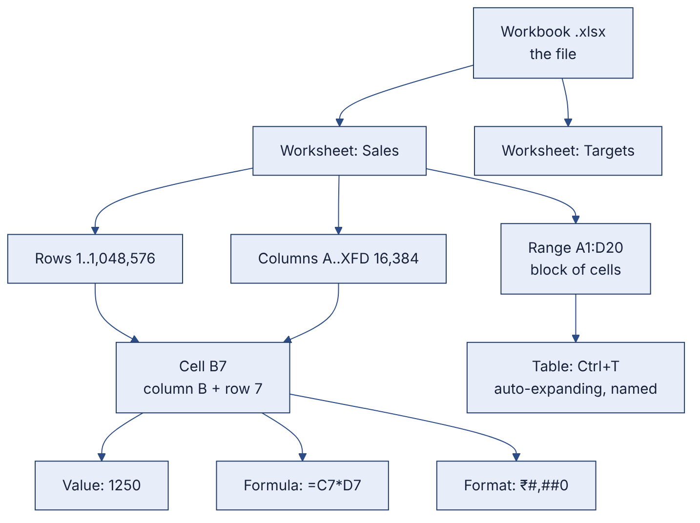
| Part of the screen | What it does |
|---|---|
| Ribbon | Tabs (Home, Insert, Page Layout, Formulas, Data, Review, View) holding groups of commands |
| Quick Access Toolbar | Your favourite commands (Save, Undo); right-click any command → Add to QAT |
| Name Box | Shows the active cell address; type a name or address and press Enter to jump there |
| Formula Bar | Shows the real content of a cell: the formula, not just the result |
| Status bar | Select numbers to see instant Sum, Average and Count; right-click it to add Min/Max |
| Sheet tabs | Switch, rename (double-click), colour, move or copy sheets |
| File → Options | Calculation mode, autosave, language, add-ins (Analysis ToolPak) |
1.2 Terminology
| Workbook | The file (.xlsx; .xlsm if it has macros; .xlsb binary; .csv plain text, one sheet, no formatting) |
| Worksheet | One grid inside the workbook |
| Cell / address | Intersection of a column and row, e.g. C7 |
| Range | A block of cells, e.g. A1:D20; non-adjacent ranges use a comma: A1:A5,C1:C5 |
| Formula | Starts with =; can use operators, references and functions: =B2*C2 |
| Function | A built-in formula with a name and arguments: =SUM(B2:B10) |
| Argument | An input to a function, separated by commas |
| Relative / absolute reference | A1 shifts when copied; $A$1 stays fixed; A$1 / $A1 are mixed. Press F4 to cycle |
| Table | A range converted with Ctrl+T: banded, auto-expanding, uses names like Sales[Amount] |
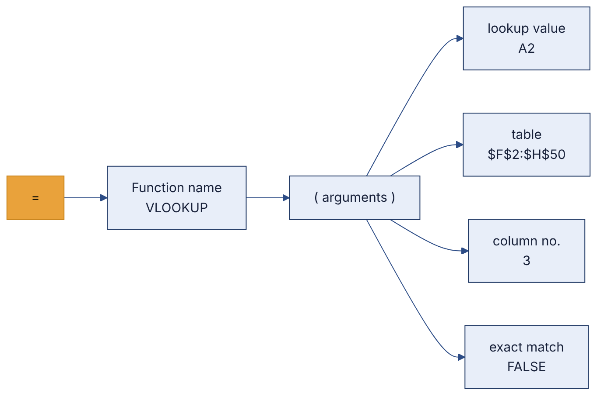
1.3 Key functionalities
- AutoFill and Flash Fill: drag the fill handle to continue a series (Jan, Feb…); Ctrl+E Flash Fill learns a pattern from one example (first names from full names).
- Paste Special (Ctrl+Alt+V): values only, formats, transpose, multiply a range by a number.
- Find & Replace (Ctrl+H), Go To Special (blanks, formulas, errors).
- Text to Columns (Data tab): split "Gurugram, Haryana" into two columns.
- Remove Duplicates, Data Validation (drop-down lists), Protect Sheet.
1.4 Shortcuts
| Navigate and select | |
|---|---|
| Ctrl+Arrow | Jump to the last filled cell in a direction |
| Ctrl+Shift+Arrow | Select to the edge of data |
| Ctrl+Home / End | Go to A1 / last used cell |
| Ctrl+Space / Shift+Space | Select column / row |
| Ctrl+PgUp/PgDn | Previous / next sheet |
| Ctrl+G or F5 | Go To |
| Edit and format | |
|---|---|
| F2 | Edit cell |
| F4 | Toggle $ references / repeat last action |
| Alt+= | AutoSum |
| Ctrl+1 | Format Cells |
| Ctrl+Shift+$ % # | Currency / percent / date format |
| Ctrl+; / Ctrl+Shift+; | Today's date / current time |
| Alt+Enter | New line inside a cell |
| Ctrl+Shift+L | Toggle filters |
| Ctrl+` | Show formulas instead of results |
1.5 Functions: four families with real examples
Example sheet: an electronics retailer's orders. Columns: A Order ID, B Order Date, C Customer, D City, E Product, F Qty, G Unit Price, H Amount.
| Family | Function | Real-world formula | Result / meaning |
|---|---|---|---|
| Number | ROUND | =ROUND(H2*18%,2) | GST at 18%, rounded to paise |
| ROUNDUP / ROUNDDOWN | =ROUNDUP(F2/12,0) | Cartons needed when 12 fit per carton | |
| INT / TRUNC | =INT(H2/1000) | Whole thousands | |
| MOD | =MOD(A2,2)=0 | TRUE for even order IDs (alternate-row checks) | |
| ABS | =ABS(Actual-Target) | Size of a miss, ignoring sign | |
| CEILING / FLOOR, RAND, RANDBETWEEN | =CEILING(G2,10) | Price rounded up to the next ₹10 | |
| Date & Time | TODAY / NOW | =TODAY()-B2 | Days since the order |
| YEAR / MONTH / DAY | =YEAR(B2) | Order year for grouping | |
| TEXT | =TEXT(B2,"mmm-yy") | "Oct-26" month label | |
| DATE | =DATE(2026,4,1) | Start of the Indian financial year | |
| EOMONTH / EDATE | =EOMONTH(B2,0) | Month-end date (billing cut-off); EDATE(B2,3) = 3 months later | |
| DATEDIF | =DATEDIF(DOB,TODAY(),"Y") | Age in completed years (hidden function, still works) | |
| WEEKDAY / NETWORKDAYS / WORKDAY | =NETWORKDAYS(B2,DeliveredOn) | Working days to deliver (excludes weekends, optional holiday list) | |
| Text | LEFT / RIGHT / MID | =LEFT(A2,3) | Region prefix "NOR" from "NOR-1042" |
| LEN | =LEN(Phone)=10 | Valid 10-digit mobile number? | |
| FIND / SEARCH | =MID(Email,FIND("@",Email)+1,50) | Email domain | |
| TRIM / CLEAN | =TRIM(C2) | Removes extra spaces from imported names | |
| UPPER / LOWER / PROPER | =PROPER(C2) | "ravi kumar" → "Ravi Kumar" | |
| CONCAT / & / TEXTJOIN | =TEXTJOIN(", ",TRUE,D2:D6) | One cell listing cities, skipping blanks | |
| SUBSTITUTE / REPLACE | =SUBSTITUTE(G2,"₹","")*1 | Strip a symbol and convert to a number | |
| VALUE / TEXT | =VALUE("1,250") | Text that looks like a number → a real number | |
| Aggregate | SUM / AVERAGE | =SUM(H2:H500) | Total revenue |
| COUNT / COUNTA / COUNTBLANK | =COUNTBLANK(D2:D500) | Orders missing a city | |
| MIN / MAX / SMALL / LARGE | =LARGE(H2:H500,3) | Third-largest order | |
| SUMIF / SUMIFS | =SUMIFS(H:H,D:D,"Pune",B:B,">="&DATE(2026,4,1)) | Pune revenue this financial year | |
| COUNTIF / COUNTIFS | =COUNTIFS(D:D,"Delhi",H:H,">10000") | Big Delhi orders | |
| AVERAGEIF(S), MEDIAN, MODE | =AVERAGEIFS(H:H,E:E,"Laptop") | Average laptop order value |
1.6 Formatting and custom number formatting
Formatting changes how a value looks, never the value itself. 0.18 formatted as % shows 18% but is still 0.18 in formulas.
| Custom format (Ctrl+1 → Custom) | Value | Shows as | Use |
|---|---|---|---|
#,##0 | 1250000 | 1,250,000 | Thousands separators |
[>=10000000]##\,##\,##\,##0;[>=100000]##\,##\,##0;##,##0 | 1250000 | 12,50,000 | Indian lakh/crore grouping |
0.0,,"M" | 1250000 | 1.3M | Millions in dashboards (each comma divides by 1,000) |
"₹"#,##0.00 | 99.5 | ₹99.50 | Currency |
000 | 7 | 007 | Fixed-length IDs |
dd mmm' yyyy | 09-05-1986 | 09 May' 1986 | Readable dates |
0 "kg" | 80 | 80 kg | Units while staying numeric |
[Green]▲0%;[Red]▼0%;0% | 0.12 / −0.05 | ▲12% / ▼5% | Positive;negative;zero sections |
;;; | anything | (hidden) | Hide values but keep them |
A format has up to four sections separated by semicolons: positive;negative;zero;text. Conditions in square brackets, e.g. [<100000], can replace the default sections.
1.7 Conditional formatting and custom rules
- Highlight Cells Rules: greater than, between, duplicate values, text contains.
- Top/Bottom: top 10 items, top 10%, above average.
- Data Bars, Colour Scales, Icon Sets: in-cell visuals for a quick heatmap.
- Custom rule with a formula (New Rule → Use a formula): the formula must return TRUE/FALSE for the first cell of the selection; lock columns with $.
Highlight the whole row when Amount > 50,000 select A2:H500 → =$H2>50000
Overdue invoices (due date passed, unpaid) =AND($E2<TODAY(),$F2="Unpaid")
Weekend orders =WEEKDAY($B2,2)>5
Every other row (zebra) =MOD(ROW(),2)=0
Duplicate customer IDs =COUNTIF($A$2:$A$500,$A2)>11.8 Freezing panes
View → Freeze Panes keeps headers visible while scrolling. Freeze Top Row or First Column, or select cell B2 and choose Freeze Panes to lock both row 1 and column A (everything above and left of the selected cell is frozen). Split (View → Split) shows two parts of a sheet side by side.
1.9 Sorting and filters
- Sort A→Z / Z→A on one column; Custom Sort for multiple levels (City A→Z, then Amount largest first) or by cell colour, or by a custom list (Jan, Feb, Mar…).
- Filter (Ctrl+Shift+L): pick values, Text/Number/Date filters (Top 10, Between, This Month), filter by colour.
- Advanced Filter (Data → Advanced): criteria range with AND (same row) / OR (different rows); copy unique records to another location.
- Use
SUBTOTAL(9,H2:H500)orAGGREGATEto sum only visible (filtered) rows.
1.10 Charts: concept and creation
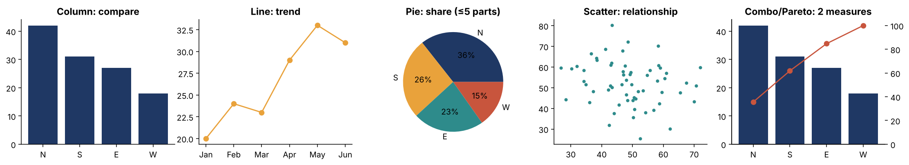
Practise every Class 1 topic in the Excel Basic-to-Advanced workbook: one sheet per topic with live formulas.
Building Blocks · Class 2: Introduction to RDBMS
2.1 Server, database, DBMS, RDBMS
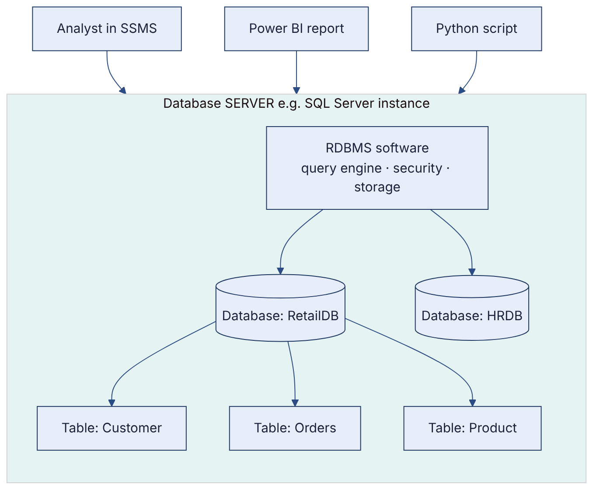
| Server | A computer (physical or cloud) that runs database software and answers requests over a network. In SQL Server one machine can host several instances. |
| Database (DB) | An organised collection of related data, e.g. RetailDB with Customer, Orders and Product tables. |
| DBMS | Software to create, read, update and secure data (handles storage, concurrency, backup, permissions). |
| RDBMS | A DBMS that stores data in tables (relations) of rows and columns linked by keys, and is queried with SQL. Follows ACID properties: Atomicity, Consistency, Isolation, Durability. |
Excel sheet vs database table
- Excel: ~1M rows per sheet, one user editing, any value in any cell.
- Database: billions of rows, thousands of users, every column has a fixed data type and rules.
Real example
When you order on a food app, the order row is written to an Orders table, linked by customer_id to Customer and by restaurant_id to Restaurant. Analysts later query those same tables for reports.
2.2 Database design and structure
- Table (relation/entity) → row (record/tuple) → column (field/attribute).
- Schema: a named container of objects (dbo.Customer, sales.Orders).
- Normalisation: split data so each fact is stored once. 1NF: one value per cell, no repeating groups. 2NF: every non-key column depends on the whole key. 3NF: no column depends on another non-key column (store city once in a City table, not in every order).
- OLTP vs OLAP: transactional systems (normalised, fast writes) vs analytics warehouses (star schemas, fast reads).
2.3 Key RDBMS vendors
| Product | Vendor | Notes |
|---|---|---|
| SQL Server / Azure SQL | Microsoft | Used in this course; T-SQL dialect; free Developer and Express editions |
| MySQL | Oracle (open source) | Popular for web apps |
| PostgreSQL | Open source | Feature-rich; very popular in start-ups and cloud |
| Oracle Database | Oracle | Large enterprises, banking |
| SQLite | Open source | File-based, inside phones and apps |
| Cloud warehouses | Snowflake, Google BigQuery, Amazon Redshift, Databricks SQL, Microsoft Fabric | Analytics at scale; standard SQL with small dialect differences |
2.4 Entity Relationship Diagram (ERD)
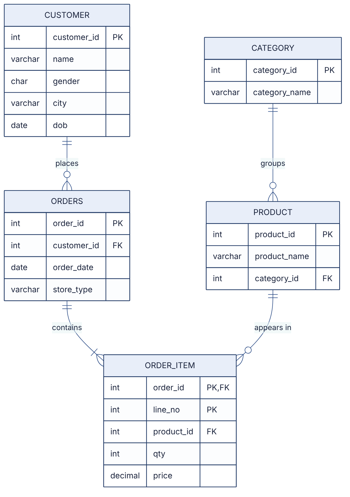
2.5 Keys and constraints
| Key / constraint | Meaning | Example |
|---|---|---|
| Primary key (PK) | Uniquely identifies each row; not NULL; one per table | customer_id |
| Foreign key (FK) | References a PK in another table; enforces referential integrity | Orders.customer_id → Customer.customer_id |
| Candidate key | Any minimal column set that could be the PK | customer_id, email, PAN |
| Alternate key | A candidate key not chosen as PK | |
| Composite key | PK made of 2+ columns | (order_id, line_no) |
| Super key | Any unique column set, even with extra columns | (customer_id, name) |
| Surrogate vs natural key | System-generated ID vs a real-world identifier | IDENTITY(1,1) vs PAN number |
| NOT NULL · UNIQUE · CHECK · DEFAULT | Column rules | CHECK (qty > 0), DEFAULT GETDATE() |
2.6 Relationships and metadata
- One-to-one: employee ↔ employee_passport. One-to-many: customer → orders (most common). Many-to-many: students ↔ courses, implemented with a bridge table Enrolment(student_id, course_id).
- Metadata is data about data: table names, column names, types, keys, row counts. Query it with
SELECT * FROM INFORMATION_SCHEMA.COLUMNS WHERE TABLE_NAME = 'Customer';orEXEC sp_help 'Customer';
2.7 SQL, SQL Server and SSMS
SQL (Structured Query Language) is the standard language for relational databases. It is declarative: you say what you want; the engine decides how. T-SQL is Microsoft's dialect (adds variables, TOP, procedures). SSMS (SQL Server Management Studio) is the free Windows tool for connecting to SQL Server, browsing objects in Object Explorer and running queries.
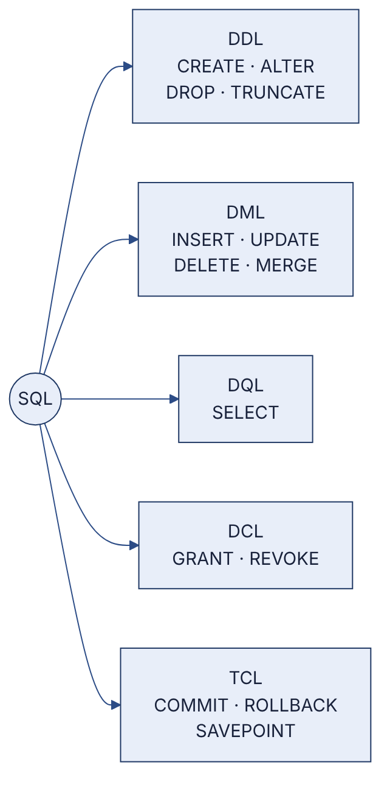
Building Blocks · Class 3: Data Definition Language
3.1 Create, select and drop a database
CREATE DATABASE RetailDB; -- create
USE RetailDB; -- select it for the following statements
SELECT name FROM sys.databases; -- list databases
-- DROP DATABASE RetailDB; -- deletes the database and ALL its data (irreversible)3.2 Data types
| Category | Types | Use for |
|---|---|---|
| Whole numbers | TINYINT (0–255), SMALLINT, INT (±2.1 billion), BIGINT | IDs, counts |
| Exact decimals | DECIMAL(p,s) / NUMERIC, MONEY | Money: DECIMAL(10,2) = up to 99,999,999.99 |
| Approximate | FLOAT, REAL | Scientific values (never for money) |
| Text | CHAR(n) fixed, VARCHAR(n) variable, NVARCHAR(n) Unicode (Hindi, emojis), VARCHAR(MAX) | Names, codes, comments |
| Date & time | DATE, TIME, DATETIME2, DATETIMEOFFSET (with time zone) | Order dates, timestamps |
| Other | BIT (0/1), UNIQUEIDENTIFIER, VARBINARY, JSON (SQL Server 2025), VECTOR (2025) | Flags, GUIDs, files, documents, AI embeddings |
3.3 Create and drop tables, with keys and constraints
CREATE TABLE Customer (
customer_id INT IDENTITY(1001,1) PRIMARY KEY, -- auto number 1001, 1002...
full_name NVARCHAR(80) NOT NULL,
email VARCHAR(120) UNIQUE,
city VARCHAR(40) DEFAULT 'Gurugram',
dob DATE CHECK (dob < '2010-01-01')
);
CREATE TABLE Orders (
order_id INT PRIMARY KEY,
customer_id INT NOT NULL,
order_date DATE NOT NULL DEFAULT CAST(GETDATE() AS DATE),
amount DECIMAL(10,2) CHECK (amount >= 0),
CONSTRAINT fk_orders_customer FOREIGN KEY (customer_id) REFERENCES Customer(customer_id)
);
-- DROP TABLE Orders; (drop the child first: Customer cannot be dropped while Orders references it)3.4 Insert values
INSERT INTO Customer (full_name, email, city, dob)
VALUES ('Asha Verma', 'asha@example.com', 'Pune', '1994-03-12'),
('Ravi Kumar', 'ravi@example.com', DEFAULT, '1989-11-02'); -- multi-row insert (max 1000 rows per VALUES)
INSERT INTO Orders VALUES (1, 1001, '2026-10-01', 2499.00); -- all columns in table order
INSERT INTO Orders_Archive SELECT * FROM Orders WHERE order_date < '2026-01-01'; -- insert from a query3.5 Modify records: UPDATE (always with WHERE)
UPDATE Customer SET city = 'Noida' WHERE customer_id = 1002;
UPDATE Orders SET amount = amount * 1.05 WHERE order_date >= '2026-10-01'; -- 5% price revision
-- Without WHERE every row changes. Run the same WHERE as a SELECT first to check the rows.3.6 ALTER: change the table's properties
ALTER TABLE Customer ADD phone VARCHAR(15); -- add a column
ALTER TABLE Customer ALTER COLUMN city VARCHAR(60); -- change type/size
ALTER TABLE Customer DROP COLUMN phone; -- remove a column
ALTER TABLE Orders ADD CONSTRAINT chk_amount CHECK (amount < 1000000);
ALTER TABLE Orders DROP CONSTRAINT chk_amount;
EXEC sp_rename 'Customer.full_name', 'customer_name', 'COLUMN'; -- rename a column3.7 DELETE vs TRUNCATE vs DROP
| DELETE | TRUNCATE TABLE | DROP TABLE | |
|---|---|---|---|
| Removes | Rows matching WHERE (or all) | All rows, keeps structure | Rows + structure + constraints |
| Language | DML | DDL | DDL |
| Identity counter | Continues | Resets to seed | Gone |
| Works with FK references | Yes (if rules allow) | Not if referenced by a FK | Not while referenced |
| Rollback in a transaction | Yes | Yes in SQL Server (inside BEGIN TRAN) | Yes in SQL Server (inside BEGIN TRAN) |
3.8 Best practices and key takeaways
- Name consistently: singular or plural tables, snake_case columns,
pk_/fk_/chk_constraint prefixes - Choose the smallest correct type: DATE not VARCHAR for dates, DECIMAL for money
- Every table gets a primary key; every relationship gets a foreign key
- List columns in INSERT; never rely on column order
- Wrap risky changes in a transaction:
BEGIN TRAN … ROLLBACK / COMMIT - Keep scripts in files (and Git) so the database can be rebuilt
Building Blocks · Class 4: Data extraction with SELECT
Examples use the retail tables: Customer(customer_id, name, gender, city, dob), Orders(order_id, customer_id, order_date, store_type, amount), Product(product_id, product_name, category, price), Order_Item(order_id, product_id, qty).
4.1 Subsetting, sorting, filtering, removing duplicates
SELECT * FROM Customer; -- all columns (avoid in production)
SELECT name, city FROM Customer; -- subset columns
SELECT TOP 10 order_id, amount FROM Orders ORDER BY amount DESC; -- top 10 orders
SELECT DISTINCT city FROM Customer; -- remove duplicates
SELECT * FROM Orders WHERE store_type = 'e-Shop' AND amount > 5000;
SELECT * FROM Orders ORDER BY order_date DESC, amount ASC; -- multi-level sort4.2 Operators
| Type | Operators | Example |
|---|---|---|
| Assignment | = in SET and variables | DECLARE @fy DATE = '2026-04-01'; |
| Arithmetic | + - * / % | amount * 0.18 AS gst; integer division: 7/2 = 3, use 7/2.0 |
| Comparison (conditional) | = <> != > < >= <= | WHERE amount <> 0 |
| Range / list | BETWEEN … AND, IN (…) | WHERE city IN ('Pune','Delhi') |
| Wildcards with LIKE | % any chars, _ one char, [a-c] set, [^a] not | WHERE name LIKE 'A%'; LIKE '_a%' |
| NULL handling | IS NULL, IS NOT NULL, ISNULL(), COALESCE() | COALESCE(phone, email, 'no contact') |
| Logical | AND OR NOT | WHERE NOT (city = 'Delhi' OR amount < 100) |
Precedence: brackets → arithmetic → comparison → NOT → AND → OR. WHERE a OR b AND c means a OR (b AND c); add brackets to be clear.
4.3 Sequence of operations
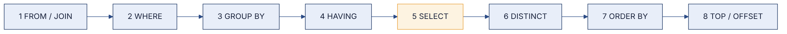
4.4 Functions
| Group | Functions | Business example |
|---|---|---|
| Text | LEN, LEFT, RIGHT, SUBSTRING, CHARINDEX, UPPER, LOWER, TRIM, REPLACE, CONCAT, STRING_AGG | UPPER(LEFT(city,3)) city code; STRING_AGG(product_name, ', ') products per order |
| Date & time | GETDATE, YEAR, MONTH, DATEPART, DATENAME, DATEADD, DATEDIFF, EOMONTH, FORMAT, CONVERT | DATEDIFF(DAY, order_date, GETDATE()) days since order |
| Number | ROUND, CEILING, FLOOR, ABS, POWER, SQRT | ROUND(AVG(amount), 2) |
| Aggregate | COUNT, COUNT(DISTINCT), SUM, AVG, MIN, MAX | COUNT(DISTINCT customer_id) active customers |
| Conversion / logic | CAST, CONVERT, TRY_CONVERT, CASE, IIF | CASE WHEN amount >= 10000 THEN 'High' ELSE 'Normal' END |
SELECT city,
COUNT(*) AS orders,
SUM(o.amount) AS revenue,
ROUND(AVG(o.amount), 0) AS avg_order_value
FROM Orders o JOIN Customer c ON o.customer_id = c.customer_id
WHERE o.order_date >= '2026-04-01'
GROUP BY city
HAVING SUM(o.amount) > 100000
ORDER BY revenue DESC;4.5 Joins: extracting data from multiple tables
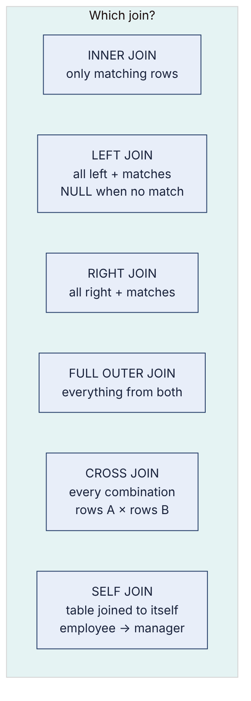
-- INNER: orders with their customer
SELECT o.order_id, c.name, o.amount FROM Orders o INNER JOIN Customer c ON o.customer_id = c.customer_id;
-- LEFT: every customer, even those who never ordered (find inactive customers)
SELECT c.name FROM Customer c LEFT JOIN Orders o ON c.customer_id = o.customer_id WHERE o.order_id IS NULL;
-- RIGHT: mirror of LEFT; FULL OUTER: unmatched rows from both sides (data reconciliation)
SELECT a.id, b.id FROM System_A a FULL OUTER JOIN System_B b ON a.id = b.id WHERE a.id IS NULL OR b.id IS NULL;
-- SELF: employee with manager name
SELECT e.name AS employee, m.name AS manager FROM Employee e LEFT JOIN Employee m ON e.manager_id = m.emp_id;
-- CROSS: every store × every month (to build a complete calendar grid)
SELECT s.store_id, m.month_start FROM Store s CROSS JOIN Months m;
-- NATURAL JOIN joins automatically on same-named columns. It exists in MySQL/PostgreSQL/Oracle
-- but NOT in SQL Server; always write explicit ON conditions instead.4.6 Appending datasets and set operators
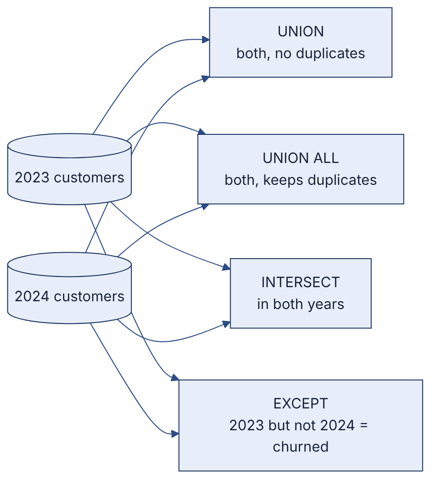
SELECT customer_id FROM Orders_2023
UNION ALL SELECT customer_id FROM Orders_2024; -- append (fast, keeps duplicates)
SELECT customer_id FROM Orders_2023
EXCEPT SELECT customer_id FROM Orders_2024; -- churned customers4.7 Subqueries
-- Ordinary (nested) subquery in WHERE
SELECT * FROM Orders WHERE amount > (SELECT AVG(amount) FROM Orders);
SELECT name FROM Customer WHERE customer_id IN (SELECT customer_id FROM Orders WHERE store_type = 'Flagship store');
-- Inline view (derived table) in FROM
SELECT city, AVG(cust_rev) AS avg_revenue_per_customer
FROM (SELECT c.city, c.customer_id, SUM(o.amount) AS cust_rev
FROM Customer c JOIN Orders o ON c.customer_id = o.customer_id
GROUP BY c.city, c.customer_id) AS t
GROUP BY city;4.8 Business use cases
| Business question | SQL pattern |
|---|---|
| Top 5 cities by revenue this FY | JOIN + WHERE date + GROUP BY + ORDER BY + TOP 5 |
| Customers who never ordered | LEFT JOIN … WHERE right.key IS NULL (or NOT EXISTS) |
| Repeat customers (more than 3 orders) | GROUP BY customer HAVING COUNT(*) > 3 |
| Share of revenue by store type | SUM(amount) * 100.0 / (SELECT SUM(amount) FROM Orders) |
| Orders above average | Subquery in WHERE |
| Return rate by category | SUM(CASE WHEN qty < 0 THEN 1 ELSE 0 END) * 1.0 / COUNT(*) |
Full worked practice with real results: SQL Retail case study (15 questions) and SQL Mobile case study.
Building Blocks · Class 5: SQL recitation – installing SQL Server, SSMS and importing data
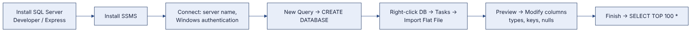
5.1 Install SQL Server
- Download SQL Server Developer (free, full features, non-production) or Express (free, small production) from Microsoft's SQL Server downloads page. The current release is SQL Server 2025.
- Choose Basic installation (or Custom to pick the instance name). Note the instance name shown at the end, e.g.
localhost\SQLEXPRESSorlocalhostfor a default instance. - Install SSMS separately (it is a different download). Recent SSMS versions (21 and later) install through the Visual Studio Installer and add a dark theme and optional Copilot.
5.2 Connect and use the IDE
- Connect dialog: Server type Database Engine; Server name from step 2; Authentication Windows Authentication. If a certificate warning appears on a local machine, tick Trust server certificate.
- Object Explorer (left): Databases → Tables → Columns, Keys, Constraints, Indexes. Right-click a table → Select Top 1000 Rows.
- Query editor: New Query (Ctrl+N); pick the database in the toolbar drop-down or write
USE RetailDB;; run with F5; run only the highlighted lines by selecting them first; Ctrl+R hides the results pane; IntelliSense refresh Ctrl+Shift+R. - Results to Grid (Ctrl+D) or Text (Ctrl+T); right-click the grid → Save Results As CSV.
5.3 Import flat files (CSV / TXT)
- Right-click the database → Tasks → Import Flat File.
- Browse to
Transactions.csv; table name defaults to the file name. - Preview the first rows. In Modify Columns, set data types (DATE for dates, DECIMAL for amounts), mark a primary key, and allow NULLs where needed.
- Finish, then check:
SELECT COUNT(*) FROM Transactions;should match the file's row count.
TRY_CONVERT(DATE, tran_date, 105); amounts with commas or ₹ → import as text and clean; text longer than the default nvarchar(50) → widen the column in Modify Columns.For Excel files use Tasks → Import Data (SQL Server Import and Export Wizard), or save the sheet as CSV first. For repeatable loads write BULK INSERT:
BULK INSERT dbo.Transactions
FROM 'C:\Data\Transactions.csv'
WITH (FORMAT = 'CSV', FIRSTROW = 2, FIELDTERMINATOR = ',', ROWTERMINATOR = '0x0a');Building Blocks · Class 6: Introduction to Statistics (Part 1/4)
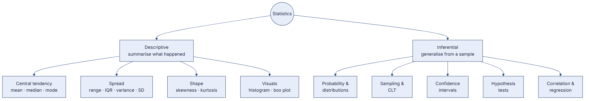
6.1 What statistics is and why analysts need it
Statistics is the science of collecting, summarising and drawing conclusions from data while measuring uncertainty. Example: an e-commerce firm sees average order value rise from ₹1,240 to ₹1,310 after a new checkout. Statistics answers whether that rise is real or just normal week-to-week noise.
6.2 Population vs sample, parameter vs statistic
| Population | Sample | |
|---|---|---|
| Meaning | Every unit you care about (all 2 crore customers) | The subset you actually observe (5,000 surveyed customers) |
| Summary is called | Parameter | Statistic |
| Mean / SD symbols | μ, σ | x̄, s |
| Size | N | n |
6.3 Types of data and measurement scales
| Scale | Type | Can you… | Example |
|---|---|---|---|
| Nominal | Categorical | Count, mode only | City, payment mode, gender |
| Ordinal | Categorical (ordered) | Rank, median | Rating Poor < Average < Good; education level |
| Interval | Numeric, no true zero | Add/subtract | Temperature in °C, calendar year |
| Ratio | Numeric, true zero | All maths incl. ratios | Sales, weight, age, delivery time |
Numeric data is discrete (countable: items in cart) or continuous (measurable: weight). Data is also cross-sectional (many customers at one time), time series (one metric over time) or panel (many customers over time); and structured (tables) or unstructured (reviews, images).
6.4 Measures of central tendency
| Measure | How | Excel | Best when |
|---|---|---|---|
| Mean | Σx / n | =AVERAGE() | Symmetric numeric data |
| Median | Middle value of sorted data (average of the two middles if n is even) | =MEDIAN() | Skewed data: salaries, house prices, delivery times |
| Mode | Most frequent value | =MODE.SNGL() | Categories: most common shoe size |
| Weighted mean | Σ(w·x) / Σw | =SUMPRODUCT(x,w)/SUM(w) | Average price across products sold in different quantities |
| Trimmed mean | Mean after dropping top/bottom x% | =TRIMMEAN(range,0.1) | Judges' scores, outlier-prone data |
| Geometric mean | (x₁·x₂·…·xₙ)^(1/n) | =GEOMEAN() | Average growth rates (CAGR) |
Worked example: why the median matters
Salaries of 6 employees (₹ lakh): 4, 5, 5, 6, 7, 45. Mean = 72/6 = 12; median = (5+6)/2 = 5.5; mode = 5. One senior salary pulls the mean far above what a typical employee earns, so report the median.
Building Blocks · Class 7: Introduction to Statistics (Part 2/4)
7.1 Measures of dispersion (spread)
| Measure | Formula | Excel | Note |
|---|---|---|---|
| Range | max − min | =MAX()-MIN() | Very sensitive to outliers |
| Variance (sample) | s² = Σ(x − x̄)² / (n − 1) | =VAR.S() | Squared units |
| Standard deviation | s = √s² | =STDEV.S() (population: STDEV.P) | Same units as data |
| Coefficient of variation | s / x̄ × 100% | =STDEV.S()/AVERAGE() | Compare consistency of things on different scales |
| IQR | Q3 − Q1 | =QUARTILE.INC(r,3)-QUARTILE.INC(r,1) | Robust to outliers |
Worked example: two delivery partners
Partner A delivery times (min): 28, 30, 31, 29, 32 → mean 30, SD ≈ 1.6. Partner B: 15, 45, 20, 40, 30 → mean 30, SD ≈ 12.7. Same average, but A is far more reliable. Customers feel the spread, not the mean.
7.2 Percentiles and quartiles
The p-th percentile is the value below which p% of observations fall. Q1 = 25th, Q2 = median, Q3 = 75th percentile. "Your score is at the 90th percentile" means you beat 90% of test-takers. Excel: =PERCENTILE.INC(range,0.9), =PERCENTRANK.INC(range,x).
7.3 Shape: skewness and kurtosis
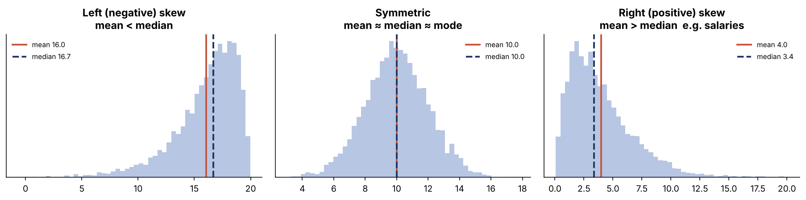
Excel: =SKEW() (positive = right tail) and =KURT() (positive = heavier tails than normal, more extreme values).
7.4 Box plot and outliers
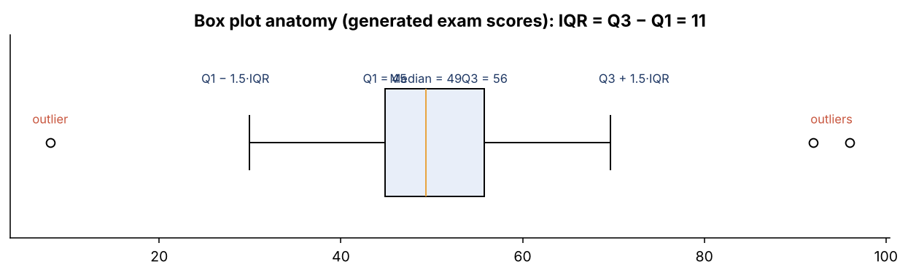
7.5 Standardisation: z-scores
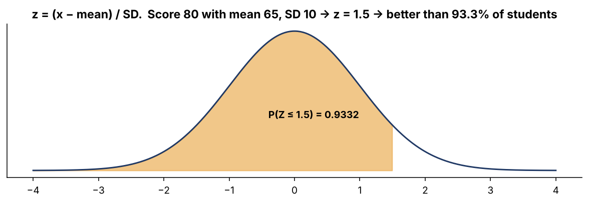
Excel: =STANDARDIZE(x, mean, sd); probability below: =NORM.S.DIST(z,TRUE). Rule of thumb: |z| > 3 is unusual.
7.6 Relationship between two variables: covariance and correlation
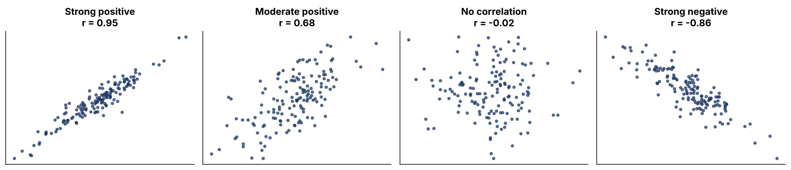
- Covariance: direction of joint movement, but its size depends on units.
=COVARIANCE.S() - Correlation r = cov / (sₓ·sᵧ): unit-free.
=CORREL(). |r| > 0.7 strong, 0.3–0.7 moderate, < 0.3 weak. - Correlation is not causation: ice-cream sales and AC sales both rise in summer because of heat, not because of each other.
7.7 Visualising distributions
Histogram (Insert → Statistic Chart → Histogram; set bin width), box & whisker chart, frequency table with =FREQUENCY() or a pivot with grouped values.
Building Blocks · Class 8: Introduction to Statistics (Part 3/4)
8.1 Probability basics
| Experiment, outcome, event | Show an ad (experiment); click/no-click (outcomes); "user clicks" (event) |
| Probability | P(A) = favourable / total, between 0 and 1. Empirical: 230 clicks out of 10,000 views → P = 0.023 |
| Complement | P(not A) = 1 − P(A) |
| Addition rule | P(A or B) = P(A) + P(B) − P(A and B) |
| Multiplication (independent) | P(A and B) = P(A) × P(B): two independent servers both failing |
| Conditional | P(A | B) = P(A and B) / P(B): probability of purchase given the user added to cart |
| Bayes' theorem | P(A | B) = P(B | A) · P(A) / P(B) |
Worked Bayes example: fraud alert
1% of transactions are fraud. The rule flags 95% of frauds and wrongly flags 5% of genuine ones. If a transaction is flagged, P(fraud | flag) = 0.95×0.01 / (0.95×0.01 + 0.05×0.99) = 0.0095 / 0.059 = 16%. Most alerts are false alarms because fraud is rare. This is why analysts look at precision, not just detection rate.
8.2 Random variables and probability distributions
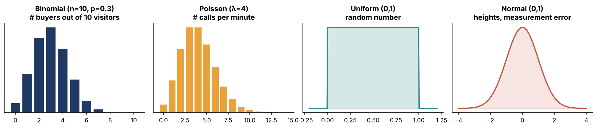
| Distribution | Models | Excel |
|---|---|---|
| Bernoulli / Binomial | Number of successes in n yes/no trials | =BINOM.DIST(k,n,p,FALSE) |
| Poisson | Count of events in a fixed interval (calls per hour) | =POISSON.DIST(k,λ,FALSE) |
| Uniform | All values equally likely | =RAND() |
| Normal | Symmetric bell curve (heights, errors, sums of many effects) | =NORM.DIST(x,μ,σ,TRUE) |
| Exponential | Time between events | =EXPON.DIST() |
| t, χ², F | Sampling distributions used by tests (Part 4) | T.DIST, CHISQ.DIST, F.DIST |
Expected value E[X] = Σ x·P(x): if a lottery ticket wins ₹1,000 with probability 0.001, its expected value is ₹1, so a ₹10 ticket loses ₹9 on average.
8.3 Sampling methods
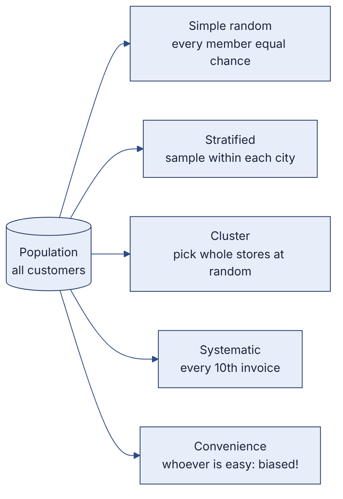
Biases to watch: selection bias (only app users surveyed), non-response bias, survivorship bias (studying only successful start-ups).
8.4 Sampling distribution and the Central Limit Theorem
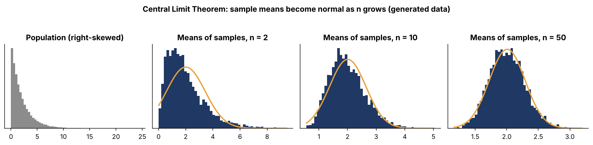
- Bigger samples → smaller standard error → more precise estimates (4× the sample halves the error).
- The CLT is what lets us use z- and t-tests on skewed business data (Part 4).
What changed since these classes were recorded
Excel (Microsoft 365) – new functions and features
| Feature | What it does | Example |
|---|---|---|
| XLOOKUP / XMATCH | Lookup in any direction with a built-in "not found" value | =XLOOKUP(A2,Products[ID],Products[Price],"Missing") |
| Dynamic arrays: FILTER, SORT, SORTBY, UNIQUE, SEQUENCE | One formula spills a whole result range | =SORT(FILTER(Sales,Sales[City]="Pune"),4,-1) |
| LET / LAMBDA | Name parts of a formula; create your own reusable functions | =LET(t,SUM(H:H),g,t*18%,t+g) |
| TEXTSPLIT, TEXTBEFORE, TEXTAFTER, VSTACK, HSTACK, TAKE, DROP | Modern text and array shaping | =TEXTBEFORE(A2,"@") |
| GROUPBY, PIVOTBY, PERCENTOF | Pivot-table results from a formula | =GROUPBY(Sales[City],Sales[Amount],SUM) |
| REGEXTEST, REGEXEXTRACT, REGEXREPLACE | Pattern matching in text | =REGEXTEST(B2,"^[6-9]\d{9}$") valid Indian mobile |
| TRIMRANGE and trim references (A:.A) | Ignore empty trailing rows in whole-column references | =SUM(H:.H) |
| TRANSLATE, DETECTLANGUAGE | Translate text inside a cell | =TRANSLATE(A2,"en","hi") |
| IMPORTCSV / IMPORTTEXT (2026) | Pull a CSV file into the sheet as a dynamic array | =IMPORTCSV("C:\data\sales.csv") |
Python in Excel (=PY()) + Python editor | Run pandas and charts inside cells (cloud-executed) | =PY(xl("Sales[#All]",headers=True).describe()) |
| Copilot in Excel | Generate and explain formulas, fix errors, clean data, analyse text, build PivotTables and charts from a prompt | "Add a column with profit margin and highlight negatives" |
=COPILOT() function | Calls AI inside a formula, row by row | =COPILOT("Classify this review as Positive/Negative/Neutral",C2) |
| Agent Mode | Multi-step tasks (build a model or dashboard) from chat | "Create a monthly sales dashboard from this table" |
| Other | PivotTable auto-refresh, Show Changes history (one year), dark mode for the grid, Power Query in Excel for the web |
Availability depends on your Microsoft 365 plan, channel and region; Copilot features need a Copilot licence. Excel 2019/2021 standalone versions do not receive these.
SQL Server – newer T-SQL features
| Release | Feature | Example |
|---|---|---|
| 2022 | GREATEST / LEAST | SELECT GREATEST(q1, q2, q3, q4) AS best_quarter |
| 2022 | DATETRUNC, DATE_BUCKET | DATETRUNC(MONTH, order_date) first day of the month |
| 2022 | GENERATE_SERIES | SELECT value FROM GENERATE_SERIES(1, 12) month numbers |
| 2022 | IS [NOT] DISTINCT FROM | NULL-safe comparison |
| 2022 | WINDOW clause, STRING_SPLIT with ordinal, APPROX_PERCENTILE_CONT | Reuse a window definition |
| 2025 | Regular expressions: REGEXP_LIKE, REGEXP_REPLACE, REGEXP_SUBSTR, REGEXP_INSTR, REGEXP_COUNT | WHERE REGEXP_LIKE(email, '^[^@]+@[^@]+\.[a-z]{2,}$') |
| 2025 | Native JSON data type, JSON indexes, JSON aggregates (JSON_OBJECTAGG, JSON_ARRAYAGG) | Store API responses efficiently |
| 2025 | VECTOR data type, VECTOR_DISTANCE, DiskANN vector index (preview) | Similarity search on AI embeddings |
| 2025 | Fuzzy string matching (preview), external AI model definitions, change event streaming (preview) | Match "Gurgaon" with "Gurugram" |
SQL Server 2025 became generally available in November 2025. Regex and vector functions also exist in Azure SQL Database.
Real-world mini case: "Mumbai Electronics" monthly review
A 6-store electronics chain shares an Orders export (Order ID, Date, Store, City, Category, Qty, Unit Price, Customer Type). The manager asks five questions. The answer to each uses only Building Blocks skills.
| Question | Excel (Class 1) | SQL (Classes 2–4) | Statistics (Classes 6–8) |
|---|---|---|---|
| Revenue by store this month? | =SUMIFS(Amount,Store,A2,Date,">="&EOMONTH(TODAY(),-1)+1) | GROUP BY store WHERE order_date >= DATETRUNC(MONTH, GETDATE()) | Mean and median order value per store |
| Which store is most consistent? | =STDEV.S of daily sales ÷ mean (CV) | STDEV(daily_total) in a derived table | Coefficient of variation |
| Highlight loss-making lines | Conditional formatting =$J2<0 | WHERE margin < 0 | Share of loss lines |
| Are big orders unusual? | =STANDARDIZE(H2,AVERAGE(H:H),STDEV.S(H:H)) | (amount - AVG(amount) OVER()) / STDEV(amount) OVER() | |z| > 3 → outlier |
| Probability a walk-in buys a warranty | =COUNTIFS(Type,"Walk-in",Warranty,"Yes")/COUNTIF(Type,"Walk-in") | AVG(CASE WHEN warranty='Yes' THEN 1.0 ELSE 0 END) | Conditional probability |
The Excel workbook in Downloads includes a "Case Study – Sales Dashboard" sheet with this scenario built out using live formulas.
More practice on the real course data: Excel Sportsmen case, Excel Consumer Complaints case, SQL Retail case.
What is the difference between a function and a formula in Excel?
A formula is anything starting with = (=A1+B1). A function is a named, built-in calculation used inside a formula (SUM, VLOOKUP).
Relative vs absolute reference?
A1 changes when copied; $A$1 stays fixed; A$1 and $A1 lock only the row or column. Use $ for constants such as a tax-rate cell.
How do you sum only visible rows after filtering?
=SUBTOTAL(109,range) or =AGGREGATE(9,5,range). SUM includes hidden rows.
What is a primary key vs a foreign key?
A primary key uniquely identifies rows in its own table; a foreign key in another table points to that primary key and enforces that the referenced row exists.
DELETE vs TRUNCATE?
DELETE removes selected rows and fires triggers; TRUNCATE removes all rows quickly, resets identity, and cannot be used on a table referenced by a foreign key.
Why can't I use a column alias in WHERE?
WHERE is evaluated before SELECT, so the alias does not exist yet. Repeat the expression or wrap the query in a subquery/CTE.
Mean vs median: which would you report for delivery time?
Median (and the 90th percentile), because delivery times are right-skewed: a few very late orders inflate the mean.
What does a standard deviation tell a manager?
How much individual values typically differ from the average. Two stores with equal average sales but different SD differ in predictability.
Explain the Central Limit Theorem simply.
If you take many reasonably large samples and compute each sample's average, those averages form a bell curve around the true average, even if the original data is skewed. This makes confidence intervals and tests possible.
- YouTube: Simplilearn Excel full course · YouTube: Simplilearn SQL full course · YouTube: Simplilearn statistics for data science full course
- YouTube: Leila Gharani Excel functions you need to know · YouTube: Chandoo conditional formatting formulas
- YouTube: Alex The Analyst SQL basics tutorial · YouTube: install SQL Server and SSMS step by step
- YouTube: StatQuest statistics fundamentals · YouTube: Khan Academy statistics and probability
- Microsoft: What's new in Excel (Tech Community blog) · Excel functions by category
- Microsoft Learn: What's new in SQL Server 2025 · Regex support GA announcement
- Download SQL Server · Download SSMS
- Excel Campus: 17 Excel updates from 2025
Building Blocks of ML & Applied AI
Class 1 to Class 10: programming foundations, Statistics parts 1–4, Mathematics parts 1–5
Building Blocks of ML and Applied AI · 10 classes · modules: Programming Elements, Statistics Pre-Learning, Mathematics Foundation
This pre-learning course prepares you for Python, statistics in Python, and the Machine Learning course. Class 1 teaches how programming works; Classes 2–5 are the four statistics pre-learning sessions; Classes 6–10 are the five mathematics sessions needed for machine learning.
| Class | Topic | Prepares you for |
|---|---|---|
| Building Blocks ML · Class 1 | Introduction to programming: programs and business use, databases, IDE, languages, high vs low level, compiler vs interpreter, syntax, variables, naming conventions, data types, operators, control flow, functions and UDFs, logic building and pseudo-code | Python for Data Science |
| Building Blocks ML · Class 2 | Statistics Part 1/4: introduction, data types, central tendency | Python Classes 13–14, 19–21 |
| Building Blocks ML · Class 3 | Statistics Part 2/4: dispersion, shape, z-scores, correlation | EDA in Python |
| Building Blocks ML · Class 4 | Statistics Part 3/4: probability, distributions, sampling, CLT | Python Classes 19–20 |
| Building Blocks ML · Class 5 | Statistics Part 4/4: estimation, confidence intervals, hypothesis testing, tests, regression basics | Python Class 21, ML Classes 1–3 |
| Building Blocks ML · Class 6 | Mathematics Part 1/5: algebra, functions, exponents and logarithms | Link functions, log transforms |
| Building Blocks ML · Class 7 | Mathematics Part 2/5: vectors and matrices | How data is stored for ML |
| Building Blocks ML · Class 8 | Mathematics Part 3/5: matrix operations, inverse, systems of equations, eigenvalues | Linear regression, PCA |
| Building Blocks ML · Class 9 | Mathematics Part 4/5: calculus: derivatives, partial derivatives, gradients, optimisation | Gradient descent (ML Class 5) |
| Building Blocks ML · Class 10 | Mathematics Part 5/5: probability for ML: sets, counting, conditional probability, Bayes, expectation | Naive Bayes, model evaluation |
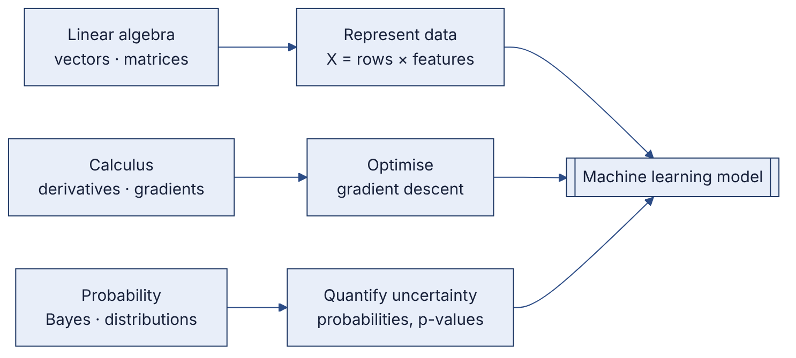
Building Blocks ML · Class 1: Introduction to programming
1.1 Computer programs and their business use
A program is a precise set of instructions a computer follows to turn input into output. Businesses use programs to do repeatable work at scale without errors:
| Business area | Program does | Example |
|---|---|---|
| Banking | Validates and records transactions; flags fraud | UPI payment app checks balance, writes to ledger, sends SMS |
| Retail / e-commerce | Pricing, inventory, recommendations | "Customers who bought this also bought…" |
| Operations | Scheduling, routing, forecasting | Delivery app assigns the nearest rider |
| Analytics | Cleans data, builds reports and models every day | Python script that emails a sales report at 9 AM |
1.2 Databases and why software needs them
Programs forget everything when they stop. A database stores data permanently, lets many users read and write at once safely, enforces rules (an order must have a valid customer), and answers questions quickly with indexes. Almost every application is front end (screens) + back end (business logic program) + database.
1.3 IDE: Integrated Development Environment
An IDE is one application that combines a code editor (syntax colours, auto-complete), a way to run code, a debugger (pause and inspect), and file/project management.
| Jupyter Notebook / JupyterLab | Code + output + notes in cells; the standard for data analysis (used in this course) |
| VS Code | Free general editor with Python and Jupyter extensions, Git, AI assistants |
| PyCharm, Spyder | Python-focused IDEs (Spyder looks like RStudio/MATLAB) |
| Google Colab | Free Jupyter in the browser, nothing to install |
| SSMS | The IDE for SQL Server |
1.4 Programming languages; high-level vs low-level
| Language | Typical use |
|---|---|
| Python | Data science, ML, automation, web back ends |
| SQL | Querying databases |
| R | Statistics and research |
| Java / C# | Enterprise applications |
| JavaScript | Web pages and apps |
| C / C++ | Systems, games, high performance (also inside NumPy) |
1.5 Language translators: compiler vs interpreter
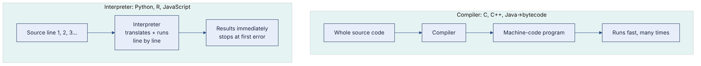
| Compiler | Interpreter | |
|---|---|---|
| Translates | Entire program at once into an executable | One statement at a time while running |
| Errors | All reported before running | Stops at the first error it reaches |
| Speed | Faster execution | Slower, but instant feedback, great for exploring data |
| Examples | C, C++, Go, Rust | Python, R, JavaScript (Python first compiles to bytecode, then interprets it) |
1.6 Why syntax rules?
Computers cannot guess intent. Syntax is the grammar of a language (brackets, colons, indentation, quotes). A syntax error means the translator cannot read the code at all; a logic error means it runs but gives the wrong answer (much harder to find).
if amount > 5000 # SyntaxError: missing colon
print("High value")
total = price + quantity # runs, but logic error: should be price * quantity1.7 Programming basics
Variables
A variable is a named label pointing to a value in memory: city = "Pune", amount = 2499.0. The value can change; the name lets you reuse it.
INC rules: Identifier Naming Conventions
| Rule | Valid | Invalid |
|---|---|---|
| Start with a letter or underscore | total_sales, _temp | 2nd_quarter |
| Only letters, digits, underscore | sales_2026 | sales-2026, sales 2026, sales$ |
| Case-sensitive | Sales ≠ sales | |
| Not a reserved keyword | class_name | class, for, if, True |
| Convention: meaningful snake_case for variables, CamelCase for classes, UPPER_CASE for constants | avg_order_value, GST_RATE = 0.18 | x1, a (legal but unclear) |
Data types
| Integer | 42 | Counts, IDs |
| Float | 3.14, 2499.0 | Prices, measurements |
| String | "Gurugram" | Text |
| Boolean | True / False | Flags, conditions |
| Collections | list [1,2,3], tuple, dict {"city":"Pune"}, set | Groups of values |
| None / NULL | None | "No value" |
Operators
| Arithmetic | + - * / // % ** (// floor division, % remainder, ** power) |
| Comparison | == != > < >= <= |
| Logical | and or not |
| Assignment | = += -= *= |
| Membership / identity | in, not in, is |
1.8 Control flow: conditions and loops
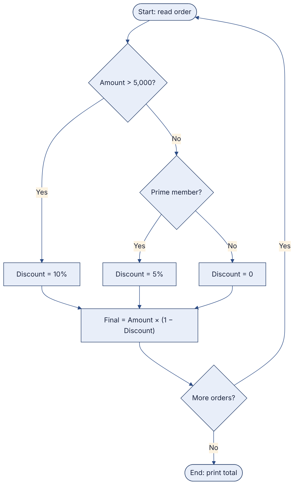
orders = [7200, 3100, 450]
prime = [False, True, False]
total = 0
for amount, is_prime in zip(orders, prime): # loop: repeat for each order
if amount > 5000: # condition
discount = 0.10
elif is_prime:
discount = 0.05
else:
discount = 0
total += amount * (1 - discount)
print(total) # 6480 + 2945 + 450 = 9875.0
n = 0
while n < 3: # while loop: repeat until condition is false
n += 11.9 Functions and UDFs
A function is a named, reusable block that takes inputs (parameters) and returns an output. Built-in functions come with the language (len, sum, round); UDFs (user-defined functions) are ones you write.
def final_price(amount, is_prime=False):
"""Return the amount after the store's discount rule."""
if amount > 5000:
return amount * 0.90
if is_prime:
return amount * 0.95
return amount
final_price(7200) # 6480.0
final_price(3100, True) # 2945.0Benefits: write once, test once, reuse everywhere; easier to read and fix. Excel equivalent: LAMBDA; SQL equivalent: user-defined functions and stored procedures.
1.10 Logic building and pseudo-code
Pseudo-code describes an algorithm in plain structured English before writing real code. It separates thinking from syntax.
PROBLEM: flag customers who have not ordered in 90 days
FOR each customer
last_order = most recent order date for this customer
IF no orders OR (today - last_order) > 90 days
mark customer as "At risk"
ELSE
mark customer as "Active"
END FOR
OUTPUT count of At risk customersBuilding Blocks ML · Class 2: Introduction to Statistics (Part 1/4)
Same lecture as Building Blocks Essentials · Class 6: what statistics is, population vs sample, data types and scales, and measures of central tendency. Revision summary:
- Descriptive statistics summarise; inferential statistics generalise from a sample to a population.
- Scales: nominal, ordinal, interval, ratio. Numeric data is discrete or continuous.
- Mean (symmetric data), median (skewed data), mode (categories), weighted mean (different quantities).
Practice
Classify each: PIN code, customer rating 1–5, temperature in °C, monthly spend.
PIN code: nominal (numbers used as labels). Rating: ordinal. Temperature °C: interval. Monthly spend: ratio.
Order values (₹): 450, 520, 480, 510, 9,800. Which average would you report and why?
Median = 510. The single ₹9,800 order pulls the mean to 2,352, which no typical customer spends.
A shop sells 100 units at ₹50 and 20 units at ₹200. What is the average selling price?
Weighted mean = (100×50 + 20×200) / 120 = 9,000 / 120 = ₹75, not the simple average of ₹125.
Python equivalents: df["amt"].mean(), .median(), .mode(), np.average(x, weights=w).
Building Blocks ML · Class 3: Introduction to Statistics (Part 2/4)
Same lecture as Building Blocks Essentials · Class 7: range, variance, standard deviation, coefficient of variation, percentiles and quartiles, skewness and kurtosis, box plots and outliers, z-scores, covariance and correlation.
Practice
Data: 2, 4, 4, 4, 5, 5, 7, 9. Find the mean and population SD.
Mean = 40/8 = 5. Squared deviations: 9,1,1,1,0,0,4,16 = 32. Population variance = 32/8 = 4, SD = 2. (Sample SD = √(32/7) ≈ 2.14.)
Q1 = 40, Q3 = 60. Is 95 an outlier?
IQR = 20; upper fence = 60 + 1.5×20 = 90. 95 > 90, so yes.
r between ad spend and sales = 0.82. Can we say ads cause sales?
No. It is a strong positive association; causation needs an experiment (A/B test) or a careful causal analysis, because festive seasons may drive both.
Python: df.describe(), df["x"].std(), df["x"].quantile([.25,.75]), df["x"].skew(), df.corr(numeric_only=True).
Building Blocks ML · Class 4: Introduction to Statistics (Part 3/4)
Same lecture as Building Blocks Essentials · Class 8: probability rules, conditional probability, Bayes, random variables, binomial/Poisson/normal distributions, expected value, sampling methods, sampling distribution and the CLT.
Practice
A call centre gets 4 calls per minute on average. Probability of exactly 6 calls in a minute?
Poisson: P(6) = e⁻⁴·4⁶/6! ≈ 0.104. Excel =POISSON.DIST(6,4,FALSE); Python stats.poisson.pmf(6,4).
30% of visitors buy. Probability that at least 1 of 5 visitors buys?
1 − P(none) = 1 − 0.7⁵ = 1 − 0.168 = 0.832.
Heights ~ Normal(165, 8). What share is taller than 181 cm?
z = (181−165)/8 = 2 → about 2.3% (1 − 0.9772).
Population SD of order value is ₹600. What is the standard error of the mean for n = 100?
600/√100 = ₹60.
Building Blocks ML · Class 5: Introduction to Statistics (Part 4/4) – inferential statistics
5.1 Point and interval estimation
A point estimate is a single best guess (sample mean x̄ = ₹1,310). A confidence interval gives a range that captures the true value with a stated confidence:
CI = x̄ ± z* · s/√n (z* = 1.96 for 95%; use t* for small samples)
Worked example
n = 400 orders, x̄ = ₹1,310, s = ₹600. SE = 600/20 = 30. 95% CI = 1,310 ± 1.96×30 = ₹1,251 to ₹1,369. Excel: =CONFIDENCE.T(0.05,600,400) returns the ± margin (≈ 59).
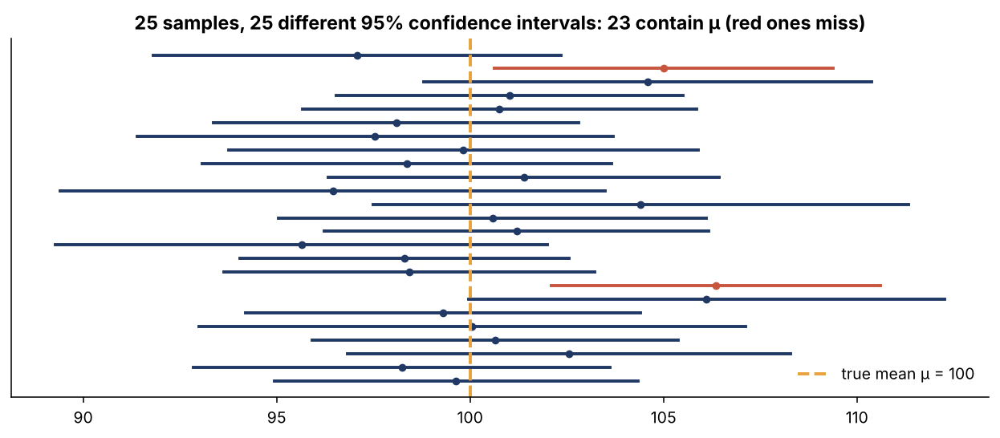
Sample size for a margin E: n = (z*·σ / E)². To estimate average spend within ±₹50 with σ = 600: n = (1.96×600/50)² ≈ 554.
5.2 Hypothesis testing framework
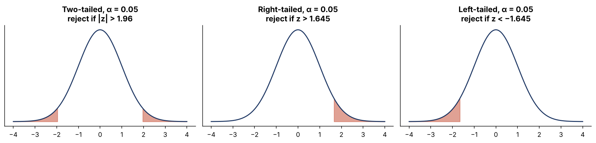
| Question | Test | Excel |
|---|---|---|
| Mean vs a target | One-sample z / t | =T.TEST needs two ranges; use =T.DIST.2T(ABS(t),n-1) on a computed t |
| Two independent groups | Two-sample t | =T.TEST(A,B,2,3) (two-tailed, unequal variance) |
| Before / after, same units | Paired t | =T.TEST(Before,After,2,1) |
| 3+ groups | ANOVA | Data → Data Analysis → Anova: Single Factor |
| Two categorical variables | Chi-square | =CHISQ.TEST(observed,expected) |
| Two numeric variables | Correlation test / regression | Data Analysis → Regression |
5.3 Errors
Type I (false positive, probability α): concluding a new checkout works when it does not. Type II (false negative, β): missing a real improvement. Power = 1 − β; increase it with a bigger sample.
5.4 Simple linear regression
ŷ = b₀ + b₁x. Example: sales (₹ lakh) = 12 + 3.5 × ad spend (₹ lakh) means each extra lakh of ads is associated with ₹3.5 lakh more sales. R² = share of variation in y explained by x. Excel: =SLOPE(), =INTERCEPT(), =RSQ(), =FORECAST.LINEAR(), or add a trendline to a scatter chart with "Display equation".
Full illustrated coverage of tests, p-values and errors: ML Classes 1–2; worked cases: Hypothesis Testing case.
Building Blocks ML · Class 6: Introduction to Mathematics (Part 1/5) – algebra, functions, exponents and logs
6.1 Algebra refresher
- Variables and expressions: revenue = price × quantity → R = p·q.
- Solving linear equations: 3x + 5 = 20 → x = 5. Break-even: fixed cost ₹50,000, margin ₹250/unit → units = 50,000 / 250 = 200.
- Inequalities: 0.18x ≤ 9,000 → x ≤ 50,000.
- Summation notation: Σᵢ₌₁ⁿ xᵢ = x₁ + x₂ + … + xₙ (Excel SUM). Product notation Π.
6.2 Functions and their shapes
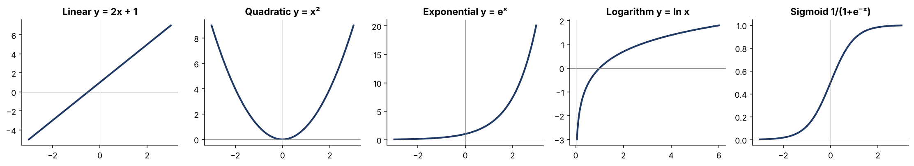
| Linear y = mx + c | m = slope (change in y per unit x), c = intercept. Linear regression. |
| Quadratic y = ax² + bx + c | U-shape; squared error cost functions are quadratic, with one minimum. |
| Exponential y = aᵇˣ / eˣ | Compound growth; viral spread. |
| Logarithm y = log x | Inverse of exponential; compresses big ranges (income, population). |
| Sigmoid σ(z) = 1/(1+e⁻ᶻ) | Squashes any number to 0–1: logistic regression probabilities. |
6.3 Exponents and logarithms
| aᵐ·aⁿ = aᵐ⁺ⁿ, (aᵐ)ⁿ = aᵐⁿ, a⁰ = 1, a⁻ⁿ = 1/aⁿ | Exponent rules |
| log(ab) = log a + log b; log(a/b) = log a − log b; log(aⁿ) = n·log a | Log rules: turn products into sums |
| ln x = logₑ x, e ≈ 2.718 | Natural log used in ML and finance |
Real-world use: CAGR
Revenue grew from ₹2 crore to ₹3.2 crore in 4 years. CAGR = (3.2/2)^(1/4) − 1 = 1.6^0.25 − 1 ≈ 12.5%. Excel =(B2/A2)^(1/4)-1 or =RRI(4,2,3.2).
Why logs in data science: a log transform makes right-skewed data (income, sales) more symmetric; log-odds are the language of logistic regression; log-loss is a classification metric.
Building Blocks ML · Class 7: Introduction to Mathematics (Part 2/5) – vectors and matrices
7.1 Scalars, vectors, matrices, tensors
| Scalar | A single number: 5 |
| Vector | An ordered list: one customer = [age 32, income 4.5, visits 5] |
| Matrix | A 2-D grid: n customers × p features (a DataFrame without labels) |
| Tensor | 3-D and higher: a batch of colour images = images × height × width × 3 |
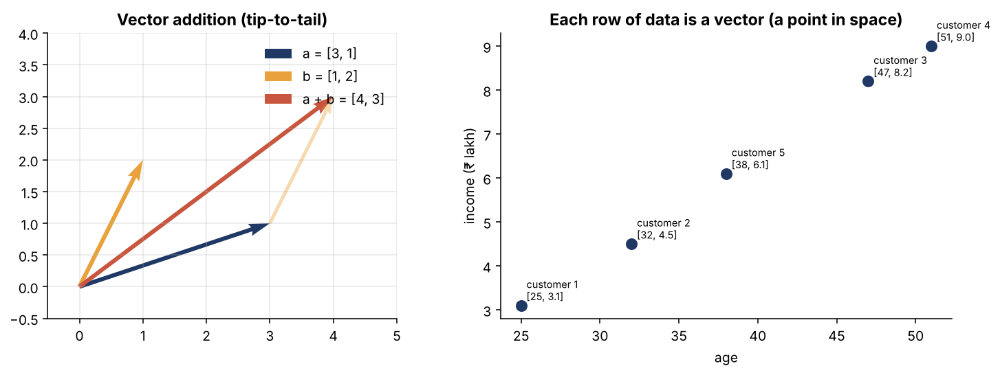
7.2 Vector operations
| Operation | Example with a=[3,1], b=[1,2] | ML meaning |
|---|---|---|
| Addition | a + b = [4, 3] | Combining effects |
| Scalar multiplication | 2a = [6, 2] | Scaling features |
| Dot product | a·b = 3×1 + 1×2 = 5 | A linear model's prediction is a dot product: ŷ = w·x + b |
| Magnitude (norm) | ‖a‖ = √(9+1) ≈ 3.16 | Size of a vector; regularisation penalties |
| Euclidean distance | ‖a − b‖ = √(4+1) ≈ 2.24 | KNN, k-means |
| Cosine similarity | a·b / (‖a‖‖b‖) = 5/(3.16×2.24) ≈ 0.71 | Text and embedding similarity (search, RAG) |
7.3 Matrices
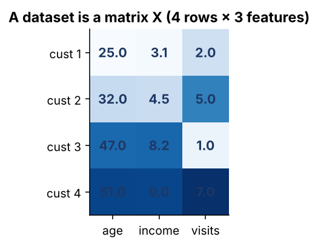
- Shape (rows × columns); element aᵢⱼ is row i, column j.
- Special matrices: square, identity I (1s on the diagonal), diagonal, symmetric (A = Aᵀ), zero.
- Transpose Aᵀ flips rows and columns.
- Addition and scalar multiplication work element by element (same shape required).
import numpy as np
X = np.array([[25, 3.1, 2], [32, 4.5, 5], [47, 8.2, 1], [51, 9.0, 7]])
X.shape # (4, 3)
X.T.shape # (3, 4)
a, b = np.array([3, 1]), np.array([1, 2])
a @ b # 5 dot product
np.linalg.norm(a - b) # 2.236 distanceBuilding Blocks ML · Class 8: Introduction to Mathematics (Part 3/5) – matrix operations
8.1 Matrix multiplication
(m × n) · (n × p) → (m × p). Inner sizes must match. Each output cell = dot product of a row of the first with a column of the second. Order matters: AB ≠ BA in general.
Real-world example: billing
Quantities Q (2 customers × 3 products) = [[2,1,0],[0,3,1]]; prices P (3 × 1) = [[500],[200],[1000]]. Bill = Q·P = [[2×500 + 1×200 + 0], [0 + 3×200 + 1×1000]] = [[1,200],[1,600]]. Excel: =MMULT(Q,P). All predictions of a linear model at once: ŷ = Xw.
8.2 Determinant and inverse
- For A = [[a,b],[c,d]], det(A) = ad − bc. If det = 0 the matrix is singular (no inverse): its columns are redundant (perfect multicollinearity).
- Inverse A⁻¹ satisfies A·A⁻¹ = I. For 2×2: A⁻¹ = (1/det)·[[d,−b],[−c,a]]. Excel
=MINVERSE(),=MDETERM().
8.3 Systems of linear equations
2x + y = 1,100 and x + 3y = 1,800 (two baskets' totals) → A·[x,y] = b → [x,y] = A⁻¹b = [300, 500]: item prices ₹300 and ₹500.
Linear regression's exact solution is the same idea: w = (XᵀX)⁻¹Xᵀy (the "normal equation").
A = np.array([[2, 1], [1, 3]]); b = np.array([1100, 1800])
np.linalg.solve(A, b) # array([300., 500.])
np.linalg.det(A) # 5.0
np.linalg.inv(A)8.4 Eigenvalues and eigenvectors (intuition)
For a square matrix A, an eigenvector v keeps its direction when multiplied: Av = λv; λ is how much it is stretched. In data, the eigenvectors of the covariance matrix point along the directions of greatest spread, which is exactly what PCA uses to compress many correlated features into a few components.
Building Blocks ML · Class 9: Introduction to Mathematics (Part 4/5) – calculus for optimisation
9.1 Limits and the idea of a derivative
A derivative is the instantaneous rate of change: the slope of a curve at a point. f′(x) = lim(h→0) [f(x+h) − f(x)] / h.
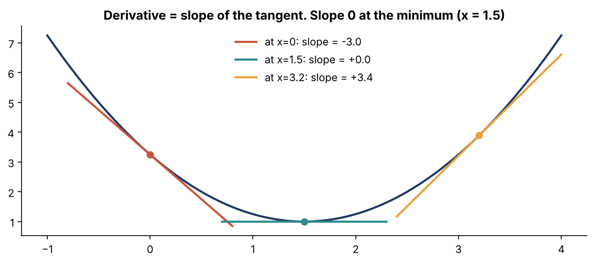
9.2 Differentiation rules
| Rule | Formula | Example |
|---|---|---|
| Constant | d/dx(c) = 0 | d/dx(7) = 0 |
| Power | d/dx(xⁿ) = n·xⁿ⁻¹ | d/dx(x³) = 3x² |
| Constant multiple / sum | (c·f)′ = c·f′; (f + g)′ = f′ + g′ | d/dx(4x² + 3x) = 8x + 3 |
| Product | (fg)′ = f′g + fg′ | Revenue = p·q(p) |
| Chain | d/dx f(g(x)) = f′(g(x))·g′(x) | d/dx (2x+1)² = 2(2x+1)·2 |
| Exponential / log | (eˣ)′ = eˣ; (ln x)′ = 1/x | Used in logistic regression |
| Sigmoid | σ′(z) = σ(z)(1 − σ(z)) | Back-propagation in neural nets |
9.3 Maxima, minima and optimisation
Business example: best price
Demand q = 1,000 − 20p. Revenue R = p·q = 1,000p − 20p². R′ = 1,000 − 40p = 0 → p = ₹25, q = 500, revenue ₹12,500. R″ = −40 < 0 confirms a maximum.
9.4 Partial derivatives and the gradient
With several inputs, a partial derivative ∂f/∂x changes one input while holding the others fixed. The gradient ∇f is the vector of all partials; it points uphill. For the regression cost J(b₀,b₁) = (1/n)Σ(b₀ + b₁x − y)²:
∂J/∂b₀ = (2/n)Σ(ŷ − y) ∂J/∂b₁ = (2/n)Σ(ŷ − y)·x
Gradient descent update: b ← b − α·∇J. See it run on real numbers in ML Class 5.
9.5 Integrals (one idea)
An integral is the area under a curve: probabilities for continuous distributions are areas under the density curve (P(Z ≤ 1.5) = 0.933).
Building Blocks ML · Class 10: Introduction to Mathematics (Part 5/5) – probability and sets for ML
10.1 Sets
Union A ∪ B (either), intersection A ∩ B (both), complement Aᶜ, difference A − B. Venn diagrams. Same ideas as SQL UNION / INTERSECT / EXCEPT and pandas merges.
10.2 Counting: permutations and combinations
| Factorial n! | 5! = 120 ways to order 5 items |
| Permutations nPr = n!/(n−r)! | Order matters: ways to pick 1st, 2nd, 3rd prize from 10 = 720 |
| Combinations nCr = n!/(r!(n−r)!) | Order doesn't matter: ways to choose 3 features out of 10 = 120 (Excel =COMBIN(10,3)) |
10.3 Conditional probability, independence, Bayes
P(A|B) = P(A∩B)/P(B). Independent if P(A|B) = P(A). Bayes: P(A|B) = P(B|A)P(A)/P(B), the basis of Naive Bayes spam filters: P(spam | "free offer") from how often "free offer" appears in spam vs genuine mail.
10.4 Random variables, expectation, variance
- E[X] = Σ x·P(x) (discrete) — expected profit of a campaign.
- Var(X) = E[X²] − (E[X])².
- Joint and marginal distributions; covariance between two random variables.
Real-world example: expected value of a decision
A retention offer costs ₹200. If offered, 30% of at-risk customers stay, each worth ₹2,000 → expected gain = 0.3×2,000 − 200 = ₹400 per customer. Positive, so offer it. Churn models supply the probabilities.
10.5 Likelihood and maximum likelihood (intuition)
Likelihood asks: given these parameters, how probable is the data we actually saw? Logistic regression picks coefficients that make the observed 0/1 outcomes most likely; minimising log-loss is the same thing.
Compiler vs interpreter?
A compiler translates the whole program into machine code before running (fast execution, all errors upfront); an interpreter translates and runs line by line (instant feedback, stops at the first error). Python is interpreted (via bytecode).
What is pseudo-code and why use it?
Plain-language step-by-step logic written before coding. It lets you design and check the algorithm without worrying about syntax.
What is a confidence interval?
A range built from sample data that, by the method used, captures the true population value a stated share of the time (e.g. 95%).
Why is the dot product important in ML?
A linear model's prediction, a neural-network neuron's input, and cosine similarity between embeddings are all dot products.
What does a zero determinant mean for regression?
XᵀX is not invertible because some features are exact linear combinations of others (perfect multicollinearity), so coefficients cannot be uniquely estimated.
Why do we need derivatives in ML?
To find which direction to change parameters to reduce error; gradient descent uses the gradient of the cost function.
Explain Bayes' theorem with an example.
It updates a prior belief with evidence. With 1% fraud and a test that is 95% sensitive with a 5% false-alarm rate, only about 16% of flagged transactions are fraud.
- YouTube: Simplilearn programming basics for beginners · YouTube: CS50 lecture 0 scratch computational thinking
- YouTube: Simplilearn statistics for data science · YouTube: StatQuest confidence intervals clearly explained
- YouTube: 3Blue1Brown essence of linear algebra · YouTube: 3Blue1Brown essence of calculus
- YouTube: Khan Academy linear algebra · YouTube: Khan Academy probability and combinatorics
- YouTube: Simplilearn mathematics for machine learning
- Mathematics for Machine Learning (free book, Deisenroth et al.)
- Python official tutorial
Python for Data Science
Core Python, NumPy, pandas, visualisation, statistics and first ML models
Python for Data Science 2026 (24 classes + 2 tests)
Python turns repeatable analysis into code. This course moves from core syntax to pandas data wrangling, charts, statistical testing and the first two ML models (linear and logistic regression).
| Class | Topics | Jump to |
|---|---|---|
| 1 | Introduction to Python, Jupyter Notebook | Core Python |
| 2 | Type conversion, print, f-strings, format, input | Core Python |
| 3 | if / elif / else, while loops | Core Python |
| 4 | for loops, OOP basics, string methods, indexing and slicing | Core Python |
| 5 | Lists | Data structures |
| 6 | Dictionaries, tuples, sets | Data structures |
| 7 | User-defined functions, lambda, map, filter | Functions & files |
| 8 | File handling, modules | Functions & files |
| 9–10 | NumPy arrays and operations; reading data with pandas | NumPy |
| 11–12 | DataFrames: subsetting, reordering, renaming, dropping, sorting, filtering | pandas |
| 13–14 | Type conversion, univariate analysis, aggregates, missing values | pandas |
| 15 | Joins, groupby, pivot_table | pandas |
| 16–17 | Visualisation; working with dates | Visualisation |
| 18 | Datetime, outliers, connecting to SQL | Dates, outliers, SQL |
| 19 | Subplots, probability distributions, normal distribution, CLT intro | Statistics |
| 20 | Sampling, CLT, introduction to hypothesis testing | Statistics |
| 21 | z-test, t-test, chi-square, ANOVA | Statistics |
| 22 | Introduction to machine learning | Regression |
| 23 | Linear regression | Regression |
| 24 | Logistic regression | Regression |
Case studies for this course (Retail, Credit Card, Insurance, Visualisation, Hypothesis Testing, E-commerce capstone and the two exercise notebooks) are fully solved on the real data under Case Studies.
Jupyter basics
A notebook mixes code cells and markdown cells. Shift+Enter runs a cell; Esc then A/B inserts a cell above/below; Esc M makes markdown. The last expression in a cell is displayed automatically.
Variables, types and conversion (Class 2)
age = 34 # int
price = 99.5 # float
name = "Asha" # str
active = True # bool
type(price) # <class 'float'>
int("42") + 1 # 43 (str -> int)
float("3.5"); str(10) # 3.5, '10'
int(7.9) # 7 (truncates, does not round)
print(f"{name} is {age} and paid ₹{price:,.2f}") # f-string with format spec
print("{} scored {:.1f}%".format(name, 87.456)) # str.format
city = input("City? ") # always returns a stringOperators and precedence
** → * / // % → + - → comparisons → not → and → or. Example from the exercise: 5 + 4 * 9 % (3 + 1) / 6 - 1 = 4.0, because 36 % 4 = 0.
Conditions and loops (Classes 3–4)
score = 72
if score >= 80:
grade = "A"
elif score >= 60:
grade = "B"
else:
grade = "C"
n = 5
while n > 0: # repeat until the condition is False
n -= 1
for i in range(1, 11, 2): # 1,3,5,7,9 (start, stop-exclusive, step)
if i == 7: break # leave the loop
if i == 3: continue # skip to next iteration
print(i)Strings: indexing, slicing, methods (Class 4)
s = "Data Science"
s[0], s[-1] # 'D', 'e'
s[0:4], s[5:], s[::-1] # 'Data', 'Science', 'ecneicS ataD'
s.lower(), s.upper(), s.title()
s.replace("Data", "Big"), s.split(" ") # 'Big Science', ['Data','Science']
" hi ".strip(), s.find("S"), s.count("a"), s.startswith("Da")OOP in one example
class Account:
def __init__(self, owner, balance=0): # constructor
self.owner, self.balance = owner, balance
def deposit(self, amt): # method
self.balance += amt
return self.balance
acc = Account("Asha"); acc.deposit(500) # 500Everything in Python is an object. "abc".upper() is calling the upper method of a string object, which is why pandas code reads as df.groupby(...).sum().
| list | tuple | dict | set | |
|---|---|---|---|---|
| Syntax | [1, 2, 2] | (1, 2) | {"a": 1} | {1, 2} |
| Ordered | Yes | Yes | Yes (insertion) | No |
| Mutable | Yes | No | Yes | Yes |
| Duplicates | Allowed | Allowed | Keys unique | No |
| Use for | Sequences you change | Fixed records, dict keys | Lookups by key | Unique values, membership |
# Lists (Class 5)
nums = [5, 7, 22, 97]
nums.append(54); nums.extend([1, 2]); nums.insert(0, 99)
nums.remove(22); last = nums.pop(); nums.sort(reverse=True)
squares = [x**2 for x in nums if x % 2] # list comprehension with a filter
# Dict, tuple, set (Class 6)
emp = {"name": "Ravi", "dept": "Ops"}
emp["salary"] = 50000; emp.get("age", "n/a")
for k, v in emp.items(): print(k, v)
point = (3, 4); x, y = point # tuple unpacking
a, b = {1, 2, 3}, {2, 3, 4}
a & b, a | b, a - b # intersection, union, differenceUser-defined functions (Class 7)
def describe(*nums, decimals=2): # *args collects positional values
"""Return basic descriptives."""
mean = sum(nums) / len(nums)
return {"count": len(nums), "mean": round(mean, decimals), "max": max(nums)}
def area(shape, **dims): # **kwargs collects named values
if shape == "square": return dims["side"] ** 2
if shape == "circle": return 3.1416 * dims["radius"] ** 2
square = lambda x: x * x # anonymous one-line function
list(map(square, [1, 2, 3])) # [1, 4, 9]
list(filter(lambda x: x % 2, [1, 2, 3, 4])) # [1, 3]Scope: variables created inside a function are local. Return values instead of printing them, so the result can be reused.
Files and modules (Class 8)
with open("notes.txt", "w") as f: # 'w' write, 'a' append, 'r' read
f.write("line 1\n")
with open("notes.txt") as f:
lines = f.readlines()
import math, os
from datetime import date
import numpy as np # alias conventionThe with block closes the file automatically, even if an error happens.
Errors
try:
value = int("abc")
except ValueError as e:
print("Not a number:", e)
finally:
print("always runs")NumPy arrays hold one data type and support vectorised maths: an operation applies to every element without a Python loop, which is 10–100× faster.
import numpy as np
a = np.array([[1, 2, 3], [4, 5, 6]])
a.shape, a.ndim, a.dtype # (2, 3), 2, int64
np.zeros((2, 3)); np.ones(3); np.arange(0, 10, 2); np.linspace(0, 1, 5)
np.random.seed(1); np.random.randint(1, 10, size=5); np.random.normal(0, 1, 100)
a * 10; a + a; a.T # element-wise maths and transpose
a[0, 1]; a[:, 1]; a[a > 3] # indexing, column slice, boolean mask
a.sum(axis=0); a.mean(axis=1) # axis=0 down columns, axis=1 across rows
a.reshape(3, 2); np.where(a > 3, "high", "low")
a @ a.T # matrix multiplicationBroadcasting: NumPy stretches smaller arrays to match shapes, so a - a.mean(axis=0) subtracts each column's mean from that column.
Reading and inspecting (Classes 10–11)
import pandas as pd
df = pd.read_csv("Transactions.csv") # also read_excel, read_sql, read_json
df.head(); df.tail(); df.shape; df.info(); df.describe()
df.dtypes; df.columns; df["Store_type"].value_counts(); df.nunique()Selecting, filtering, sorting (Classes 11–12)
df["Qty"] # Series
df[["cust_id", "total_amt"]] # DataFrame
df.loc[df["total_amt"] > 0, ["cust_id", "Qty"]] # label-based + boolean mask
df.iloc[0:5, 0:3] # position-based
df.query("Store_type == 'e-Shop' and Qty > 2")
df[df["city"].isin(["Pune", "Delhi"])]
df.rename(columns={"Qty": "quantity"}); df.drop(columns=["Tax"])
df.sort_values(["Store_type", "total_amt"], ascending=[True, False])
df = df[["cust_id", "tran_date", "total_amt"]] # reorder columnsCleaning (Classes 13–14)
df["amt"] = df["amt"].str.replace("$", "", regex=False).astype(float)
df["date"] = pd.to_datetime(df["date"], dayfirst=True)
df.isna().sum()
df["age"] = df["age"].fillna(df["age"].mean()) # continuous -> mean/median
df["city"] = df["city"].fillna(df["city"].mode()[0]) # categorical -> mode
df.dropna(subset=["cust_id"]); df.drop_duplicates("cust_id", keep="last")Aggregating, joining, reshaping (Class 15)
df.groupby("Store_type")["total_amt"].agg(["sum", "mean", "count"])
df.groupby(["city", "gender"], as_index=False).agg(spend=("total_amt", "sum"), orders=("tran_id", "nunique"))
pd.merge(tran, cust, how="left", left_on="cust_id", right_on="customer_Id") # inner/left/right/outer
pd.concat([df_2015, df_2016], ignore_index=True) # stack rows
df.pivot_table(index="city", columns="Store_type", values="total_amt", aggfunc="sum", fill_value=0)
wide.melt(id_vars="id", var_name="year", value_name="sales") # wide -> long
s.unstack(); df.stack()After every merge, check row counts. If rows increase unexpectedly, the right-hand key was not unique (a many-to-many join).
apply and lambda
df["band"] = df["age"].apply(lambda a: "Youth" if a < 30 else "Adult")
df["band"] = pd.cut(df["age"], [0, 18, 30, 60, 120], labels=["Child", "Youth", "Adult", "Senior"])
df["flag"] = np.where((df["type"] == "Injury") & (df["police"] == "No"), 1, 0)Which chart for which question
| Question | Chart | Code |
|---|---|---|
| Distribution of one number | Histogram, box plot | df["amt"].plot.hist(bins=30) |
| Compare categories | Bar (horizontal if labels are long) | s.plot.barh() |
| Trend over time | Line | ts.plot(marker="o") |
| Relationship of two numbers | Scatter | df.plot.scatter("x", "y") |
| Part of a whole (few parts) | Pie / donut, or 100% stacked bar | s.plot.pie(autopct="%1.1f%%") |
| Two categories × value | Grouped bar, heatmap | sns.heatmap(pivot, annot=True) |
import matplotlib.pyplot as plt, seaborn as sns
fig, ax = plt.subplots(1, 2, figsize=(12, 4)) # subplots grid (Class 19)
ax[0].plot(months, revenue, "r:o", label="Revenue") # colour red, dotted, circle markers
ax[0].set(title="Revenue", xlabel="Month", ylabel="₹"); ax[0].legend(loc="lower right")
sns.boxplot(data=df, x="segment", y="claim_amount", ax=ax[1])
plt.tight_layout(); plt.savefig("chart.png", dpi=150)Dates (Classes 17–18)
df["dt"] = pd.to_datetime(df["dt"], format="%d-%m-%Y") # explicit format is safer
df["dt"].dt.year, df["dt"].dt.month, df["dt"].dt.day_name(), df["dt"].dt.quarter
df["dt"].dt.to_period("M") # month bucket for grouping
(df["resolved"] - df["received"]).dt.days # durations
df.set_index("dt").resample("W")["sales"].sum() # weekly totals
pd.Timestamp("2018-10-01") - pd.Timedelta(days=20)
pd.to_datetime("07Sep59", format="%d%b%y") # 2059! subtract 100 years if neededOutliers
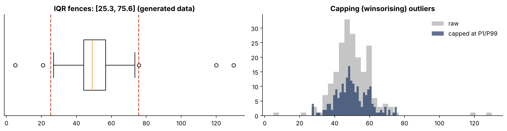
q1, q3 = df["amt"].quantile([.25, .75]); iqr = q3 - q1
mask = df["amt"].between(q1 - 1.5 * iqr, q3 + 1.5 * iqr)
df["amt_capped"] = df["amt"].clip(df["amt"].quantile(.01), df["amt"].quantile(.99))
z = (df["amt"] - df["amt"].mean()) / df["amt"].std(); df[z.abs() > 3] # z-score ruleConnecting to SQL
import sqlalchemy as sa
engine = sa.create_engine("mssql+pyodbc://@SERVER/RetailDB?driver=ODBC+Driver+17+for+SQL+Server&trusted_connection=yes")
df = pd.read_sql("SELECT * FROM Transactions WHERE Qty > 0", engine)
df.to_sql("clean_transactions", engine, if_exists="replace", index=False)Distributions and the CLT (Classes 19–20)
from scipy import stats
stats.norm.cdf(1.96) # 0.975 area to the left
stats.norm.ppf(0.95) # 1.645 z for 95% one-tailed
stats.binom.pmf(3, n=10, p=.2) # P(exactly 3 successes)
stats.poisson.pmf(2, mu=4) # P(2 events when 4 expected)
sample = df["amt"].sample(100, random_state=1) # simple random sampling
df.groupby("city", group_keys=False).apply(lambda g: g.sample(frac=.1)) # stratifiedChoosing a test (Class 21)
| Question | Data | Test | scipy |
|---|---|---|---|
| Is the mean equal to a target? | 1 numeric sample | One-sample t (z if σ known, n large) | ttest_1samp(x, 10000) |
| Do two groups differ? | Numeric × 2 independent groups | Two-sample t (Welch) | ttest_ind(a, b, equal_var=False) |
| Before vs after on the same units? | Paired numeric | Paired t | ttest_rel(before, after) |
| Do 3+ groups differ? | Numeric × 3+ groups | One-way ANOVA | f_oneway(g1, g2, g3) |
| Are two categories related? | Category × category counts | Chi-square independence | chi2_contingency(pd.crosstab(a, b)) |
| Are two numbers related? | Numeric × numeric | Pearson (or Spearman for ranks) | pearsonr(x, y) |
Hypothesis testing is covered in depth, with pictures, in ML Classes 1–2.
Machine learning in one line (Class 22)
Learn a function f from past examples (X → y) so it predicts y for new X. Regression predicts a number; classification predicts a class.
Linear regression (Class 23)
ŷ = β₀ + β₁x₁ + … + βₚxₚ. The βs are chosen to minimise the sum of squared errors (OLS).
import statsmodels.formula.api as smf
m = smf.ols("sales ~ tv + radio + C(region)", data=df).fit()
print(m.summary()) # coefficients, p-values, R², adjusted R²
from sklearn.linear_model import LinearRegression
from sklearn.model_selection import train_test_split
from sklearn.metrics import r2_score, mean_absolute_error, mean_squared_error
X_tr, X_te, y_tr, y_te = train_test_split(X, y, test_size=.3, random_state=42)
lr = LinearRegression().fit(X_tr, y_tr); pred = lr.predict(X_te)
r2_score(y_te, pred), mean_absolute_error(y_te, pred), mean_squared_error(y_te, pred) ** .5| Assumption | Check | If violated |
|---|---|---|
| Linearity | Residuals vs fitted plot shows no pattern | Transform x (log, square) or use a non-linear model |
| Independence of errors | Durbin–Watson ≈ 2 | Add lag features (time series) |
| Constant variance (homoscedasticity) | No funnel in residual plot | Log-transform y |
| Normal errors | Q-Q plot of residuals | Transform y; large n is forgiving |
| No multicollinearity | VIF < 5 (or 10) | Drop or combine correlated features |
Logistic regression (Class 24)
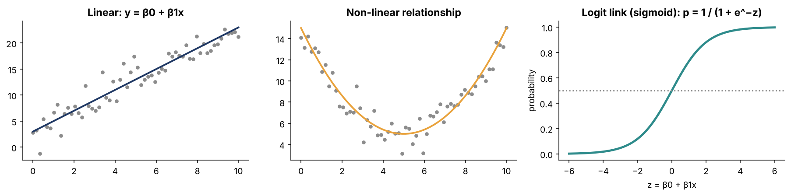
from sklearn.linear_model import LogisticRegression
from sklearn.metrics import classification_report, roc_auc_score
clf = LogisticRegression(max_iter=1000).fit(X_tr, y_tr)
prob = clf.predict_proba(X_te)[:, 1]; pred = (prob >= 0.5).astype(int)
print(classification_report(y_te, pred)); roc_auc_score(y_te, prob)
np.exp(clf.coef_) # odds ratios: how much the odds multiply per unit increaseMetrics (confusion matrix, precision, recall, ROC/AUC) are explained with pictures in ML Class 7.
List vs tuple?
Lists are mutable and used for collections that change; tuples are immutable, slightly faster, and can be dictionary keys.
loc vs iloc?
loc selects by label (and accepts boolean masks); iloc selects by integer position. loc slices include the end label; iloc slices exclude the end position.
How do you handle missing values?
First find why they are missing. Then drop rows (if few and random), impute (mean/median for numbers, mode for categories, or model-based), or add a "was missing" flag. Never impute the target.
merge vs concat vs join?
merge joins on key columns (like SQL JOIN); concat stacks frames along rows or columns; join is a shortcut that merges on the index.
What is a p-value?
The probability of seeing data at least this extreme if the null hypothesis were true. Small p (below α, often 0.05) means the data is unlikely under H0, so we reject H0. It is not the probability that H0 is true.
R² vs adjusted R²?
R² is the share of variance explained and never falls when you add features. Adjusted R² penalises extra features, so it only rises if a new feature genuinely helps.
Why is logistic regression called regression if it classifies?
It regresses the log-odds of the outcome on the features linearly; classification only happens when you apply a cut-off to the predicted probability.
- YouTube: Corey Schafer Python tutorial for beginners, clear core Python.
- YouTube: Corey Schafer pandas tutorial and YouTube: Keith Galli complete pandas tutorial, hands-on pandas.
- YouTube: codebasics numpy tutorial and YouTube: codebasics matplotlib tutorial.
- YouTube: StatQuest linear regression clearly explained and YouTube: StatQuest logistic regression.
- pandas user guide · 10 minutes to pandas
- SciPy stats reference · scikit-learn user guide
Data Visualization & Analytics
Advanced Excel, SQL Server and AI-assisted analytics (Power BI has its own section)
Data Visualization & Analytics 2026 (BT DVA APR 2026, 24 classes + tests)
DVA is the analyst toolkit: Excel for quick analysis and dashboards, SQL for querying databases, Power BI for interactive reporting, and newer AI tools that write formulas and queries for you. Power BI (Classes 18–21) is covered in its own Power BI section.
| Class | Topics |
|---|---|
| 1 | Orientation |
| 2 | Excel basics, data validation, formatting, custom and conditional formatting |
| 3 | Aggregate functions (SUM, COUNT, COUNTA, COUNTBLANK, AVERAGE, MIN, MAX, SMALL, LARGE) and text functions (LEFT, RIGHT, MID, CONCAT, TEXTJOIN, LOWER, UPPER, PROPER, LEN, TRIM, FIND…) |
| 4 | IF, IFS, nested IF; array functions; sort and filter; remove duplicates; UNIQUE; SUMPRODUCT |
| 5 | Reverse lookup, INDEX/MATCH, CHOOSE, VLOOKUP + CHOOSE; pivot tables (cache, areas, filters, grand totals) |
| 6 | Pivot refresh, grouping, bins, subtotals, MoM/YoY, calculated fields; Video Game Sales case |
| 8 | Named ranges (static/dynamic); thermometer, Pareto, population pyramid and waterfall charts; Superstore case |
| 9 | Dashboards, protection, Power Pivot, Power Query, Data Analysis ToolPak, Evaluate Formula |
| 10 | SQL basics, ER diagrams, relationships, keys; DDL/DML/DQL/DCL/TCL |
| 11 | Data types, variables, operators, comments; CREATE, ALTER, DROP, TRUNCATE; DML |
| 12 | Constraints; DELETE vs DROP vs TRUNCATE; aliases; WHERE, ORDER BY, IN, LIKE, IS NULL |
| 13 | GROUP BY / HAVING; aggregate, text, date and number functions; DATEPART; CASE WHEN; joins |
| 14 | Joins case; UNION, UNION ALL, INTERSECT, EXCEPT; subqueries |
| 15 | OFFSET/FETCH; window functions: OVER, PARTITION BY, RANK, DENSE_RANK, ROW_NUMBER, aggregate windows |
| 16 | LEAD/LAG, EXISTS, correlated subqueries |
| 17 | CTEs, views, stored procedures |
| 18 | ROLLUP, CUBE, COALESCE; start of Power BI |
| 19–21 | Power BI (see Power BI) |
| 22 | Unpivot; GenAI introduction, prompt engineering; AI vs GenAI vs agentic AI; AI in SQL; Docker; Metabase; MinusX |
| 23 | Metabase and MinusX |
| 24 | Gemini in Excel, Copilot for Excel, Frontier Office Agent |
Assessments: DVA MCQ/SQL test, DVA case study test, integrated DVA case study, DVA viva, integrated MCQ.
Logic (Class 4)
=IF(C2>=80,"A",IF(C2>=60,"B","C")) nested IF
=IFS(C2>=80,"A", C2>=60,"B", TRUE,"C") IFS: first TRUE wins; TRUE acts as "else"
=IF(AND(B2="Male",C2>30),"Yes","No") AND / OR inside IF
=IFERROR(VLOOKUP(A2,Tbl,2,0),"Not found") trap errorsLookups (Class 5)
| Need | Formula |
|---|---|
| Classic lookup (result to the right) | =VLOOKUP(A2, Products!$A:$D, 3, FALSE) |
| Horizontal table | =HLOOKUP(J2, LOCATION!$B$2:$M$3, 2, FALSE) |
| Any direction (reverse lookup) | =INDEX(Sheet!$A:$A, MATCH(R2, Sheet!$B:$B, 0)) |
| Two-way lookup | =INDEX($B$2:$M$20, MATCH(name,$A$2:$A$20,0), MATCH(month,$B$1:$M$1,0)) |
| VLOOKUP leftwards with CHOOSE | =VLOOKUP(R2, CHOOSE({1,2}, Sheet!$B:$B, Sheet!$A:$A), 2, 0) |
| Modern (365) | =XLOOKUP(A2, Ids, Names, "Not found") |
Arrays, dynamic arrays, SUMPRODUCT
=UNIQUE(B2:B500) distinct list (spills)
=SORT(FILTER(A2:D500, C2:C500="East"), 4, -1)
=SUMPRODUCT((B2:B500="East")*(D2:D500)) conditional sum without SUMIFS
=SUMIFS(D:D, B:B, "East", C:C, ">=2024-01-01")
=COUNTIFS(K:K, $G5, I:I, H$4) cross-tab counts
=TEXTJOIN(", ", TRUE, UNIQUE(B2:B50))Text cleaning (Class 3)
=PROPER(TRIM(A2)) tidy names
=LEFT(A2, FIND(" ", A2) - 1) text before first space
=MID(A2, FIND("@", A2) + 1, 100) domain from email
=SUBSTITUTE(A2, "$", "") * 1 strip a symbol and convert to number
=TEXT(A2, "000") =TEXT(B2, "dd mmm' yyyy")Pivot tables (Classes 5–6)
- The pivot reads from a pivot cache, so changes to source data need Refresh (Alt+F5). Format the source as a Table so new rows are included.
- Four areas: Filters, Columns, Rows, Values. Drag a field twice into Values to show count and %.
- Group dates into Years/Quarters/Months; group numbers into bins (0–100, 100–200…).
- Show Values As: % of Grand Total, % of Row, Difference From (previous) for MoM/YoY, Running Total.
- Calculated field: Profit % = Profit / Sales (operates on sums).
- Design tab: Report Layout → Tabular, Repeat item labels, Subtotals off, Grand Totals off.
- Slicers and timelines filter several pivots at once (Report Connections).
Special charts (Class 8)
| Chart | Purpose | How |
|---|---|---|
| Pareto | Find the vital few (80/20) | Sort desc, cumulative % on a secondary-axis line; or Insert → Histogram → Pareto |
| Waterfall | Bridge from start to end value | Insert → Waterfall; set totals as "Set as total" |
| Thermometer | Progress to target | Clustered column of target and actual, 100% overlap, actual on top |
| Population pyramid | Two groups by age band | Make one series negative, bar chart, overlap 100%, number format 0;0 |
Named ranges
Static: Formulas → Define Name → SalesData = Sheet1!$A$1:$D$500
Dynamic: =OFFSET(Sheet1!$A$1,0,0,COUNTA(Sheet1!$A:$A),4) (grows with data)
Better: convert to a Table and use structured references: =SUM(Sales[Amount])Dashboards and the power tools (Class 9)
- Dashboard: one sheet, KPIs at the top, 3–5 charts, slicers on the side, gridlines off, consistent colours.
- Protection: Review → Protect Sheet (lock formulas), Protect Workbook (structure).
- Power Query: repeatable cleaning: import → remove columns → change types → unpivot → merge → Close & Load. Click Refresh next month and every step reruns.
- Power Pivot: data model with relationships across tables and DAX measures (same engine as Power BI).
- Analysis ToolPak: descriptive statistics, histogram, regression, t-test in a dialog.
- Evaluate Formula (Formulas tab) steps through a formula to debug it.
Data types and DDL (Classes 10–12)
CREATE TABLE Orders (
order_id INT IDENTITY(1,1) PRIMARY KEY,
customer_id INT NOT NULL FOREIGN KEY REFERENCES Customer(customer_id),
order_date DATE NOT NULL,
amount DECIMAL(10,2) CHECK (amount >= 0),
channel VARCHAR(20) DEFAULT 'Web'
);
ALTER TABLE Orders ADD discount DECIMAL(5,2);
ALTER TABLE Orders ALTER COLUMN channel VARCHAR(30);
DECLARE @cutoff DATE = '2024-01-01'; -- variable
SELECT * FROM Orders WHERE order_date >= @cutoff; -- single-line comment
/* multi-line
comment */| DELETE | TRUNCATE | DROP | |
|---|---|---|---|
| Removes | Chosen rows (WHERE) | All rows | Table + data |
| Type | DML | DDL | DDL |
| Identity reset | No | Yes | n/a |
| Triggers fire | Yes | No | No |
| Speed | Slower (row-logged) | Fast | Fast |
Aggregation and CASE (Class 13)
SELECT c.city,
COUNT(DISTINCT o.order_id) AS orders,
SUM(o.amount) AS revenue,
AVG(o.amount) AS aov,
SUM(CASE WHEN o.amount > 1000 THEN 1 ELSE 0 END) AS big_orders
FROM Orders o
JOIN Customer c ON o.customer_id = c.customer_id
WHERE YEAR(o.order_date) = 2024 -- filters rows (before grouping)
GROUP BY c.city
HAVING SUM(o.amount) > 50000 -- filters groups (after grouping)
ORDER BY revenue DESC;Useful functions
| Date | GETDATE(), DATEPART(QUARTER, d), DATENAME(WEEKDAY, d), DATEADD(DAY, -30, d), DATEDIFF(MONTH, a, b), EOMONTH(d), FORMAT(d,'yyyy-MM') |
| Text | LEN, LEFT, RIGHT, SUBSTRING, CHARINDEX, REPLACE, UPPER, LOWER, TRIM, CONCAT, STRING_AGG |
| Number | ROUND, CEILING, FLOOR, ABS, POWER, SQRT |
| Conversion | CAST(x AS DATE), CONVERT(DATE, '28-02-2014', 105), TRY_CONVERT, ISNULL(x,0), COALESCE(a,b,c) |
Joins and set operators (Classes 13–14)
Also: CROSS JOIN (every combination) and SELF JOIN (a table joined to itself, such as employee → manager).
SELECT name FROM Customers_2023
UNION SELECT name FROM Customers_2024; -- distinct rows from both
-- UNION ALL keeps duplicates (faster); INTERSECT = in both; EXCEPT = in first only
-- Subqueries
SELECT * FROM Orders WHERE amount > (SELECT AVG(amount) FROM Orders); -- scalar
SELECT * FROM Customer WHERE customer_id IN (SELECT customer_id FROM Orders); -- list
SELECT city, AVG(rev) FROM (SELECT customer_id, city, SUM(amount) rev FROM ... GROUP BY ...) t GROUP BY city; -- derived tableWindow functions (Class 15)
A window function computes across related rows without collapsing them, unlike GROUP BY.
SELECT customer_id, order_date, amount,
ROW_NUMBER() OVER (PARTITION BY customer_id ORDER BY order_date) AS order_seq,
RANK() OVER (ORDER BY amount DESC) AS rnk, -- 1,2,2,4
DENSE_RANK() OVER (ORDER BY amount DESC) AS dense_rnk, -- 1,2,2,3
SUM(amount) OVER (PARTITION BY customer_id) AS cust_total,
SUM(amount) OVER (PARTITION BY customer_id ORDER BY order_date
ROWS BETWEEN UNBOUNDED PRECEDING AND CURRENT ROW) AS running_total,
AVG(amount) OVER (ORDER BY order_date ROWS BETWEEN 2 PRECEDING AND CURRENT ROW) AS ma_3,
LAG(amount) OVER (PARTITION BY customer_id ORDER BY order_date) AS prev_amount, -- Class 16
LEAD(order_date) OVER (PARTITION BY customer_id ORDER BY order_date) AS next_order
FROM Orders;
-- Top N per group
SELECT * FROM (
SELECT *, DENSE_RANK() OVER (PARTITION BY city ORDER BY revenue DESC) rk FROM CityCustomer
) t WHERE rk <= 3;
-- Paging
SELECT * FROM Orders ORDER BY order_date OFFSET 20 ROWS FETCH NEXT 10 ROWS ONLY;EXISTS and correlated subqueries (Class 16)
-- customers who ordered at least once (stops at first match: efficient)
SELECT c.* FROM Customer c WHERE EXISTS (SELECT 1 FROM Orders o WHERE o.customer_id = c.customer_id);
-- correlated: inner query runs per outer row
SELECT o.* FROM Orders o
WHERE o.amount > (SELECT AVG(o2.amount) FROM Orders o2 WHERE o2.customer_id = o.customer_id);CTEs, views, stored procedures (Class 17)
WITH monthly AS (
SELECT FORMAT(order_date,'yyyy-MM') ym, SUM(amount) rev FROM Orders GROUP BY FORMAT(order_date,'yyyy-MM')
)
SELECT ym, rev, rev - LAG(rev) OVER (ORDER BY ym) AS mom_change,
100.0 * (rev - LAG(rev) OVER (ORDER BY ym)) / LAG(rev) OVER (ORDER BY ym) AS mom_pct
FROM monthly;
CREATE VIEW vw_city_revenue AS
SELECT c.city, SUM(o.amount) revenue FROM Orders o JOIN Customer c ON o.customer_id = c.customer_id GROUP BY c.city;
CREATE PROCEDURE usp_top_customers @n INT, @year INT AS
BEGIN
SELECT TOP (@n) customer_id, SUM(amount) spend
FROM Orders WHERE YEAR(order_date) = @year
GROUP BY customer_id ORDER BY spend DESC;
END;
EXEC usp_top_customers @n = 10, @year = 2024;ROLLUP, CUBE, COALESCE (Class 18)
SELECT COALESCE(region,'All regions') region, COALESCE(category,'All categories') category, SUM(sales) sales
FROM Sales GROUP BY ROLLUP (region, category); -- subtotals per region + grand total
-- CUBE(region, category) adds subtotals for every combination (also per category)Unpivot (Class 22)
SELECT product, month, units
FROM MonthlySales UNPIVOT (units FOR month IN ([Jan],[Feb],[Mar])) u;AI vs GenAI vs agentic AI (Class 22)
| What it does | Example in analytics | |
|---|---|---|
| AI / ML | Learns patterns to predict or classify | Churn model, demand forecast |
| Generative AI | Creates new text, code, images from a prompt | Writes a SQL query or DAX measure from a sentence |
| Agentic AI | Plans multi-step tasks and uses tools to act | Pulls data, builds the chart, writes the summary, emails it |
Prompting for analysis
Role + context + task + format + constraints. Example:
You are a SQL Server analyst. Tables: Orders(order_id, customer_id, order_date, amount),
Customer(customer_id, city). Write ONE T-SQL query returning the top 3 cities by 2024 revenue
with each city's share of total revenue (%), rounded to 1 decimal. Explain each clause in one line.Always check AI-written queries against a small manual calculation. Watch for wrong join keys and for filters placed in HAVING instead of WHERE.
Tools covered (Classes 22–24)
- Docker: runs an app in an isolated container; used to start Metabase locally with one command (
docker run -d -p 3000:3000 metabase/metabase). - Metabase: open-source BI. Connect a database, ask questions with a point-and-click builder or SQL, and pin results to dashboards.
- MinusX: an AI assistant that works inside tools such as Metabase and Jupyter to write and run queries from plain-English requests.
- Gemini in Sheets/Excel and Copilot for Excel: generate formulas, explain them, create pivots and charts, and summarise data from a prompt.
- Office agents: multi-step assistants that work across files (for example, build a workbook, then draft a report from it).
WHERE vs HAVING?
WHERE filters rows before grouping and cannot use aggregates. HAVING filters groups after GROUP BY and can use aggregates such as SUM().
RANK vs DENSE_RANK vs ROW_NUMBER?
For values 100, 90, 90, 80: ROW_NUMBER gives 1,2,3,4; RANK gives 1,2,2,4; DENSE_RANK gives 1,2,2,3.
Find the second highest salary.
SELECT MAX(salary) FROM Emp WHERE salary < (SELECT MAX(salary) FROM Emp);
-- or: SELECT salary FROM (SELECT salary, DENSE_RANK() OVER (ORDER BY salary DESC) r FROM Emp) t WHERE r = 2;CTE vs temp table vs view?
A CTE exists only for one statement and improves readability. A temp table (#t) stores data for the session and can be indexed. A view is a saved query stored in the database.
Why use INDEX/MATCH over VLOOKUP?
It can look left, does not break when columns are inserted, and only reads the two columns it needs.
How do you remove duplicates in SQL while keeping one row?
WITH d AS (SELECT *, ROW_NUMBER() OVER (PARTITION BY email ORDER BY created DESC) rn FROM Users)
DELETE FROM d WHERE rn > 1;What does a pivot cache mean for you?
Pivots read a snapshot of the source, so new or changed data appears only after Refresh. Pivots on the same source share a cache.
- YouTube: Leila Gharani XLOOKUP INDEX MATCH and YouTube: Leila Gharani Excel dashboard.
- YouTube: Chandoo pivot tables tutorial and YouTube: Chandoo Power Query tutorial.
- YouTube: Alex The Analyst SQL tutorial, beginner to advanced SQL.
- YouTube: techTFQ SQL window functions and YouTube: techTFQ SQL interview questions, great for practice.
- Microsoft Learn: SELECT (T-SQL) · Window functions (OVER clause)
- Metabase documentation
- Practice: LeetCode SQL 50 · HackerRank SQL
ML, Text Mining & Intro to AI
Illustrated notes for Classes 1–7 (completed), plus a preview of what comes next
Machine Learning using Python (Online) Oct 2026 · trainer Sandeep Ravula · 26 classes · completed through Class 7
This course has two modules: Machine Learning with Python and Intro to AI and Neural Networks. Classes 1–7 are complete. These notes follow the class topics in order and add worked pictures and code so you can revise without rewatching 3-hour recordings.
| Class | Date | Topics | Notes |
|---|---|---|---|
| 1 | Sat 4 Oct | Hypothesis testing, CLT, parametric vs non-parametric tests, case study introduction | open |
| 2 | Fri 10 Oct | Tests from the case study; p-value, alpha, critical value; one- and two-tailed tests | open |
| 3 | Sat 11 Oct | Concluding hypothesis testing; introduction to ML; types of business problems; business → statistical problem; types of ML systems | open |
| 4 | Fri 17 Oct | Analytics / ML project life cycle; linear vs non-linear models; linear equation; link functions | open |
| 5 | Sat 18 Oct | Gradient descent for linear regression in Python | open |
| 6 | Fri 24 Oct | Pre-processing (missing values, outliers, categorical encoding); overfitting/underfitting; segmentation intro (heuristic, RFM) | open |
| 7 | Sat 25 Oct | KNN classifier and regressor; GridSearchCV; Bankloans case study; classification metrics | open |
| 8 | Fri 31 Oct, 2 PM | Next class | preview |
A 7-day revision plan: Day 1 hypothesis-test picker table · Day 2 redo the Insurance case hypothesis questions · Day 3 ML problem types · Day 4 run the gradient-descent code and change α · Day 5 pre-processing pipeline · Day 6 KNN + GridSearchCV · Day 7 explain every metric from one confusion matrix.
Why we test hypotheses
We almost never see the whole population. We see a sample and must decide whether a pattern in it is real or just sampling noise. Hypothesis testing is a formal way to make that call while controlling how often we are fooled.
The Central Limit Theorem (CLT)
- For a large enough sample (rule of thumb n ≥ 30), the sampling distribution of the mean is approximately normal, whatever the population's shape.
- Its centre is the population mean μ; its spread, the standard error, is σ/√n.
- This is why z- and t-tests work on non-normal business data such as order values.
The 6-step recipe
p-value, α and critical value
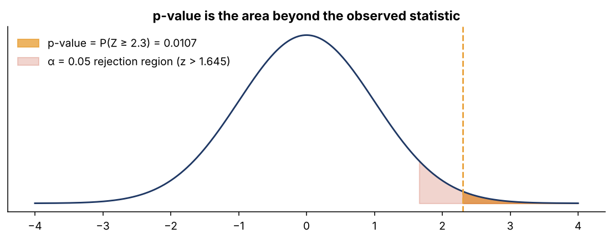
| α (significance level) | Chosen before the test. The probability of rejecting H0 when it is actually true. |
| p-value | Computed from the data. The probability, assuming H0 is true, of getting a result at least as extreme as the one observed. |
| Critical value | The cut-off on the statistic's scale that matches α: 1.96 (two-tailed, 5%), 1.645 (one-tailed, 5%), 2.576 (two-tailed, 1%). |
| Decision rule | p ≤ α ⟺ |statistic| ≥ critical value → reject H0. Both rules always agree. |
One-tailed vs two-tailed
- Two-tailed (H1: μ ≠ μ0): you care about a difference in either direction. "Is the average claim different from $10,000?"
- Right-tailed (H1: μ > μ0): "Has the average claim risen above $10,000?" (Insurance case Q18).
- Left-tailed (H1: μ < μ0): "Did the new process reduce delivery time?"
- scipy returns two-tailed p-values; for a one-tailed test halve it, but only when the statistic points in the H1 direction.
Errors and power
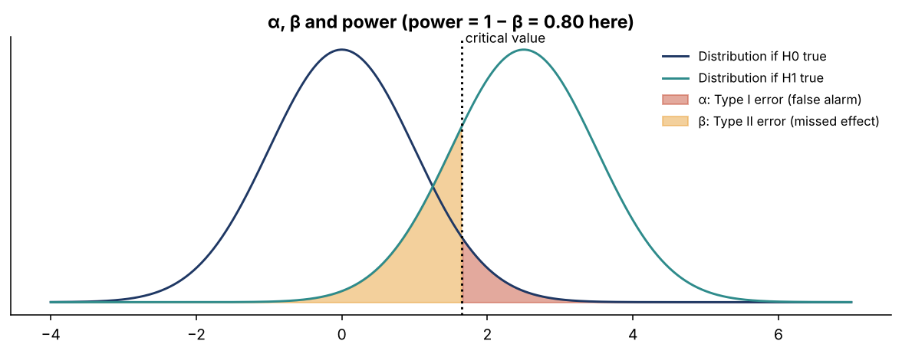
| H0 actually true | H0 actually false | |
|---|---|---|
| Reject H0 | Type I error (α), false positive | Correct (power = 1 − β) |
| Do not reject H0 | Correct | Type II error (β), false negative |
Parametric vs non-parametric tests
| Situation | Parametric (assumes normality / equal variance) | Non-parametric alternative (ranks, fewer assumptions) |
|---|---|---|
| 1 sample vs a value | One-sample t / z | Wilcoxon signed-rank |
| 2 independent groups | Two-sample t (Welch if variances differ) | Mann–Whitney U |
| 2 paired measurements | Paired t | Wilcoxon signed-rank |
| 3+ groups | One-way ANOVA | Kruskal–Wallis |
| Association of 2 numbers | Pearson r | Spearman ρ |
| Association of 2 categories | Chi-square test of independence (works on counts; needs expected count ≥ 5 in most cells) | |
Assumption checks: stats.shapiro(x) (normality, p > 0.05 means no evidence against normal) and stats.levene(a, b) (equal variances).
Choosing the right test: decision guide
How many groups?
2 independent → two-sample t
2 paired → paired t
3+ → ANOVA
Compared with?
expected proportions → chi-square goodness of fit
one proportion → z-test for proportion
Relationship?
monotonic / ranks / outliers → Spearman
Python template
from scipy import stats
# 1-sample, right-tailed: has the mean claim risen above 10,000?
t, p_two = stats.ttest_1samp(claims_2018, 10000)
p = p_two / 2 if t > 0 else 1 - p_two / 2
# 2 independent groups
stats.ttest_ind(male, female, equal_var=False)
# paired: same 12 orders priced by two experts
stats.ttest_rel(barry, mary)
# 3+ groups
stats.f_oneway(*[g["days"] for _, g in df.groupby("priority")])
# categories
chi2, p, dof, expected = stats.chi2_contingency(pd.crosstab(df["age_group"], df["segment"]))
# non-parametric
stats.mannwhitneyu(a, b); stats.kruskal(g1, g2, g3); stats.spearmanr(x, y)Worked examples from your case studies
| Question | Test | Result on the real data |
|---|---|---|
| Do Mary and Barry quote differently for the same 12 orders? | Paired t | t = 2.52, p = 0.028 → reject H0: Barry quotes higher on average (124.3 vs 114.8) |
| Did re-engineering change the critical-incident rate? | Two-sample t (Welch) | CI fell from 53.9% to 23.4%, p = 0.046 → significant at 5% |
| Is the 2018 mean claim above $10,000? | One-sample t, right-tailed | mean 12,743, t = 4.48, p < 0.001 → significant rise |
| Do high-priority jobs finish faster? | One-way ANOVA | F = 1.81, p = 0.164 → no evidence the priority system works |
Full code and outputs: Hypothesis Testing case and Insurance case Q16–20.
Common mistakes
- Saying "accept H0". We only fail to reject it; absence of evidence is not proof of no effect.
- Using an independent t-test on paired data.
- Running many tests and reporting only the significant one (multiple-testing problem). Correct with Bonferroni (α / number of tests).
- Confusing statistical significance with business importance. With huge samples, tiny differences become "significant"; report the effect size too.
What machine learning is
Traditional programming: rules + data → answers. Machine learning: data + answers → rules (a model), which then gives answers for new data.
Types of business problems
| Business question | Problem type | Output | Typical models |
|---|---|---|---|
| How much will this customer spend next month? | Regression | Number | Linear regression, KNN regressor, trees, boosting |
| Will this applicant default? | Classification | Class / probability | Logistic regression, KNN, trees, random forest |
| Which customers are similar? | Segmentation / clustering | Group labels | Heuristic rules, RFM, k-means, hierarchical |
| What sells together? | Association | Rules (A → B) | Apriori, market-basket analysis |
| How many orders next week? | Forecasting | Future values | Moving averages, ARIMA, Prophet |
| Is this transaction unusual? | Anomaly detection | Score / flag | z-score rules, isolation forest |
| What are customers complaining about? | Text mining | Topics, sentiment | Bag-of-words, TF-IDF, sentiment models |
Converting a business problem into a statistical problem
Most project failures start at step 3: a vague target. Write the exact definition of y, including the time window, before touching any model.
Types of ML systems
Supervised
Learns from labelled examples (X, y). Regression and classification.
Loan default, price prediction
Unsupervised
No labels; finds structure. Clustering, dimensionality reduction, association.
Customer segments, PCA
Reinforcement
An agent learns by trial and reward over time.
Bidding, robotics, game play
| Other ways to classify ML systems | |
|---|---|
| Batch (offline) vs online learning | Retrain on the full dataset periodically, or update continuously as new data streams in. |
| Instance-based vs model-based | KNN memorises training points and compares new ones (instance-based); regression learns parameters and discards the data (model-based). |
| Parametric vs non-parametric models | Fixed number of parameters (linear regression) vs complexity growing with data (KNN, trees). |
| Semi-supervised / self-supervised | A few labels plus many unlabelled rows; or labels created from the data itself (how LLMs are pre-trained). |
Analytics / ML project life cycle
This is the CRISP-DM cycle. Arrows loop back: evaluation often sends you back to data preparation.
The linear equation
ŷ = β₀ + β₁x₁ + β₂x₂ + … + βₚxₚ
- β₀ (intercept): predicted y when every x is 0.
- βⱼ (coefficient): change in y for a one-unit increase in xⱼ, holding the other features fixed.
- "Linear" means linear in the parameters. ŷ = β₀ + β₁x + β₂x² is still a linear model (a polynomial feature), which is why linear regression can fit curves.
Linear vs non-linear models
| Linear models | Non-linear models | |
|---|---|---|
| Examples | Linear and logistic regression | KNN, decision trees, random forest, boosting, neural networks |
| Strengths | Fast, interpretable coefficients, little data needed | Capture interactions and curves automatically |
| Weaknesses | Miss non-linear patterns unless you engineer features | Need more data, harder to explain, can overfit |
Link functions (generalised linear models)
A link function connects the linear score z = β₀ + β₁x … to the kind of target you have.
| Target | Link | Model | Inverse (prediction) |
|---|---|---|---|
| Continuous number | Identity: z = μ | Linear regression | ŷ = z |
| Yes/No (probability) | Logit: z = ln(p / (1 − p)) | Logistic regression | p = 1 / (1 + e⁻ᶻ) |
| Counts (claims, calls) | Log: z = ln(μ) | Poisson regression | ŷ = eᶻ |
Odds = p/(1 − p). If p = 0.8, odds = 4 ("4 to 1"). A logistic coefficient of 0.7 multiplies the odds by e^0.7 ≈ 2.0 per unit increase in that feature.
The problem gradient descent solves
For linear regression we want β₀, β₁ that minimise the cost (mean squared error):
J(β₀, β₁) = (1/n) Σ (β₀ + β₁xᵢ − yᵢ)²
Gradient descent starts with a guess and repeatedly steps downhill, opposite the gradient:
β₀ ← β₀ − α · (2/n) Σ(ŷᵢ − yᵢ) β₁ ← β₁ − α · (2/n) Σ(ŷᵢ − yᵢ)·xᵢ
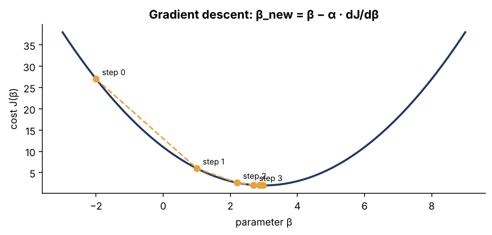
From-scratch implementation
import numpy as np
rng = np.random.default_rng(42)
X = rng.uniform(0, 10, 100)
Y = 4 + 3 * X + rng.normal(0, 2, 100) # true line: y = 4 + 3x (+ noise)
def gradient_descent(X, Y, lr=0.02, iters=3000):
b0, b1 = 0.0, 0.0
for _ in range(iters):
err = (b0 + b1 * X) - Y # prediction error
b0 -= lr * 2 * err.mean() # dJ/db0
b1 -= lr * 2 * (err * X).mean() # dJ/db1
return b0, b1
b0, b1 = gradient_descent(X, Y)
print(round(b0, 3), round(b1, 3)) # 3.723 3.025
print(np.polyfit(X, Y, 1)[::-1].round(3)) # [3.723 3.025] closed-form OLS agrees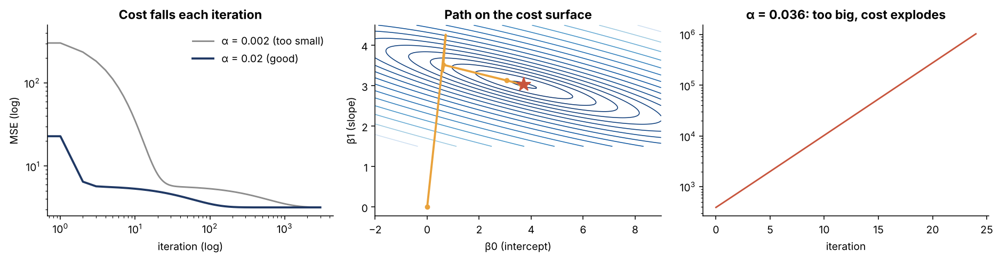
Learning rate α and convergence
- Too small: correct but slow (grey line).
- Too large: overshoots and diverges (red panel); here α = 0.036 explodes while 0.02 converges.
- Feature scaling (standardising X) makes the cost surface rounder, so one α works for all parameters and convergence is much faster.
- Stop when the cost changes less than a tolerance, or after a fixed number of iterations.
Flavours
| Batch GD | Uses all rows per step: stable, slow on big data. |
| Stochastic GD (SGD) | One row per step: noisy, fast, can escape shallow dips. |
| Mini-batch GD | 32–512 rows per step: the standard in deep learning. |
Why learn this if LinearRegression() solves it directly? Because logistic regression, neural networks and boosting have no closed-form answer; they are all trained with gradient-based optimisation.
Pre-processing pipeline
Split first, then fit imputers, scalers and encoders on the training set only and apply them to the test set. Fitting on all the data leaks test information into training (data leakage).
Missing value imputation
| Method | When | Code |
|---|---|---|
| Drop rows | Very few rows, missing at random | df.dropna(subset=["income"]) |
| Drop column | Mostly empty (for example > 40–50%) and not critical | df.drop(columns=["col"]) |
| Mean / median | Numeric; median if skewed | SimpleImputer(strategy="median") |
| Mode / "Missing" label | Categorical | SimpleImputer(strategy="most_frequent") |
| Group-wise | Value depends on a group | df.groupby("city")["income"].transform(lambda s: s.fillna(s.median())) |
| Model-based | Strong relationships between columns | KNNImputer(n_neighbors=5) |
| Missing flag | Missingness itself is informative | df["income_missing"] = df["income"].isna().astype(int) |
Outlier treatment
- Detect: box plot / IQR fences, z-score above 3, domain rules (age > 100).
- Treat: correct data-entry errors; cap (winsorise) at P1/P99; log-transform skewed variables; or keep them if they are real and important (fraud).
- KNN and linear regression are sensitive to outliers; tree models are much less so.
Categorical encoding
| Method | Example | Use for |
|---|---|---|
| One-hot (dummy) | city → city_Delhi, city_Pune (0/1) | Nominal categories. pd.get_dummies(df, columns=["city"], drop_first=True) |
| Label / ordinal | Low=0, Medium=1, High=2 | Ordered categories. OrdinalEncoder(categories=[["Low","Medium","High"]]) |
| Frequency / target encoding | city → share of rows or mean of y | High-cardinality columns (hundreds of values); fit on train only |
drop_first=True avoids the dummy-variable trap (perfect multicollinearity) in linear and logistic regression.
Overfitting and underfitting
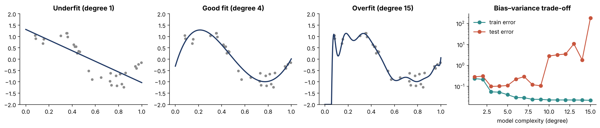
| Underfitting | Overfitting | |
|---|---|---|
| Symptom | Poor on train and test | Great on train, poor on test |
| Cause | Model too simple, missing features | Model too complex, too little data, leakage |
| Fix | Add features, more flexible model, less regularisation | More data, simpler model, regularisation, cross-validation, feature selection; for KNN raise K |
Segmentation: heuristic and RFM
Heuristic segmentation uses business rules ("salaried, age 25–35, spend > ₹50k = Young Affluent"). It is quick and explainable but relies on judgement. RFM is a data-driven heuristic:
| Recency | Days since last purchase (lower is better) |
| Frequency | Number of purchases |
| Monetary | Total spend |
snap = tx["date"].max() + pd.Timedelta(days=1)
rfm = tx.groupby("cust_id").agg(recency=("date", lambda d: (snap - d.max()).days),
frequency=("txn_id", "nunique"), monetary=("amount", "sum"))
rfm["R"] = pd.qcut(rfm["recency"], 4, labels=[4, 3, 2, 1]).astype(int) # recent = 4
rfm["F"] = pd.qcut(rfm["frequency"].rank(method="first"), 4, labels=[1, 2, 3, 4]).astype(int)
rfm["M"] = pd.qcut(rfm["monetary"], 4, labels=[1, 2, 3, 4]).astype(int)
rfm["score"] = rfm[["R", "F", "M"]].sum(axis=1) # 3 .. 12
rfm["segment"] = pd.cut(rfm["score"], [2, 5, 8, 10, 12], labels=["Lost / at risk", "Needs attention", "Loyal", "Champions"])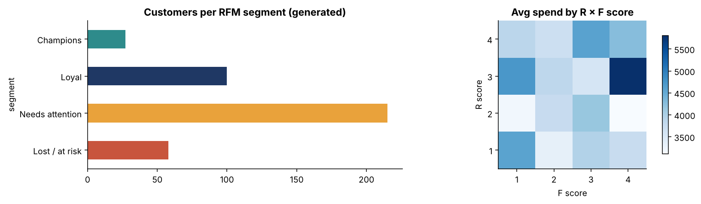
K-Nearest Neighbours
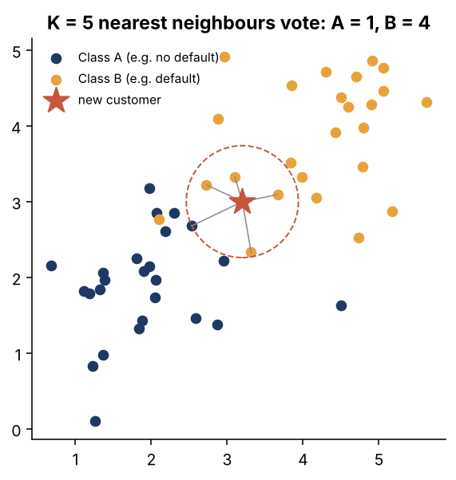
- Choose K and a distance measure.
- Compute the distance from the new point to every training point.
- Take the K closest.
- Classifier: majority vote (or probability = share of votes). Regressor: average of the neighbours' y values.
| Euclidean (p = 2) | √Σ(aᵢ − bᵢ)², straight-line distance |
| Manhattan (p = 1) | Σ|aᵢ − bᵢ|, grid distance; more robust with many features |
| weights="distance" | Closer neighbours get a bigger vote |
StandardScaler inside a Pipeline.Choosing K
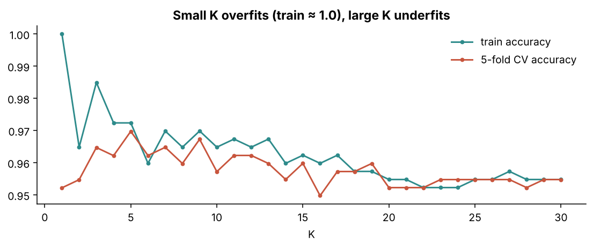
GridSearchCV
Tries every combination of hyper-parameters with k-fold cross-validation on the training set and keeps the best.
from sklearn.datasets import load_breast_cancer
from sklearn.model_selection import train_test_split, GridSearchCV
from sklearn.pipeline import Pipeline
from sklearn.preprocessing import StandardScaler
from sklearn.neighbors import KNeighborsClassifier
from sklearn.metrics import confusion_matrix, classification_report, roc_auc_score
data = load_breast_cancer(); X, y = data.data, 1 - data.target # 1 = malignant (positive class)
X_tr, X_te, y_tr, y_te = train_test_split(X, y, test_size=0.3, random_state=42, stratify=y)
pipe = Pipeline([("scale", StandardScaler()), ("knn", KNeighborsClassifier())])
grid = {"knn__n_neighbors": range(1, 26, 2), "knn__weights": ["uniform", "distance"], "knn__p": [1, 2]}
gs = GridSearchCV(pipe, grid, cv=5, scoring="recall", n_jobs=-1).fit(X_tr, y_tr)
print(gs.best_params_) # {'knn__n_neighbors': 9, 'knn__p': 1, 'knn__weights': 'uniform'}
print(round(gs.best_score_, 4)) # 0.9253 mean CV recall
best = gs.best_estimator_
pred = best.predict(X_te); prob = best.predict_proba(X_te)[:, 1]
print(confusion_matrix(y_te, pred)) # [[107 0]
# [ 7 57]]
print(classification_report(y_te, pred, target_names=["benign", "malignant"]))
print(roc_auc_score(y_te, prob)) # 0.9989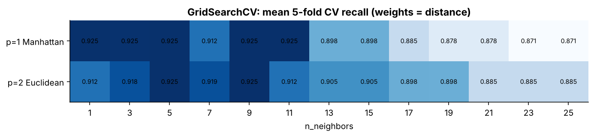
Regression version: KNeighborsRegressor with scoring="neg_root_mean_squared_error"; evaluate with RMSE, MAE and R².
Classification metrics from one confusion matrix
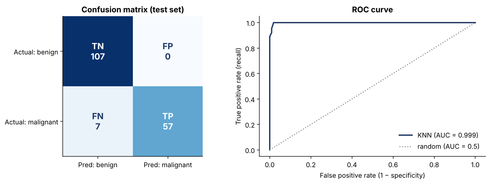
| Metric | Formula | Value here | Question it answers |
|---|---|---|---|
| Accuracy | (TP + TN) / all | (57 + 107) / 171 = 0.959 | How often is the model right overall? Misleading when classes are imbalanced. |
| Precision | TP / (TP + FP) | 57 / 57 = 1.000 | When it says "positive", how often is it right? |
| Recall (sensitivity, TPR) | TP / (TP + FN) | 57 / 64 = 0.891 | Of all actual positives, how many did it catch? |
| Specificity (TNR) | TN / (TN + FP) | 107 / 107 = 1.000 | Of all actual negatives, how many did it clear? |
| F1 score | 2·P·R / (P + R) | 0.942 | Single balance of precision and recall |
| ROC-AUC | Area under TPR vs FPR curve | 0.999 | How well does the score rank positives above negatives, across all cut-offs? |
Choosing the cut-off
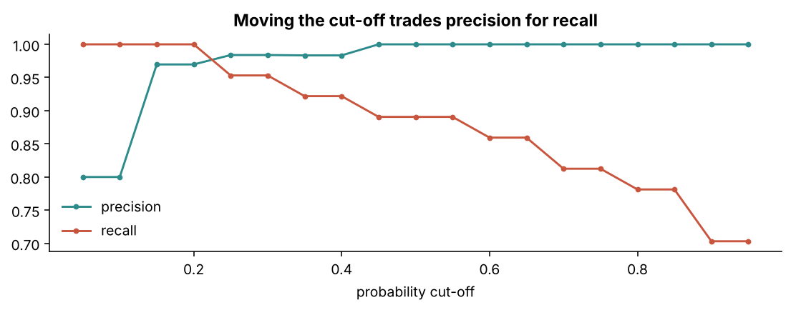
| Business case | Costlier error | Optimise |
|---|---|---|
| Loan default (Bankloans) | Approving a defaulter (FN) | Recall on defaulters, then precision |
| Spam filter | Blocking a real email (FP) | Precision |
| Disease screening | Missing a sick patient (FN) | Recall |
| Marketing campaign with limited budget | Wasting offers (FP) | Precision in the top decile (lift) |
Bankloans case study, solved on the course file
bankloans.csv ships with the ML Ops module materials (it is the same dataset used for the Flask banking app). It has 850 applicants: 700 with a known default value (26.1% defaulted) and 150 new applicants with a blank default to be scored. Features: age, ed (education level), employ (years with employer), address (years at address), income, debtinc (debt-to-income %), creddebt and othdebt (credit-card and other debt).
bank = pd.read_csv("bankloans.csv")
known, new = bank[bank["default"].notna()], bank[bank["default"].isna()] # 700 / 150
cap = lambda s: s.clip(s.quantile(.01), s.quantile(.99)) # outlier capping (as in class)
X = known.drop(columns="default").apply(cap); y = known["default"].astype(int)
X_tr, X_te, y_tr, y_te = train_test_split(X, y, test_size=0.3, random_state=42, stratify=y)
pipe = Pipeline([("scale", StandardScaler()), ("knn", KNeighborsClassifier())])
gs = GridSearchCV(pipe, {"knn__n_neighbors": range(3, 40, 2), "knn__weights": ["uniform", "distance"]},
cv=5, scoring="roc_auc").fit(X_tr, y_tr)
gs.best_params_ # {'knn__n_neighbors': 35, 'knn__weights': 'distance'}
gs.best_score_ # 0.811 CV AUC (test AUC 0.835)
prob = gs.best_estimator_.predict_proba(X_te)[:, 1]
pred_05 = (prob >= 0.5).astype(int); pred_03 = (prob >= 0.3).astype(int)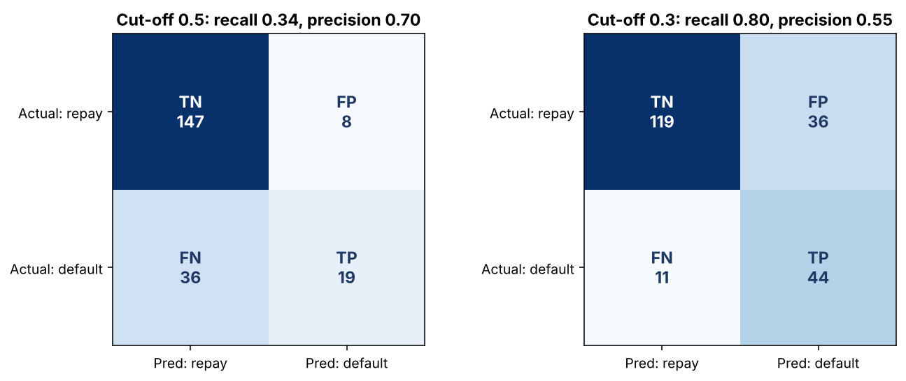
| Cut-off | Accuracy | Precision | Recall | F1 |
|---|---|---|---|---|
| 0.5 | 0.790 | 0.704 | 0.345 | 0.463 |
| 0.3 | 0.776 | 0.550 | 0.800 | 0.652 |
Business reading: accuracy barely changes, but at 0.3 the bank catches 80% of future defaulters instead of 35%. Because a bad loan usually costs far more than a rejected good customer, the lower cut-off is the better business choice. Scoring the 150 new applicants at 0.3 flags 31.3% of them for review.
In the ML Ops module the same data trains a random forest (with RFE feature selection) that is pickled and served through Flask. See ML Ops → Banking app.
Preview only: these topics have not been taught yet. Typical order for the rest of the ML and Intro-to-AI modules is below; confirm with each class title as it is published.
Supervised models
- Regularised regression: Ridge, Lasso, ElasticNet
- Decision trees (Gini, entropy, pruning)
- Ensembles: bagging, random forest, gradient boosting, XGBoost
- Naive Bayes, SVM
- Imbalanced data: class weights, SMOTE
Unsupervised and text
- K-means, hierarchical clustering, silhouette score
- PCA for dimensionality reduction
- Text mining: tokenisation, stop words, stemming/lemmatisation, bag-of-words, TF-IDF, sentiment, topic models
- Time series forecasting
Intro to AI and neural networks
- Perceptron, activation functions, back-propagation
- Keras / TensorFlow basics
- CNNs (images) and RNN/LSTM (sequences)
- Transformers and the link to LLMs
How to prepare
- Revise Class 5 (gradient descent): neural nets use the same idea.
- Revise Class 6 (overfitting): trees and boosting are tuned against it.
- Practise
Pipeline+GridSearchCV: every later model plugs into it.
Explain the p-value to a business stakeholder.
"If there were truly no difference, a result this large would happen only about p×100 times in 100 by chance. Because that is rare (below 5%), we treat the difference as real."
Type I vs Type II error with an example?
In fraud detection, Type I is blocking a genuine transaction (false alarm); Type II is letting a fraud through (miss). Lowering α reduces Type I but increases Type II unless you collect more data.
When would you use a non-parametric test?
Small samples that are clearly non-normal, ordinal data (ratings), or heavy outliers. Example: Mann–Whitney U instead of a two-sample t-test.
Why must features be scaled for KNN but not for decision trees?
KNN uses distances, so large-scale features dominate. Trees split one feature at a time on thresholds, so scale does not change the splits.
What does a small K vs a large K do in KNN?
Small K follows individual points: low bias, high variance (overfits). Large K averages many points: high bias, low variance (underfits). Choose K by cross-validation.
Why is accuracy a poor metric for imbalanced data?
If 2% of loans default, predicting "no default" for everyone is 98% accurate and useless. Use recall, precision, F1, PR-AUC or ROC-AUC instead.
What is data leakage?
When information unavailable at prediction time sneaks into training, such as scaling on the full dataset before splitting, or using a feature recorded after the outcome. It produces great test scores that collapse in production.
What does the learning rate do in gradient descent?
It sets the step size. Too small converges slowly; too large overshoots and can diverge. Scaling features lets a single learning rate work well.
- YouTube: StatQuest hypothesis testing and the null hypothesis · YouTube: StatQuest p-values what they are and how to interpret them
- YouTube: StatQuest central limit theorem clearly explained · YouTube: StatQuest gradient descent step by step
- YouTube: StatQuest k-nearest neighbors clearly explained · YouTube: StatQuest ROC and AUC clearly explained · YouTube: StatQuest confusion matrix
- YouTube: StatQuest bias and variance · YouTube: StatQuest cross validation
- YouTube: Krish Naik KNN algorithm and YouTube: codebasics machine learning tutorial python, applied walkthroughs.
- YouTube: Andrew Ng machine learning specialization gradient descent, the classic explanation.
- scikit-learn: nearest neighbors · GridSearchCV · Model evaluation metrics
- SciPy statistical tests
ML Ops & Model Deployment
Take a trained model to production: Git, Conda, Flask, Heroku and Azure
ML Ops & Model Deployment (self-paced, 6 classes)
A model in a notebook helps nobody. ML Ops is the set of practices that gets a model into a product reliably, keeps it working, and makes it reproducible. It combines machine learning, DevOps and data engineering.
| Class | Topic | Jump to |
|---|---|---|
| 1 | Introduction to MLOps | MLOps concepts |
| 2 | Version control with Git | Git |
| 3 | Conda environments and Flask | Conda & Flask |
| 4 | Banking application with Flask | Banking app |
| 5 | Deploying the app to Heroku | Deploy |
| 6 | Deploying the app to Azure | Deploy |
Module materials used for these notes: the course slide deck "Machine Learning Operations – MLOps", the e-book "Practical MLOps", and the bankin_app_flask project (application.py, the HTML form, the training notebook and bankloans.csv).
Three artifacts, three pipelines
1. Data engineering
- Ingestion (CSV, databases, Spark, HDFS)
- Exploration and validation (profiling, schema checks)
- Wrangling / cleaning
- Labelling
- Splitting into train, validation and test
2. Model engineering
- Training (feature engineering, hyper-parameter tuning)
- Evaluation against the business objective
- Testing on a hold-out set ("model acceptance test")
- Packaging (pickle, joblib, ONNX, PMML)
3. Deployment (code engineering)
- Serving the model (REST API, batch job)
- Performance monitoring on live data
- Logging every prediction request
- Triggering re-training
DevOps vs MLOps
| DevOps | MLOps | |
|---|---|---|
| What changes | Code | Code + data + model |
| Continuous Integration | Test code and components | Also validate data, schemas and models |
| Continuous Delivery | Ship a software package | Ship a training pipeline that produces and deploys a prediction service |
| Continuous Training | n/a | Automatically retrain and redeploy models |
| Failure mode | Bugs | Bugs plus silent decay as data drifts (training–serving skew) |
| Team | Developers + operations | Data scientists + ML engineers + data engineers + DevOps |
MLOps maturity levels
Notebook-driven. A data scientist hands a pickled model to engineers. Rare releases, no CI/CD, no monitoring. Fine for models that rarely change.
The whole training pipeline is deployed and runs automatically (continuous training) on triggers: schedule, new data, performance drop or data drift. Needs data and model validation, a feature store and metadata tracking.
Pipelines themselves are built, tested and deployed automatically. Components: source control, test and build services, deployment services, model registry, feature store. For teams retraining daily or hourly.
Key terms
| Experiment tracking | Log parameters, metrics, data versions and artifacts for every training run so runs can be compared and reproduced (MLflow, Weights & Biases). |
| Model registry | Versioned store of trained models with stages (staging, production, archived). |
| Feature store | One place that defines, stores and serves features so training and serving use identical logic. |
| Data drift | Input distribution changes (customers get younger, incomes rise). |
| Concept drift | The relationship between X and y changes (a recession changes who defaults). |
| Training–serving skew | Features computed differently in training and in production. |
| Canary / A-B deployment | Send a small share of traffic to the new model first, compare, then roll out. |
Why version control
Git records every change to your code, lets several people work in parallel on branches, and lets you return to any earlier version. GitHub (or Azure Repos, GitLab) hosts the shared copy; Heroku and Azure deploy straight from it.
git config --global user.name "Your Name"
git config --global user.email "you@example.com"
git init # start tracking a folder
git status # what changed?
git add application.py templates/ # stage files (git add . = everything)
git commit -m "Add Flask app for loan default model"
git remote add origin https://github.com/<user>/bank-app.git
git push -u origin main
git clone https://github.com/<user>/bank-app.git # copy a repo
git pull # get latest changes
git log --oneline # history
git checkout -b feature-ui # new branch
git merge feature-ui # merge it back (from main)
git diff # line-by-line changesAdd a .gitignore for __pycache__/, .ipynb_checkpoints/, .env and large raw data. Never commit passwords or API keys.
Conda environments (Class 3)
Each project gets its own isolated set of packages, so a model trained with scikit-learn 1.0 keeps working even if another project needs 1.5.
conda create -n bankapp python=3.10 -y
conda activate bankapp
pip install flask pandas scikit-learn gunicorn
conda list # what is installed (the project's conda_info.txt / package_info.txt)
pip freeze > requirements.txt # pin versions for deployment
conda env export > environment.yml # full conda spec
conda deactivateFlask in five minutes
Flask is a lightweight Python web framework. A route maps a URL to a Python function; the function returns a page or data.
from flask import Flask, request, jsonify, render_template
app = Flask(__name__)
@app.route("/") # GET http://127.0.0.1:5000/
def home():
return render_template("index.html") # file in templates/
@app.route("/api/predict", methods=["POST"])
def predict_api():
data = request.get_json() # {"employ": 10, "income": 50, ...}
return jsonify({"default": int(model.predict(pd.DataFrame([data]))[0])})
if __name__ == "__main__":
app.run(debug=True) # dev server only; use gunicorn in production| GET | Ask for something (open a page) |
| POST | Send data (submit a form, call the prediction API) |
| templates/ | HTML files rendered with Jinja ({{ prediction }}) |
| static/ | CSS, JS, images |
The project (Class 4)
bankin_app_flask/
├── Banking Application Model.ipynb train + pickle the model
├── bankloans.csv 850 applicants (700 with known default)
├── RF_model_example.pkl the saved random forest
├── application.py Flask app that serves it
├── templates/index.html input form
└── requirements.txt packages for the serverStep 1: train and save the model (notebook)
bankloans = pd.read_csv("bankloans.csv")
people_with_info = bankloans[bankloans.default.notnull()] # 700 rows for training
people_with_info = people_with_info.apply(lambda x: x.clip(x.quantile(.01), x.quantile(.99))) # cap outliers
# feature selection: Recursive Feature Elimination with a random forest
rfe = RFE(estimator=RandomForestClassifier(), n_features_to_select=5).fit(x_train, y_train)
# chosen features: employ, income, debtinc, creddebt, othdebt
cv_rf = GridSearchCV(RandomForestClassifier(oob_score=True, random_state=1024),
{"n_estimators": [10, 20, 40, 80, 100], "max_depth": [1, 2, 3]}, cv=5).fit(x_train, y_train)
pickle.dump(cv_rf.best_estimator_, open("RF_model_example.pkl", "wb"))Step 2: serve it (application.py from the course)
import pickle
import pandas as pd
from flask import Flask, render_template, request
model = pickle.load(open('RF_model_example.pkl', 'rb')) # load once at start-up
app = Flask(__name__)
@app.route('/', methods=['GET', 'POST'])
def index():
if request.method == 'GET':
return render_template('index.html') # show the form
else:
form_inputs = pd.DataFrame(request.form.to_dict(), index=[0]) # form fields -> 1-row frame
prediction = model.predict(form_inputs.astype(float))
return str(prediction)
if __name__ == "__main__":
app.run(debug=True)Step 3: the form (templates/index.html)
<title>Bank application</title>
<form method="post">
employ: <input type="text" name='employ'>
income: <input type="text" name='income'>
debtinc: <input type="text" name='debtinc'>
creddebt: <input type="text" name='creddebt'>
othdebt: <input type="text" name='othdebt'>
<input type="submit">
</form>Run it locally
conda activate bankapp
python application.py # open http://127.0.0.1:5000Improvements worth making
- Return a friendly page: "Likely to default (probability 0.72)" using
predict_probaand a business cut-off (see ML Class 7 for why 0.5 may be wrong). - Validate inputs (no blanks, sensible ranges) before predicting.
- Log every request and prediction for monitoring.
- Add a JSON
/api/predictroute so other systems can call the model.
Production checklist
requirements.txtwith pinned versions, includinggunicorn- Model file committed (or downloaded at start-up)
- No
debug=Truein production - Port and secrets read from environment variables
Heroku (Class 5)
Procfile (no extension)
web: gunicorn application:app # module_name:flask_objectheroku login
heroku create bank-default-app
git push heroku main # Heroku builds from requirements.txt and starts the Procfile
heroku logs --tail # debug start-up errors
heroku openHeroku ended its free plan in November 2022, so deployments now need a paid dyno. Render, Railway and PythonAnywhere offer similar git-push deployment with free or low-cost tiers; the Procfile/gunicorn pattern is the same.
Azure App Service (Class 6)
gunicorn --bind=0.0.0.0 --timeout 600 application:app. (Azure auto-detects application.py / app.py with an app object.)https://<app-name>.azurewebsites.net. Check Log stream if it fails to start.# CLI alternative from the project folder
az login
az webapp up --name bank-default-app --runtime "PYTHON:3.10" --sku B1Beyond a single app
| Docker | Package app + environment into an image that runs identically anywhere |
| Batch scoring | Score a whole table nightly and write results to a database (often simpler than an API) |
| Managed ML platforms | Azure ML, AWS SageMaker, Google Vertex AI: registry, endpoints, monitoring built in |
| MLflow | Open-source experiment tracking, model registry and serving |
What is MLOps and why is it needed?
Practices that combine ML, DevOps and data engineering to deploy and maintain models reliably. It is needed because models depend on data that changes, so they decay silently without versioning, monitoring and automated retraining.
How is CI/CD different for ML?
CI also validates data and models, not only code. CD deploys a training pipeline that produces a prediction service. Continuous training (CT) is new: retraining automatically on triggers such as drift.
Data drift vs concept drift?
Data drift: the distribution of inputs changes. Concept drift: the link between inputs and the target changes. Both lower accuracy; detect them by monitoring input statistics and live performance.
Why use a virtual environment?
To isolate each project's package versions so a model trained with one version can be loaded and served with exactly the same versions.
Why gunicorn instead of app.run()?
Flask's built-in server is single-threaded and meant for development. Gunicorn is a production WSGI server that runs multiple workers and handles concurrent requests.
How would you monitor a deployed credit-risk model?
Log inputs and predictions; track input distributions against training (PSI), approval and default rates over time, and the model's precision/recall once outcomes arrive; alert and retrain when thresholds are crossed.
- YouTube: Krish Naik deploy machine learning model using flask and YouTube: Krish Naik end to end ML project deployment
- YouTube: freeCodeCamp git and github for beginners crash course
- YouTube: Corey Schafer Flask tutorial
- YouTube: deploy flask app to azure app service
- Flask quickstart · Conda: managing environments
- Azure: Quickstart deploy a Python web app · Heroku Python getting started
- Google Cloud: MLOps continuous delivery and automation pipelines (source of the level 0/1/2 model)
- MLflow documentation
Generative AI
How LLMs work, prompting techniques, and using AI for slides, web pages, sheets, code and images
Generative AI SP (26 classes, task-based videos)
This course is practical: understand what a large language model (LLM) is, learn named prompting techniques, then apply them to real tasks such as presentations, web pages, spreadsheets, code and images.
| Class | Topic | Date · length | Notes |
|---|---|---|---|
| Generative AI · Class 1 | Introduction to LLMs – Part 1 | How LLMs work | |
| Generative AI · Class 2 | Introduction to LLMs – Part 2: basics of LLMs and key terminologies | How LLMs work | |
| Generative AI · Class 3 | Introduction to LLMs – Part 3: working of LLMs | How LLMs work | |
| Generative AI · Class 4 | Introduction to LLMs – Part 4: applications of LLMs | How LLMs work | |
| Generative AI · Class 5 | Introduction to the ChatGPT interface: creating an account, website and services, 3.5 vs 4 vs Turbo, tokens, OpenAI Playground, pricing | How LLMs work | |
| Generative AI · Class 6 | Introduction to prompting techniques | Prompting techniques | |
| Generative AI · Class 7 | PT1 – specifying output formats | Prompting techniques | |
| Generative AI · Class 8 | PT2 – assigning a role/character, setting comprehension level, tone | Prompting techniques | |
| Generative AI · Class 9 | PT4 – reverse prompting | Prompting techniques | |
| Generative AI · Class 10 | PT6 – chain of thought; PT7 – ask before you answer / tell me what I don't know | Prompting techniques | |
| Generative AI · Class 11 | Making presentations (Part 1) | Applied use cases | |
| Generative AI · Class 12 | Making presentations (Part 2) | Applied use cases | |
| Generative AI · Class 13 | Making presentations (Part 3) | Applied use cases | |
| Generative AI · Class 14 | Creating webpages | Applied use cases | |
| Generative AI · Class 15 | Using ChatGPT in Google Sheets (Part 1) | Applied use cases | |
| Generative AI · Class 16 | Using ChatGPT in Google Sheets (Part 2) | 9 Mar 2024 · 19:40 | Applied use cases |
| Generative AI · Class 17 | Automating tasks in Google Sheets | 10 Mar 2024 · 21:34 | Applied use cases |
| Generative AI · Class 18 | Using ChatGPT for writing better code | 16 Mar 2024 · 20:16 | Applied use cases |
| Generative AI · Class 19 | Google Bard – Part 1 (now Gemini) | 17 Mar 2024 · 31:25 | Applied use cases |
| Generative AI · Class 20 | Introduction to image generation | 23 Mar 2024 · 10:36 | Image generation |
| Generative AI · Class 21 | Midjourney Part 1 | 24 Mar 2024 · 36:25 | Image generation |
| Generative AI · Class 22 | Midjourney Part 2 | 30 Mar 2024 · 46:14 | Image generation |
| Generative AI · Class 23 | Midjourney Part 3 | 31 Mar 2024 · 22:11 | Image generation |
| Generative AI · Class 24 | Midjourney Part 4 (list of artists by style) | 6 Apr 2024 · 28:09 | Image generation |
| Generative AI · Class 25 | DALL·E introduction and usage | 7 Apr 2024 · 47:33 | Image generation |
| Generative AI · Class 26 | Gen AI MCQ; summary of prompt starters + use cases (e-books) | Prompt library |
Dates and lengths shown for Classes 16–26 are from the LMS class list. The course note says most videos are task-based with no separate material, so practise alongside each video.
The recorded classes use the ChatGPT versions of their time (3.5, 4, 4-Turbo) and Bard. Interfaces and model names change often; the techniques stay the same.
What an LLM is
A large language model is a neural network (a transformer) trained on huge amounts of text to do one thing extremely well: predict the next token. Answering questions, summarising and coding all emerge from repeating that prediction one token at a time.
How they are built
| Pre-training | Learn language and facts by predicting the next token on web pages, books and code (self-supervised). |
| Instruction tuning | Fine-tune on example prompts and good answers so the model follows instructions. |
| RLHF / preference tuning | Humans rank answers; the model is tuned toward preferred, helpful and safe responses. |
Key terms
| Token | A chunk of text (roughly ¾ of an English word). Pricing and limits are counted in tokens. |
| Context window | The maximum tokens the model can consider at once (prompt + conversation + answer). |
| Temperature | Randomness of sampling. Low (0–0.3) = focused and repeatable; high (0.8+) = creative and varied. |
| Top-p | Sample only from the smallest set of tokens whose probabilities add up to p. |
| Hallucination | Confident but false output. Verify facts, numbers and citations. |
| Embedding | A vector representing meaning; similar texts have nearby vectors. Used for search and RAG. |
| RAG | Retrieval-augmented generation: fetch relevant documents and include them in the prompt so answers are grounded. |
| System prompt | Standing instructions that shape every answer (role, rules, style). |
| Multimodal | Handles images, audio or files as well as text. |
The ChatGPT interface (Class 5)
- Chat: conversation with memory of the current thread. Start a new chat for an unrelated task so old context does not leak in.
- Model picker: faster/cheaper vs more capable models. In the class: 3.5 (fast), 4 (stronger reasoning), 4-Turbo (larger context, cheaper than 4).
- Playground / API: control system prompt, temperature and max tokens directly; pay per input and output token.
- Custom instructions: tell it once about you and how you want answers.
Applications (Class 4)
Write
Emails, reports, summaries, rewriting for tone
Analyse
Explain data, draft SQL/Excel formulas, classify feedback
Create
Slides, web pages, images, code, learning material
Limits to remember
- Knowledge has a cut-off date unless the tool can browse.
- It can be wrong confidently, so check numbers by calculation.
- Do not paste confidential or personal data into tools your organisation has not approved.
The anatomy of a strong prompt
The techniques taught
| Technique | Idea | Example prompt |
|---|---|---|
| PT1 Output formats | Ask for a specific structure | "List the 5 KPIs as a table with columns KPI, formula, why it matters." Also: JSON, bullet list, CSV, markdown, a fixed word count. |
| PT2 Role | Assign an expert persona | "You are a senior data analyst at a bank. Review this SQL query for errors." |
| PT2 Comprehension level | Set the audience's level | "Explain gradient descent to a 12-year-old." / "…to a statistics PhD." |
| PT2 Tone | Control the voice | "Rewrite this delay notice in a warm, apologetic but confident tone." |
| PT4 Reverse prompting | Show the output you like and ask for the prompt that produces it | "Here is a product description I love. Write the prompt that would generate descriptions like this for other products." |
| Few-shot | Give 2–3 input → output examples first | "Review: 'Late delivery' → Negative, Delivery. Review: 'Great fit' → Positive, Product. Review: '…' → " |
| PT6 Chain of thought | Ask it to reason step by step before answering | "Work out the profit step by step, showing each calculation, then give the final number." |
| PT7 Ask before you answer | Make it ask clarifying questions first | "Before you write my study plan, ask me up to 5 questions about my schedule and goals." |
| Iterative refinement | Treat the first answer as a draft | "Shorter. Remove jargon. Add one real example. Keep the table." |
Before and after
Weak
"Write about churn."
Strong
"You are a telecom retention analyst. In 150 words for a non-technical manager, explain the top 3 reasons customers churn in prepaid mobile and one action for each. Format: numbered list. Avoid jargon."
If the answer is wrong, do not just say "try again". Say what is wrong and what to keep.
Presentations (Classes 11–13)
Web pages (Class 14)
Create a single-file responsive landing page (HTML + CSS + a little JS) for a data analytics
bootcamp. Sections: hero with CTA, 3 benefits, curriculum accordion, testimonials placeholder,
FAQ, footer. Colour palette navy and amber. Mobile-first. No external libraries.Save the answer as index.html, open it in a browser, and iterate ("make the hero shorter", "add a pricing table"). Host it free on Netlify or GitHub Pages.
ChatGPT in Google Sheets (Classes 15–17)
- Add-ons such as "GPT for Sheets" add formulas like
=GPT("Classify sentiment as Positive/Negative/Neutral", A2)that run per row: classify feedback, extract entities, translate, clean text. - Native AI in Sheets (Gemini) and Excel (Copilot) can now create formulas, pivots and charts from a prompt.
- Automation: ask ChatGPT to write Google Apps Script, for example "Write an Apps Script that emails me every Monday a summary of rows where Status = 'Overdue'". Paste it in Extensions → Apps Script and add a time-driven trigger.
Better code (Class 18)
| Write | "Write a pandas function that … Include docstring and type hints." |
| Explain | "Explain this code line by line for a beginner." |
| Debug | Paste the error message and the code: "Why does this raise KeyError, and how do I fix it?" |
| Refactor | "Make this faster and more readable; keep behaviour identical." |
| Test | "Write pytest tests including edge cases (empty input, nulls)." |
| Convert | "Convert this Excel formula / SQL query to pandas." |
Google Bard → Gemini (Class 19)
Google's assistant (renamed Gemini in 2024) is strong at live web results and integrates with Gmail, Docs, Sheets and Drive. Compare answers across assistants for important work; they make different mistakes.
How image models work (Class 20)
Diffusion models start from random noise and remove it step by step, guided by your text prompt, until an image matching the description appears.
Prompt formula
A product photo of a matte-black smartwatch on a marble desk, soft morning window light,
shallow depth of field, minimalist, high detail --ar 4:5 --v 6Midjourney essentials (Classes 21–24)
/imagine | Generate 4 images from a prompt |
| U1–U4 / V1–V4 | Upscale or create variations of an image |
--ar 16:9 | Aspect ratio |
--v | Model version |
--stylize / --s | How strongly Midjourney's own aesthetic is applied |
--chaos | Variety between the 4 results |
--no text | Negative prompt: exclude something |
--seed | Reproduce a similar result |
| Image prompts | Paste an image URL before the text to guide style or composition |
/describe | Upload an image and get prompts that describe it (reverse prompting for images) |
DALL·E (Class 25)
- Available inside ChatGPT: describe the image conversationally and ask for edits ("make the background blue", "add a laptop on the table").
- Good at following detailed instructions and placing text; Midjourney is often preferred for artistic quality.
Ready-to-use prompt starters (Class 26)
Learn a topic
Act as my tutor for [topic]. Ask me 3 questions to gauge my level, then teach the
concept in 5 short steps with one example each, and end with a 5-question quiz.Summarise a document
Summarise the text below for a busy manager: 5 bullet key points, 3 risks,
2 decisions needed. Max 150 words. Quote numbers exactly as written.Data analysis helper
You are a data analyst. Columns: [list]. Suggest 8 business questions this data can
answer, the chart for each, and the pandas code to produce it.SQL from English
Tables: [schema]. Write a SQL Server query that [question]. Return one result
table. Then explain each clause in one line.Interview prep
Ask me 10 interview questions for a [role] one at a time. After each answer,
score it out of 10 and show a stronger answer.E-book outline (use case)
Create an outline for a 10-chapter beginner e-book on [topic] for [audience].
For each chapter: title, 3 learning outcomes, one practical exercise.
Then write chapter 1 in a friendly tone, about 800 words.What is the difference between AI, ML, deep learning and generative AI?
AI is the broad goal of machines doing intelligent tasks; ML learns patterns from data; deep learning uses multi-layer neural networks; generative AI is deep learning that creates new content (text, images, code).
Why do LLMs hallucinate, and how do you reduce it?
They generate the most plausible next tokens, not verified facts. Reduce it by grounding with documents (RAG), asking for sources, lowering temperature, and checking outputs.
What does temperature do?
It controls randomness. Low temperature for factual or code tasks, higher for brainstorming and creative writing.
Explain chain-of-thought prompting.
Asking the model to reason through intermediate steps before giving the answer. It improves multi-step maths and logic, and lets you check the reasoning.
What is RAG?
Retrieval-augmented generation: search a knowledge base for relevant chunks (using embeddings), add them to the prompt, and have the model answer from them. It keeps answers current and grounded without retraining.
- YouTube: Andrej Karpathy intro to large language models, the best one-hour overview.
- YouTube: 3Blue1Brown but what is a GPT visual intro to transformers
- YouTube: Google prompting essentials and YouTube: prompt engineering tutorial for beginners
- YouTube: Midjourney beginner guide parameters
- OpenAI prompt engineering guide · Anthropic prompt engineering overview
- Midjourney documentation
- DeepLearning.AI short courses (free)
Power BI
Power Query, data modelling, DAX, visuals, interactivity and the Power BI Service
DVA Classes 18–21 (Power BI) · Power BI module · Power BI Services
Power BI turns raw tables into interactive reports. The workflow is always the same: get and clean data (Power Query) → model it (relationships, star schema) → calculate (DAX) → visualise → publish and share (Power BI Service).
| Class | Topics |
|---|---|
| DVA 18 | Power BI components, the three views, ETL, HR analysis |
| DVA 19 | Small multiples, DAX measures and calculated columns, cards, matrix |
| DVA 20 | AdventureWorks case, hierarchies, tooltips, KPI and gauge visuals, filter levels, edit interactions |
| DVA 21 | Parameters, dynamic measures, Q&A, forecasting, buttons, bookmarks, drill-through, connectivity modes |
| DVA 22 | Unpivot (Power Query) |
| Component | What it is |
|---|---|
| Power BI Desktop | Free Windows app where you build reports (.pbix) |
| Power BI Service | Cloud (app.powerbi.com) to publish, share, schedule refresh, build dashboards |
| Power BI Mobile | Phone/tablet apps to view reports |
| Gateway | Bridge that lets the cloud refresh data from on-premises sources |
| Report Server | On-premises hosting option |
The three views in Desktop
Report view
Canvas where you place visuals, slicers and pages.
Table (Data) view
See the loaded rows, add calculated columns, set data types and formats.
Model view
Tables and relationships: cardinality, cross-filter direction, hide fields.
Connectivity modes (Class 21)
| Mode | How | Pros | Cons |
|---|---|---|---|
| Import | Data copied into the compressed in-memory model | Fastest; full DAX and Power Query | Needs scheduled refresh; size limits |
| DirectQuery | Queries the source on every interaction | Always current; very large data | Slower; some DAX/transform limits; load on source |
| Live connection | Connects to an existing semantic model (Analysis Services / published dataset) | One governed model for many reports | Cannot change the model in the report |
| Composite | Mix of Import and DirectQuery tables | Balance of speed and freshness | More complex |
ETL with Power Query (Class 18)
Home → Transform data opens the Power Query Editor. Every click is recorded as an Applied Step in the M language, so refreshing next month replays all cleaning automatically.
| Task | Where |
|---|---|
| Set data types | Click the icon left of the column header (check dates and decimals first) |
| Remove / choose columns | Home → Choose Columns |
| Promote headers | Home → Use First Row as Headers |
| Split column | Transform → Split Column → By Delimiter |
| Replace values / errors | Transform → Replace Values; right-click → Replace Errors |
| Unpivot (Class 22) | Select ID columns → Transform → Unpivot Other Columns (wide months → rows) |
| Merge queries | Home → Merge Queries (a join: left outer, inner, anti…) |
| Append queries | Home → Append (stack tables with the same columns) |
| Conditional column | Add Column → Conditional Column (if/else without code) |
| Group by | Transform → Group By |
| Column profiling | View → Column quality / distribution / profile |
let
Source = Csv.Document(File.Contents("C:\Data\HR.csv"), [Delimiter=",", Encoding=65001]),
Headers = Table.PromoteHeaders(Source, [PromoteAllScalars=true]),
Types = Table.TransformColumnTypes(Headers, {{"HireDate", type date}, {"Salary", Currency.Type}}),
Active = Table.SelectRows(Types, each [Status] = "Active")
in
ActiveStar schema
keys + numbers
One central fact table (events with numbers: sales, quantity) linked to dimension tables (descriptions to slice by). One-to-many from each dimension to the fact.
- Cardinality: one-to-many (preferred), one-to-one, many-to-many (avoid unless needed).
- Cross-filter direction: single (dimension filters fact) is the default and safest; both-directions can cause ambiguity.
- Active vs inactive relationships: only one active path between two tables; activate another inside a measure with
USERELATIONSHIP(for example, Ship Date vs Order Date). - Date table: create one continuous calendar and Mark as Date Table so time-intelligence functions work.
Date = ADDCOLUMNS ( CALENDAR ( DATE(2020,1,1), DATE(2026,12,31) ),
"Year", YEAR([Date]), "Month", FORMAT([Date], "MMM"), "MonthNo", MONTH([Date]),
"Quarter", "Q" & QUARTER([Date]) )Hierarchies (Class 20)
Drag Month onto Year in the Fields pane (or right-click → Create hierarchy) to build Year → Quarter → Month → Day, or Category → Sub-category → Product. Visuals then get drill-down arrows.
Calculated column vs measure (Class 19)
| Calculated column | Measure | |
|---|---|---|
| Computed | Once per row at refresh, stored | At query time, for the current filter context |
| Use for | Categorising rows, slicer/axis fields (Age band) | Aggregations shown in visuals (Total Sales, Margin %) |
| Example | Profit = Sales[Revenue] - Sales[Cost] | Total Profit = SUM(Sales[Profit]) |
Rule of thumb: if you will put it on an axis or slicer, use a column; if it is a number to aggregate, use a measure. Measures keep the model small.
Must-know DAX
Total Sales = SUM ( Sales[SalesAmount] )
Orders = DISTINCTCOUNT ( Sales[OrderID] )
Avg Order Value = DIVIDE ( [Total Sales], [Orders] ) -- DIVIDE avoids divide-by-zero errors
Margin % = DIVIDE ( [Total Profit], [Total Sales] )
Sales East = CALCULATE ( [Total Sales], Territory[Region] = "East" ) -- change filter context
% of All Sales = DIVIDE ( [Total Sales], CALCULATE ( [Total Sales], ALL ( Product ) ) )
Sales LY = CALCULATE ( [Total Sales], SAMEPERIODLASTYEAR ( 'Date'[Date] ) )
YoY % = DIVIDE ( [Total Sales] - [Sales LY], [Sales LY] )
Sales YTD = TOTALYTD ( [Total Sales], 'Date'[Date] )
Sales MTD = TOTALMTD ( [Total Sales], 'Date'[Date] )
Running Total = CALCULATE ( [Total Sales], FILTER ( ALL ( 'Date' ), 'Date'[Date] <= MAX ( 'Date'[Date] ) ) )
Product Rank = RANKX ( ALL ( Product[ProductName] ), [Total Sales] )
High Value Cust = COUNTROWS ( FILTER ( Customer, [Total Sales] > 10000 ) )
Revenue (iter) = SUMX ( Sales, Sales[Qty] * Sales[UnitPrice] ) -- row-by-row then sum
Ship Sales = CALCULATE ( [Total Sales], USERELATIONSHIP ( Sales[ShipDate], 'Date'[Date] ) )
Age Band (col) = SWITCH ( TRUE(), Emp[Age] < 30, "Under 30", Emp[Age] < 45, "30-44", "45+" )Filter context in one picture
A measure has no single value; it is recomputed for every cell of a visual using the filters coming from rows/columns, slicers, page and report filters. CALCULATE is the function that modifies that filter context; ALL removes filters; FILTER returns a filtered table to iterate.
Variables
Growth Label =
VAR cur = [Total Sales]
VAR ly = [Sales LY]
RETURN IF ( ISBLANK ( ly ), "New", FORMAT ( DIVIDE ( cur - ly, ly ), "0.0%" ) )Visual picker
| Card / Multi-row card | Headline KPIs (Total Sales, Orders) |
| KPI visual | Value vs target with trend (Class 20) |
| Gauge | Progress toward a target value |
| Matrix | Pivot-table style with drill-down and subtotals |
| Clustered bar / column | Compare categories |
| Line / area | Trends over time; Analytics pane → Forecast (Class 21) |
| Small multiples | Same chart repeated per category (Class 19): field well "Small multiples" |
| Map / filled map | Geography |
| Decomposition tree, Key influencers | AI visuals to explain a metric |
| Q&A visual | Type a question in plain English ("total sales by region last year") |
Filters (Class 20)
Levels: visual → page → report (all pages), plus drill-through filters. Types: basic, advanced, Top N, relative date.
Interactivity toolkit (Classes 20–21)
| Edit interactions | Format → Edit interactions: choose whether a selected visual filters, highlights or ignores each other visual |
| Tooltips | Add fields to Tooltips, or build a tooltip report page (Page information → Allow use as tooltip) |
| Drill-through | Detail page with a drill-through field; right-click a data point → Drill through |
| Bookmarks | Save a state (filters, visible visuals); combine with the Selection pane for show/hide toggles |
| Buttons | Actions: page navigation, bookmark, back, drill-through, Q&A |
| Field parameters | Modeling → New parameter → Fields: let users switch the measure or axis on a visual (dynamic measures) |
| What-if parameters | Modeling → New parameter → Numeric range: creates a slicer + value measure for scenarios (discount %) |
| Sync slicers | View → Sync slicers across pages |
-- dynamic measure without field parameters
Selected Metric =
SWITCH ( SELECTEDVALUE ( MetricPicker[Metric] ),
"Sales", [Total Sales],
"Profit", [Total Profit],
"Orders", [Orders] )Publish and share
| Report vs dashboard | Report: multi-page, interactive, built in Desktop. Dashboard: one canvas of pinned tiles in the Service; supports data alerts. |
| Row-level security | Modeling → Manage roles (e.g. [Region] = "East"); assign users in the Service so each person sees only their data |
| Subscriptions and alerts | Email a report on a schedule; alert when a card/KPI tile crosses a threshold |
| Export | PDF, PowerPoint, Excel (Analyze in Excel) |
| Licences | Free (personal), Pro (share with Pro users), Premium Per User / Fabric capacity (large models, wider sharing) |
Build: Sales performance report (AdventureWorks style)
- Data: FactSales + Product, Customer, Territory, Date tables (AdventureWorks sample, or the E-commerce CSVs from the Python capstone: ORDERS, ORDER_ITEMS, PRODUCTS, CUSTOMERS, ORDER_PAYMENTS, ORDER_REVIEW_RATINGS).
- Power Query: fix types, trim text, build a Date table, unpivot any wide tables.
- Model: star schema, one-to-many single direction, mark the Date table.
- Measures: Total Sales, Orders, AOV, Margin %, Sales LY, YoY %, YTD, Rank.
- Page 1, Executive: 4 KPI cards, sales trend with forecast, sales by category (bar), map by state, slicers for year and channel.
- Page 2, Product: matrix Category → Sub-category → Product with drill-down, Top-N filter, Pareto (column + cumulative % line).
- Page 3, Customer drill-through: details for one customer/state; tooltips page.
- Interactivity: field parameter to switch Sales/Profit/Orders; bookmarks for "chart view / table view"; navigation buttons.
- Publish: workspace, dashboard with pinned KPIs, scheduled refresh, RLS by region.
Interview tip: be ready to explain every measure you used and why it is a measure, not a column.
Measure vs calculated column?
Columns are computed per row at refresh and stored (good for slicers/axes). Measures are computed at query time in the current filter context (good for aggregations) and do not increase model size.
What does CALCULATE do?
It evaluates an expression in a modified filter context: it can add, replace or remove filters. It is how you build "sales for East", "% of total" and time-intelligence measures.
SUM vs SUMX?
SUM adds one column. SUMX iterates row by row over a table, evaluates an expression per row (Qty × Price) and then sums the results.
Import vs DirectQuery?
Import copies data into memory: fastest, needs refresh. DirectQuery queries the source live: always current and suits very large data, but slower with some limitations.
Why a star schema?
Simple one-to-many filters, fewer ambiguous paths, smaller and faster models, and DAX that behaves predictably.
How do you implement row-level security?
Create roles with DAX filters in Desktop (Manage roles), test with View as, publish, then assign users or groups to roles in the Service.
Report vs dashboard?
A report is multi-page and fully interactive; a dashboard is a single page of pinned tiles from one or more reports, built in the Service, and supports alerts.
- YouTube: Guy in a Cube Power BI, tips from Microsoft engineers.
- YouTube: SQLBI DAX CALCULATE explained, the authority on DAX.
- YouTube: Pragmatic Works Power BI full course and YouTube: codebasics Power BI tutorial
- YouTube: Leila Gharani Power BI tutorial for beginners
- Microsoft Learn: Power BI documentation · DAX function reference
- DAX Guide (SQLBI) · Star schema guidance
Tableau
Marks, table calculations, filters, calculated fields, parameters, LODs and dashboards
Tableau (Self-paced) V7 (9 classes)
Tableau is drag-and-drop visual analytics. You drop dimensions and measures on shelves, and Tableau writes the query and draws the chart. Mastery comes from understanding the order Tableau filters and computes things.
| Class | Topics |
|---|---|
| 1 | Introduction and file types |
| 2 | Working in Tableau: connecting data, the workspace |
| 3 | Visuals and the Marks card |
| 4 | Table calculations |
| 5 | Filters, groups, bins, hierarchies |
| 6 | Calculated fields, parameters, dashboards |
| 7 | Visualisations, detailed dashboards, analytics pane, data blending |
| 8 | Level of Detail (LOD) expressions |
| 9 | Workbook optimisation and best practices |
Both Tableau case studies (Laptops and Sports Equipment) are solved under Case Studies with the exact Tableau steps and the answer numbers computed from the data, so you can check your workbook.
File types (Class 1)
| .twb | Workbook: visual definitions only, no data |
| .twbx | Packaged workbook: workbook + data extract + images (submit case studies in this) |
| .hyper (.tde older) | Extract: compressed snapshot of the data |
| .tds / .tdsx | Saved data source (connection + metadata) |
| .tbm | Bookmark of a single worksheet |
Key ideas (Class 2)
Dimensions vs measures
Dimensions (blue when discrete) are categories that slice data: Region, Product. Measures are numbers that get aggregated: SUM(Sales).
Discrete vs continuous
Blue pills are discrete and create headers. Green pills are continuous and create axes. A date can be either.
- Live vs extract: live queries the source; an extract is a fast snapshot that needs refreshing.
- Joins (row level, in the physical layer), relationships (logical layer, the default since 2020.2: tables stay separate and join only as needed), and blending (Class 7: combine a secondary source per sheet on a linking field; aggregated at the link level).
The Marks card (Class 3)
| Mark type | Automatic, bar, line, area, circle, square, text, map, pie, Gantt, polygon |
| Color | Categories or a gradient for a measure |
| Size | Encode a measure in mark size |
| Label | Show values on marks |
| Detail | Split marks by a field without colour (one dot per store) |
| Tooltip | Extra fields on hover |
| Shape / Path / Angle | Shapes for categories; line order; pie slice size |
Chart cookbook
| Chart | Build |
|---|---|
| Bar | Dimension on Rows, measure on Columns; sort |
| Line (trend) | Continuous MONTH(Date) on Columns, measure on Rows |
| Dual axis | Two measures on Rows → right-click second → Dual Axis → Synchronize Axis; set marks bar + line |
| Scatter | Measure on Columns and Rows; dimension on Detail; Analytics → Trend Line |
| Pie | Marks = Pie; dimension on Color; measure on Angle; labels = % of total |
| Highlight table / heatmap | Dimensions on Rows and Columns, measure on Color, mark = Square |
| Map | Double-click a geographic field (Country, State, Postcode) or use lat/long |
| Pareto | Sorted bars + running-total % line on a dual axis |
| Bullet / Gantt / Box plot | Show Me suggestions with the needed fields |
Table calculations run on the results already in the view (after aggregation). Right-click a measure → Quick Table Calculation, then Compute Using controls the direction (Table across, down, Pane, or specific dimensions).
| Quick calc | Business use | Function |
|---|---|---|
| Running total | Cumulative sales, Pareto line | RUNNING_SUM(SUM([Sales])) |
| Difference | Change vs previous month | ZN(SUM([Sales])) - LOOKUP(ZN(SUM([Sales])), -1) |
| Percent difference | MoM % | (current − previous) / previous |
| Percent of total | Market share | SUM([Sales]) / TOTAL(SUM([Sales])) |
| Rank | Top products | RANK(SUM([Sales])) |
| Moving average | Smooth trends (3-month) | WINDOW_AVG(SUM([Sales]), -2, 0) |
| YoY growth | Year-over-year % | Quick calc → Year over Year Growth |
| Percentile | Position in distribution | RANK_PERCENTILE(SUM([Sales])) |
If a table calc gives strange numbers, the problem is almost always Compute Using. Check the yellow highlight in Edit Table Calculation.
Order of operations (memorise this)
Example: to get "Top 15 products in 2014", put Year in context (right-click → Add to Context) so the year filter is applied before the Top N.
Class 5 tools
| Groups | Combine members into a new category (e.g. Laptops + Tablets = Devices). Right-click field → Create → Group, or select marks → paperclip. |
| Bins | Turn a continuous measure into ranges (age 0–10, 10–20) for histograms. Right-click → Create → Bins. |
| Hierarchies | Drag one dimension onto another (Category → Sub-category → Product) for +/- drill-down. |
| Sets | In/Out membership by a condition or Top N (Top 5 product types by quantity); can be dynamic and combined; used for comparisons and highlighting. |
| Combined fields | Select several dimensions → Create → Combined Field (used in the Laptops case to make 32 configuration groups). |
Calculated fields (Class 6)
// Row-level
Profit = [Revenue] * [Gross margin]
Distance = SQRT( SQUARE([C OSx] - [St OS X]) + SQUARE([C OSy] - [St OS Y]) )
Order Size = IF [Quantity] >= 100 THEN "Bulk" ELSEIF [Quantity] >= 20 THEN "Medium" ELSE "Small" END
Region Group = CASE [Retailer Country] WHEN "Canada" THEN "Americas" WHEN "France" THEN "Europe" ELSE "Other" END
Year = YEAR([Order Date]) Days to ship = DATEDIFF('day', [Order Date], [Ship Date])
Clean Name = TRIM(UPPER([Name])) Contains = CONTAINS([Product], "Pro")
// Aggregate
Margin % = SUM([Profit]) / SUM([Revenue])
Avg price = SUM([Revenue]) / SUM([Quantity])Parameters
A parameter is a user-controlled variable (number, date, string list). On its own it does nothing; you must use it in a calculation, filter, reference line or Top N.
// Dynamic Top N: Set/Filter → Top → By field → Top [Top N] by SUM(Quantity)
// Dynamic year: Year Filter = YEAR([Order Date]) = [Select Year] → put on Filters = True
// Measure switcher:
Selected Measure =
CASE [Select Measure]
WHEN "Revenue" THEN SUM([Revenue])
WHEN "Profit" THEN SUM([Profit])
WHEN "Quantity" THEN SUM([Quantity])
ENDRight-click the parameter → Show Parameter to let viewers change it.
Why LODs (Class 8)
Normally a measure is aggregated at the level of the dimensions in the view. A Level of Detail expression lets you compute at a different level, independent of the view.
| Type | Meaning | Example |
|---|---|---|
{FIXED [dim] : agg} | Compute at exactly these dimensions, ignoring the view (and dimension filters unless in context) | {FIXED [Customer ID] : MIN([Order Date])} = first purchase date (cohorts) |
{INCLUDE [dim] : agg} | Add a finer dimension than the view, then re-aggregate | AVG({INCLUDE [Order ID] : SUM([Sales])}) = average order value by region |
{EXCLUDE [dim] : agg} | Remove a dimension from the view's level | SUM([Sales]) - SUM({EXCLUDE [Month] : AVG([Sales])}) = difference from the average month |
{agg} | Table-scoped: one value for the whole data source | {SUM([Sales])} = grand total |
Customer Lifetime Sales = {FIXED [Customer ID] : SUM([Sales])}
Cohort Year = YEAR({FIXED [Customer ID] : MIN([Order Date])})
Orders per Customer = {FIXED [Customer ID] : COUNTD([Order ID])} // then use as a dimension to histogram
Share of Region = SUM([Sales]) / SUM({FIXED [Region] : SUM([Sales])})
Store Avg Price = {FIXED [Store Postcode] : AVG([Retail Price])} // Laptops case Q5FIXED is computed before dimension filters. If a FIXED number ignores your filter, add that filter to context.
Dashboard build (Classes 6–7)
- Set a fixed size (e.g. 1200 × 800) or Automatic; plan a grid with containers (horizontal/vertical) for alignment.
- KPIs on top, main chart centre, detail or table bottom, filters on the right.
- Actions (Dashboard → Actions): Filter (click one chart to filter others), Highlight, URL, Go to Sheet, Change Parameter, Change Set Values.
- Use as Filter: the funnel icon on a sheet makes it filter the others.
- Apply a quick filter to "All using this data source" or selected worksheets.
- Show/hide buttons and floating legends keep the layout clean.
Analytics pane (Class 7)
Drag on: constant/average lines, reference bands, distribution bands, box plots, totals, trend lines (with R² and p-value), forecast, clusters.
Stories
A Story is a sequence of story points, each a sheet or dashboard with a caption. Use it for presentations: one insight per point, written as a headline ("Proximity drives store sales").
Performance (Class 9)
- Use extracts; hide unused fields before extracting; aggregate the extract to the level you need
- Filter early: extract and data-source filters, then context filters
- Prefer relationships/joins on integers; avoid blending large sources
- Fewer marks per view (thousands, not millions); fewer sheets per dashboard
- Avoid many quick filters with "Only relevant values" on large data
- Use Boolean and integer calcs instead of string comparisons where possible
- Help → Settings and Performance → Start Performance Recording to find slow queries
Design best practice
- One question per sheet; title states the insight.
- Consistent colours: one highlight colour, greys for context.
- Sort bars; start bar axes at zero; avoid 3D and too many pie slices.
- Label directly instead of relying on legends.
- Use tooltips for detail rather than crowding the chart.
Dimension vs measure, discrete vs continuous?
Dimensions are categorical fields that slice; measures are numeric and aggregated. Discrete (blue) creates headers; continuous (green) creates axes. A field's colour depends on how it is used, not its data type alone.
Join vs relationship vs blend?
A join physically merges tables row by row before analysis. A relationship keeps tables separate and joins at the right level for each view (avoids duplication). Blending combines two separate data sources per sheet, aggregated at the linking field.
Explain FIXED vs INCLUDE vs EXCLUDE.
FIXED computes at the stated dimensions regardless of the view. INCLUDE adds a finer dimension then aggregates to the view. EXCLUDE removes a view dimension from the calculation.
Why would a Top N filter return the wrong products after another filter?
Top N and other dimension filters are evaluated independently at the same stage, so the Top N is computed on the full data, not on the filtered subset. Put the other filter in context so it is applied first.
Context filter: when and why?
To make a filter apply before Top N, FIXED LODs and other dimension filters; also to improve performance by shrinking the data early.
What is a table calculation and what does Compute Using do?
A calculation on the aggregated results in the view (running total, % of total, rank). Compute Using sets the direction/partition across which it runs.
- YouTube: Andy Kriebel Tableau tip, hundreds of short how-tos.
- YouTube: Tableau LOD expressions explained and YouTube: Tableau table calculations explained
- YouTube: Alex The Analyst Tableau tutorial for beginners
- Tableau Help: order of operations
- Tableau Help: LOD expressions
- Tableau Public gallery (inspiration) · Practice: Workout Wednesday
Advanced Excel: Basic to Advanced
Every Excel skill an analyst needs, from the first click to Power Query, dynamic arrays, VBA and Copilot
Learning session · non-tech friendly · companion workbook: Excel_Basic_to_Advanced.xlsx (one sheet per topic, live formulas)
This session takes you from opening Excel for the first time to building automated dashboards. Each level builds on the previous one. Every topic has a matching sheet in the Excel Basic-to-Advanced workbook (see Downloads) with live examples you can edit.
| Level | You will learn | Workbook sheets |
|---|---|---|
| 1 · Foundations | Interface, data entry, cell references, formatting, number formats | 01 Environment, 02 References, 03 Custom Formats |
| 2 · Core functions | Math, text, date/time, aggregate and conditional aggregates | 04 Number, 05 Text, 06 Date & Time, 07 Aggregate |
| 3 · Logic & lookups | IF family, error handling, VLOOKUP, INDEX/MATCH, XLOOKUP | 08 Logical, 09 Lookup |
| 4 · Data tools | Sort, filter, tables, validation, conditional formatting, cleaning | 10 Conditional Formatting, 11 Validation, 12 Sort & Filter |
| 5 · Analysis | Pivot tables, slicers, what-if analysis, statistics | 13 Pivot Data, 14 What-If |
| 6 · Modern Excel | Dynamic arrays, LET, LAMBDA, GROUPBY, REGEX | 15 Dynamic Arrays |
| 7 · Power tools | Power Query, Power Pivot, DAX, data model | 16 Power Query Steps |
| 8 · Charts & dashboards | Chart choice, combo/Pareto/waterfall, sparklines, dashboard design | 17 Charts, 18 Dashboard Case Study |
| 9 · Automation & AI | Macros/VBA, Office Scripts, Power Automate, Copilot, Python in Excel | 19 Automation & AI |
Learn by doing: open the workbook, change the blue input cells, and watch the black formula cells update. That feedback loop is how Excel skill sticks.
Getting around
- Enter data: type and press Enter (down) or Tab (right). Ctrl+Enter fills the same value into all selected cells.
- Edit: F2; undo Ctrl+Z; repeat F4.
- Series: type 1, 2 and drag; or type Jan and drag; double-click the fill handle to fill down to the end of adjacent data.
- Flash Fill Ctrl+E: type the first answer by hand; Excel copies the pattern.
How Excel stores values
| Numbers | Right-aligned by default. Up to 15 significant digits (longer IDs like card numbers must be stored as text). |
| Text | Left-aligned. Numbers stored as text show a green triangle; fix with "Convert to Number" or =VALUE(). |
| Dates | Serial numbers: 1 = 1 Jan 1900; 1 Oct 2026 = 46296. Times are fractions of a day (0.5 = noon). |
| Booleans / errors | TRUE/FALSE; errors such as #N/A, #VALUE!, #DIV/0!, #REF!, #NAME?, #SPILL! |
Cell references
| Reference | Copy down | Copy right | Typical use |
|---|---|---|---|
| A1 | A2, A3… | B1, C1… | Row-by-row calculations |
| $A$1 | stays | stays | A fixed rate (GST, exchange rate) |
| A$1 | stays | B$1… | Header row in a grid |
| $A1 | $A2… | stays | First column in a grid |
| Sheet2!B5 / 'Sales Data'!B5 | Another sheet (quote names with spaces) | Link inputs | |
| Sales[Amount] | Structured reference to a Table column | Auto-expanding formulas | |
| Named range GST_Rate | Formulas → Define Name | Readable formulas: =Amount*GST_Rate | |
Formatting essentials
- Format Cells Ctrl+1: Number, Alignment (wrap, merge vs Center Across Selection, which is safer), Font, Border, Fill, Protection.
- Cell Styles and Format Painter (double-click to paint many times).
- Custom number formats: see the table in Building Blocks · Class 1, including the Indian lakh format and ▲▼ indicators.
The 40 functions that cover most analyst work
| Group | Functions | Real example |
|---|---|---|
| Math | SUM, PRODUCT, ROUND/ROUNDUP/ROUNDDOWN, INT, MOD, ABS, POWER, SQRT, CEILING.MATH, FLOOR.MATH, RAND, RANDBETWEEN, SUMPRODUCT | =SUMPRODUCT(Qty,Price) total sales without a helper column |
| Text | LEFT, RIGHT, MID, LEN, FIND, SEARCH, SUBSTITUTE, REPLACE, TRIM, CLEAN, UPPER, LOWER, PROPER, TEXT, VALUE, CONCAT, TEXTJOIN, EXACT, REPT | =PROPER(TRIM(A2)) tidy imported names |
| Date & time | TODAY, NOW, DATE, YEAR, MONTH, DAY, EOMONTH, EDATE, WEEKDAY, WEEKNUM, NETWORKDAYS(.INTL), WORKDAY, DATEDIF, YEARFRAC, HOUR, MINUTE | =EOMONTH(TODAY(),-1)+1 first day of this month |
| Aggregate | COUNT, COUNTA, COUNTBLANK, AVERAGE, MEDIAN, MODE, MIN, MAX, SMALL, LARGE, RANK.EQ, PERCENTILE, QUARTILE, STDEV.S | =RANK.EQ(H2,$H$2:$H$100) sales-rep ranking |
| Conditional aggregate | SUMIF(S), COUNTIF(S), AVERAGEIF(S), MAXIFS, MINIFS | =MAXIFS(Amount,City,"Pune") biggest Pune order |
| Visible-rows aggregate | SUBTOTAL, AGGREGATE | =SUBTOTAL(109,H:H) sum of filtered rows |
Criteria tricks in SUMIFS / COUNTIFS
=SUMIFS(Amount, City, "Pune") exact match
=SUMIFS(Amount, Product, "*phone*") wildcard: contains "phone"
=SUMIFS(Amount, Amount, ">=10000") comparison as text
=SUMIFS(Amount, Date, ">="&$K$1, Date, "<="&$K$2) between two dates held in cells
=SUM(SUMIFS(Amount, City, {"Pune","Mumbai"})) OR across two cities
=COUNTIFS(Region, "<>North") not equal
=COUNTIF(A:A, A2)>1 duplicate checkText recipes
First name =LEFT(A2, FIND(" ", A2) - 1)
Last name =RIGHT(A2, LEN(A2) - FIND(" ", A2))
Email domain =MID(B2, FIND("@", B2) + 1, 100)
Mask a phone number ="XXXXXX" & RIGHT(C2, 4)
Count words =LEN(TRIM(A2)) - LEN(SUBSTITUTE(A2, " ", "")) + 1
Pad an ID to 6 digits =TEXT(D2, "000000")Date recipes
Age in years =DATEDIF(DOB, TODAY(), "Y")
Financial year (Apr–Mar) ="FY" & IF(MONTH(B2)>=4, YEAR(B2)+1, YEAR(B2))
Quarter (Apr start) ="Q" & ROUNDUP(MOD(MONTH(B2)-4, 12)/3 + 0.01, 0)
Weekday name =TEXT(B2, "dddd")
Due date in 10 workdays =WORKDAY(B2, 10, Holidays)
Hours between times =(End - Start) * 24Logical functions
=IF(H2>=50000, "Key account", "Regular")
=IF(H2>=50000, "Gold", IF(H2>=20000, "Silver", "Bronze")) nested IF
=IFS(H2>=50000, "Gold", H2>=20000, "Silver", TRUE, "Bronze") IFS (365/2019+)
=SWITCH(D2, "N", "North", "S", "South", "Other") match exact values
=IF(AND(Status="Paid", Days<=30), "On time", "Late")
=IF(OR(City="Pune", City="Mumbai"), "Maharashtra", "Other")
=IFERROR(H2/G2, 0) =IFNA(VLOOKUP(...), "Not found") error handling
=ISBLANK(A2) =ISNUMBER(SEARCH("pro", B2)) =ISERROR(...) IS functionsLookups: the evolution
| Function | Formula (find a product's price) | Pros | Cons |
|---|---|---|---|
| VLOOKUP | =VLOOKUP(A2, Products!$A:$C, 3, FALSE) | Known everywhere | Only looks right; breaks if a column is inserted; FALSE is easy to forget |
| HLOOKUP | =HLOOKUP(J2, $B$1:$M$2, 2, FALSE) | Horizontal tables | Same limits |
| INDEX + MATCH | =INDEX(Products!C:C, MATCH(A2, Products!A:A, 0)) | Any direction, robust, fast | Two functions to learn |
| Two-way INDEX/MATCH | =INDEX(Grid, MATCH(rep,Reps,0), MATCH(month,Months,0)) | Row + column lookup | |
| XLOOKUP (365/2021) | =XLOOKUP(A2, Products[ID], Products[Price], "Missing") | Any direction, default not-found, last-match search, returns whole rows | Not in Excel 2016/2019 |
| Approximate match | =VLOOKUP(Score, Slabs, 2, TRUE) or =XLOOKUP(Score, Slab, Rate, , -1) | Tax slabs, grade bands, commission tiers | Slab table must be sorted ascending |
| CHOOSE | =CHOOSE(WEEKDAY(B2,2), "Mon","Tue",...) | Pick from a list by position; enables left VLOOKUP | |
| INDIRECT / OFFSET | =SUM(INDIRECT(A1&"!H:H")) | Dynamic references | Volatile (slow); avoid in big files |
Real example: commission slabs
Slab table: 0 → 2%, 1,00,000 → 3%, 5,00,000 → 5%. Rep sales ₹3,40,000. =XLOOKUP(340000, Slab, Rate, , -1) finds the largest slab ≤ sales → 3% → commission ₹10,200.
Excel Tables (Ctrl+T): do this first, always
- Formulas fill down automatically and use names:
=[@Qty]*[@Price]. - New rows are included in pivots, charts and formulas automatically.
- Built-in Total Row, slicers and banded styles.
Cleaning toolkit
| Remove Duplicates | Data → Remove Duplicates (choose key columns) |
| Text to Columns | Split by delimiter or fixed width; also converts text dates |
| Find & Replace | Wildcards * and ?; replace double spaces; Options → match entire cell |
| Go To Special → Blanks | Fill blanks with the value above: select, type = + up arrow, Ctrl+Enter |
| TRIM/CLEAN/PROPER | Fix spaces, non-printing characters, case |
| Data Validation | Drop-down lists (List source), whole number limits, dates, custom formula rules (=COUNTIF(A:A,A2)=1 blocks duplicates), input messages and error alerts |
| Copilot "Clean data" (365) | Detects inconsistent text, spaces and number formats and suggests fixes |
Sorting and filtering
Multi-level and custom-list sorts; filter by value, colour, number/date conditions; Advanced Filter with criteria ranges; SUBTOTAL/AGGREGATE for visible rows; the modern =FILTER() and =SORT() formulas return live results without touching the source.
Conditional formatting
Rules, data bars, colour scales, icon sets, and formula-based rules (highlight the row, overdue items, weekends, duplicates). Manage rules: Home → Conditional Formatting → Manage Rules to set order and "Stop If True".
Protection and collaboration
Unlock input cells (Format Cells → Protection → uncheck Locked), then Review → Protect Sheet. Protect Workbook locks structure. Co-authoring in OneDrive/SharePoint; comments with @mentions; Show Changes history.
Pivot tables step by step
- Calculated field: Margin % = Profit / Sales (works on sums).
- GETPIVOTDATA: pull a number from a pivot into a report cell that survives re-layout.
- Pivot charts follow the pivot's filters and slicers.
- Formula alternatives in 365:
=GROUPBY()and=PIVOTBY()give pivot results that update automatically.
What-if analysis
| Goal Seek | Data → What-If → Goal Seek: "What price gives ₹10 lakh profit?" Set cell = profit, To value = 1000000, By changing = price |
| Scenario Manager | Save Best / Base / Worst sets of inputs and produce a summary report |
| Data Table | One- or two-variable sensitivity grid: EMI for different rates × tenures |
| Solver (add-in) | Optimise with constraints: product mix that maximises profit within machine hours |
| Forecast Sheet | Data → Forecast Sheet: exponential-smoothing forecast with confidence bounds (FORECAST.ETS) |
Real example: loan EMI
₹10 lakh, 9% annual, 5 years: =PMT(9%/12, 60, -1000000) = ₹20,758 per month. A two-variable Data Table shows EMI for 8–11% × 3–7 years in one grid.
Statistics in Excel
Enable the Analysis ToolPak (File → Options → Add-ins): Descriptive Statistics, Histogram, Correlation, Regression, t-Tests, ANOVA. Functions: CORREL, SLOPE, INTERCEPT, RSQ, FORECAST.LINEAR, T.TEST, CHISQ.TEST, NORM.DIST.
Dynamic arrays (Excel 365 / 2021+)
One formula returns many values that "spill" into neighbouring cells. Refer to the whole spill with #: =SUM(F2#). A #SPILL! error means something blocks the spill range.
| Function | Example | Returns |
|---|---|---|
| UNIQUE | =UNIQUE(Sales[City]) | Distinct cities |
| SORT / SORTBY | =SORT(Sales, 5, -1) | Table sorted by 5th column descending |
| FILTER | =FILTER(Sales, (Sales[City]="Pune")*(Sales[Amount]>5000), "None") | Rows meeting both conditions (* = AND, + = OR) |
| SEQUENCE | =SEQUENCE(12,1,DATE(2026,4,1),31) | Series of numbers/dates |
| XLOOKUP / XMATCH | =XLOOKUP(A2, IDs, Sales[[Name]:[City]]) | Several columns at once |
| TAKE / DROP / CHOOSECOLS / CHOOSEROWS | =TAKE(SORT(Sales,5,-1), 10) | Top 10 rows |
| VSTACK / HSTACK | =VSTACK(Jan!A2:E100, Feb!A2:E100) | Append sheets |
| TEXTSPLIT / TEXTBEFORE / TEXTAFTER | =TEXTSPLIT(A2, ",") | Split text to columns |
| GROUPBY / PIVOTBY / PERCENTOF | =GROUPBY(Sales[City], Sales[Amount], SUM, , , -2) | Summary sorted by total |
| REGEXTEST / REGEXEXTRACT / REGEXREPLACE | =REGEXEXTRACT(A2, "[A-Z]{5}[0-9]{4}[A-Z]") | PAN-format code from text |
LET and LAMBDA
=LET(sales, SUM(Sales[Amount]), cost, SUM(Sales[Cost]),
margin, (sales - cost) / sales,
TEXT(margin, "0.0%")) name intermediate results
Define a reusable function: Formulas → Name Manager → New
Name: GSTINCL Refers to: =LAMBDA(amount, rate, amount * (1 + rate))
Use: =GSTINCL(H2, 18%)Power Query: repeatable data cleaning
Power Query records each click as an M-language step (Applied Steps). The same engine is in Power BI, so this skill transfers directly.
Power Pivot and the Data Model
- Load several tables (Sales, Products, Calendar) and connect them with relationships (Data → Relationships or the Diagram View), instead of VLOOKUPs.
- Write DAX measures:
Total Sales := SUM(Sales[Amount]),Sales LY := CALCULATE([Total Sales], SAMEPERIODLASTYEAR(Calendar[Date])). - Pivot tables built on the Data Model can handle millions of rows and use those measures.
| Advanced chart | Use | How |
|---|---|---|
| Combo (column + line, secondary axis) | Revenue and margin % together | Change Chart Type → Combo |
| Pareto | 80/20: few products, most complaints | Insert → Statistic → Pareto |
| Waterfall | Profit bridge: revenue → costs → profit | Insert → Waterfall; set totals |
| Histogram / Box & Whisker | Distributions | Insert → Statistic charts |
| Funnel | Visit → cart → checkout → paid | Insert → Funnel |
| Map chart | Sales by state | Insert → Maps (needs region names) |
| Sparklines | Mini trend inside a cell | Insert → Sparklines |
| Dynamic chart | Chart changes with a drop-down | Chart on a FILTER/INDEX result driven by a validation list |
Dashboard design rules
- One screen; KPIs in the top row (cards with value + vs target + trend arrow)
- Main trend chart, then breakdowns; details last
- Slicers/timelines on one side, connected to all pivots
- Consistent colours: one highlight colour, greys for context
- Gridlines off, aligned shapes, titles that state the insight
- Raw data and calculations on hidden or separate sheets; protect the dashboard
The workbook's 18 Dashboard Case Study sheet builds a monthly sales dashboard for a sample retailer with live KPIs, a store league table and charts.
Macros and VBA
- Show the Developer tab (File → Options → Customize Ribbon).
- Record Macro → do the steps (format, sort, filter) → Stop. Use Relative References for steps that should work from the current cell.
- Save as .xlsm. Run from View → Macros or assign to a button.
- Edit in the VBA editor (Alt+F11):
Sub FormatReport()
Dim ws As Worksheet
For Each ws In ThisWorkbook.Worksheets ' loop every sheet
ws.Rows(1).Font.Bold = True
ws.Columns("A:H").AutoFit
Next ws
MsgBox "Formatted " & ThisWorkbook.Worksheets.Count & " sheets"
End SubOffice Scripts and Power Automate (cloud)
Excel for the web → Automate tab → Record Actions creates a TypeScript Office Script. Power Automate can run it on a schedule or when a file arrives: e.g. "every Monday 9 AM, refresh the sales workbook and email the summary to the team".
AI in Excel
| Copilot chat | "Show sales by city as a chart", "Add a column for margin %", "What are the top 3 insights?" |
| Formula help | Generate, explain ("Explain this formula") and fix formulas from the error indicator |
=COPILOT() | AI inside a cell: classify reviews, extract cities, summarise comments row by row |
| Agent Mode | Multi-step builds (a full model or dashboard) from a single request |
Python in Excel =PY() | pandas, seaborn and scikit-learn inside the grid, run in Microsoft's cloud |
| External assistants | ChatGPT, Claude or Gemini to write formulas, VBA or Power Query M; always test on a copy |
| Error | Cause | Fix |
|---|---|---|
| #N/A | Lookup value not found (extra spaces, text vs number) | TRIM, VALUE, IFNA/XLOOKUP not-found argument |
| #VALUE! | Wrong type (text in maths) | Clean the input; VALUE() |
| #DIV/0! | Divide by zero/blank | =IFERROR(a/b,0) or =IF(b=0,"",a/b) |
| #REF! | Referenced cell deleted | Undo; rebuild with INDEX/MATCH or Tables |
| #NAME? | Misspelt function or unquoted text; function not in your Excel version | Check spelling and version |
| #SPILL! | Dynamic array blocked | Clear the cells in the way |
| #NUM! | Impossible number (IRR not converging, SQRT of negative) | Check inputs |
| Circular reference | Formula refers to itself | Formulas → Error Checking → Circular References |
Auditing tools (Formulas tab): Trace Precedents/Dependents, Evaluate Formula (step through), Watch Window, Show Formulas (Ctrl+`), Inquire add-in to compare workbooks.
VLOOKUP vs INDEX/MATCH vs XLOOKUP?
VLOOKUP looks only to the right and breaks when columns move. INDEX/MATCH looks any direction and is robust. XLOOKUP does both in one function with a built-in not-found value and is the modern default in Excel 365.
How would you find duplicates?
Conditional formatting → Duplicate Values; =COUNTIF($A:$A,A2)>1; or UNIQUE / Remove Duplicates to get a clean list.
What is a pivot cache and why does it matter?
A snapshot of the source data stored with the pivot; you must Refresh to see changes. Pivots built from the same source can share one cache.
When would you use Power Query instead of formulas?
When the same cleaning must be repeated on new files (monthly exports), when combining many files, or when the data is too messy for formulas. It is recorded once and refreshed.
How do you make a chart update automatically?
Base it on an Excel Table or a dynamic array formula; new rows are then included without editing the chart range.
What does SUMPRODUCT do?
Multiplies arrays element by element and sums the results, so it can do weighted sums and multi-condition counts without helper columns.
How do you protect formulas but let users enter data?
Unlock input cells, keep formula cells locked, then Protect Sheet (optionally with a password and allowed actions).
- YouTube: Simplilearn Excel full course · YouTube: Simplilearn advanced Excel tutorial · YouTube: Simplilearn Excel pivot table tutorial
- YouTube: Leila Gharani XLOOKUP · YouTube: Leila Gharani dynamic arrays FILTER SORT UNIQUE · YouTube: Leila Gharani Power Query
- YouTube: Chandoo Excel dashboard tutorial · YouTube: ExcelIsFun Excel basics to advanced · YouTube: MyOnlineTrainingHub Excel GROUPBY PIVOTBY
- YouTube: Kenji Excel copilot tutorial · YouTube: Excel VBA macros for beginners
- Microsoft Excel help and learning · Excel functions (alphabetical)
- Excel Campus: 2025 updates · Excel blog (What's new)
SQL: Basic to Advanced
Query, combine and analyse data in databases, from SELECT to window functions, CTEs, performance and analytics patterns
Learning session · non-tech friendly · examples in SQL Server (T-SQL) with notes for MySQL/PostgreSQL
SQL is the most-asked skill in data analyst job descriptions. You write a sentence-like query describing the data you want, and the database returns it. This session goes from your first query to the patterns used in real analytics teams.
| Stage | Topics | Practice |
|---|---|---|
| 1 · Foundations | Tables, keys, data types, SELECT, WHERE, ORDER BY, DISTINCT, TOP | Building Blocks · Class 4 |
| 2 · Summaries | Aggregates, GROUP BY, HAVING, CASE | SQL Retail case Q1–Q10 |
| 3 · Combining | Joins, set operators, subqueries | SQL Retail case Q11–Q15 |
| 4 · Advanced querying | CTEs, window functions, pivot/unpivot, date logic | SQL Mobile case |
| 5 · Building | DDL, DML, constraints, views, procedures, functions, transactions | Create your own RetailDB |
| 6 · Performance | Indexes, execution plans, sargable filters | Compare plans |
| 7 · Analytics patterns | Top-N per group, running totals, MoM growth, cohorts, retention, funnels, dedupe, gaps & islands | Patterns tab |
-- Read a table
SELECT TOP 100 * FROM Orders;
-- Choose and rename columns, calculate
SELECT order_id, amount, amount * 0.18 AS gst, amount * 1.18 AS amount_incl_gst FROM Orders;
-- Filter rows
SELECT * FROM Orders
WHERE order_date >= '2026-04-01' AND store_type IN ('e-Shop','MBR') AND amount BETWEEN 1000 AND 50000;
-- Patterns and NULLs
SELECT * FROM Customer WHERE name LIKE 'Ra%' AND email IS NOT NULL;
-- Unique values and sorting
SELECT DISTINCT city FROM Customer ORDER BY city;
SELECT TOP 5 WITH TIES product_id, price FROM Product ORDER BY price DESC; -- ties included| Concept | Remember |
|---|---|
| NULL | "Unknown". NULL = NULL is not TRUE; use IS NULL. Aggregates ignore NULLs; COUNT(*) counts rows, COUNT(col) counts non-NULL values. |
| Strings | Single quotes: 'Pune'. Dates as 'YYYY-MM-DD' strings are safest. |
| Integer division | 5/2 = 2 in SQL Server; write 5/2.0 or CAST(x AS DECIMAL(10,2)). |
| Comments | -- one line, /* block */ |
SELECT store_type,
COUNT(*) AS orders,
COUNT(DISTINCT customer_id) AS customers,
SUM(amount) AS revenue,
AVG(amount * 1.0) AS aov,
MIN(order_date) AS first_order,
MAX(order_date) AS last_order
FROM Orders
WHERE amount > 0 -- row filter (before grouping)
GROUP BY store_type
HAVING SUM(amount) > 1000000 -- group filter (after grouping)
ORDER BY revenue DESC;CASE: if-then logic in SQL
SELECT order_id, amount,
CASE WHEN amount >= 10000 THEN 'High'
WHEN amount >= 2000 THEN 'Medium'
ELSE 'Low' END AS order_band
FROM Orders;
-- Conditional aggregation (pivot-like counts in one pass)
SELECT city,
SUM(CASE WHEN gender = 'F' THEN 1 ELSE 0 END) AS female,
SUM(CASE WHEN gender = 'M' THEN 1 ELSE 0 END) AS male,
AVG(CASE WHEN qty < 0 THEN 1.0 ELSE 0 END) AS return_rate
FROM Orders o JOIN Customer c ON o.customer_id = c.customer_id
GROUP BY city;Functions you will use daily
| Dates | GETDATE(), CAST(GETDATE() AS DATE), YEAR(d), DATEPART(QUARTER,d), DATENAME(WEEKDAY,d), DATEADD(MONTH,-1,d), DATEDIFF(DAY,a,b), EOMONTH(d), DATETRUNC(MONTH,d), FORMAT(d,'yyyy-MM') |
| Text | LEN, LEFT, RIGHT, SUBSTRING, CHARINDEX, REPLACE, TRIM, UPPER, CONCAT, CONCAT_WS, STRING_AGG, STRING_SPLIT |
| Numbers | ROUND, CEILING, FLOOR, ABS, POWER, SQRT, GREATEST, LEAST |
| NULL & type | ISNULL, COALESCE, NULLIF (avoid divide by zero: x / NULLIF(y,0)), CAST, TRY_CONVERT |
-- Orders with customer and product details
SELECT o.order_id, c.name, c.city, p.product_name, oi.qty, oi.qty * p.price AS line_value
FROM Orders o
JOIN Customer c ON o.customer_id = c.customer_id
JOIN Order_Item oi ON o.order_id = oi.order_id
JOIN Product p ON oi.product_id = p.product_id;
-- Anti-join: products never sold
SELECT p.* FROM Product p
WHERE NOT EXISTS (SELECT 1 FROM Order_Item oi WHERE oi.product_id = p.product_id);
-- Join on two keys (category + sub-category)
... JOIN prod_cat_info pc ON t.prod_cat_code = pc.prod_cat_code AND t.prod_subcat_code = pc.prod_sub_cat_codeSubqueries
| Scalar | WHERE amount > (SELECT AVG(amount) FROM Orders) |
| List (IN) | WHERE customer_id IN (SELECT customer_id FROM Orders WHERE YEAR(order_date)=2026) |
| Derived table (inline view) | FROM (SELECT ... GROUP BY ...) AS t |
| Correlated | Inner query uses outer row: orders above that customer's own average |
| EXISTS / NOT EXISTS | Stops at first match; NULL-safe, often faster than IN / NOT IN |
CTEs (WITH): readable step-by-step queries
WITH monthly AS (
SELECT DATETRUNC(MONTH, order_date) AS month, SUM(amount) AS revenue
FROM Orders GROUP BY DATETRUNC(MONTH, order_date)
),
growth AS (
SELECT month, revenue,
LAG(revenue) OVER (ORDER BY month) AS prev_revenue
FROM monthly
)
SELECT month, revenue,
ROUND(100.0 * (revenue - prev_revenue) / NULLIF(prev_revenue, 0), 1) AS mom_growth_pct
FROM growth ORDER BY month;Window functions
| Function | Use |
|---|---|
| ROW_NUMBER, RANK, DENSE_RANK, NTILE(4) | Rankings, top-N per group, quartiles |
| SUM/AVG/COUNT … OVER (PARTITION BY …) | Group totals next to each row (% of total) |
| … OVER (ORDER BY … ROWS BETWEEN …) | Running totals, moving averages |
| LAG / LEAD | Previous/next row: MoM change, days between orders |
| FIRST_VALUE / LAST_VALUE | First purchase category per customer |
| PERCENT_RANK, CUME_DIST, PERCENTILE_CONT | Percentiles and distributions |
SELECT customer_id, order_date, amount,
ROW_NUMBER() OVER (PARTITION BY customer_id ORDER BY order_date) AS order_no,
SUM(amount) OVER (PARTITION BY customer_id ORDER BY order_date
ROWS UNBOUNDED PRECEDING) AS lifetime_value_so_far,
DATEDIFF(DAY, LAG(order_date) OVER (PARTITION BY customer_id ORDER BY order_date), order_date) AS days_since_prev,
100.0 * amount / SUM(amount) OVER () AS pct_of_all_revenue
FROM Orders;Pivot and unpivot
SELECT * FROM (SELECT city, store_type, amount FROM Sales) s
PIVOT (SUM(amount) FOR store_type IN ([e-Shop],[MBR],[TeleShop],[Flagship store])) p;
SELECT product, month, units
FROM MonthlyUnits UNPIVOT (units FOR month IN ([Jan],[Feb],[Mar])) u;Recursive CTE (hierarchies, date series)
WITH org AS (
SELECT emp_id, name, manager_id, 1 AS lvl FROM Employee WHERE manager_id IS NULL
UNION ALL
SELECT e.emp_id, e.name, e.manager_id, o.lvl + 1 FROM Employee e JOIN org o ON e.manager_id = o.emp_id
)
SELECT * FROM org ORDER BY lvl;DDL and DML recap
CREATE / ALTER / DROP / TRUNCATE build structure; INSERT / UPDATE / DELETE / MERGE change rows. Full syntax with examples: Building Blocks · Class 3.
-- Upsert: update existing customers, insert new ones
MERGE Customer AS tgt
USING Staging_Customer AS src ON tgt.customer_id = src.customer_id
WHEN MATCHED THEN UPDATE SET tgt.city = src.city, tgt.email = src.email
WHEN NOT MATCHED THEN INSERT (customer_id, name, city, email) VALUES (src.customer_id, src.name, src.city, src.email);Views, stored procedures, functions
CREATE VIEW vw_monthly_sales AS
SELECT DATETRUNC(MONTH, order_date) AS month, store_type, SUM(amount) AS revenue
FROM Orders GROUP BY DATETRUNC(MONTH, order_date), store_type;
CREATE PROCEDURE usp_sales_by_city @from DATE, @to DATE AS
BEGIN
SET NOCOUNT ON;
SELECT c.city, SUM(o.amount) AS revenue
FROM Orders o JOIN Customer c ON o.customer_id = c.customer_id
WHERE o.order_date BETWEEN @from AND @to
GROUP BY c.city ORDER BY revenue DESC;
END;
EXEC usp_sales_by_city '2026-04-01', '2026-09-30';
CREATE FUNCTION dbo.fn_fy(@d DATE) RETURNS VARCHAR(6) AS
BEGIN RETURN 'FY' + CAST(YEAR(@d) + CASE WHEN MONTH(@d) >= 4 THEN 1 ELSE 0 END AS VARCHAR(4)); END;Transactions
BEGIN TRY
BEGIN TRAN;
UPDATE Account SET balance = balance - 5000 WHERE acc_id = 1;
UPDATE Account SET balance = balance + 5000 WHERE acc_id = 2;
COMMIT; -- both or nothing (atomicity)
END TRY
BEGIN CATCH
ROLLBACK; THROW;
END CATCH;Temp tables (#tmp) hold intermediate results for a session; table variables (@t) for small sets.
- Indexes are like a book index: a clustered index sorts the table itself (usually the primary key); non-clustered indexes are extra sorted lookups.
CREATE INDEX ix_orders_date ON Orders(order_date) INCLUDE (amount); - Read the execution plan (Ctrl+M in SSMS): look for table scans on large tables and big estimated vs actual row differences.
- Write sargable filters (index-friendly):
WHERE order_date >= '2026-01-01' AND order_date < '2027-01-01'instead ofWHERE YEAR(order_date) = 2026. - Select only needed columns; filter early; avoid functions on indexed columns; prefer EXISTS over IN for large subqueries; avoid SELECT DISTINCT as a fix for bad joins.
- Use
SET STATISTICS IO, TIME ONto measure.
-- 1. Top 3 products per category
SELECT * FROM (
SELECT category, product_name, SUM(line_value) AS sales,
DENSE_RANK() OVER (PARTITION BY category ORDER BY SUM(line_value) DESC) AS rk
FROM vw_order_lines GROUP BY category, product_name) t
WHERE rk <= 3;
-- 2. Remove duplicates, keep the latest row
WITH d AS (SELECT *, ROW_NUMBER() OVER (PARTITION BY email ORDER BY updated_at DESC) rn FROM Customer_Raw)
DELETE FROM d WHERE rn > 1;
-- 3. Monthly cohort retention
WITH first_month AS (
SELECT customer_id, DATETRUNC(MONTH, MIN(order_date)) AS cohort FROM Orders GROUP BY customer_id),
activity AS (
SELECT DISTINCT o.customer_id, f.cohort, DATEDIFF(MONTH, f.cohort, DATETRUNC(MONTH, o.order_date)) AS month_no
FROM Orders o JOIN first_month f ON o.customer_id = f.customer_id)
SELECT cohort, month_no, COUNT(*) AS active_customers,
100.0 * COUNT(*) / FIRST_VALUE(COUNT(*)) OVER (PARTITION BY cohort ORDER BY month_no) AS retention_pct
FROM activity GROUP BY cohort, month_no ORDER BY cohort, month_no;
-- 4. Funnel conversion
SELECT COUNT(DISTINCT CASE WHEN event = 'view' THEN user_id END) AS viewers,
COUNT(DISTINCT CASE WHEN event = 'add_cart' THEN user_id END) AS carted,
COUNT(DISTINCT CASE WHEN event = 'purchase' THEN user_id END) AS buyers
FROM Events WHERE event_date = '2026-10-26';
-- 5. 7-day moving average of daily sales
SELECT sale_date, daily_sales,
AVG(daily_sales) OVER (ORDER BY sale_date ROWS BETWEEN 6 PRECEDING AND CURRENT ROW) AS ma_7d
FROM DailySales;
-- 6. Customers whose spend dropped more than 50% vs previous year
WITH y AS (SELECT customer_id, YEAR(order_date) AS yr, SUM(amount) AS spend
FROM Orders GROUP BY customer_id, YEAR(order_date)),
z AS (SELECT *, LAG(spend) OVER (PARTITION BY customer_id ORDER BY yr) AS prev_spend FROM y)
SELECT customer_id, yr, spend, prev_spend
FROM z WHERE spend < 0.5 * prev_spend; -- filter on a window result in the outer queryPattern 6 shows a dialect difference: Snowflake, BigQuery and Databricks support QUALIFY to filter on window results; in SQL Server, wrap the query in a CTE and filter in the outer WHERE.
| Task | SQL Server | MySQL | PostgreSQL |
|---|---|---|---|
| First N rows | SELECT TOP 10 | LIMIT 10 | LIMIT 10 |
| Today | GETDATE() | NOW() | NOW() / CURRENT_DATE |
| Add days | DATEADD(DAY,7,d) | DATE_ADD(d, INTERVAL 7 DAY) | d + INTERVAL '7 day' |
| Null replace | ISNULL / COALESCE | IFNULL / COALESCE | COALESCE |
| Concatenate | CONCAT, + | CONCAT | ||, CONCAT |
| Auto number | IDENTITY(1,1) | AUTO_INCREMENT | GENERATED ALWAYS AS IDENTITY |
| Regex | REGEXP_LIKE (2025) | REGEXP_LIKE | ~, regexp_match |
Newer SQL Server features (2022 and 2025: GREATEST/LEAST, DATETRUNC, GENERATE_SERIES, WINDOW clause, regex, JSON type, VECTOR type) are listed with examples in Building Blocks · What's new.
AI and SQL
- Copilot in SSMS and in Azure SQL / Fabric can write and explain queries from English.
- ChatGPT, Claude or Gemini: give the schema (table and column names, types, keys) and a precise question; ask for one query plus a line-by-line explanation; run it on a small sample and check against a manual count.
- Text-to-SQL tools in BI products (Metabase, Power BI Q&A, Tableau Agent) do the same inside dashboards.
WHERE vs HAVING?
WHERE filters rows before grouping (no aggregates); HAVING filters groups after GROUP BY (can use aggregates).
INNER vs LEFT JOIN with an example.
INNER returns only customers who have orders; LEFT returns all customers, with NULL order columns for those without orders.
Second highest salary?
SELECT MAX(salary) FROM Emp WHERE salary < (SELECT MAX(salary) FROM Emp);RANK vs DENSE_RANK vs ROW_NUMBER?
For 100, 90, 90, 80 → ROW_NUMBER 1,2,3,4; RANK 1,2,2,4; DENSE_RANK 1,2,2,3.
UNION vs UNION ALL?
UNION removes duplicates (sort cost); UNION ALL keeps all rows and is faster.
What is a CTE and when is it better than a subquery?
A named temporary result defined with WITH for one statement. It makes multi-step logic readable, can be referenced more than once, and can be recursive.
How do you find duplicate rows?
SELECT email, COUNT(*) FROM Customer GROUP BY email HAVING COUNT(*) > 1;What is an index and its trade-off?
A sorted structure that speeds reads on the indexed columns; it costs storage and slows inserts/updates because the index must be maintained.
Why does NOT IN return no rows sometimes?
If the subquery returns a NULL, x NOT IN (…, NULL) is never TRUE. Use NOT EXISTS.
Primary key vs unique constraint?
One primary key per table, never NULL, usually the clustered index; several unique constraints allowed, and they allow one NULL in SQL Server.
- YouTube: Simplilearn SQL full course · YouTube: Simplilearn SQL interview questions and answers
- YouTube: Alex The Analyst SQL tutorial · YouTube: techTFQ SQL window functions · YouTube: techTFQ SQL query practice
- YouTube: Kudvenkat SQL Server tutorial · YouTube: Brent Ozar how to think like the SQL Server engine
- Microsoft Learn: T-SQL reference · What's new in SQL Server 2025
- Practice: LeetCode SQL 50 · HackerRank SQL · SQLZoo · DataLemur SQL interview questions
Power BI: Basic to Advanced
From your first report to DAX, data modelling, Copilot, Fabric and deployment, updated for 2026
Learning session · non-tech friendly · aligned to the PL-300 Power BI Data Analyst certification
Power BI turns spreadsheets and databases into interactive dashboards that refresh themselves. This session builds the skill in seven steps; the course notes in Power BI (course module) stay the quick reference.
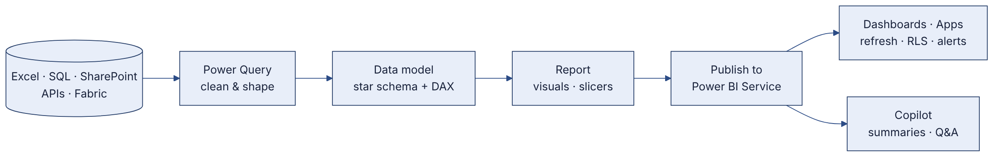
| Step | Skill | Milestone |
|---|---|---|
| 1 | Install, interface, first report | A 1-page sales report in 30 minutes |
| 2 | Power Query | Clean and combine monthly files automatically |
| 3 | Data modelling | Star schema with a date table |
| 4 | DAX: basic → advanced | Time intelligence, ranking, dynamic measures |
| 5 | Visual design & interactivity | Drill-through, bookmarks, field parameters |
| 6 | Service, Fabric & security | Published app with scheduled refresh and RLS |
| 7 | Copilot, performance, DevOps | Fast, AI-assisted, version-controlled reports |
- Install Power BI Desktop free from the Microsoft Store (Windows). Mac users can use the Power BI service in a browser or a Windows VM.
- Get data → Excel workbook → tick the Sales table → Transform Data (always check types first) → Close & Apply.
- Report view: click a Card visual, drag Amount → shows Total Sales.
- Add a Clustered column chart: Axis = City, Values = Amount; sort descending.
- Add a Line chart: X-axis = Order Date (Month), Values = Amount.
- Add a Slicer on Store Type; click values and watch all visuals filter together (cross-filtering).
- Format: theme (View → Themes), titles that state the insight, consistent colours.
- Save as .pbix; Publish to a workspace to share.
| Pane / view | Purpose |
|---|---|
| Report view | Canvas and pages |
| Table view | Look at rows, set formats, add calculated columns |
| Model view | Relationships and properties |
| DAX query view / TMDL view | Write and test DAX queries; edit the model as code |
| Visualizations / Data / Filters panes | Choose visuals, fields, filter levels |
Home → Transform data. Every action becomes an Applied Step; refreshing replays them on new data.
| Need | Do this |
|---|---|
| Combine 12 monthly files | Get Data → Folder → Combine & Transform |
| Fix types | Icon left of each header; set Date, Decimal, Text (locale for dd-mm-yyyy: Using Locale → English (India)) |
| Wide months to rows | Select ID columns → Unpivot Other Columns |
| Lookup another table | Merge Queries (Left Outer) → expand the needed column |
| Stack tables | Append Queries |
| Fill blanks from above | Transform → Fill → Down |
| Categories without code | Add Column → Conditional Column |
| Data quality check | View → Column quality, distribution, profile (based on entire data) |
| Parameterise a source path | Manage Parameters → use in Source step |
Query folding: with databases, Power Query translates steps into SQL that runs on the server. Keep foldable steps (filters, column selection) early; right-click a step → View Native Query to check.
keys + numbers
Star schema: one fact table in the middle, dimension tables around it, one-to-many relationships flowing from dimension to fact.
- Facts = events with numbers (sales lines, transactions). Dimensions = descriptions (who, what, where, when).
- Relationships: one-to-many, single direction by default; avoid bi-directional unless needed.
- Date table: one row per day covering the full range; mark as date table; use it for all time slicing.
- Hide technical columns (keys) from report view; set sort-by columns (Month name sorted by month number); set default summarisation; organise measures in a measure table.
- Role-playing dates (order vs ship date): one active relationship, others activated with
USERELATIONSHIP.
Level 1: basic measures
Total Sales = SUM ( Sales[Amount] )
Orders = DISTINCTCOUNT ( Sales[OrderID] )
AOV = DIVIDE ( [Total Sales], [Orders] )
Total Cost = SUMX ( Sales, Sales[Qty] * RELATED ( Product[UnitCost] ) )
Margin % = DIVIDE ( [Total Sales] - [Total Cost], [Total Sales] )Level 2: CALCULATE and filter context
Every visual cell evaluates a measure under filters from rows, columns, slicers and filters. CALCULATE changes those filters.
Sales Pune = CALCULATE ( [Total Sales], Customer[City] = "Pune" )
Sales All Cities = CALCULATE ( [Total Sales], ALL ( Customer[City] ) )
% of All Cities = DIVIDE ( [Total Sales], [Sales All Cities] )
Sales Ignoring Slicers Except Year = CALCULATE ( [Total Sales], ALLEXCEPT ( 'Date', 'Date'[Year] ) )
Big Orders = CALCULATE ( [Orders], Sales[Amount] > 10000 )Level 3: time intelligence
Sales YTD = TOTALYTD ( [Total Sales], 'Date'[Date], "31/3" ) -- Indian FY ends 31 March
Sales LY = CALCULATE ( [Total Sales], SAMEPERIODLASTYEAR ( 'Date'[Date] ) )
YoY % = DIVIDE ( [Total Sales] - [Sales LY], [Sales LY] )
Sales Last 3M = CALCULATE ( [Total Sales], DATESINPERIOD ( 'Date'[Date], MAX ( 'Date'[Date] ), -3, MONTH ) )
MoM % = VAR prev = CALCULATE ( [Total Sales], DATEADD ( 'Date'[Date], -1, MONTH ) )
RETURN DIVIDE ( [Total Sales] - prev, prev )Level 4: advanced patterns
Product Rank = RANKX ( ALLSELECTED ( Product[Name] ), [Total Sales], , DESC, DENSE )
Top 5 Sales = CALCULATE ( [Total Sales], TOPN ( 5, ALL ( Product[Name] ), [Total Sales] ) )
New Customers = COUNTROWS ( FILTER ( VALUES ( Sales[CustomerID] ),
CALCULATE ( MIN ( Sales[Date] ) ) >= MIN ( 'Date'[Date] ) ) )
Pareto Cum % = VAR cur = [Total Sales]
VAR tbl = ADDCOLUMNS ( ALLSELECTED ( Product[Name] ), "s", [Total Sales] )
RETURN DIVIDE ( SUMX ( FILTER ( tbl, [s] >= cur ), [s] ), SUMX ( tbl, [s] ) )
Selected Metric = SWITCH ( SELECTEDVALUE ( Metric[Name] ),
"Sales", [Total Sales], "Margin %", [Margin %], [Orders] )Visual calculations (generally available since May 2026)
Select a visual → New visual calculation. Write simpler DAX that runs on the visual's own grid, without touching the model:
Running Total = RUNNINGSUM ( [Sales] )
Moving Avg 3 = MOVINGAVERAGE ( [Sales], 3 )
% of Parent = DIVIDE ( [Sales], COLLAPSE ( [Sales], ROWS ) )
vs Previous = [Sales] - PREVIOUS ( [Sales] )Rule of thumb: model measures for numbers reused across reports; visual calculations for one-off running totals, ranks and comparisons in a single visual.
| Cards / KPI / Gauge | Headline numbers vs target |
| Bar, column, line, combo, area, ribbon, waterfall, funnel, scatter, map | Standard analysis visuals |
| Matrix | Pivot-style table with drill-down, conditional formatting and custom totals |
| Decomposition tree, Key influencers, Smart narrative | AI visuals that explain a metric |
| Small multiples | One chart repeated per category |
| Gantt (preview, Oct 2026) | Project timelines natively |
Interactivity
- Edit interactions: filter vs highlight vs none per visual pair.
- Drill-through pages and tooltip pages.
- Bookmarks + Selection pane + Buttons: toggles, guided stories, reset filters.
- Field parameters: let users switch the measure or the axis.
- Slicers: list, dropdown, button slicer, date range; sync across pages.
- Personal bookmarks and personalise visuals for viewers in the service.
Design checklist
- Top-left = most important KPI; Z-pattern layout
- Max 6–8 visuals per page; one message per page
- Colour has meaning (red = bad), consistent theme JSON
- Accessible: contrast, alt text, tab order
- Titles state insights; units in labels (₹ lakh)
- Workspaces (team folders) with roles Admin / Member / Contributor / Viewer; Apps package reports for wide audiences.
- Semantic model (dataset) settings: credentials, scheduled refresh (up to 8/day on Pro, 48 on Premium/Fabric capacity), incremental refresh for large facts, on-premises data gateway.
- Row-level security: roles with DAX filters such as
[Region] = "North"or dynamic[Email] = USERPRINCIPALNAME(); assign users in the service. Object-level security hides tables/columns. - Dashboards with pinned tiles and data alerts; subscriptions by email; export to PDF/PowerPoint; Analyze in Excel.
- Microsoft Fabric: the wider platform (OneLake, Lakehouse, Warehouse, Data Factory pipelines, notebooks, Direct Lake mode). Microsoft is moving enterprise capacity from Premium P-SKUs to Fabric F-SKUs.
- Licences: Free (personal use), Pro (share with Pro users), Premium Per User, Fabric capacity (share with free viewers on F64 and above).
Copilot in Power BI
| Report creation | "Create a page showing sales trend, top products and regional split" |
| Summaries | Copilot Summarize at report and visual level in the service (May 2026) |
| Q&A over the model | Ask questions in English; answers respect RLS |
| DAX help | Write and explain measures in the DAX query view |
| Prep data for AI | Add synonyms, descriptions and verified answers so Copilot answers correctly |
Copilot needs a paid Fabric capacity (F2 or above) or Premium, and an admin must enable it.
Performance
- View → Performance Analyzer: time per visual (DAX query, visual display).
- Smaller model = faster: remove unused columns, reduce cardinality (split datetime into date and time), prefer measures over calculated columns, integers for keys.
- External tools: DAX Studio (query timing, VertiPaq Analyzer), Tabular Editor (bulk editing, best-practice analyser).
Version control and deployment
- Save as Power BI Project (.pbip): report (PBIR format) and model (TMDL) as text files that work with Git.
- Deployment pipelines: Development → Test → Production workspaces.
- Fabric Git integration with Azure DevOps or GitHub.
Measure vs calculated column?
A column is computed per row at refresh and stored (use for slicing); a measure is computed at query time in the current filter context (use for aggregation).
Explain filter context vs row context.
Filter context = filters applied to the model by the visual, slicers and CALCULATE. Row context = the current row inside a calculated column or an iterator (SUMX). CALCULATE converts row context into filter context (context transition).
What is a star schema and why use it?
A central fact table linked one-to-many to dimension tables. It keeps DAX simple and fast and avoids ambiguous filter paths.
Import vs DirectQuery vs Direct Lake?
Import: data cached in memory, fastest, needs refresh. DirectQuery: live queries to the source, current but slower. Direct Lake (Fabric): reads Delta tables in OneLake directly with import-like speed.
How do you implement dynamic RLS?
Have a user–region mapping table, relate it to the model, and use a role filter like [Email] = USERPRINCIPALNAME().
What are visual calculations?
DAX calculations defined on a visual that operate on the visual's data grid (running sums, moving averages, previous value) without adding model measures.
How would you speed up a slow report?
Use Performance Analyzer to find slow visuals; optimise DAX (variables, avoid FILTER on whole tables), reduce model size, limit visuals per page, use aggregations or incremental refresh.
- YouTube: Simplilearn Power BI full course · YouTube: Simplilearn Power BI tutorial for beginners
- YouTube: Guy in a Cube Power BI · YouTube: SQLBI CALCULATE explained · YouTube: Power BI visual calculations tutorial
- YouTube: Pragmatic Works Power BI full course · YouTube: codebasics Power BI project
- Microsoft Learn: Power BI · PL-300 study guide
- Power BI monthly feature summaries (blog) · DAX Guide
Tableau: Basic to Advanced
Connect, visualise, calculate, build dashboards and use Tableau's AI (Pulse, Agent, Tableau Next), updated for 2026
Learning session · non-tech friendly · aligned to the Tableau Desktop Foundations and Data Analyst certifications
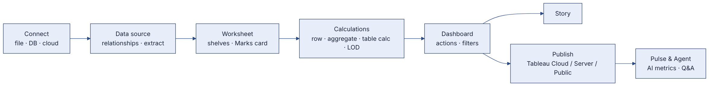
| Step | Skill | Milestone |
|---|---|---|
| 1 | Install, connect, first viz | Bar, line and map in 20 minutes |
| 2 | Marks, filters, sorting, formatting | Clean, sorted, labelled views |
| 3 | Calculated fields, parameters, sets, groups, bins | Dynamic Top N |
| 4 | Table calculations and LOD expressions | % of total, running totals, cohorts |
| 5 | Dashboards, actions, stories | An interactive executive dashboard |
| 6 | Publishing, performance, AI features | Live on Tableau Public / Cloud |
Course reference: Tableau (course module). Practice: Laptops case, Sports Equipment case.
- Download Tableau Public (free, saves to the public web) or Tableau Desktop (trial/licensed). Tableau Cloud runs in the browser.
- Connect → Microsoft Excel / Text file / SQL Server. Drag tables into the canvas; Tableau creates relationships (noodles) between them.
- Go to Sheet 1. Left: Data pane with dimensions (blue) and measures (green). Centre: Columns/Rows shelves, Marks card, view.
- Double-click Category, then Sales → a bar chart. Drag Order Date to Columns → line chart. Double-click State → map.
- Show Me suggests chart types for the fields you selected.
| Live vs Extract | Live queries the source; Extract (.hyper) is a fast snapshot refreshed on a schedule |
| Discrete vs continuous | Blue = headers; green = axis |
| Aggregation | Measures default to SUM; right-click → Measure → Average/Count/etc. |
- Marks card: Color, Size, Label, Detail, Tooltip, Shape, Path; mark type dropdown.
- Sort by toolbar or field; nested sorts; sort by a different measure.
- Filters: dimension (pick values, wildcard, condition, Top N), measure (range), date (relative "last 3 months"). Show filter cards; apply to multiple sheets.
- Formatting: Format → Workbook; remove gridlines; reference lines; consistent fonts; number formats (₹, K, M).
- Hierarchies and drill (+/-); groups (combine members); bins (histograms).
Remember the order of operations: extract → data source → context → FIXED LOD → dimension filters → INCLUDE/EXCLUDE → measure filters → table calcs. Details in Tableau module.
// Row-level
Profit = [Sales] - [Cost]
Profit Ratio = SUM([Profit]) / SUM([Sales]) // aggregate calc
Order Size = IF [Quantity] >= 10 THEN "Bulk" ELSE "Single" END
Days to Ship = DATEDIFF('day', [Order Date], [Ship Date])
Financial Year = "FY" + STR(YEAR(DATEADD('month', 9, [Order Date]))) // Apr-Mar FY
Clean City = TRIM(PROPER([City]))
Is Weekend = DATEPART('weekday', [Order Date]) IN (1, 7)
// Parameter-driven
Top N Filter = RANK(SUM([Sales])) <= [Top N] // table-calc filter
Measure Switch = CASE [Choose Measure] WHEN "Sales" THEN SUM([Sales]) WHEN "Profit" THEN SUM([Profit]) END| Parameters | User inputs (number/date/string list); used in calcs, filters, reference lines. Parameter actions let a click set a parameter. |
| Sets | In/out membership (top 10 customers); set actions make them interactive |
| Groups / bins | Combine categories; bucket numbers |
| Combined fields | Concatenate dimensions (used in the Laptops case for 32 groups) |
Table calculations (on the results in the view)
Running total, difference, % difference, % of total, rank, percentile, moving average, YoY growth. Always check Compute Using.
Level of Detail expressions
Customer First Order = {FIXED [Customer ID] : MIN([Order Date])} // cohort start
Customer Lifetime $ = {FIXED [Customer ID] : SUM([Sales])}
Orders per Customer = {FIXED [Customer ID] : COUNTD([Order ID])} // use as dimension → histogram
Avg Order Value = AVG({INCLUDE [Order ID] : SUM([Sales])})
Diff from Avg Month = SUM([Sales]) - SUM({EXCLUDE [Month] : AVG([Sales])})
Share of Region = SUM([Sales]) / SUM({FIXED [Region] : SUM([Sales])})Real example: customer cohorts
Cohort Year = YEAR({FIXED [Customer ID] : MIN([Order Date])}). Put Cohort Year on Rows, YEAR(Order Date) on Columns, COUNTD(Customer ID) on Text → a retention table showing how many customers from each starting year keep buying.
- Size: fixed (1200×800) for desktop; add a phone layout (Device Preview).
- Layout containers (horizontal/vertical) for alignment; padding; blank objects for spacing.
- Actions: Filter, Highlight, URL, Go to Sheet, Change Parameter, Change Set Values.
- KPI tiles (BANs: big-ass numbers), trend, breakdowns, detail table; filters in one place.
- Stories: sequence of story points with captions for presentations.
- Dashboard extensions and Viz in Tooltip (a chart inside a tooltip).
| Tableau Public | Free; everything is public: ideal for a portfolio |
| Tableau Cloud / Server | Secure sharing, schedules, subscriptions, data-driven alerts, row-level security via user filters/entitlements |
| Performance | Extracts, fewer marks, context filters, avoid many quick filters with "only relevant values", Performance Recorder |
Tableau AI in 2026
| Tableau Pulse | Metrics on governed data sources delivered to email, Slack or the app, with AI-written insights and natural-language Q&A ("Tableau Agent in Pulse"). Requires a Tableau+ licence for the AI features. |
| Tableau Agent | Helps authors build calculations and visuals from prompts; in dashboards (beta on Cloud) offers overviews, insights and Q&A that shows its reasoning |
| Tableau Next | Salesforce's separate agentic analytics platform built on Data Cloud and Tableau Semantics, with agents for data prep (Data Pro), questions (Concierge) and monitoring (Inspector) |
| Certification | Tableau Desktop Foundations replaced Desktop Specialist as the entry certificate; next is Tableau Certified Data Analyst |
Tableau vs Power BI?
Both are leading BI tools. Tableau is strong in flexible visual exploration and design; Power BI is cheaper for Microsoft-365 organisations, with deep Excel/Fabric integration and DAX modelling. Choose by ecosystem and cost.
What is an LOD expression?
A calculation that sets its own level of aggregation independent of the view: FIXED, INCLUDE or EXCLUDE.
Context filter use case?
To make a filter apply before Top N or FIXED calculations, e.g. Top 10 products within the selected region.
Extract vs live?
Extract is faster and works offline but needs refreshing; live is always current but depends on source speed.
How do you show the top N dynamically?
Create a parameter and use it in a Top N filter or a RANK table-calc filter; show the parameter control.
Blending vs relationships?
Relationships combine tables in one data source at the right level per view; blending combines separate data sources on a linking field per sheet, aggregating the secondary source.
- YouTube: Simplilearn Tableau full course · YouTube: Simplilearn Tableau tutorial for beginners
- YouTube: Andy Kriebel Tableau tip · YouTube: Tableau LOD expressions explained · YouTube: Tableau Pulse demo
- YouTube: Alex The Analyst Tableau tutorial for beginners
- Tableau new features · Tableau free training videos
- Tableau Public · Workout Wednesday · Makeover Monday
Python: Basic to Advanced (for non-tech learners)
Learn Python step by step with everyday business examples: from your first line of code to pandas, charts, automation and ML
Learning session · no programming background needed · runs in Google Colab or Jupyter
If you can write an Excel formula, you can learn Python. Python is a set of instructions written in near-English that the computer follows exactly. Analysts use it because it repeats work perfectly, handles millions of rows, and connects Excel, databases, the web and AI.
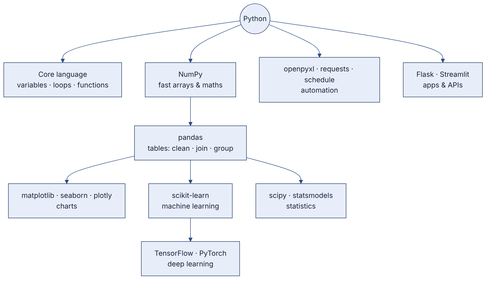
Set up in 5 minutes
- Easiest: open Google Colab with a Google account → New notebook. Nothing to install.
- On your laptop: install Anaconda (includes Python, Jupyter, pandas) → launch Jupyter Notebook; or install Python + VS Code.
- Run a cell with Shift+Enter.
Excel → Python translation
| Excel | Python (pandas) |
|---|---|
| Open a file | df = pd.read_excel("sales.xlsx") |
| Filter | df[df["City"] == "Pune"] |
| Sort | df.sort_values("Amount", ascending=False) |
| New column =C2*D2 | df["Total"] = df["Qty"] * df["Price"] |
| SUMIFS / pivot | df.groupby("City")["Amount"].sum() / df.pivot_table(...) |
| VLOOKUP | df.merge(products, on="ProductID", how="left") |
| Remove duplicates | df.drop_duplicates() |
| Chart | df.plot.bar(x="City", y="Amount") |
30-day plan
| Days 1–7 | Levels 1–2 (basics, data structures), 30 minutes daily |
| Days 8–12 | Level 3 (functions, files, errors) |
| Days 13–22 | Levels 4–5 (pandas + charts) on your own Excel files |
| Days 23–27 | Level 7 automation: automate one weekly report |
| Days 28–30 | Mini project: clean → analyse → chart → one-page summary |
print("Hello, Data!") # show something
name = "Asha" # variable = a labelled box holding a value
orders = 12 # int (whole number)
avg_value = 1310.50 # float (decimal)
is_prime = True # bool (True/False)
print(f"{name} placed {orders} orders worth ₹{orders * avg_value:,.0f}") # f-string
# Asha placed 12 orders worth ₹15,726
type(avg_value) # float
int("42") + 1 # 43 convert text to number
round(1310.567, 1) # 1310.6
city = input("Enter city: ") # ask the user (always returns text)
# Decisions
amount = 7200
if amount > 5000:
print("Free delivery")
elif amount > 2000:
print("₹49 delivery")
else:
print("₹99 delivery")
# Repetition
for month in ["Jan", "Feb", "Mar"]:
print("Report for", month)
for i in range(1, 6): # 1,2,3,4,5
print(i * 100)Indentation (4 spaces) is part of Python's grammar: it shows which lines belong inside an if or for. A missing colon or wrong indent is the most common beginner error.
cities = ["Pune", "Delhi", "Mumbai"] # list: ordered, changeable
cities.append("Chennai"); cities[0]; cities[-1]; len(cities)
sales = {"Pune": 120000, "Delhi": 95000} # dict: key → value (like a lookup table)
sales["Mumbai"] = 87000
for city, value in sales.items():
print(city, value)
point = (28.46, 77.03) # tuple: fixed (latitude, longitude)
unique_ids = set([101, 102, 101]) # set: unique values → {101, 102}
# List comprehension: build a list in one line
amounts = [450, 7200, 3100, 980]
big = [a for a in amounts if a > 1000] # [7200, 3100]
with_gst = [round(a * 1.18) for a in amounts] # add 18% GST
# Strings
email = " Asha.Verma@Example.com "
email.strip().lower() # 'asha.verma@example.com'
email.split("@")[1] # domain part
"Pune" in "Pune, Maharashtra" # Truedef delivery_fee(amount, is_prime=False):
"""Return the delivery fee for an order."""
if is_prime or amount > 5000:
return 0
return 49 if amount > 2000 else 99
delivery_fee(1500) # 99
delivery_fee(1500, True) # 0
gst = lambda x: x * 0.18 # small one-line function
list(map(gst, [100, 200])) # [18.0, 36.0]
# Files
with open("notes.txt", "w") as f:
f.write("Report generated\n")
import csv, os, datetime
os.listdir(".") # files in the folder
# Errors: handle them instead of crashing
try:
rate = int("18%")
except ValueError:
rate = 18
print("Could not read the rate; using 18")Modules: import math, from datetime import date, import pandas as pd. Install new ones with pip install package-name (in Colab: !pip install ...).
A complete mini-analysis
import pandas as pd
df = pd.read_csv("orders.csv", parse_dates=["order_date"]) # or read_excel / read_sql
df.shape # (rows, columns)
df.head() # first 5 rows
df.info() # columns, types, missing values
df.describe() # quick statistics
# Clean
df = df.drop_duplicates()
df["city"] = df["city"].str.strip().str.title()
df["amount"] = pd.to_numeric(df["amount"], errors="coerce")
df["amount"] = df["amount"].fillna(df["amount"].median())
# New columns
df["month"] = df["order_date"].dt.to_period("M")
df["band"] = pd.cut(df["amount"], [0, 2000, 10000, float("inf")], labels=["Low", "Medium", "High"])
# Questions
df[df["city"] == "Pune"]["amount"].sum() # Pune revenue
df.groupby("city")["amount"].agg(["count", "sum", "mean"]).sort_values("sum", ascending=False)
df.pivot_table(index="city", columns="month", values="amount", aggfunc="sum", fill_value=0)
top5 = df.groupby("customer_id")["amount"].sum().nlargest(5)
# Combine with another table (VLOOKUP)
products = pd.read_excel("products.xlsx")
df = df.merge(products[["product_id", "category"]], on="product_id", how="left")
# Save
df.to_excel("clean_orders.xlsx", index=False)Full pandas reference: Python module → pandas. 90 practice exercises solved: Data Manipulation exercise.
import matplotlib.pyplot as plt
import seaborn as sns
monthly = df.groupby("month")["amount"].sum()
monthly.plot(kind="line", marker="o", title="Monthly revenue")
plt.ylabel("₹"); plt.show()
df.groupby("city")["amount"].sum().sort_values().plot(kind="barh", title="Revenue by city")
sns.histplot(df["amount"], bins=30) # distribution
sns.boxplot(data=df, x="city", y="amount") # spread and outliers
sns.heatmap(df.corr(numeric_only=True), annot=True) # correlations
import plotly.express as px # interactive charts
px.bar(df, x="city", y="amount", color="band").show()from scipy import stats
a = df[df.city == "Pune"]["amount"]; b = df[df.city == "Delhi"]["amount"]
stats.ttest_ind(a, b, equal_var=False) # do Pune and Delhi spend differently?
from sklearn.model_selection import train_test_split
from sklearn.linear_model import LogisticRegression
from sklearn.metrics import classification_report
X = df[["amount", "orders_last_90d", "days_since_last"]]
y = df["churned"] # 1 = left, 0 = stayed
X_tr, X_te, y_tr, y_te = train_test_split(X, y, test_size=0.3, random_state=1)
model = LogisticRegression(max_iter=1000).fit(X_tr, y_tr)
print(classification_report(y_te, model.predict(X_te)))Explained without jargon in Machine Learning for non-tech.
# Combine every monthly Excel file in a folder into one
import glob
files = glob.glob("reports/sales_*.xlsx")
all_sales = pd.concat([pd.read_excel(f).assign(source=f) for f in files], ignore_index=True)
# Write a formatted Excel report with several sheets
with pd.ExcelWriter("weekly_report.xlsx") as xw:
all_sales.groupby("city")["amount"].sum().to_excel(xw, sheet_name="By city")
all_sales.to_excel(xw, sheet_name="Data", index=False)
# Get data from a web API
import requests
rates = requests.get("https://api.frankfurter.app/latest?from=USD&to=INR").json()
# Read from a database
import sqlalchemy as sa
engine = sa.create_engine("mssql+pyodbc://@localhost/RetailDB?driver=ODBC+Driver+18+for+SQL+Server&trusted_connection=yes&TrustServerCertificate=yes")
orders = pd.read_sql("SELECT * FROM Orders WHERE order_date >= '2026-10-01'", engine)Schedule the script with Windows Task Scheduler, cron, or a cloud scheduler; see Automation on Data.
| OOP (classes) | Bundle data + behaviour: class Report: def __init__(self, df): ... |
| Comprehensions & generators | {k: v for k, v in ...}; yield to stream large files |
| Decorators | Wrap functions (timing, caching: @functools.lru_cache) |
| Vectorisation | Use pandas/NumPy column operations instead of loops (10–100× faster) |
| Virtual environments | python -m venv .venv or conda; pin versions in requirements.txt |
| Git & GitHub | Version control and portfolio (see ML Ops module) |
| Testing | pytest for functions that compute money |
| Type hints & linting | def fee(amount: float) -> int:; ruff/black for clean code |
| Big data | Polars, DuckDB, PySpark when pandas runs out of memory |
| Apps | Streamlit dashboards and Flask/FastAPI APIs |
Coding with AI assistants
- Ask for small pieces with context: "pandas DataFrame df has columns city, amount, order_date. Write code for monthly revenue by city as a pivot table."
- Ask it to explain errors: paste the code and the full error message.
- Use Colab's AI, GitHub Copilot, Cursor or Claude Code inside the editor; review every line before trusting it.
List vs tuple vs dict vs set?
List: ordered, changeable. Tuple: ordered, fixed. Dict: key-value lookups. Set: unique values, fast membership tests.
How do you handle missing values in pandas?
Find them with isna().sum(); drop with dropna or fill with fillna (median for skewed numbers, mode for categories), or flag them.
merge vs concat?
merge joins on key columns (like VLOOKUP/SQL JOIN); concat stacks DataFrames on top of or beside each other.
What does groupby do?
Split rows into groups, apply an aggregation to each, combine the results: like SUMIFS or a pivot table.
Why avoid loops over DataFrame rows?
They are slow; vectorised column operations run in optimised C code.
What is a virtual environment?
An isolated set of packages for one project, so versions don't clash between projects.
- YouTube: Simplilearn Python full course · YouTube: Simplilearn Python for data science · YouTube: Simplilearn pandas tutorial
- YouTube: Corey Schafer Python beginner tutorial · YouTube: Keith Galli pandas tutorial · YouTube: freeCodeCamp Python for everybody
- YouTube: Automate the Boring Stuff with Python
- Google Colab · Python tutorial · pandas: getting started
- Kaggle Learn: Python and pandas (free) · Automate the Boring Stuff (free online book)
Machine Learning: Basic to Advanced (for non-tech learners)
What ML is, every major algorithm in plain English, how models are judged, and how they reach production
Learning session · no maths background needed · links to the illustrated ML Class 1–7 notes for depth
Machine learning is teaching a computer by examples instead of rules. Show it thousands of past loan applications labelled "repaid" or "defaulted", and it learns the pattern well enough to judge a new application.
Traditional rule
IF income < 3 lakh AND existing loans > 2 THEN reject. A person writes and maintains every rule.
Machine learning
Feed 50,000 past applications with outcomes. The algorithm finds the combinations of income, debt, age and history that predict default, and outputs a probability.
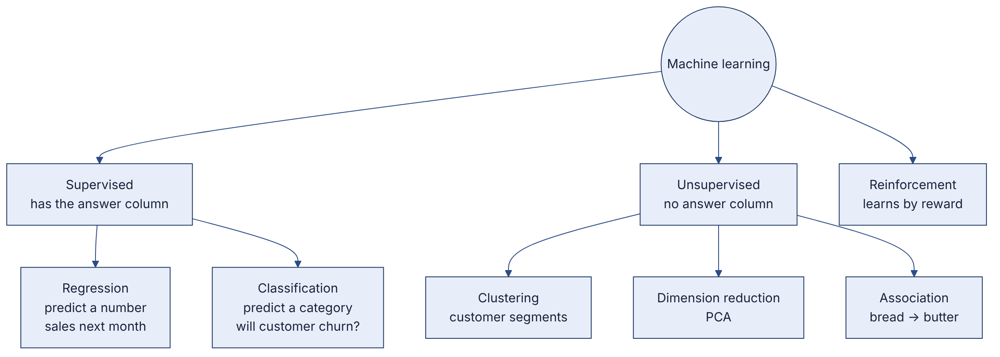
Everyday examples
| Where you see it | Task | Type |
|---|---|---|
| Gmail spam folder | Spam or not | Classification |
| Zomato delivery time estimate | Minutes to deliver | Regression |
| Netflix / Spotify recommendations | What you'll like next | Recommendation |
| Bank fraud SMS | Unusual transaction | Anomaly detection |
| Customer segments in marketing | Group similar customers | Clustering |
| Google Maps traffic, UPI demand planning | Future values | Forecasting |
| Review sentiment, ChatGPT | Understand/generate text | NLP / deep learning |
Key words
| Features (X) | Inputs: income, age, number of orders |
| Target / label (y) | What to predict: default yes/no, next month's sales |
| Training | The algorithm adjusts itself to fit past examples |
| Model | The learned pattern, saved and reused |
| Prediction / inference | Applying the model to new data |
| Train / test split | Learn on 70–80%, check on the unseen 20–30% |
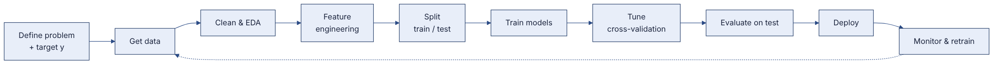
| Step | Plain English | Example: predicting churn for a telecom |
|---|---|---|
| Define | What decision will the prediction support? | Who to call with a retention offer this month |
| Target | Exact definition of the outcome | Churn = ports out within 60 days |
| Data | Gather history with known outcomes | 12 months of usage, bills, complaints, plan |
| Clean & explore | Fix gaps, errors, outliers; look at patterns | Missing tenure, duplicate accounts |
| Features | Turn raw data into useful signals | Drop in data usage, complaints last 30 days, days since recharge |
| Train & tune | Try models; tune settings with cross-validation | Logistic regression vs random forest vs XGBoost |
| Evaluate | Test on unseen data with business metrics | Catches 75% of churners in the top 20% risk list |
| Deploy & monitor | Score customers regularly; watch accuracy | Weekly scores to the CRM; retrain quarterly |
Deep dive with real data and charts: ML Class 3, Class 4, Class 6.
| Algorithm | Plain-English idea | Good for | Watch out |
|---|---|---|---|
| Linear regression | Draws the best straight line through the points | Sales vs ad spend; price estimates; explaining drivers | Only straight-line relationships unless you add features |
| Logistic regression | Linear score squeezed into a 0–1 probability | Credit risk, churn; explainable (regulators like it) | Misses complex interactions |
| Decision tree | A flowchart of yes/no questions learnt from data | Easy-to-explain rules | One deep tree overfits |
| Random forest | Hundreds of trees on random samples vote | Strong all-rounder for tables | Less interpretable, bigger |
| Gradient boosting (XGBoost, LightGBM, CatBoost) | Trees built one after another, each fixing the previous errors | Best accuracy on most business tabular data | Needs tuning; can overfit |
| K-nearest neighbours | "You are like your closest neighbours" | Simple baselines, recommendations | Needs scaling; slow on big data |
| Naive Bayes | Bayes' rule assuming features independent | Spam and text classification | Independence assumption is rough |
| Support vector machine | Widest possible margin between classes | Smaller, high-dimensional data | Slow on large data; hard to explain |
| K-means clustering | Puts customers into K groups around centres | Segmentation | Choose K (elbow/silhouette); scale features |
| Hierarchical clustering | Builds a tree of nested groups (dendrogram) | Small data, exploring structure | Slow for big data |
| PCA | Compresses many correlated columns into a few | Visualising, removing redundancy | Components are hard to name |
| Association rules (Apriori) | "Bread → butter" with support, confidence, lift | Market basket, cross-sell | Many trivial rules |
| Time-series (ARIMA, ETS, Prophet) | Uses trend + seasonality to forecast | Demand, cash flow, call volumes | Breaks when patterns shift |
| Neural networks / deep learning | Layers of simple units learning complex patterns | Images, speech, text, LLMs | Needs lots of data and compute |
Regression metrics
| MAE | Average size of error: "off by ₹1,200 on average" |
| RMSE | Like MAE but punishes big misses more |
| MAPE | Average % error: "forecast is 8% off" |
| R² | Share of variation explained (0 to 1) |
Classification metrics
| Accuracy | Share of correct predictions. Misleading if one class is rare. |
| Precision | Of those flagged, how many were right? (Avoid wasting offers/false alarms.) |
| Recall | Of the real positives, how many did we catch? (Don't miss fraud or disease.) |
| F1 | Balance of precision and recall |
| ROC-AUC | How well the model ranks positives above negatives (0.5 random, 1.0 perfect) |
| Lift / gains | "Top 10% of scores contain 40% of churners" – the metric business teams love |
Overfitting in one sentence
A model that memorises the training data (like a student memorising last year's paper) scores brilliantly in practice and fails the real exam. We prevent it with test sets, cross-validation, simpler models and more data. Picture: ML Class 6.
| Feature engineering | Ratios, recency, trends, date parts, text length; often matters more than the algorithm |
| Imbalanced data | Class weights, SMOTE oversampling, choosing the right threshold |
| Hyper-parameter tuning | GridSearchCV, RandomizedSearchCV, Bayesian search (Optuna) |
| Ensembles | Bagging, boosting, stacking several models |
| Explainability | Feature importance, SHAP values ("income lowered this applicant's risk by 8 points"), partial dependence |
| Text mining / NLP | Tokenise → clean (stop words, lemmatise) → bag-of-words / TF-IDF / embeddings → classify sentiment or topics |
| Recommenders | Collaborative filtering, matrix factorisation, embeddings |
| Deep learning | CNNs for images, RNN/LSTM and Transformers for sequences and text |
| AutoML / no-code | Azure AutoML, Google Vertex AI, DataRobot, H2O, PyCaret; Copilot or ChatGPT data analysis for quick models |
| MLOps | Versioning, deployment, monitoring and retraining (see ML Ops module) |
| Responsible AI | Fairness across groups, privacy (DPDP Act in India), transparency, human review of high-impact decisions |
| Industry | Use case | Typical model | Business metric |
|---|---|---|---|
| Banking | Credit scoring, fraud, collections priority | Logistic regression, gradient boosting | Default rate, fraud loss, recovery % |
| Retail / e-commerce | Demand forecasting, recommendations, churn, pricing | Time series, collaborative filtering, boosting | Stock-outs, conversion, AOV |
| Telecom | Churn prediction, network fault prediction | Boosting, survival models | Churn rate, retention ROI |
| Healthcare | Readmission risk, image diagnosis support | Logistic regression, CNNs | Readmissions, sensitivity |
| Operations / call centres | Call-volume forecasting, staffing, intent routing | ETS/ARIMA, text classification | Service level, AHT, cost per contact |
| HR | Attrition risk, resume screening (with bias checks) | Logistic regression, NLP | Attrition, time-to-hire |
| Marketing | Segmentation, propensity to buy, uplift modelling | K-means, boosting | Campaign ROI, CAC |
Explain machine learning to a 10-year-old.
It's like learning to recognise dogs: after seeing many pictures labelled "dog" and "not dog", you can tell for a new picture. The computer does the same with data.
Supervised vs unsupervised?
Supervised learns from examples with known answers (predict churn). Unsupervised finds structure without answers (group customers).
What is overfitting and how do you prevent it?
Memorising noise in training data so the model fails on new data. Prevent with train/test splits, cross-validation, simpler models, regularisation and more data.
Precision vs recall with a business example?
Fraud: recall = share of frauds caught; precision = share of alerts that were real fraud. Missing fraud is costly, so prioritise recall while keeping alerts manageable.
Why is random forest better than one decision tree?
Averaging many trees trained on different samples reduces variance, so predictions are more stable and accurate.
How do you explain a model's prediction to a manager?
Show the top drivers (feature importance or SHAP), a few example customers, and the business result (e.g. calls saved, revenue protected).
- YouTube: Simplilearn machine learning full course · YouTube: Simplilearn machine learning tutorial for beginners
- YouTube: StatQuest machine learning playlist · YouTube: Andrew Ng machine learning specialization
- YouTube: codebasics machine learning tutorial python · YouTube: Krish Naik complete machine learning playlist
- Google Machine Learning Crash Course · Kaggle Learn: Intro to ML
- scikit-learn: choosing the right estimator
AI, Generative AI & Agentic AI (for non-tech learners)
How AI, LLMs, RAG and AI agents work, what they are good and bad at, and how to use them safely at work
Learning session · no technical background needed · complements the Generative AI course module
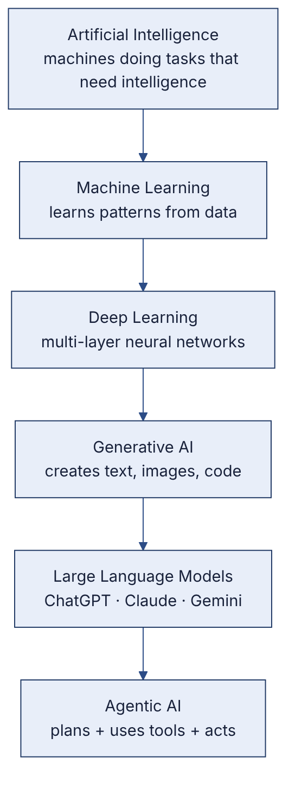
| Term | Plain meaning | Example |
|---|---|---|
| Artificial Intelligence | Machines doing tasks that normally need human intelligence | Chess engines, voice assistants |
| Machine Learning | Learns patterns from data instead of hand-written rules | Credit scoring, fraud alerts |
| Deep Learning | ML with large neural networks | Face unlock, speech-to-text |
| Generative AI | Creates new content: text, images, audio, video, code | ChatGPT, Claude, Midjourney |
| LLM | Large language model trained on huge text to predict the next word | GPT, Claude, Gemini, Llama, Grok |
| Agentic AI | AI that plans steps and uses tools to complete a goal, checking its own progress | "Pull last week's sales, build the chart, draft the email" |
A short timeline
| 1950s–1990s | Rule-based AI, early neural networks, expert systems |
| 2010s | Deep learning breakthroughs in images and speech |
| 2017 | The Transformer architecture ("Attention Is All You Need") |
| Nov 2022 | ChatGPT launch brings generative AI to everyone |
| 2023–2024 | Multimodal models (text + images + voice), copilots in Office and coding tools, RAG in enterprises |
| 2025–2026 | Reasoning models, AI agents that browse, code and use apps; agent standards such as the Model Context Protocol (MCP); AI inside Excel, Power BI and Tableau |
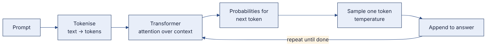
An analogy
Imagine someone who has read most of the internet and can finish any sentence plausibly. They are brilliant at language and patterns, but they don't "look up" facts unless given a source, and they can sound confident while wrong. That's an LLM.
| Token | A word piece; pricing and limits are in tokens (~¾ of a word each) |
| Context window | How much text the model can consider at once (a few pages to entire books) |
| Training | Pre-training on huge text → instruction tuning → human-feedback tuning for helpfulness and safety |
| Temperature | Creativity dial: low for facts and code, higher for ideas |
| Hallucination | A fluent but false answer; always verify numbers, names and citations |
| Knowledge cut-off | The model knows little after its training date unless it can search |
| Multimodal | Reads images, PDFs, spreadsheets; speaks and listens |
| Reasoning models | Spend extra "thinking" steps on hard problems (maths, code, planning) |
Prompting techniques (role, format, chain of thought, ask-before-answer, reverse prompting) are covered in Generative AI → Prompting.
Retrieval-Augmented Generation (RAG)
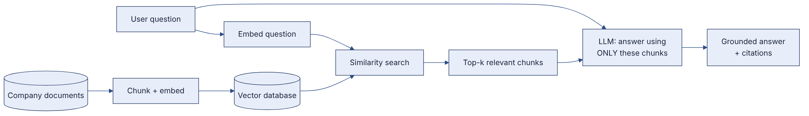
- Embeddings turn text into number vectors so that similar meanings are close together (cosine similarity, see Building Blocks ML · Class 7).
- A vector database stores those vectors for fast similarity search (Pinecone, Chroma, pgvector, and now SQL Server 2025's VECTOR type).
- Example: an HR bot that answers "How many casual leaves do I get?" from the company's policy PDF, quoting the clause.
When to use what
| Approach | Use when | Effort |
|---|---|---|
| Prompting | General tasks; give context in the prompt | Minutes |
| RAG | Answers must come from your documents and stay current | Days |
| Fine-tuning | A fixed style/format or specialised task at scale | Weeks, needs labelled examples |
| Training from scratch | Almost never for a business | Huge |
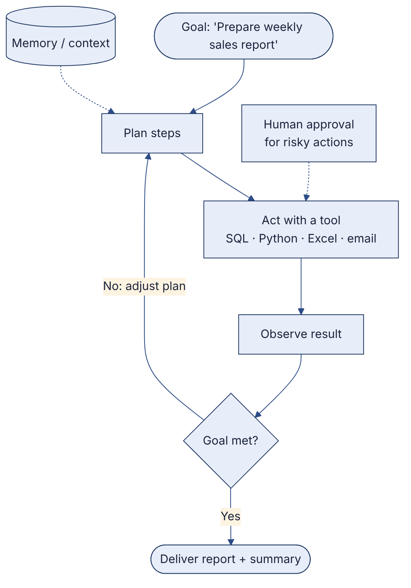
| Component | What it means |
|---|---|
| Goal | A task, not a single question: "Prepare the weekly sales review" |
| Planning | Breaks the goal into steps |
| Tools | Things it can use: SQL database, Python, Excel, web search, email, calendar, CRM |
| Memory | Keeps context across steps or sessions |
| Guardrails | Permissions, approvals, logging, spending limits |
Chatbot vs copilot vs agent
| Chatbot | Answers questions in a conversation |
| Copilot | Helps inside an app while you stay in control (Copilot in Excel, GitHub Copilot) |
| Agent | Takes multi-step actions on its own toward a goal (Excel Agent Mode, Claude Code, ChatGPT agent, Tableau Next agents) |
Agentic examples for data work
- Data-cleaning agent: profiles a new file, fixes types, flags anomalies, writes a summary.
- Report agent: runs SQL every Monday, updates Power BI, writes commentary, emails stakeholders.
- Research agent: gathers market data from the web with citations into a spreadsheet.
- Coding agent: builds and tests a Python pipeline from a description.
Model Context Protocol (MCP) is an open standard for connecting AI assistants to tools and data sources (databases, Google Drive, GitHub, Slack) in a consistent way, so one agent can use many apps.
High-value uses for analysts
| Write and explain | Excel formulas, SQL, DAX, Python; explain someone else's code |
| Clean and classify | Standardise names, categorise free-text feedback, extract fields from PDFs |
| Analyse | Upload a CSV and ask for summaries, charts and tests (verify the numbers) |
| Communicate | Draft executive summaries, slides, emails in the right tone |
| Learn | Tutor mode: explain a concept, quiz you, review your answer |
Risks and safe practice
- Verify facts and numbers; ask for sources; recompute key figures
- Never paste confidential, customer or personal data into unapproved tools (India's DPDP Act 2023 governs personal data)
- Use company-approved enterprise versions with data-protection terms
- Watch for bias in outputs about people
- Keep a human in the loop for decisions affecting customers or money
- Label AI-generated content where required
Glossary
Prompt · system prompt · token · context window · embedding · vector database · RAG · fine-tuning · hallucination · temperature · multimodal · agent · tool use / function calling · MCP · guardrails · evaluation (evals) · open-weight model (downloadable, e.g. Llama, Mistral) vs closed model (API only).
AI vs ML vs generative AI vs agentic AI?
AI is the broad field; ML learns from data; generative AI creates new content; agentic AI plans and acts with tools to complete goals.
How does an LLM generate text?
It splits text into tokens and repeatedly predicts the next token using a transformer trained on vast text, sampling one token at a time.
What is RAG and why do companies use it?
Retrieve relevant internal documents, then have the LLM answer from them. It reduces hallucinations, keeps answers current and cites sources without retraining.
What risks would you flag before using GenAI on customer data?
Privacy and consent (DPDP), data leaving the company, hallucinated outputs, bias, security (prompt injection), and lack of audit trails.
Give an example of an AI agent in analytics.
An agent that, every Monday, queries sales, refreshes the dashboard, spots anomalies, drafts a commentary and asks a human to approve before emailing.
- YouTube: Simplilearn generative AI full course · YouTube: Simplilearn agentic AI tutorial · YouTube: Simplilearn what is AI
- YouTube: Andrej Karpathy intro to large language models · YouTube: 3Blue1Brown large language models explained briefly
- YouTube: IBM Technology what is RAG · YouTube: IBM Technology what are AI agents
- Google: Introduction to Generative AI (free course) · DeepLearning.AI short courses
- Anthropic: Building effective agents · Model Context Protocol
- Microsoft: AI fundamentals learning path
Tools for Data Science & AI
ChatGPT, Claude, Gemini, Copilot, Grok, Perplexity, Lovable, NotebookLM, Cursor and the core data stack: what each is for and how to use it
Learning session · tool landscape as of October 2026 · features and plans change often, so check each vendor's site
Which tool when
| I need to… | First choice | Alternatives |
|---|---|---|
| Write/fix an Excel formula, SQL or Python | ChatGPT or Claude | Copilot in Excel, Gemini, GitHub Copilot |
| Analyse an uploaded CSV/Excel and make charts | ChatGPT data analysis | Claude (analysis + artifacts), Julius AI, Copilot in Excel, Gemini in Sheets |
| Research a topic with sources | Perplexity | ChatGPT / Gemini deep research, Claude research, Grok DeepSearch |
| Study from my own PDFs and notes | NotebookLM | Claude Projects, ChatGPT Projects |
| Real-time public sentiment / news on X | Grok | Perplexity |
| Build a small web app or dashboard without coding | Lovable | Bolt, v0, Replit, Claude artifacts |
| Write production code in an editor | GitHub Copilot or Cursor | Claude Code, Gemini in Colab |
| AI inside Office documents | Microsoft 365 Copilot | Gemini in Google Workspace |
| Automate workflows between apps | Power Automate (Microsoft shops) | Zapier, Make, n8n |
| Slides from an outline | Copilot in PowerPoint / Gamma | Canva Magic, Claude/ChatGPT drafts |
| Tool (maker) | Best at | Data-science uses | Notes |
|---|---|---|---|
| ChatGPT (OpenAI) | All-round assistant; runs Python on uploaded files; image generation; voice; custom GPTs; agent mode | Upload sales.xlsx → "clean it, show monthly trend, test if Pune differs from Delhi"; write SQL/DAX; explain errors | Free tier; Plus/Pro/Team/Enterprise paid plans. The course's GenAI classes used ChatGPT 3.5/4. |
| Claude (Anthropic) | Long documents, careful reasoning and writing, coding; Artifacts (interactive pages/dashboards); Projects with your files; Claude Code for agentic coding | Read a 100-page report and extract KPIs; build an interactive dashboard as an artifact; refactor a Python pipeline | Free, Pro, Max, Team, Enterprise plans. Also available inside Excel's Agent Mode and via API. |
| Gemini (Google) | Google Workspace integration (Sheets, Docs, Gmail, Drive), multimodal input, Deep Research | Gemini in Sheets: formulas, tables, analysis; Gemini in Colab: write and fix notebook code | Free tier; Google AI plans; Workspace business plans |
| Microsoft Copilot | Microsoft 365 apps: Excel (formulas, analysis, Agent Mode, =COPILOT()), PowerPoint, Word, Teams meeting recaps; Analyst and Researcher agents | "Analyse this table and add a pivot of sales by region"; turn Excel findings into a PowerPoint | Free Copilot app; Microsoft 365 Copilot licence for work data |
| Grok (xAI) | Real-time information from X (Twitter) and the web; DeepSearch; witty conversational style | Track brand sentiment or trending topics; quick current-events context | Available in X and the Grok app; free and paid tiers. Verify claims; social posts are noisy. |
| Perplexity | Answer engine with citations for every claim; Pro/Deep Research; Spaces for collections; Comet AI browser | Market sizing, competitor research, finding datasets and documentation with sources | Free and Pro; best for research, not for heavy file analysis |
| Others | Meta AI (in WhatsApp/Instagram), DeepSeek and Qwen (open-weight models), Mistral (European), Microsoft Copilot Studio (build your own agents) | Low-cost or self-hosted alternatives | Check data-privacy terms before uploading work data |
One task, different assistants: prompt templates
ANALYSE (ChatGPT / Claude / Julius)
"You are a data analyst. The attached file has one row per order (columns: order_id, date,
city, category, amount). 1) Check data quality and list issues. 2) Monthly revenue trend
chart. 3) Top 5 cities and their share. 4) Three insights for a sales manager in plain English.
Show the code you ran."
RESEARCH (Perplexity)
"Size of India's quick-commerce market in 2025–26 with sources; list 5 credible reports and
their estimates in a table with publication dates."
LEARN (NotebookLM)
Upload: course PDFs and your notes → "Make a 20-question quiz on hypothesis testing and an
audio overview I can listen to on my commute."
BUILD (Lovable)
"Build a web app where a store manager uploads a CSV of daily sales and sees KPI cards, a
monthly trend chart and a top-products table. Clean, mobile-friendly design."| Tool | What it is | Use it for |
|---|---|---|
| Lovable | AI app builder: describe an app in chat and it generates a full-stack web app (React front end, Supabase database/auth), with GitHub sync and one-click hosting | Prototypes, internal tools, a portfolio app (e.g. a churn-risk calculator) without writing code |
| Bolt, v0 (Vercel), Replit | Similar prompt-to-app builders; v0 focuses on UI; Replit has a full cloud IDE and agent | Quick front ends, dashboards, demos |
| NotebookLM (Google) | Research notebook grounded only in sources you upload; cites passages; generates study guides, mind maps and audio/video overviews | Revising course material, summarising long reports |
| GitHub Copilot | AI pair programmer inside VS Code, JetBrains, GitHub; chat and agent modes | Python, SQL, notebooks, unit tests |
| Cursor | AI-first code editor (VS Code-based) that edits across a whole project | Larger refactors, building pipelines |
| Claude Code | Agentic coding tool that reads a codebase, runs commands and makes changes | Automating data pipelines, building apps end to end |
| Julius AI | Chat-based data analyst for non-technical users: upload data, get charts and stats | Fast exploratory analysis |
| Hex, Deepnote | Collaborative AI notebooks mixing SQL, Python and charts | Team analytics |
| Gamma, Canva, Copilot in PowerPoint | AI presentations from prompts or documents | Turning analysis into slides |
| Category | Tools | Learn first |
|---|---|---|
| Spreadsheets | Excel (365), Google Sheets | Excel |
| Databases & SQL | SQL Server + SSMS, MySQL, PostgreSQL, SQLite, DuckDB; cloud: Snowflake, BigQuery, Databricks, Microsoft Fabric, Amazon Redshift | SQL Server or PostgreSQL |
| Programming | Python (pandas, NumPy, matplotlib/seaborn/plotly, scikit-learn, statsmodels), R | Python |
| Notebooks / IDEs | Jupyter, Google Colab, VS Code, PyCharm | Jupyter + VS Code |
| BI | Power BI, Tableau, Looker Studio (free), Metabase (open source), Qlik | Power BI (and Tableau) |
| Data engineering | Power Query, dbt, Airflow, Azure Data Factory, Fabric pipelines | Power Query |
| ML / MLOps | scikit-learn, XGBoost, TensorFlow/PyTorch, MLflow, Azure ML, Vertex AI, SageMaker | scikit-learn |
| Version control | Git, GitHub | GitHub for your portfolio |
| Automation | Power Automate, Zapier, Make, n8n, Windows Task Scheduler, cron | Power Automate |
| Collaboration | Jira, Confluence, Notion, Teams, Slack | Jira basics |
- Use your company's approved AI tools for work data; personal accounts may use your inputs for training unless you opt out
- Mask personal data (names, phone, PAN, Aadhaar) before uploading
- Recalculate any number you will present; ask the tool to show its code
- Ask for sources (Perplexity, deep research) and open them
- Keep prompts that work in a personal library
- Compare two assistants on important questions; they make different mistakes
- Declare AI assistance where your organisation or course requires it
- YouTube: Simplilearn ChatGPT tutorial for beginners · YouTube: Simplilearn AI tools for data analysis
- YouTube: Claude AI tutorial for data analysis · YouTube: Perplexity AI tutorial for research · YouTube: NotebookLM tutorial
- YouTube: Lovable AI tutorial build app · YouTube: Microsoft Copilot in Excel tutorial · YouTube: GitHub Copilot for data science
- ChatGPT · Claude · Gemini · Microsoft Copilot · Grok · Perplexity
- Lovable · NotebookLM · Cursor · GitHub Copilot · Julius AI
- CompareGen: AI tools for data analysis 2026
Interview Questions & Answers
68 questions with model answers: HR, Excel, SQL, statistics, Python, Power BI/Tableau, ML, GenAI, case studies and guesstimates
Learning session · for Data Analyst, Business Analyst, BI Developer and junior Data Scientist roles
- Resume: one page; each bullet = action + tool + measurable result ("Built a Power BI dashboard tracking 12 KPIs, cutting weekly reporting from 6 hours to 30 minutes").
- Portfolio: 3 projects on GitHub/Tableau Public/Netlify: one SQL, one Python, one dashboard, each with a business question, approach, and result.
- Technical round: live SQL (most common), Excel tasks, Python/pandas, statistics questions.
- Case round: business problem → metrics → analysis plan → recommendation.
- Behavioural: STAR method (Situation, Task, Action, Result) with numbers.
Tell me about yourself.
Present → past → future in 60–90 seconds: "I'm a [role] with [x] years in [domain]. Recently I [project with a number]. Before that I [relevant experience]. I'm now moving into data analytics because [reason], and I've built [projects/certification]. This role fits because [company link]."
Why data analytics?
Connect a real moment: "In operations I saw decisions made on gut feel; when I built a simple Excel tracker, call volume forecasting improved and we staffed better. I want to do that full-time with stronger tools."
Describe a time you found an insight that changed a decision.
STAR: Situation (rising complaints), Task (find the cause), Action (pivot by issue + Pareto showed 3 issues = 70%), Result (process fix reduced complaints 25% in a quarter).
How do you handle a stakeholder who disagrees with your numbers?
Walk through definitions and sources together, reconcile differences on a small sample, document the agreed definition, and fix the metric dictionary.
How do you prioritise multiple urgent requests?
Clarify business impact and deadlines, agree priority with the manager, communicate timelines, and automate recurring requests.
What is your biggest weakness?
A real, improving one: "I used to over-polish reports; now I share a draft early to confirm direction, then refine."
VLOOKUP vs INDEX/MATCH vs XLOOKUP?
VLOOKUP: right-only, column-number fragile. INDEX/MATCH: any direction, robust. XLOOKUP: any direction, built-in not-found and match modes, returns arrays; Excel 365/2021.
How do you remove duplicates while keeping the latest record?
Sort by date descending, then Data → Remove Duplicates on the key; or Power Query: sort, then Remove Duplicates (keeps first).
Count unique customers who bought in Pune.
=COUNTA(UNIQUE(FILTER(Cust, City="Pune"))) (365) or a pivot with "Add to Data Model" → Distinct Count.
What is a pivot table's "Show Values As"?
Displays values as % of total/row/column, difference from previous, running total, rank, etc., without formulas.
Explain absolute vs relative references with an example.
=B2*$F$1 copied down multiplies each row's B by the fixed rate in F1.
How do you handle #N/A from lookups?
Find the cause (trailing spaces, number stored as text, missing key), clean with TRIM/VALUE, and show a friendly value with IFNA or XLOOKUP's if_not_found.
What is Power Query and why use it?
Excel's ETL tool: records cleaning steps once and replays them on refresh; combines files and sources.
SUMIFS with an OR condition?
=SUM(SUMIFS(Amt, City, {"Pune","Mumbai"})).
How do you build a dynamic chart?
Base it on a Table or a FILTER/INDEX range driven by a drop-down; the chart updates automatically.
Goal Seek vs Solver?
Goal Seek changes one input to hit one target; Solver optimises an objective with multiple variables and constraints.
Order of execution of a SELECT?
FROM/JOIN → WHERE → GROUP BY → HAVING → SELECT → DISTINCT → ORDER BY → TOP/OFFSET.
Find the 3rd highest salary in each department.
SELECT * FROM (SELECT dept, name, salary, DENSE_RANK() OVER (PARTITION BY dept ORDER BY salary DESC) r FROM Emp) t WHERE r = 3;Customers who ordered in January but not February.
SELECT customer_id FROM Orders WHERE order_date >= '2026-01-01' AND order_date < '2026-02-01'
EXCEPT
SELECT customer_id FROM Orders WHERE order_date >= '2026-02-01' AND order_date < '2026-03-01';Running total of sales by date.
SELECT sale_date, amount, SUM(amount) OVER (ORDER BY sale_date ROWS UNBOUNDED PRECEDING) AS running_total FROM Sales;Month-over-month growth.
WITH m AS (SELECT DATETRUNC(MONTH, order_date) mth, SUM(amount) rev FROM Orders GROUP BY DATETRUNC(MONTH, order_date))
SELECT mth, rev, 100.0*(rev - LAG(rev) OVER (ORDER BY mth)) / NULLIF(LAG(rev) OVER (ORDER BY mth),0) AS mom_pct FROM m;Delete duplicates keeping one row.
WITH d AS (SELECT *, ROW_NUMBER() OVER (PARTITION BY email ORDER BY id) rn FROM Users) DELETE FROM d WHERE rn > 1;Employees earning more than their manager.
SELECT e.name FROM Emp e JOIN Emp m ON e.manager_id = m.emp_id WHERE e.salary > m.salary;Percentage of total revenue by category.
SELECT category, SUM(amount) rev, 100.0*SUM(amount)/SUM(SUM(amount)) OVER () AS pct FROM Sales GROUP BY category;Users active 3 consecutive days.
WITH d AS (SELECT DISTINCT user_id, CAST(login_time AS DATE) dt FROM Logins),
g AS (SELECT user_id, dt, DATEADD(DAY, -ROW_NUMBER() OVER (PARTITION BY user_id ORDER BY dt), dt) grp FROM d)
SELECT DISTINCT user_id FROM g GROUP BY user_id, grp HAVING COUNT(*) >= 3;INNER vs LEFT join row counts: when can LEFT return more rows than the left table?
When the right table has multiple matches per key (one-to-many), each left row repeats for every match.
CTE vs subquery vs temp table vs view?
CTE: readable, one statement. Subquery: inline. Temp table: stored for the session, indexable. View: saved query object in the database.
What is normalisation?
Organising tables so each fact is stored once (1NF, 2NF, 3NF), reducing redundancy and update errors.
Mean vs median: when to use which?
Median for skewed data or outliers (income, delivery time); mean for symmetric data.
What is a p-value?
The probability of results at least this extreme if H0 were true. Below α (0.05) → reject H0. It is not the probability H0 is true.
Type I vs Type II error?
Type I: false positive (reject a true H0). Type II: false negative (miss a real effect).
Explain a 95% confidence interval.
A range built so that 95% of intervals made the same way would contain the true value.
What is the Central Limit Theorem?
Sample means from large enough samples are approximately normal, centred on the population mean with standard error σ/√n.
How would you design an A/B test for a new checkout page?
Define the primary metric (conversion) and guardrails (AOV, errors); compute sample size for the minimum detectable effect; randomise users 50/50; run full weeks; test with a two-proportion z-test; check for novelty effects.
Correlation vs causation?
Correlation is association; causation needs experiments or causal methods to rule out confounders.
Which test compares average spend across 4 regions?
One-way ANOVA (Kruskal–Wallis if data is very skewed/small).
What is standard deviation in plain words?
The typical distance of values from the average.
Simpson's paradox?
A trend in combined data reverses within subgroups because of a confounding variable (e.g. overall conversion falls while every channel improves, due to a mix shift).
loc vs iloc?
loc by labels/boolean masks (end inclusive); iloc by integer positions (end exclusive).
apply vs vectorisation?
Vectorised column operations are much faster; use apply only when logic can't be vectorised.
How do you merge two DataFrames like VLOOKUP?
df.merge(lookup, on="key", how="left"); check row counts before and after.
Group and aggregate multiple metrics.
df.groupby("city").agg(orders=("id","nunique"), revenue=("amount","sum"))
Handle outliers?
Detect with IQR or z-score; investigate; cap (clip), transform (log) or remove with justification.
What is a lambda?
A small anonymous one-line function, e.g. lambda x: x * 1.18.
Difference between a list and a NumPy array?
Arrays hold one data type and support fast vectorised maths; lists hold anything and need loops.
How do you read only some columns of a big CSV?
pd.read_csv(f, usecols=[...], dtype={...}, chunksize=100000).
Measure vs calculated column (Power BI)?
Columns are stored per row at refresh; measures compute at query time in filter context.
What does CALCULATE do?
Evaluates an expression with modified filter context; the core of DAX.
Star schema?
Fact table linked to dimension tables with one-to-many relationships; simple, fast, predictable.
Row-level security?
Roles with DAX filters (static or USERPRINCIPALNAME-based) assigned to users in the service.
Import vs DirectQuery?
Import caches data (fast, needs refresh); DirectQuery queries live (current, slower).
Tableau LOD expressions?
FIXED/INCLUDE/EXCLUDE set the aggregation level independent of the view.
Tableau context filter?
A filter applied before Top N and FIXED LODs, also improving performance.
How do you design a dashboard for executives?
Start from their decisions; 4–6 KPIs with targets and trends at the top; drill-downs below; one message per page; consistent colours; mobile layout.
Supervised vs unsupervised learning?
Supervised uses labelled outcomes (predict churn); unsupervised finds structure without labels (segments).
Bias–variance trade-off?
Simple models underfit (high bias); complex models overfit (high variance); choose complexity by validation error.
Precision vs recall?
Precision: of predicted positives, share correct. Recall: of actual positives, share found.
How do you handle class imbalance?
Stratified splits, class weights, resampling (SMOTE), threshold tuning, and metrics like recall, F1, PR-AUC.
Why scale features?
Distance-based (KNN, k-means) and gradient-based models are sensitive to feature scale.
Random forest vs gradient boosting?
RF averages independent trees (robust, less tuning); boosting builds trees sequentially to fix errors (often more accurate, needs tuning).
What is cross-validation?
Splitting training data into k folds, training on k−1 and validating on 1, rotating, to estimate performance reliably.
What is an LLM hallucination and how do you reduce it?
A confident false output. Reduce with RAG/grounding, asking for sources, lower temperature, and verification.
What is RAG?
Retrieve relevant documents by embedding similarity and give them to the LLM to answer from.
How have you used GenAI in analytics?
Example: classify 10,000 free-text complaints into themes with an LLM, validate on a 300-row hand-labelled sample (92% agreement), then trend themes in Power BI.
Case framework
Sales dropped 15% last month. How do you investigate?
Confirm data correctness; check seasonality/YoY; decompose into traffic × conversion × AOV; segment by region, channel, category, new vs returning; check external events (competitor sale, stock-outs, app outage); find the segment explaining most of the drop; recommend actions.
Which metrics would you track for a food-delivery app?
North star: orders delivered per week. Drivers: active users, order frequency, conversion, AOV, delivery time, cancellation rate, restaurant availability, rating; guardrails: refunds, delivery partner earnings.
Guesstimate: daily UPI transactions in a city of 1 crore people.
Adults with smartphones ~60% → 60 lakh; UPI users ~70% → 42 lakh; average 1.5 transactions/day → ~63 lakh transactions/day. State assumptions clearly; the structure matters more than the number.
How would you measure whether a new feature worked?
A/B test with a pre-defined primary metric and guardrails; if not possible, difference-in-differences against a comparable group.
- YouTube: Simplilearn data analyst interview questions and answers · YouTube: Simplilearn SQL interview questions · YouTube: Simplilearn Power BI interview questions
- YouTube: techTFQ SQL interview questions · YouTube: Alex The Analyst data analyst interview
- DataLemur (SQL and statistics interview practice) · StrataScratch · LeetCode SQL 50
- Course-specific Q&A also sits in the Interview Q&A tab of every module and session.
Reverse Engineering for Non-Tech Learners
Learn fast by taking finished work apart: dashboards, Excel models, SQL, notebooks, ML models, metrics and AI prompts
Learning session · a skill-building method used by analysts to understand inherited work and learn from good examples
Reverse engineering means starting from a finished result and working backwards to understand how it was built. For a non-technical learner it is the fastest way to learn: instead of a blank page, you study a working example, rebuild a small version, and compare.
| Step | Questions to ask |
|---|---|
| 1 Observe | What question does this answer? Who uses it? Which numbers matter most? |
| 2 Decompose | What are the parts (pages, sheets, CTEs, cells, features)? Which part feeds which? |
| 3 Trace | For one number: which data, which filters, which formula produced it? |
| 4 Rebuild | Recreate one part on a small sample yourself |
| 5 Compare | Do your numbers match? If not, what is different (filter, join, definition)? |
| 6 Document & improve | Write the logic in plain English; note risks and improvements |
- Show Formulas (Ctrl+`) to see all logic at once.
- Trace Precedents / Dependents (Formulas tab) draws arrows from inputs to outputs; Evaluate Formula steps through a formula one calculation at a time.
- Name Manager lists named ranges and LAMBDA functions; Go To Special → Formulas / Constants highlights hard-coded numbers hiding among formulas.
- Data → Queries & Connections shows Power Query steps; Data → Relationships / Power Pivot shows the data model.
- Inquire add-in (Workbook Analysis, Compare Files) or Copilot's "Explain this formula".
Exercise
Take a finished dashboard workbook (e.g. a free Excel dashboard template). Pick the headline KPI, trace it back to raw data, write the calculation in one sentence, then rebuild it on a new sheet with your own formula and check it matches.
- Format the query (SSMS: Edit → Advanced; or an online formatter) so each clause is on its own line.
- Read in execution order: FROM/JOIN → WHERE → GROUP BY → HAVING → SELECT → ORDER BY.
- For nested queries, read the innermost subquery first; for CTEs read top to bottom and run each CTE alone:
WITH a AS (...) SELECT * FROM a; - Check row counts after each join to spot duplication.
- Replace the final SELECT with
SELECT TOP 20 *at each stage to see intermediate data. - Look at the execution plan (Ctrl+M) to understand how tables are combined.
- Ask an AI assistant: "Explain this query line by line for a beginner and describe the business question it answers."
Power BI
- Model view: tables, relationships, direction.
- Select a visual → see fields in the Build pane; check visual/page/report filters.
- Right-click a measure → see its DAX; use the DAX query view to evaluate it alone.
- Performance Analyzer → Copy query shows the exact DAX each visual runs.
- Open a .pbip project to read the model as TMDL text.
Tableau
- On Tableau Public, many authors allow "Download" of the .twbx: open each sheet and look at shelves, the Marks card and filters.
- Right-click calculated fields → Edit to read formulas; check Compute Using on table calcs.
- Dashboard → Actions shows interactivity.
Exercise
Pick a Tableau Public "Viz of the Day". Identify its chart types, the calculated fields it must need, and rebuild one chart with a similar public dataset.
Python notebooks (Kaggle, GitHub)
- Run cell by cell; after each, print
df.shape,df.head()to see what changed. - Write a one-line comment above each cell in your own words.
- Change one parameter at a time and observe the effect.
ML models
| What does it predict? | Find the target column and the business decision it supports |
| What drives it? | Feature importance, coefficients, SHAP summary plots |
| How does it behave? | Score a few hand-made examples ("what if income doubles?") – sensitivity analysis |
| How good is it? | Recompute the confusion matrix on a hold-out sample |
| Is it fair? | Compare error rates across groups |
Reverse-engineer a business metric
Build a metric tree: Revenue = Orders × AOV; Orders = Visitors × Conversion; AOV = Items per order × Price per item. When a number moves, walk down the tree to find which branch moved.
Reverse-engineer a product (case-study thinking)
Look at a feature (e.g. "Frequently bought together") and ask: what data does it need (order history), what algorithm (association rules), what metric would prove it works (attach rate, AOV)? This is how product and data interview cases are answered.
Reverse prompting (AI)
Give an AI an output you like (a report, an email, a chart description) and ask: "Write the prompt that would produce this." Save the resulting prompt as a template. Covered in Generative AI → PT4 Reverse prompting.
Public web data (responsibly)
Browser developer tools (F12 → Network) show the data a public page loads (often JSON). Use official APIs or downloads where provided, follow the site's terms, and never collect personal data.
Automation on Data
Automate the boring work with Excel, SQL, Python, Power BI, Tableau and ML/AI, with a complete weekly-report example
Additional chapter · from manual copy-paste to scheduled, self-refreshing pipelines
Automation turns a report you rebuild every week into one that rebuilds itself. It saves hours, removes copy-paste errors, and frees you to analyse instead of assemble.
What to automate first
| Signal | Example |
|---|---|
| Repeated on a schedule | Weekly MIS, month-end reconciliation |
| Same steps every time | Download → clean → pivot → paste into PPT |
| Error-prone | Manual VLOOKUPs across 10 files |
| Time-consuming | More than 30 minutes per run |
ROI check: (minutes saved per run × runs per year) vs build time. A 2-hour weekly task automated in 8 hours pays back in a month.
| Technique | Automates | How |
|---|---|---|
| Tables + formulas | Calculations on new rows | Ctrl+T; structured references |
| Power Query | Import, clean, combine | Get Data → From Folder; Refresh All; set "Refresh on open" |
| Pivot auto-refresh | Summaries | PivotTable Options → Refresh data when opening the file; auto-refresh (365) |
| Macros / VBA | Formatting, exporting PDFs, emailing | Record a macro; edit in Alt+F11 |
| Office Scripts + Power Automate | Cloud runs on a schedule or trigger | Automate tab → Record; Power Automate "Run script" on a recurrence |
| Copilot Agent Mode | Multi-step builds from a prompt | "Refresh, update the summary and highlight anomalies" |
' VBA: save every sheet as a separate PDF
Sub ExportSheetsToPDF()
Dim ws As Worksheet
For Each ws In ThisWorkbook.Worksheets
ws.ExportAsFixedFormat Type:=xlTypePDF, _
Filename:=ThisWorkbook.Path & "\" & ws.Name & ".pdf"
Next ws
End Sub-- 1. A view: the cleaned, reusable dataset every report reads
CREATE VIEW rpt.vw_weekly_sales AS
SELECT DATETRUNC(WEEK, o.order_date) AS week_start, c.city, p.category,
SUM(oi.qty * oi.price) AS revenue, COUNT(DISTINCT o.order_id) AS orders
FROM Orders o JOIN Customer c ON o.customer_id = c.customer_id
JOIN Order_Item oi ON o.order_id = oi.order_id JOIN Product p ON oi.product_id = p.product_id
GROUP BY DATETRUNC(WEEK, o.order_date), c.city, p.category;
-- 2. A stored procedure that loads a summary table
CREATE PROCEDURE rpt.usp_load_weekly AS
BEGIN
TRUNCATE TABLE rpt.weekly_sales;
INSERT INTO rpt.weekly_sales SELECT * FROM rpt.vw_weekly_sales;
END;
-- 3. Schedule it: SQL Server Agent → Jobs → New Job → Step: EXEC rpt.usp_load_weekly → Schedule: Mondays 06:00
-- (Express edition has no Agent: use Windows Task Scheduler with sqlcmd, or Azure Data Factory / Fabric pipelines)Also: triggers (react to inserts/updates, e.g. audit logs), MERGE for incremental upserts, Database Mail for alert emails.
# weekly_report.py — pull data, build Excel report, email it
import pandas as pd, sqlalchemy as sa, smtplib, datetime as dt
from email.message import EmailMessage
engine = sa.create_engine("mssql+pyodbc://@localhost/RetailDB?driver=ODBC+Driver+18+for+SQL+Server&trusted_connection=yes&TrustServerCertificate=yes")
df = pd.read_sql("SELECT * FROM rpt.weekly_sales WHERE week_start >= DATEADD(WEEK, -8, GETDATE())", engine)
summary = df.pivot_table(index="city", columns="week_start", values="revenue", aggfunc="sum").round(0)
out = f"weekly_sales_{dt.date.today():%Y%m%d}.xlsx"
with pd.ExcelWriter(out) as xw:
summary.to_excel(xw, sheet_name="Summary")
df.to_excel(xw, sheet_name="Data", index=False)
msg = EmailMessage(); msg["Subject"] = "Weekly sales report"; msg["From"] = "reports@company.com"; msg["To"] = "team@company.com"
msg.set_content("Attached: last 8 weeks by city.")
msg.add_attachment(open(out, "rb").read(), maintype="application", subtype="octet-stream", filename=out)
with smtplib.SMTP("smtp.company.com", 587) as s:
s.starttls(); s.login("reports@company.com", "USE_A_SECRET_STORE"); s.send_message(msg)| Schedule with | How |
|---|---|
| Windows Task Scheduler | Create Basic Task → Weekly → Start a program: python C:\jobs\weekly_report.py |
| cron (Linux/Mac) | 0 7 * * 1 /usr/bin/python3 /jobs/weekly_report.py (Mondays 07:00) |
| Cloud | GitHub Actions schedule, Azure Functions, AWS Lambda, Fabric notebooks |
| Orchestrators | Apache Airflow, Prefect, Dagster for multi-step pipelines with retries and monitoring |
Power BI
- Scheduled refresh of semantic models (gateway for on-premises data); incremental refresh for large tables.
- Subscriptions: email report snapshots on a schedule; data alerts on dashboard tiles.
- Power Automate: trigger flows from an alert, a button in the report, or after refresh ("refresh dataset then post to Teams").
- Fabric: Data Factory pipelines and notebooks feed Lakehouse tables; Direct Lake reports update without import refresh.
- Copilot summaries for automated narrative.
Tableau
- Extract refresh schedules on Tableau Cloud/Server.
- Tableau Prep flows scheduled with Prep Conductor for repeatable cleaning.
- Subscriptions and data-driven alerts.
- Tableau Pulse pushes metric changes with AI-written insights to email or Slack.
| Automation | Example | Tools |
|---|---|---|
| Batch scoring | Score all customers for churn every Sunday; write scores to SQL for the CRM and Power BI | Python script + scheduler; Azure ML / Fabric |
| Retraining triggers | Retrain when accuracy drops or data drifts | MLflow, Azure ML pipelines |
| Anomaly alerts | Flag days when sales fall outside expected range | Prophet/ETS forecast + rule; Power BI anomaly detection |
| LLM text classification | Tag 10,000 complaints by theme nightly | OpenAI/Anthropic API, Excel =COPILOT() for small sets |
| AI agents | "Every Monday: query sales, update dashboard, write commentary, ask for approval, email" | Copilot Studio, ChatGPT/Claude agents, n8n/Power Automate with AI steps |
# Nightly: classify new complaints with an LLM (pattern; use your company-approved provider)
import pandas as pd
from anthropic import Anthropic # or the OpenAI / Azure OpenAI SDK
client = Anthropic() # API key from environment variable
themes = ["Delivery delay", "Refund", "Product quality", "App issue", "Other"]
def classify(text):
r = client.messages.create(model="claude-haiku-4-5-20251001", max_tokens=10,
messages=[{"role": "user", "content": f"Classify into one of {themes}. Reply with the label only.\n\n{text}"}])
return r.content[0].text.strip()
new = pd.read_csv("complaints_today.csv")
new["theme"] = new["complaint_text"].map(classify)
new.to_csv("complaints_tagged.csv", index=False)Validate AI labels on a hand-checked sample (say 200 rows) before trusting them, and re-check monthly.
Weekly sales review, fully automated
usp_load_weekly: cleaned weekly table updated.Before: 4 hours every Monday of downloads, VLOOKUPs and copy-paste. After: 15 minutes reviewing exceptions.
- YouTube: Simplilearn Excel VBA tutorial · YouTube: Simplilearn Power Automate tutorial · YouTube: Simplilearn Python automation
- YouTube: Leila Gharani Office Scripts Power Automate Excel · YouTube: SQL Server Agent job schedule tutorial
- YouTube: Power BI scheduled refresh gateway tutorial · YouTube: Tableau Prep Conductor schedule flow
- Automate the Boring Stuff with Python · Power Automate documentation
- Office Scripts in Excel · Apache Airflow
Data Storytelling, Portfolio & Career
Turn analysis into decisions, build a portfolio on GitHub/Tableau Public/Netlify, and plan your data career
Additional chapter · fills gaps common in technical courses: communication, portfolio, Git basics, career plan
An analysis only matters if someone acts on it. Storytelling is how you get from "here are 20 charts" to "do this, because of that".
The structure: Context → Insight → Action
| Context | What question, for whom, and why now? "Monthly churn rose from 2.1% to 2.9%." |
| Insight | The one finding that explains it: "80% of the increase is prepaid users in 3 cities after the price change." |
| Action | A specific recommendation with expected impact: "Offer a ₹49 top-up pack in those cities; expected to save ~4,000 customers a month." |
Chart and slide rules
- Title = the takeaway, not the topic ("South drives 60% of growth", not "Sales by region")
- One message per chart; remove gridlines, 3D and legends you can replace with labels
- Highlight the key bar/line in colour; everything else grey
- Start bar axes at zero; label units (₹ lakh, %)
- Executive summary first (pyramid principle); appendix for details
- Say how confident you are and what you assumed
Common mistakes
Too many numbers; no recommendation; pie charts with 10 slices; dual axes that mislead; mixing definitions (gross vs net revenue); presenting averages without spread.
Three projects that get interviews
| Project | Skills shown | Example |
|---|---|---|
| SQL analysis | Joins, CTEs, window functions | E-commerce cohort retention and RFM in SQL with a README of findings |
| Python end-to-end | Cleaning, EDA, stats test or ML model | Churn prediction with a clear business recommendation |
| Dashboard | Power BI or Tableau design, DAX/LOD | Sales performance dashboard on Tableau Public / published Power BI |
README template for each project
# Project title
Business question: ...
Data: source, size, period
Approach: cleaning → analysis → model/dashboard (tools)
Key findings: 3 bullets with numbers
Recommendation and impact: ...
Links: dashboard / notebook / slidesWhere to publish
- GitHub: code, notebooks, READMEs (this handbook's repository is an example).
- Tableau Public / Power BI publish-to-web (public data only).
- Netlify: free hosting for an HTML portfolio or project pages (drag-and-drop a folder at app.netlify.com/drop).
- LinkedIn: a short post per project with one chart and the insight.
git clone https://github.com/<you>/data-science-and-ai.git # copy a repository
cd data-science-and-ai
git status # what changed
git add . # stage changes
git commit -m "Add SQL cohort project"
git push # upload to GitHub
git pull # get latest changesNo command line? Use GitHub Desktop or upload files on github.com (Add file → Upload files). Turn on GitHub Pages (Settings → Pages) to host an HTML site directly from the repository.
| Role | Core skills | Typical first 90 days |
|---|---|---|
| Data Analyst | Excel, SQL, Power BI/Tableau, statistics, storytelling | Own a recurring report; automate it; deliver one insight |
| Business Analyst | Requirements, process mapping, SQL, Excel, dashboards, stakeholder management | Map a process, define KPIs, build a tracker |
| BI Developer | Data modelling, DAX/LOD, SQL, ETL, performance | Build a governed semantic model and dashboards |
| Data Scientist | Python, statistics, ML, experimentation, MLOps basics | Ship a baseline model with a business metric |
| AI/GenAI Analyst | Prompting, RAG basics, evaluation, automation tools, Python | Automate a text-heavy workflow with validation |
Certifications worth considering
Microsoft PL-300 (Power BI Data Analyst), Tableau Desktop Foundations / Certified Data Analyst, Microsoft DP-600/700 (Fabric), Google Data Analytics Certificate, AWS/Azure AI fundamentals (AI-900), plus the AnalytixLabs programme certificate.
Case studies and resolutions
Every case study from the LMS "Case Study & Assignments" section that could be downloaded, solved on the real data. Each case has two tabs: the Case study (brief and questions) and the Resolution (code, outputs, charts and insights).
Python for Data Science
Excel (Data Visualization & Analytics)
SQL (Data Visualization & Analytics)
Tableau
Python Exercise 1: Basic Python Programming (20 questions)
Twenty short programs covering operators, input/output, loops, data types, list comprehensions, lambda/filter and user-defined functions. Where a question asks for console input, the solution uses a fixed sample value so the output is shown; replace it with input() in Jupyter.
Data
No data files.
Tool and module
Python (core)
Python for Data Science
Questions
- 1Output of 5 + 4 * 9 % (3 + 1) / 6 - 1?
- 2Check if a number is odd or even (number taken as input).
- 3Print the multiplication table of a number.
- 4Numbers between 2000 and 3200 divisible by 7 but not a multiple of 5 (comma-separated, one line).
- 5Count elements of each data type in [2, 3, 'Py', '10', 1, 'SQL', 5.5, True, 3, 'John', None, 7].
- 6Add all numeric values in the list.
- 7Concatenate all strings with a hyphen.
- 8UDF returning sum of numbers (excluding bool) and count of strings.
- 9Get odd numbers from [5, 7, 22, 97, 54, 62, 77, 23, 73, 61] using (i) loop (ii) list comprehension (iii) lambda + filter.
- 10UDF returning descriptives [sum, count, min, mean, max] for n numbers.
- 11UDF for area of square/rectangle/circle: shape positional, dimensions as kwargs, with validation.
- 12UDF to reconcile two month lists (matched, only in l1, only in l2).
- 13UDF to check if a number is prime.
- 14Factorial of given numbers (comma-separated output).
- 15Dictionary {i: i*i} for 1..n.
- 16Comma-separated numbers -> list and tuple.
- 17Sort comma-separated words alphabetically.
- 18Remove duplicate words and sort.
- 19Count upper-case and lower-case letters.
- 20Reverse a string.
Try each question yourself first, then open Resolution & answers to compare.
Twenty short programs covering operators, input/output, loops, data types, list comprehensions, lambda/filter and user-defined functions. Where a question asks for console input, the solution uses a fixed sample value so the output is shown; replace it with input() in Jupyter.
Data
No data files.
Tool and module
Python (core)
Python for Data Science
1Output of 5 + 4 * 9 % (3 + 1) / 6 - 1?
print(5 + 4 * 9 % (3 + 1) / 6 - 1)
# 4*9=36 -> 36 % 4 = 0 -> 0/6 = 0.0 -> 5 + 0.0 - 1 = 4.04.0
2Check if a number is odd or even (number taken as input).
n = 7 # n = int(input('Enter a number: '))
print(n, 'is', 'Even' if n % 2 == 0 else 'Odd')7 is Odd
3Print the multiplication table of a number.
n = 7 # n = int(input())
for i in range(1, 11):
print(f'{n} x {i:2d} = {n*i}')7 x 1 = 7 7 x 2 = 14 7 x 3 = 21 7 x 4 = 28 7 x 5 = 35 7 x 6 = 42 7 x 7 = 49 7 x 8 = 56 7 x 9 = 63 7 x 10 = 70
4Numbers between 2000 and 3200 divisible by 7 but not a multiple of 5 (comma-separated, one line).
res = [str(i) for i in range(2000, 3201) if i % 7 == 0 and i % 5 != 0]
print(','.join(res[:12]), '...')
print('count =', len(res))2002,2009,2016,2023,2037,2044,2051,2058,2072,2079,2086,2093 ... count = 138
5Count elements of each data type in [2, 3, 'Py', '10', 1, 'SQL', 5.5, True, 3, 'John', None, 7].
l1 = [2, 3, 'Py', '10', 1, 'SQL', 5.5, True, 3, 'John', None, 7]
from collections import Counter
print(dict(Counter(type(x).__name__ for x in l1))){'int': 5, 'str': 4, 'float': 1, 'bool': 1, 'NoneType': 1}6Add all numeric values in the list.
l1 = [2, 3, 'Py', '10', 1, 'SQL', 5.5, True, 3, 'John', None, 7]
# bool is a subclass of int; exclude it explicitly
print(sum(x for x in l1 if isinstance(x, (int, float)) and not isinstance(x, bool)))21.5
7Concatenate all strings with a hyphen.
l1 = [2, 3, 'Py', '10', 1, 'SQL', 5.5, True, 3, 'John', None, 7]
print('-'.join(x for x in l1 if isinstance(x, str)))Py-10-SQL-John
8UDF returning sum of numbers (excluding bool) and count of strings.
def my_func(lst):
s = sum(x for x in lst if isinstance(x, (int, float)) and not isinstance(x, bool))
c = sum(isinstance(x, str) for x in lst)
return {'Sum': s, 'Count_of_Strs': c}
print(my_func([2, 3, 'Py', '10', 1, 'SQL', 5.5, True, 3, 'John', None, 7])){'Sum': 21.5, 'Count_of_Strs': 4}9Get odd numbers from [5, 7, 22, 97, 54, 62, 77, 23, 73, 61] using (i) loop (ii) list comprehension (iii) lambda + filter.
li = [5, 7, 22, 97, 54, 62, 77, 23, 73, 61]
odd = []
for x in li:
if x % 2: odd.append(x)
print('loop :', odd)
print('comprehension:', [x for x in li if x % 2])
print('filter :', list(filter(lambda x: x % 2, li)))loop : [5, 7, 97, 77, 23, 73, 61] comprehension: [5, 7, 97, 77, 23, 73, 61] filter : [5, 7, 97, 77, 23, 73, 61]
10UDF returning descriptives [sum, count, min, mean, max] for n numbers.
def describe(*nums):
return {'sum': sum(nums), 'count': len(nums), 'min': min(nums), 'mean': sum(nums)/len(nums), 'max': max(nums)}
print(describe(4, 8, 15, 16, 23, 42)){'sum': 108, 'count': 6, 'min': 4, 'mean': 18.0, 'max': 42}11UDF for area of square/rectangle/circle: shape positional, dimensions as kwargs, with validation.
import math
def area(shape, **kw):
need = {'square': ['side'], 'rectangle': ['length', 'width'], 'circle': ['radius']}
if shape not in need:
return f'Unknown shape: {shape}'
missing = [k for k in need[shape] if k not in kw]
if missing:
return f"Please enter {', '.join(repr(m) for m in missing)} for a {shape}"
if shape == 'square': return kw['side'] ** 2
if shape == 'rectangle': return kw['length'] * kw['width']
return round(math.pi * kw['radius'] ** 2, 2)
print(area('square', side=4)); print(area('rectangle', length=5, width=3)); print(area('circle', radius=2)); print(area('square', length=4))16 15 12.57 Please enter 'side' for a square
12UDF to reconcile two month lists (matched, only in l1, only in l2).
l1 = ['January', 'February', 'March', 'May', 'June', 'September', 'December']
l2 = ['January', 'February', 'April', 'June', 'October', 'December']
def func(a, b):
return {'Matched': [x for x in a if x in b], 'Only in l1': [x for x in a if x not in b], 'Only in l2': [x for x in b if x not in a]}
print(func(l1, l2)){'Matched': ['January', 'February', 'June', 'December'], 'Only in l1': ['March', 'May', 'September'], 'Only in l2': ['April', 'October']}13UDF to check if a number is prime.
def is_prime(n):
if n < 2: return False
for i in range(2, int(n ** 0.5) + 1):
if n % i == 0: return False
return True
print({n: is_prime(n) for n in [1, 2, 9, 17, 97, 100]}){1: False, 2: True, 9: False, 17: True, 97: True, 100: False}14Factorial of given numbers (comma-separated output).
def fact(n):
return 1 if n <= 1 else n * fact(n - 1)
nums = '8' # input()
print(','.join(str(fact(int(x))) for x in nums.split(',')))40320
15Dictionary {i: i*i} for 1..n.
n = 8 # int(input())
print({i: i * i for i in range(1, n + 1)}){1: 1, 2: 4, 3: 9, 4: 16, 5: 25, 6: 36, 7: 49, 8: 64}16Comma-separated numbers -> list and tuple.
s = '34,67,55,33,12,98' # input()
l = s.split(','); print(l, tuple(l))['34', '67', '55', '33', '12', '98'] ('34', '67', '55', '33', '12', '98')17Sort comma-separated words alphabetically.
s = 'without,hello,bag,world'
print(','.join(sorted(s.split(','))))bag,hello,without,world
18Remove duplicate words and sort.
s = 'hello world and practice makes perfect and hello world again'
print(' '.join(sorted(set(s.split()))))again and hello makes perfect practice world
19Count upper-case and lower-case letters.
s = 'Hello world!'
print('UPPER CASE', sum(ch.isupper() for ch in s), 'LOWER CASE', sum(ch.islower() for ch in s))UPPER CASE 1 LOWER CASE 9
20Reverse a string.
s = 'abcd123'
print(s[::-1])321dcba
Python Exercise 2: Data Importing, Manipulation, Analysis and Visualisation (90 questions)
Ninety guided exercises in 8 sections: creating DataFrames, deleting data, filtering and sorting, aggregation, lambda/apply, joins, date-time operations and basic charts. Each answer below was run on the provided files.
Data
wine.txt, chipotle.tsv, occupation.csv, student-mat/por.csv, cars1/2.csv, wind.data, appl_1980_2014.csv, Online_Retail.csv, FMCG_Company_Data_2019.csv
Tool and module
Python (pandas, numpy, matplotlib)
Python for Data Science
Questions
- 1Import the necessary libraries.
- 2–3Create the dictionary and assign it to a DataFrame called pokemon.
- 4Reorder columns to name, type, hp, evolution, pokedex.
- 5Add a column 'place'.
- 6Data type of each column.
- 7Info of the DataFrame.
- 8Import wine.txt without a header row.
- 9Delete the 1st, 4th, 7th, 9th, 11th, 13th and 14th columns.
- 10Name the columns alcohol, malic_acid, alcalinity_of_ash, magnesium, flavanoids, proanthocyanins, hue.
- 11Set the first 3 values of alcohol to NaN.
- 12Set rows 3 and 4 of magnesium to NaN.
- 13Fill NaN with 10 in alcohol and 100 in magnesium.
- 14Count missing values in all columns.
- 15Array of 10 random numbers up to 10.
- 16Set rows at those random positions to NaN in alcohol.
- 17How many missing values now?
- 18Print only non-null alcohol values.
- 19Delete rows with missing values.
- 20Reset the index.
- 21chipotle: how many products cost more than $10?
- 22Print the DataFrame and its info.
- 23Price of each item: drop duplicates on item_name and quantity, keep item_name and item_price, sort high to low.
- 24Sort by item name.
- 25Quantity of the most expensive item ordered.
- 26How many times was Veggie Salad Bowl ordered?
- 27How many times did people order more than one Canned Soda?
- 28Import occupation.csv as users.
- 29Mean age per occupation.
- 30Male ratio per occupation, sorted high to low (use np.where).
- 31Min and max age per occupation.
- 32Mean age per occupation and gender.
- 33Percentage of women and men per occupation.
- 34Import student-mat and student-por and append them as df.
- 35Slice columns from school to guardian.
- 36Lambda function that capitalises a string.
- 37Capitalise Mjob and Fjob.
- 38Print the last rows.
- 39Why is the original still lowercase? Fix it.
- 40Function majority -> boolean column legal_drinker (age > 17).
- 41Multiply every number in the dataset by 10.
- 42Import cars1 and cars2.
- 43Inspect cars1 (type, head, tail, columns, info, dtypes, shape, describe, value_counts…).
- 44Remove the unnamed blank columns from cars1.
- 45Number of observations in each dataset.
- 46Join cars1 and cars2 into cars.
- 47Random 'owners' Series between 15,000 and 73,000.
- 48Add owners to cars.
- 49Current date-time, year, month, week number, weekday, day of year, day of month, day of week.
- 50Convert 'Jul 1 2014 2:43PM' to datetime.
- 51Subtract five days from 2015-06-22.
- 52Unix timestamp 1284105682 to readable date.
- 53Convert ['07Sep59','01Jan55','15Dec47','11Jul42'] to dates in 19XX.
- 54Days between two dates.
- 55Convert '15Dec1989' and display as 'Friday, 15 Dec 89'.
- 56–58Import wind.data, build a proper date index, fix years < 70 to 19XX, dtype datetime64.
- 59Missing values per location.
- 60Total non-missing values.
- 61Mean wind speed over all locations and times.
- 62loc_stats: min, max, mean, std per location.
- 63day_stats: min, max, mean, std across locations per day.
- 64Average January wind speed per location (all years).
- 65Mean wind speed for each month (Jan 1961 and Jan 1962 different).
- 66Weekly min/max/mean/std across locations for the first 52 weeks (weeks start 2 Jan 1961).
- 67Import appl_1980_2014.csv as apple.
- 68Column types.
- 69–70Convert Date to datetime and set as index.
- 71Any duplicate dates?
- 72Sort so the oldest date is first.
- 73Last business day of each month.
- 74Days between the first and last date.
- 75How many months of data?
- 76Plot Adj Close with figure size 13.5 x 9 inches.
- 77Import Online_Retail.csv as online_rt.
- 78–79Bar chart of the top 10 countries by Quantity, excluding UK and negative quantities.
- 80Scatter of Quantity vs UnitPrice per CustomerID for the top 3 countries by revenue.
- 81Import FMCG_Company_Data_2019.csv as company_data.
- 82Line chart of Total Revenue by month.
- 83Line chart of Total Units: dotted red line, legend lower right.
- 84Multi-line plot of units per product per month.
- 85Bar chart for Soap (and save it).
- 86Grouped bar chart for Soap, Shampo, ToothPaste per month.
- 87Histogram of Total Revenue.
- 88Pie chart of total 2019 units by product.
- 89Soap and FaceWash in subplots.
- 90Box plot of Total Profit.
Try each question yourself first, then open Resolution & answers to compare.
Ninety guided exercises in 8 sections: creating DataFrames, deleting data, filtering and sorting, aggregation, lambda/apply, joins, date-time operations and basic charts. Each answer below was run on the provided files.
Data
wine.txt, chipotle.tsv, occupation.csv, student-mat/por.csv, cars1/2.csv, wind.data, appl_1980_2014.csv, Online_Retail.csv, FMCG_Company_Data_2019.csv
Tool and module
Python (pandas, numpy, matplotlib)
Python for Data Science
1Import the necessary libraries.
import pandas as pd, numpy as np, matplotlib.pyplot as plt, datetime as dt, re
print('imported')imported
2–3Create the dictionary and assign it to a DataFrame called pokemon.
raw_data = {'name': ['Bulbasaur', 'Charmander', 'Squirtle', 'Caterpie'], 'evolution': ['Ivysaur', 'Charmeleon', 'Wartortle', 'Metapod'],
'type': ['grass', 'fire', 'water', 'bug'], 'hp': [45, 39, 44, 45], 'pokedex': ['yes', 'no', 'yes', 'no']}
pokemon = pd.DataFrame(raw_data); out = pokemon| name | evolution | type | hp | pokedex | |
|---|---|---|---|---|---|
| 0 | Bulbasaur | Ivysaur | grass | 45 | yes |
| 1 | Charmander | Charmeleon | fire | 39 | no |
| 2 | Squirtle | Wartortle | water | 44 | yes |
| 3 | Caterpie | Metapod | bug | 45 | no |
4Reorder columns to name, type, hp, evolution, pokedex.
pokemon = pokemon[['name', 'type', 'hp', 'evolution', 'pokedex']]; out = pokemon| name | type | hp | evolution | pokedex | |
|---|---|---|---|---|---|
| 0 | Bulbasaur | grass | 45 | Ivysaur | yes |
| 1 | Charmander | fire | 39 | Charmeleon | no |
| 2 | Squirtle | water | 44 | Wartortle | yes |
| 3 | Caterpie | bug | 45 | Metapod | no |
5Add a column 'place'.
pokemon['place'] = ['park', 'street', 'lake', 'forest']; out = pokemon| name | type | hp | evolution | pokedex | place | |
|---|---|---|---|---|---|---|
| 0 | Bulbasaur | grass | 45 | Ivysaur | yes | park |
| 1 | Charmander | fire | 39 | Charmeleon | no | street |
| 2 | Squirtle | water | 44 | Wartortle | yes | lake |
| 3 | Caterpie | bug | 45 | Metapod | no | forest |
6Data type of each column.
out = pokemon.dtypes.astype(str)| 0 | |
|---|---|
| name | str |
| type | str |
| hp | int64 |
| evolution | str |
| pokedex | str |
| place | str |
7Info of the DataFrame.
pokemon.info()<class 'pandas.DataFrame'> RangeIndex: 4 entries, 0 to 3 Data columns (total 6 columns): # Column Non-Null Count Dtype --- ------ -------------- ----- 0 name 4 non-null str 1 type 4 non-null str 2 hp 4 non-null int64 3 evolution 4 non-null str 4 pokedex 4 non-null str 5 place 4 non-null str dtypes: int64(1), str(5) memory usage: 324.0 bytes
8Import wine.txt without a header row.
wine = pd.read_csv('wine.txt', header=None); print(wine.shape)(178, 14)
9Delete the 1st, 4th, 7th, 9th, 11th, 13th and 14th columns.
wine = wine.drop(columns=wine.columns[[0, 3, 6, 8, 10, 12, 13]]); print(wine.shape)(178, 7)
10Name the columns alcohol, malic_acid, alcalinity_of_ash, magnesium, flavanoids, proanthocyanins, hue.
wine.columns = ['alcohol', 'malic_acid', 'alcalinity_of_ash', 'magnesium', 'flavanoids', 'proanthocyanins', 'hue']; out = wine.head()| alcohol | malic_acid | alcalinity_of_ash | magnesium | flavanoids | proanthocyanins | hue | |
|---|---|---|---|---|---|---|---|
| 0 | 14.23 | 1.71 | 15.60 | 127 | 3.06 | 2.29 | 1.04 |
| 1 | 13.20 | 1.78 | 11.20 | 100 | 2.76 | 1.28 | 1.05 |
| 2 | 13.16 | 2.36 | 18.60 | 101 | 3.24 | 2.81 | 1.03 |
| 3 | 14.37 | 1.95 | 16.80 | 113 | 3.49 | 2.18 | 0.86 |
| 4 | 13.24 | 2.59 | 21.00 | 118 | 2.69 | 1.82 | 1.04 |
11Set the first 3 values of alcohol to NaN.
wine.iloc[:3, 0] = np.nan; out = wine.head()| alcohol | malic_acid | alcalinity_of_ash | magnesium | flavanoids | proanthocyanins | hue | |
|---|---|---|---|---|---|---|---|
| 0 | NaN | 1.71 | 15.60 | 127 | 3.06 | 2.29 | 1.04 |
| 1 | NaN | 1.78 | 11.20 | 100 | 2.76 | 1.28 | 1.05 |
| 2 | NaN | 2.36 | 18.60 | 101 | 3.24 | 2.81 | 1.03 |
| 3 | 14.37 | 1.95 | 16.80 | 113 | 3.49 | 2.18 | 0.86 |
| 4 | 13.24 | 2.59 | 21.00 | 118 | 2.69 | 1.82 | 1.04 |
12Set rows 3 and 4 of magnesium to NaN.
wine.loc[[2, 3], 'magnesium'] = np.nan; out = wine.head()| alcohol | malic_acid | alcalinity_of_ash | magnesium | flavanoids | proanthocyanins | hue | |
|---|---|---|---|---|---|---|---|
| 0 | NaN | 1.71 | 15.60 | 127.00 | 3.06 | 2.29 | 1.04 |
| 1 | NaN | 1.78 | 11.20 | 100.00 | 2.76 | 1.28 | 1.05 |
| 2 | NaN | 2.36 | 18.60 | NaN | 3.24 | 2.81 | 1.03 |
| 3 | 14.37 | 1.95 | 16.80 | NaN | 3.49 | 2.18 | 0.86 |
| 4 | 13.24 | 2.59 | 21.00 | 118.00 | 2.69 | 1.82 | 1.04 |
13Fill NaN with 10 in alcohol and 100 in magnesium.
wine = wine.fillna({'alcohol': 10, 'magnesium': 100}); out = wine.head()| alcohol | malic_acid | alcalinity_of_ash | magnesium | flavanoids | proanthocyanins | hue | |
|---|---|---|---|---|---|---|---|
| 0 | 10.00 | 1.71 | 15.60 | 127.00 | 3.06 | 2.29 | 1.04 |
| 1 | 10.00 | 1.78 | 11.20 | 100.00 | 2.76 | 1.28 | 1.05 |
| 2 | 10.00 | 2.36 | 18.60 | 100.00 | 3.24 | 2.81 | 1.03 |
| 3 | 14.37 | 1.95 | 16.80 | 100.00 | 3.49 | 2.18 | 0.86 |
| 4 | 13.24 | 2.59 | 21.00 | 118.00 | 2.69 | 1.82 | 1.04 |
14Count missing values in all columns.
out = wine.isna().sum()| 0 | |
|---|---|
| alcohol | 0 |
| malic_acid | 0 |
| alcalinity_of_ash | 0 |
| magnesium | 0 |
| flavanoids | 0 |
| proanthocyanins | 0 |
| hue | 0 |
15Array of 10 random numbers up to 10.
np.random.seed(1); rnd = np.random.randint(10, size=10); print(rnd)[5 8 9 5 0 0 1 7 6 9]
16Set rows at those random positions to NaN in alcohol.
wine.loc[rnd, 'alcohol'] = np.nan; print('done')done
17How many missing values now?
print(wine.isna().sum().sum())7
18Print only non-null alcohol values.
out = wine.loc[wine['alcohol'].notna(), 'alcohol']| alcohol | |
|---|---|
| 2 | 10.00 |
| 3 | 14.37 |
| 4 | 13.24 |
| 10 | 14.10 |
| 11 | 14.12 |
| 12 | 13.75 |
| 13 | 14.75 |
| 14 | 14.38 |
| 15 | 13.63 |
| 16 | 14.30 |
| 17 | 13.83 |
| 18 | 14.19 |
| 19 | 13.64 |
| 20 | 14.06 |
| 21 | 12.93 |
Showing first 15 of 171 rows.
19Delete rows with missing values.
wine = wine.dropna(); print(wine.shape)(171, 7)
20Reset the index.
wine = wine.reset_index(drop=True); out = wine.head()| alcohol | malic_acid | alcalinity_of_ash | magnesium | flavanoids | proanthocyanins | hue | |
|---|---|---|---|---|---|---|---|
| 0 | 10.00 | 2.36 | 18.60 | 100.00 | 3.24 | 2.81 | 1.03 |
| 1 | 14.37 | 1.95 | 16.80 | 100.00 | 3.49 | 2.18 | 0.86 |
| 2 | 13.24 | 2.59 | 21.00 | 118.00 | 2.69 | 1.82 | 1.04 |
| 3 | 14.10 | 2.16 | 18.00 | 105.00 | 3.32 | 2.38 | 1.25 |
| 4 | 14.12 | 1.48 | 16.80 | 95.00 | 2.43 | 1.57 | 1.17 |
21chipotle: how many products cost more than $10?
chipo = pd.read_csv('chipotle.tsv', sep='\t')
chipo['item_price'] = chipo['item_price'].str.replace('$', '', regex=False).astype(float)
print('Rows priced above $10:', (chipo['item_price'] > 10).sum())
u = chipo.drop_duplicates(['item_name', 'quantity'])
print('Distinct products (single quantity) above $10:', u[(u['quantity'] == 1) & (u['item_price'] > 10)]['item_name'].nunique())Rows priced above $10: 1130 Distinct products (single quantity) above $10: 12
22Print the DataFrame and its info.
chipo.info(); out = chipo.head()<class 'pandas.DataFrame'> RangeIndex: 4622 entries, 0 to 4621 Data columns (total 5 columns): # Column Non-Null Count Dtype --- ------ -------------- ----- 0 order_id 4622 non-null int64 1 quantity 4622 non-null int64 2 item_name 4622 non-null str 3 choice_description 3376 non-null str 4 item_price 4622 non-null float64 dtypes: float64(1), int64(2), str(2) memory usage: 180.7 KB
| order_id | quantity | item_name | choice_description | item_price | |
|---|---|---|---|---|---|
| 0 | 1 | 1 | Chips and Fresh Tomato Salsa | NaN | 2.39 |
| 1 | 1 | 1 | Izze | [Clementine] | 3.39 |
| 2 | 1 | 1 | Nantucket Nectar | [Apple] | 3.39 |
| 3 | 1 | 1 | Chips and Tomatillo-Green Chili Salsa | NaN | 2.39 |
| 4 | 2 | 2 | Chicken Bowl | [Tomatillo-Red Chili Salsa (Hot), [Black Beans, Rice, Cheese, Sour Cream]] | 16.98 |
23Price of each item: drop duplicates on item_name and quantity, keep item_name and item_price, sort high to low.
p = chipo.drop_duplicates(['item_name', 'quantity'])
p = p[p['quantity'] == 1][['item_name', 'item_price']].sort_values('item_price', ascending=False); out = p| item_name | item_price | |
|---|---|---|
| 1132 | Carnitas Salad Bowl | 11.89 |
| 1229 | Barbacoa Salad Bowl | 11.89 |
| 606 | Steak Salad Bowl | 11.89 |
| 39 | Barbacoa Bowl | 11.75 |
| 7 | Steak Burrito | 11.75 |
| 168 | Barbacoa Crispy Tacos | 11.75 |
| 57 | Veggie Burrito | 11.25 |
| 62 | Veggie Bowl | 11.25 |
| 186 | Veggie Salad Bowl | 11.25 |
| 738 | Veggie Soft Tacos | 11.25 |
| 250 | Chicken Salad | 10.98 |
| 5 | Chicken Bowl | 10.98 |
| 8 | Steak Soft Tacos | 9.25 |
| 92 | Steak Crispy Tacos | 9.25 |
| 554 | Carnitas Crispy Tacos | 9.25 |
Showing first 15 of 50 rows.
24Sort by item name.
out = chipo.sort_values('item_name').head(10)| order_id | quantity | item_name | choice_description | item_price | |
|---|---|---|---|---|---|
| 3389 | 1360 | 2 | 6 Pack Soft Drink | [Diet Coke] | 12.98 |
| 341 | 148 | 1 | 6 Pack Soft Drink | [Diet Coke] | 6.49 |
| 1849 | 749 | 1 | 6 Pack Soft Drink | [Coke] | 6.49 |
| 1860 | 754 | 1 | 6 Pack Soft Drink | [Diet Coke] | 6.49 |
| 2713 | 1076 | 1 | 6 Pack Soft Drink | [Coke] | 6.49 |
| 3422 | 1373 | 1 | 6 Pack Soft Drink | [Coke] | 6.49 |
| 553 | 230 | 1 | 6 Pack Soft Drink | [Diet Coke] | 6.49 |
| 1916 | 774 | 1 | 6 Pack Soft Drink | [Diet Coke] | 6.49 |
| 1922 | 776 | 1 | 6 Pack Soft Drink | [Coke] | 6.49 |
| 1937 | 784 | 1 | 6 Pack Soft Drink | [Diet Coke] | 6.49 |
25Quantity of the most expensive item ordered.
out = chipo.sort_values('item_price', ascending=False).head(1)| order_id | quantity | item_name | choice_description | item_price | |
|---|---|---|---|---|---|
| 3598 | 1443 | 15 | Chips and Fresh Tomato Salsa | NaN | 44.25 |
26How many times was Veggie Salad Bowl ordered?
print(chipo[chipo['item_name'] == 'Veggie Salad Bowl']['quantity'].sum())18
27How many times did people order more than one Canned Soda?
print(len(chipo[(chipo['item_name'] == 'Canned Soda') & (chipo['quantity'] > 1)]))20
28Import occupation.csv as users.
users = pd.read_csv('occupation.csv', sep='|', index_col='user_id'); out = users.head()| age | gender | occupation | zip_code | |
|---|---|---|---|---|
| user_id | ||||
| 1 | 24 | M | technician | 85711 |
| 2 | 53 | F | other | 94043 |
| 3 | 23 | M | writer | 32067 |
| 4 | 24 | M | technician | 43537 |
| 5 | 33 | F | other | 15213 |
29Mean age per occupation.
out = users.groupby('occupation')['age'].mean().round(1)| age | |
|---|---|
| occupation | |
| administrator | 38.70 |
| artist | 31.40 |
| doctor | 43.60 |
| educator | 42.00 |
| engineer | 36.40 |
| entertainment | 29.20 |
| executive | 38.70 |
| healthcare | 41.60 |
| homemaker | 32.60 |
| lawyer | 36.80 |
| librarian | 40.00 |
| marketing | 37.60 |
| none | 26.60 |
| other | 34.50 |
| programmer | 33.10 |
Showing first 15 of 21 rows.
30Male ratio per occupation, sorted high to low (use np.where).
users['male'] = np.where(users['gender'] == 'M', 1, 0)
out = (users.groupby('occupation')['male'].mean() * 100).round(1).sort_values(ascending=False)| male | |
|---|---|
| occupation | |
| doctor | 100.00 |
| engineer | 97.00 |
| technician | 96.30 |
| retired | 92.90 |
| programmer | 90.90 |
| executive | 90.60 |
| scientist | 90.30 |
| entertainment | 88.90 |
| lawyer | 83.30 |
| salesman | 75.00 |
| educator | 72.60 |
| student | 69.40 |
| other | 65.70 |
| marketing | 61.50 |
| writer | 57.80 |
Showing first 15 of 21 rows.
31Min and max age per occupation.
out = users.groupby('occupation')['age'].agg(['min', 'max'])| min | max | |
|---|---|---|
| occupation | ||
| administrator | 21 | 70 |
| artist | 19 | 48 |
| doctor | 28 | 64 |
| educator | 23 | 63 |
| engineer | 22 | 70 |
| entertainment | 15 | 50 |
| executive | 22 | 69 |
| healthcare | 22 | 62 |
| homemaker | 20 | 50 |
| lawyer | 21 | 53 |
| librarian | 23 | 69 |
| marketing | 24 | 55 |
| none | 11 | 55 |
| other | 13 | 64 |
| programmer | 20 | 63 |
Showing first 15 of 21 rows.
32Mean age per occupation and gender.
out = users.groupby(['occupation', 'gender'])['age'].mean().round(1).unstack()| gender | F | M |
|---|---|---|
| occupation | ||
| administrator | 40.60 | 37.20 |
| artist | 30.30 | 32.30 |
| doctor | NaN | 43.60 |
| educator | 39.10 | 43.10 |
| engineer | 29.50 | 36.60 |
| entertainment | 31.00 | 29.00 |
| executive | 44.00 | 38.20 |
| healthcare | 39.80 | 45.40 |
| homemaker | 34.20 | 23.00 |
| lawyer | 39.50 | 36.20 |
| librarian | 40.00 | 40.00 |
| marketing | 37.20 | 37.90 |
| none | 36.50 | 18.60 |
| other | 35.50 | 34.00 |
| programmer | 32.20 | 33.20 |
Showing first 15 of 21 rows.
33Percentage of women and men per occupation.
out = (pd.crosstab(users['occupation'], users['gender'], normalize='index') * 100).round(1)| gender | F | M |
|---|---|---|
| occupation | ||
| administrator | 45.60 | 54.40 |
| artist | 46.40 | 53.60 |
| doctor | 0.00 | 100.00 |
| educator | 27.40 | 72.60 |
| engineer | 3.00 | 97.00 |
| entertainment | 11.10 | 88.90 |
| executive | 9.40 | 90.60 |
| healthcare | 68.80 | 31.20 |
| homemaker | 85.70 | 14.30 |
| lawyer | 16.70 | 83.30 |
| librarian | 56.90 | 43.10 |
| marketing | 38.50 | 61.50 |
| none | 44.40 | 55.60 |
| other | 34.30 | 65.70 |
| programmer | 9.10 | 90.90 |
Showing first 15 of 21 rows.
34Import student-mat and student-por and append them as df.
df = pd.concat([pd.read_csv('student-mat.csv'), pd.read_csv('student-por.csv')], ignore_index=True); print(df.shape)(1044, 33)
35Slice columns from school to guardian.
stud = df.loc[:, 'school':'guardian']; print(stud.shape)(1044, 12)
36Lambda function that capitalises a string.
capitalizer = lambda x: x.capitalize()
print(capitalizer('at_home'))At_home
37Capitalise Mjob and Fjob.
print(stud['Mjob'].apply(capitalizer).head(3).tolist())['At_home', 'At_home', 'At_home']
38Print the last rows.
out = stud.tail()| school | sex | age | address | famsize | Pstatus | Medu | Fedu | Mjob | Fjob | reason | guardian | |
|---|---|---|---|---|---|---|---|---|---|---|---|---|
| 1039 | MS | F | 19 | R | GT3 | T | 2 | 3 | services | other | course | mother |
| 1040 | MS | F | 18 | U | LE3 | T | 3 | 1 | teacher | services | course | mother |
| 1041 | MS | F | 18 | U | GT3 | T | 1 | 1 | other | other | course | mother |
| 1042 | MS | M | 17 | U | LE3 | T | 3 | 1 | services | services | course | mother |
| 1043 | MS | M | 18 | R | LE3 | T | 3 | 2 | services | other | course | mother |
39Why is the original still lowercase? Fix it.
# apply() returns a NEW Series; it must be assigned back
stud['Mjob'] = stud['Mjob'].apply(capitalizer)
stud['Fjob'] = stud['Fjob'].apply(capitalizer)
out = stud[['Mjob', 'Fjob']].tail()| Mjob | Fjob | |
|---|---|---|
| 1039 | Services | Other |
| 1040 | Teacher | Services |
| 1041 | Other | Other |
| 1042 | Services | Services |
| 1043 | Services | Other |
40Function majority -> boolean column legal_drinker (age > 17).
def majority(age):
return age > 17
stud['legal_drinker'] = stud['age'].apply(majority); out = stud[['age', 'legal_drinker']].head()| age | legal_drinker | |
|---|---|---|
| 0 | 18 | True |
| 1 | 17 | False |
| 2 | 15 | False |
| 3 | 15 | False |
| 4 | 16 | False |
41Multiply every number in the dataset by 10.
num = stud.select_dtypes('number').columns
out = stud[num].mul(10).head()| age | Medu | Fedu | |
|---|---|---|---|
| 0 | 180 | 40 | 40 |
| 1 | 170 | 10 | 10 |
| 2 | 150 | 10 | 10 |
| 3 | 150 | 40 | 20 |
| 4 | 160 | 30 | 30 |
42Import cars1 and cars2.
cars1 = pd.read_csv('cars1.csv'); cars2 = pd.read_csv('cars2.csv'); print(cars1.shape, cars2.shape)(198, 14) (200, 9)
43Inspect cars1 (type, head, tail, columns, info, dtypes, shape, describe, value_counts…).
print(type(cars1)); print(cars1.columns.tolist()); print(cars1.shape, cars1.size, cars1.ndim)
out = cars1.describe().round(2)<class 'pandas.DataFrame'> ['mpg', 'cylinders', 'displacement', 'horsepower', 'weight', 'acceleration', 'model', 'origin', 'car', 'Unnamed: 9', 'Unnamed: 10', 'Unnamed: 11', 'Unnamed: 12', 'Unnamed: 13'] (198, 14) 2772 2
| mpg | cylinders | displacement | weight | acceleration | model | origin | Unnamed: 9 | Unnamed: 10 | Unnamed: 11 | Unnamed: 12 | Unnamed: 13 | |
|---|---|---|---|---|---|---|---|---|---|---|---|---|
| count | 198.00 | 198.00 | 198.00 | 198.00 | 198.00 | 198.00 | 198.00 | 0.00 | 0.00 | 0.00 | 0.00 | 0.00 |
| mean | 19.72 | 5.90 | 223.47 | 3,177.89 | 15.01 | 72.82 | 1.44 | NaN | NaN | NaN | NaN | NaN |
| std | 5.81 | 1.79 | 115.18 | 934.78 | 2.87 | 1.87 | 0.71 | NaN | NaN | NaN | NaN | NaN |
| min | 9.00 | 3.00 | 68.00 | 1,613.00 | 8.00 | 70.00 | 1.00 | NaN | NaN | NaN | NaN | NaN |
| 25% | 15.00 | 4.00 | 113.25 | 2,302.50 | 13.00 | 71.00 | 1.00 | NaN | NaN | NaN | NaN | NaN |
| 50% | 19.00 | 6.00 | 228.00 | 3,030.00 | 15.00 | 73.00 | 1.00 | NaN | NaN | NaN | NaN | NaN |
| 75% | 24.38 | 8.00 | 318.00 | 4,080.75 | 16.80 | 74.00 | 2.00 | NaN | NaN | NaN | NaN | NaN |
| max | 35.00 | 8.00 | 455.00 | 5,140.00 | 23.50 | 76.00 | 3.00 | NaN | NaN | NaN | NaN | NaN |
44Remove the unnamed blank columns from cars1.
cars1 = cars1.loc[:, 'mpg':'car']; print(cars1.columns.tolist())['mpg', 'cylinders', 'displacement', 'horsepower', 'weight', 'acceleration', 'model', 'origin', 'car']
45Number of observations in each dataset.
print('cars1:', len(cars1), '| cars2:', len(cars2))cars1: 198 | cars2: 200
46Join cars1 and cars2 into cars.
cars = pd.concat([cars1, cars2], ignore_index=True); print(cars.shape)(398, 9)
47Random 'owners' Series between 15,000 and 73,000.
np.random.seed(7); owners = np.random.randint(15000, 73001, size=len(cars)); print(owners[:5])[64689 25742 53467 68459 15919]
48Add owners to cars.
cars['owners'] = owners; out = cars.head()| mpg | cylinders | displacement | horsepower | weight | acceleration | model | origin | car | owners | |
|---|---|---|---|---|---|---|---|---|---|---|
| 0 | 18.00 | 8 | 307 | 130 | 3504 | 12.00 | 70 | 1 | chevrolet chevelle malibu | 64689 |
| 1 | 15.00 | 8 | 350 | 165 | 3693 | 11.50 | 70 | 1 | buick skylark 320 | 25742 |
| 2 | 18.00 | 8 | 318 | 150 | 3436 | 11.00 | 70 | 1 | plymouth satellite | 53467 |
| 3 | 16.00 | 8 | 304 | 150 | 3433 | 12.00 | 70 | 1 | amc rebel sst | 68459 |
| 4 | 17.00 | 8 | 302 | 140 | 3449 | 10.50 | 70 | 1 | ford torino | 15919 |
49Current date-time, year, month, week number, weekday, day of year, day of month, day of week.
now = dt.datetime(2026, 10, 27, 10, 30) # use dt.datetime.now() in practice
print(now, now.year, now.month, now.isocalendar()[1], now.strftime('%A'), now.timetuple().tm_yday, now.day, now.weekday())2026-10-27 10:30:00 2026 10 44 Tuesday 300 27 1
50Convert 'Jul 1 2014 2:43PM' to datetime.
print(dt.datetime.strptime('Jul 1 2014 2:43PM', '%b %d %Y %I:%M%p'))2014-07-01 14:43:00
51Subtract five days from 2015-06-22.
print(dt.date(2015, 6, 22) - dt.timedelta(days=5))2015-06-17
52Unix timestamp 1284105682 to readable date.
print(dt.datetime.fromtimestamp(1284105682, dt.timezone.utc).strftime('%Y-%m-%d %H:%M:%S'))2010-09-10 08:01:22
53Convert ['07Sep59','01Jan55','15Dec47','11Jul42'] to dates in 19XX.
DoB = pd.Series(['07Sep59', '01Jan55', '15Dec47', '11Jul42'])
d = pd.to_datetime(DoB, format='%d%b%y')
d = d.where(d.dt.year < 2000, d - pd.DateOffset(years=100)); out = d| 0 | |
|---|---|
| 0 | 1959-09-07 |
| 1 | 1955-01-01 |
| 2 | 1947-12-15 |
| 3 | 1942-07-11 |
54Days between two dates.
print((dt.date(2026, 10, 27) - dt.date(2026, 1, 1)).days, 'days')299 days
55Convert '15Dec1989' and display as 'Friday, 15 Dec 89'.
d = pd.to_datetime(pd.Series(['15Dec1989']), format='%d%b%Y')
print(d.dt.strftime('%A, %d %b %y')[0])Friday, 15 Dec 89
56–58Import wind.data, build a proper date index, fix years < 70 to 19XX, dtype datetime64.
data = pd.read_csv('wind.data', sep=r'\s+|,', engine='python')
data['Date'] = pd.to_datetime(dict(year=data.Yr + 1900, month=data.Mo, day=data.Dy))
data = data.drop(columns=['Yr', 'Mo', 'Dy']).set_index('Date'); print(data.index.dtype); out = data.head()datetime64[us]
| RPT | VAL | ROS | KIL | SHA | BIR | DUB | CLA | MUL | CLO | BEL | MAL | |
|---|---|---|---|---|---|---|---|---|---|---|---|---|
| Date | ||||||||||||
| 1961-01-01 | 15.04 | 14.96 | 13.17 | 9.29 | NaN | 9.87 | 13.67 | 10.25 | 10.83 | 12.58 | 18.50 | 15.04 |
| 1961-01-02 | 14.71 | NaN | 10.83 | 6.50 | 12.62 | 7.67 | 11.50 | 10.04 | 9.79 | 9.67 | 17.54 | 13.83 |
| 1961-01-03 | 18.50 | 16.88 | 12.33 | 10.13 | 11.17 | 6.17 | 11.25 | NaN | 8.50 | 7.67 | 12.75 | 12.71 |
| 1961-01-04 | 10.58 | 6.63 | 11.75 | 4.58 | 4.54 | 2.88 | 8.63 | 1.79 | 5.83 | 5.88 | 5.46 | 10.88 |
| 1961-01-05 | 13.33 | 13.25 | 11.42 | 6.17 | 10.71 | 8.21 | 11.92 | 6.54 | 10.92 | 10.34 | 12.92 | 11.83 |
59Missing values per location.
out = data.isna().sum()| 0 | |
|---|---|
| RPT | 6 |
| VAL | 3 |
| ROS | 2 |
| KIL | 5 |
| SHA | 2 |
| BIR | 0 |
| DUB | 3 |
| CLA | 2 |
| MUL | 3 |
| CLO | 1 |
| BEL | 0 |
| MAL | 4 |
60Total non-missing values.
print(data.notna().sum().sum())78857
61Mean wind speed over all locations and times.
print(round(data.stack().mean(), 4))10.2279
62loc_stats: min, max, mean, std per location.
loc_stats = data.agg(['min', 'max', 'mean', 'std']).T; out = loc_stats.round(2)| min | max | mean | std | |
|---|---|---|---|---|
| RPT | 0.67 | 35.80 | 12.36 | 5.62 |
| VAL | 0.21 | 33.37 | 10.64 | 5.27 |
| ROS | 1.50 | 33.84 | 11.66 | 5.01 |
| KIL | 0.00 | 28.46 | 6.31 | 3.61 |
| SHA | 0.13 | 37.54 | 10.46 | 4.94 |
| BIR | 0.00 | 26.16 | 7.09 | 3.97 |
| DUB | 0.00 | 30.37 | 9.80 | 4.98 |
| CLA | 0.00 | 31.08 | 8.50 | 4.50 |
| MUL | 0.00 | 25.88 | 8.49 | 4.17 |
| CLO | 0.04 | 28.21 | 8.71 | 4.50 |
| BEL | 0.13 | 42.38 | 13.12 | 5.84 |
| MAL | 0.67 | 42.54 | 15.60 | 6.70 |
63day_stats: min, max, mean, std across locations per day.
day_stats = data.agg(['min', 'max', 'mean', 'std'], axis=1); out = day_stats.head().round(2)| min | max | mean | std | |
|---|---|---|---|---|
| Date | ||||
| 1961-01-01 | 9.29 | 18.50 | 13.02 | 2.81 |
| 1961-01-02 | 6.50 | 17.54 | 11.34 | 3.19 |
| 1961-01-03 | 6.17 | 18.50 | 11.64 | 3.68 |
| 1961-01-04 | 1.79 | 11.75 | 6.62 | 3.20 |
| 1961-01-05 | 6.17 | 13.33 | 10.63 | 2.45 |
64Average January wind speed per location (all years).
out = data[data.index.month == 1].mean().round(2)| 0 | |
|---|---|
| RPT | 14.85 |
| VAL | 12.91 |
| ROS | 13.30 |
| KIL | 7.20 |
| SHA | 11.67 |
| BIR | 8.05 |
| DUB | 11.82 |
| CLA | 9.51 |
| MUL | 9.54 |
| CLO | 10.05 |
| BEL | 14.55 |
| MAL | 18.03 |
65Mean wind speed for each month (Jan 1961 and Jan 1962 different).
out = data.groupby(data.index.to_period('M')).mean().round(2).head()| RPT | VAL | ROS | KIL | SHA | BIR | DUB | CLA | MUL | CLO | BEL | MAL | |
|---|---|---|---|---|---|---|---|---|---|---|---|---|
| Date | ||||||||||||
| 1961-01 | 14.84 | 11.99 | 13.43 | 7.74 | 11.07 | 8.59 | 11.18 | 9.25 | 9.09 | 10.11 | 13.88 | 14.70 |
| 1961-02 | 16.27 | 14.98 | 14.44 | 9.23 | 13.85 | 10.94 | 11.89 | 11.85 | 11.82 | 12.71 | 18.58 | 15.41 |
| 1961-03 | 10.89 | 11.30 | 10.75 | 7.28 | 10.51 | 8.87 | 9.64 | 9.83 | 10.29 | 11.25 | 16.41 | 15.72 |
| 1961-04 | 10.72 | 9.43 | 10.00 | 5.83 | 8.44 | 6.50 | 6.93 | 7.09 | 7.34 | 7.24 | 11.15 | 10.28 |
| 1961-05 | 9.86 | 8.85 | 10.82 | 5.91 | 9.49 | 6.57 | 7.60 | 8.18 | 8.04 | 8.50 | 11.90 | 12.01 |
66Weekly min/max/mean/std across locations for the first 52 weeks (weeks start 2 Jan 1961).
w = data.loc['1961-01-02':].resample('W-SUN').agg(['min', 'max', 'mean', 'std']).iloc[:52]; print(w.shape); out = w.iloc[:5, :8].round(2)(52, 48)
| RPT | VAL | |||||||
|---|---|---|---|---|---|---|---|---|
| min | max | mean | std | min | max | mean | std | |
| Date | ||||||||
| 1961-01-08 | 10.58 | 18.50 | 13.54 | 2.63 | 6.63 | 16.88 | 11.49 | 3.95 |
| 1961-01-15 | 9.04 | 19.75 | 12.47 | 3.56 | 3.54 | 12.08 | 8.97 | 3.15 |
| 1961-01-22 | 4.92 | 19.83 | 13.20 | 5.34 | 3.42 | 14.37 | 9.86 | 3.84 |
| 1961-01-29 | 13.62 | 25.04 | 19.88 | 4.62 | 9.96 | 23.91 | 16.14 | 5.17 |
| 1961-02-05 | 10.58 | 24.21 | 16.83 | 5.25 | 9.46 | 24.21 | 15.46 | 5.19 |
67Import appl_1980_2014.csv as apple.
apple = pd.read_csv('appl_1980_2014.csv'); out = apple.head()| Date | Open | High | Low | Close | Volume | Adj Close | |
|---|---|---|---|---|---|---|---|
| 0 | 2014-07-08 | 96.27 | 96.80 | 93.92 | 95.35 | 65130000 | 95.35 |
| 1 | 2014-07-07 | 94.14 | 95.99 | 94.10 | 95.97 | 56305400 | 95.97 |
| 2 | 2014-07-03 | 93.67 | 94.10 | 93.20 | 94.03 | 22891800 | 94.03 |
| 3 | 2014-07-02 | 93.87 | 94.06 | 93.09 | 93.48 | 28420900 | 93.48 |
| 4 | 2014-07-01 | 93.52 | 94.07 | 93.13 | 93.52 | 38170200 | 93.52 |
68Column types.
out = apple.dtypes.astype(str)| 0 | |
|---|---|
| Date | str |
| Open | float64 |
| High | float64 |
| Low | float64 |
| Close | float64 |
| Volume | int64 |
| Adj Close | float64 |
69–70Convert Date to datetime and set as index.
apple['Date'] = pd.to_datetime(apple['Date']); apple = apple.set_index('Date'); print(apple.index.dtype)datetime64[us]
71Any duplicate dates?
print('Duplicates:', apple.index.duplicated().any())Duplicates: False
72Sort so the oldest date is first.
apple = apple.sort_index(); out = apple.head(3)| Open | High | Low | Close | Volume | Adj Close | |
|---|---|---|---|---|---|---|
| Date | ||||||
| 1980-12-12 | 28.75 | 28.87 | 28.75 | 28.75 | 117258400 | 0.45 |
| 1980-12-15 | 27.38 | 27.38 | 27.25 | 27.25 | 43971200 | 0.42 |
| 1980-12-16 | 25.37 | 25.37 | 25.25 | 25.25 | 26432000 | 0.39 |
73Last business day of each month.
out = apple.groupby(apple.index.to_period('M')).tail(1).head()| Open | High | Low | Close | Volume | Adj Close | |
|---|---|---|---|---|---|---|
| Date | ||||||
| 1980-12-31 | 34.25 | 34.25 | 34.13 | 34.13 | 8937600 | 0.53 |
| 1981-01-30 | 28.50 | 28.50 | 28.25 | 28.25 | 11547200 | 0.44 |
| 1981-02-27 | 26.50 | 26.75 | 26.50 | 26.50 | 3690400 | 0.41 |
| 1981-03-31 | 24.75 | 24.75 | 24.50 | 24.50 | 3998400 | 0.38 |
| 1981-04-30 | 28.38 | 28.62 | 28.38 | 28.38 | 3152800 | 0.44 |
74Days between the first and last date.
print((apple.index.max() - apple.index.min()).days, 'days')12261 days
75How many months of data?
print(apple.index.to_period('M').nunique(), 'months')404 months
76Plot Adj Close with figure size 13.5 x 9 inches.
ax = apple['Adj Close'].plot(figsize=(13.5, 9), title='Apple adjusted close, 1980–2014')77Import Online_Retail.csv as online_rt.
online_rt = pd.read_csv('Online_Retail.csv', encoding='latin1'); print(online_rt.shape)(541909, 8)
78–79Bar chart of the top 10 countries by Quantity, excluding UK and negative quantities.
o = online_rt[online_rt['Quantity'] > 0]
top = o[o['Country'] != 'United Kingdom'].groupby('Country')['Quantity'].sum().nlargest(10)
top.plot.bar(title='Top 10 countries by quantity (excl. UK)', rot=45); out = top| Quantity | |
|---|---|
| Country | |
| Netherlands | 200937 |
| EIRE | 147447 |
| Germany | 119263 |
| France | 112104 |
| Australia | 84209 |
| Sweden | 36083 |
| Switzerland | 30630 |
| Spain | 27951 |
| Japan | 26016 |
| Belgium | 23237 |
80Scatter of Quantity vs UnitPrice per CustomerID for the top 3 countries by revenue.
o = o.assign(Revenue=o['Quantity'] * o['UnitPrice'])
top3 = o.groupby('Country')['Revenue'].sum().nlargest(3).index
fig, ax = plt.subplots(1, 3, figsize=(13, 3.6))
for a, ctry in zip(ax, top3):
g = o[o['Country'] == ctry].groupby('CustomerID')[['Quantity', 'UnitPrice']].sum()
a.scatter(g['Quantity'], g['UnitPrice'], s=10); a.set_title(ctry); a.set_xlabel('Quantity'); a.set_ylabel('UnitPrice')81Import FMCG_Company_Data_2019.csv as company_data.
company_data = pd.read_csv('FMCG_Company_Data_2019.csv'); out = company_data| Month | FaceCream | FaceWash | ToothPaste | Soap | Shampo | Moisturizer | Total_Units | Total_Revenue | Total_Profit | |
|---|---|---|---|---|---|---|---|---|---|---|
| 0 | Jan-19 | 2500 | 1500 | 5200 | 9200 | 1200 | 1500 | 21100 | 3584890 | 211000 |
| 1 | Feb-19 | 2630 | 1200 | 5100 | 6100 | 2100 | 1200 | 18330 | 2864979 | 183300 |
| 2 | Mar-19 | 2140 | 1340 | 4550 | 9550 | 3550 | 1340 | 22470 | 4058082 | 224700 |
| 3 | Apr-19 | 3400 | 1130 | 5870 | 8870 | 1870 | 1130 | 22270 | 2890646 | 222700 |
| 4 | May-19 | 3600 | 1740 | 4560 | 7760 | 1560 | 1740 | 20960 | 2997280 | 209600 |
| 5 | Jun-19 | 2760 | 1555 | 4890 | 7490 | 1890 | 1555 | 20140 | 2857866 | 201400 |
| 6 | Jul-19 | 2980 | 1120 | 4780 | 8980 | 1780 | 1120 | 29550 | 5735655 | 295500 |
| 7 | Aug-19 | 3700 | 1400 | 5860 | 9960 | 2860 | 1400 | 36140 | 5196932 | 361400 |
| 8 | Sep-19 | 3540 | 1780 | 6100 | 8100 | 2100 | 1780 | 23400 | 3060720 | 234000 |
| 9 | Oct-19 | 1990 | 1890 | 8300 | 10300 | 2300 | 1890 | 26670 | 4661916 | 266700 |
| 10 | Nov-19 | 2340 | 2100 | 7300 | 13300 | 2400 | 2100 | 41280 | 6794688 | 412800 |
| 11 | Dec-19 | 2900 | 1760 | 7400 | 14400 | 1800 | 1760 | 30020 | 3770512 | 300200 |
82Line chart of Total Revenue by month.
plt.plot(company_data['Month'], company_data['Total_Revenue'], marker='o'); plt.xlabel('Month'); plt.ylabel('Total Revenue'); plt.xticks(rotation=45)83Line chart of Total Units: dotted red line, legend lower right.
plt.plot(company_data['Month'], company_data['Total_Units'], 'r:', marker='o', label='Total Units'); plt.xlabel('Month'); plt.ylabel('Total Units'); plt.legend(loc='lower right'); plt.xticks(rotation=45)84Multi-line plot of units per product per month.
prods = ['FaceCream', 'FaceWash', 'ToothPaste', 'Soap', 'Shampo', 'Moisturizer']
company_data.plot(x='Month', y=prods, marker='o', figsize=(10, 4), title='Units sold per month by product')85Bar chart for Soap (and save it).
company_data.plot.bar(x='Month', y='Soap', rot=45, title='Soap units by month', legend=False)
plt.savefig('/tmp/soap_bar.png')86Grouped bar chart for Soap, Shampo, ToothPaste per month.
company_data.plot.bar(x='Month', y=['Soap', 'Shampo', 'ToothPaste'], rot=45, figsize=(10, 4))87Histogram of Total Revenue.
company_data['Total_Revenue'].plot.hist(bins=6, title='Total revenue distribution')88Pie chart of total 2019 units by product.
s = company_data[prods].sum(); s.plot.pie(autopct='%1.1f%%', ylabel='', figsize=(5.5, 5.5)); out = s| 0 | |
|---|---|
| FaceCream | 34480 |
| FaceWash | 18515 |
| ToothPaste | 69910 |
| Soap | 114010 |
| Shampo | 25410 |
| Moisturizer | 18515 |
89Soap and FaceWash in subplots.
fig, ax = plt.subplots(2, 1, figsize=(9, 5), sharex=True)
ax[0].plot(company_data['Month'], company_data['Soap'], 'b-o'); ax[0].set_title('Soap')
ax[1].plot(company_data['Month'], company_data['FaceWash'], 'g-o'); ax[1].set_title('FaceWash'); plt.xticks(rotation=45)90Box plot of Total Profit.
company_data['Total_Profit'].plot.box(title='Total profit')Python Case Study 1: Customer Analysis for Retail
A retail store wants to analyse day-to-day transactions and keep track of its customers across locations, including their purchases and returns across product categories. Build a report with the calculated metrics, summaries and inferences listed below.
Data
Customer.csv (5,647 customers: id, DOB, gender, city code) · Transactions.csv (23,053 rows: qty, rate, tax, total amount, store type; negative values are returns) · prod_cat_info.csv (category and sub-category codes).
Tool and module
Python (pandas, matplotlib)
Python for Data Science
Questions
- 1Merge Customers, Product Hierarchy and Transactions as Customer_Final, keeping every customer who has transacted.
- 2aSummary report: column names and their data types.
- 2bSummary report: top and bottom 10 observations.
- 2cFive-number summary (min, Q1, median, Q3, max) for continuous variables.
- 2dFrequency tables for all categorical variables.
- 3Histograms for all continuous variables and frequency bars for categorical variables.
- 4aTime period of the available transaction data.
- 4bCount of transactions where the total amount was negative.
- 5Which product categories are more popular among female vs male customers?
- 6Which city code has the maximum customers, and what share of customers is from that city?
- 7Which store type sells the maximum products by value and by quantity?
- 8Total amount earned from Electronics and Clothing categories at Flagship stores.
- 9Total amount earned from Male customers under the Electronics category.
- 10How many customers have more than 10 unique transactions, after removing transactions with negative amounts?
- 11For customers aged 25–35: (a) total spend on Electronics and Books; (b) total spend between 1 Jan 2014 and 1 Mar 2014.
Try each question yourself first, then open Resolution & answers to compare.
A retail store wants to analyse day-to-day transactions and keep track of its customers across locations, including their purchases and returns across product categories. Build a report with the calculated metrics, summaries and inferences listed below.
Data
Customer.csv (5,647 customers: id, DOB, gender, city code) · Transactions.csv (23,053 rows: qty, rate, tax, total amount, store type; negative values are returns) · prod_cat_info.csv (category and sub-category codes).
Tool and module
Python (pandas, matplotlib)
Python for Data Science
1Merge Customers, Product Hierarchy and Transactions as Customer_Final, keeping every customer who has transacted.
tran['tran_date'] = pd.to_datetime(tran['tran_date'].str.replace('/', '-'), dayfirst=True, format='mixed')
cust['DOB'] = pd.to_datetime(cust['DOB'], dayfirst=True)
# transactions -> customers (left join keeps every transacting customer)
t = tran.merge(cust, how='left', left_on='cust_id', right_on='customer_Id')
# product table is keyed on BOTH category and sub-category code
Customer_Final = t.merge(prod, how='left', left_on=['prod_cat_code', 'prod_subcat_code'],
right_on=['prod_cat_code', 'prod_sub_cat_code'])
print('Shape of Customer_Final:', Customer_Final.shape)
print('Transactions without a customer match:', Customer_Final['customer_Id'].isna().sum())
out = Customer_Final.head()Shape of Customer_Final: (23053, 17) Transactions without a customer match: 0
| transaction_id | cust_id | tran_date | prod_subcat_code | prod_cat_code | Qty | Rate | Tax | total_amt | Store_type | customer_Id | DOB | Gender | city_code | prod_cat | prod_sub_cat_code | prod_subcat | |
|---|---|---|---|---|---|---|---|---|---|---|---|---|---|---|---|---|---|
| 0 | 80712190438 | 270351 | 2014-02-28 | 1 | 1 | -5 | -772 | 405.30 | -4,265.30 | e-Shop | 270351 | 1981-09-26 | M | 5.00 | Clothing | 1 | Women |
| 1 | 29258453508 | 270384 | 2014-02-27 | 5 | 3 | -5 | -1497 | 785.92 | -8,270.92 | e-Shop | 270384 | 1973-05-11 | F | 8.00 | Electronics | 5 | Computers |
| 2 | 51750724947 | 273420 | 2014-02-24 | 6 | 5 | -2 | -791 | 166.11 | -1,748.11 | TeleShop | 273420 | 1992-07-27 | M | 8.00 | Books | 6 | DIY |
| 3 | 93274880719 | 271509 | 2014-02-24 | 11 | 6 | -3 | -1363 | 429.35 | -4,518.35 | e-Shop | 271509 | 1981-06-08 | M | 3.00 | Home and kitchen | 11 | Bath |
| 4 | 51750724947 | 273420 | 2014-02-23 | 6 | 5 | -2 | -791 | 166.11 | -1,748.11 | TeleShop | 273420 | 1992-07-27 | M | 8.00 | Books | 6 | DIY |
2aSummary report: column names and their data types.
out = Customer_Final.dtypes.astype(str).rename('dtype')| dtype | |
|---|---|
| transaction_id | int64 |
| cust_id | int64 |
| tran_date | datetime64[us] |
| prod_subcat_code | int64 |
| prod_cat_code | int64 |
| Qty | int64 |
| Rate | int64 |
| Tax | float64 |
| total_amt | float64 |
| Store_type | str |
| customer_Id | int64 |
| DOB | datetime64[us] |
| Gender | str |
| city_code | float64 |
| prod_cat | str |
Showing first 15 of 17 rows.
2bSummary report: top and bottom 10 observations.
print('TOP 10'); print(Customer_Final.head(10).iloc[:, :8].to_string())
print('\nBOTTOM 10'); print(Customer_Final.tail(10).iloc[:, :8].to_string())TOP 10
transaction_id cust_id tran_date prod_subcat_code prod_cat_code Qty Rate Tax
0 80712190438 270351 2014-02-28 1 1 -5 -772 405.300
1 29258453508 270384 2014-02-27 5 3 -5 -1497 785.925
2 51750724947 273420 2014-02-24 6 5 -2 -791 166.110
3 93274880719 271509 2014-02-24 11 6 -3 -1363 429.345
4 51750724947 273420 2014-02-23 6 5 -2 -791 166.110
5 97439039119 272357 2014-02-23 8 3 -2 -824 173.040
6 45649838090 273667 2014-02-22 11 6 -1 -1450 152.250
7 22643667930 271489 2014-02-22 12 6 -1 -1225 128.625
8 79792372943 275108 2014-02-22 3 1 -3 -908 286.020
9 50076728598 269014 2014-02-21 8 3 -4 -581 244.020
BOTTOM 10
transaction_id cust_id tran_date prod_subcat_code prod_cat_code Qty Rate Tax
23043 49882891062 271982 2011-01-25 10 5 4 1330 558.600
23044 14787475597 273982 2011-01-25 4 3 5 969 508.725
23045 50691119572 273031 2011-01-25 6 5 1 1148 120.540
23046 40893803228 272049 2011-01-25 11 6 3 1077 339.255
23047 30856003613 266866 2011-01-25 4 2 2 444 93.240
23048 94340757522 274550 2011-01-25 12 5 1 1264 132.720
23049 89780862956 270022 2011-01-25 4 1 1 677 71.085
23050 85115299378 271020 2011-01-25 2 6 4 1052 441.840
23051 72870271171 270911 2011-01-25 11 5 3 1142 359.730
23052 77960931771 271961 2011-01-25 11 5 1 447 46.9352cFive-number summary (min, Q1, median, Q3, max) for continuous variables.
num = ['Qty', 'Rate', 'Tax', 'total_amt']
out = Customer_Final[num].quantile([0, .25, .5, .75, 1]).T
out.columns = ['Min', 'Q1', 'Median', 'Q3', 'Max']| Min | Q1 | Median | Q3 | Max | |
|---|---|---|---|---|---|
| Qty | -5.00 | 1.00 | 3.00 | 4.00 | 5.00 |
| Rate | -1,499.00 | 312.00 | 710.00 | 1,109.00 | 1,500.00 |
| Tax | 7.35 | 98.28 | 199.08 | 365.71 | 787.50 |
| total_amt | -8,270.92 | 762.45 | 1,754.74 | 3,569.15 | 8,287.50 |
2dFrequency tables for all categorical variables.
for col in ['Store_type', 'Gender', 'city_code', 'prod_cat', 'prod_subcat']:
print(f'--- {col}'); print(Customer_Final[col].value_counts(dropna=False).to_string()); print()--- Store_type Store_type e-Shop 9311 MBR 4661 Flagship store 4577 TeleShop 4504 --- Gender Gender M 11811 F 11233 NaN 9 --- city_code city_code 4.0 2422 3.0 2411 5.0 2360 7.0 2356 10.0 2333 8.0 2330 2.0 2270 1.0 2258 9.0 2178 6.0 2127 NaN 8 --- prod_cat prod_cat Books 6069 Electronics 4898 Home and kitchen 4129 Footwear 2999 Clothing 2960 Bags 1998 --- prod_subcat prod_subcat Women 3048 Mens 2912 Kids 1997 Tools 1062 Fiction 1043 Kitchen 1037 Children 1035 Comics 1031 Mobiles 1031 Bath 1023 Furnishing 1007 Non-Fiction 1004 DIY 989 Cameras 985 Personal Appliances 972 Academic 967 Computers 958 Audio and video 952
3Histograms for all continuous variables and frequency bars for categorical variables.
fig, ax = plt.subplots(1, 4, figsize=(12, 3))
for a, col in zip(ax, ['Qty', 'Rate', 'Tax', 'total_amt']):
a.hist(Customer_Final[col], bins=30, color='#1F3864'); a.set_title(col)
fig, ax = plt.subplots(1, 3, figsize=(12, 3.2))
for a, col in zip(ax, ['Store_type', 'Gender', 'prod_cat']):
Customer_Final[col].value_counts().plot.bar(ax=a, color='#E9A23B'); a.set_title(col); a.tick_params(axis='x', rotation=30)4aTime period of the available transaction data.
mn, mx = Customer_Final['tran_date'].min(), Customer_Final['tran_date'].max()
print(f'Answer: from {mn:%d %b %Y} to {mx:%d %b %Y} = {(mx-mn).days} days (~{(mx-mn).days/30.44:.0f} months)')Answer: from 25 Jan 2011 to 28 Feb 2014 = 1130 days (~37 months)4bCount of transactions where the total amount was negative.
print('Answer:', (Customer_Final['total_amt'] < 0).sum(), 'transactions (these are returns)')Answer: 2177 transactions (these are returns)5Which product categories are more popular among female vs male customers?
out = Customer_Final[Customer_Final['total_amt'] > 0].pivot_table(index='prod_cat', columns='Gender', values='Qty', aggfunc='sum')
out['Leader'] = np.where(out['M'] > out['F'], 'Male', 'Female')
out.plot.bar(y=['F', 'M'], title='Units bought by category and gender', rot=0)| Gender | F | M | Leader |
|---|---|---|---|
| prod_cat | |||
| Bags | 2693 | 2657 | Female |
| Books | 7952 | 8446 | Male |
| Clothing | 3888 | 4175 | Male |
| Electronics | 6405 | 7153 | Male |
| Footwear | 4158 | 3968 | Female |
| Home and kitchen | 5482 | 5699 | Male |
6Which city code has the maximum customers, and what share of customers is from that city?
cc = Customer_Final.groupby('city_code')['cust_id'].nunique().sort_values(ascending=False)
top = cc.index[0]
print(f'Answer: city code {int(top)} with {cc.iloc[0]} customers = {cc.iloc[0]/cc.sum()*100:.2f}% of customers')
out = cc.rename('unique_customers')Answer: city code 3 with 576 customers = 10.47% of customers| unique_customers | |
|---|---|
| city_code | |
| 3.0 | 576 |
| 5.0 | 570 |
| 4.0 | 569 |
| 7.0 | 563 |
| 8.0 | 551 |
| 2.0 | 546 |
| 10.0 | 546 |
| 1.0 | 535 |
| 9.0 | 532 |
| 6.0 | 516 |
7Which store type sells the maximum products by value and by quantity?
out = Customer_Final.groupby('Store_type')[['Qty', 'total_amt']].sum().sort_values('total_amt', ascending=False)
print('Answer (by value):', out['total_amt'].idxmax(), '| (by quantity):', out['Qty'].idxmax())Answer (by value): e-Shop | (by quantity): e-Shop| Qty | total_amt | |
|---|---|---|
| Store_type | ||
| e-Shop | 22763 | 19,824,816.05 |
| Flagship store | 11133 | 9,715,688.19 |
| MBR | 11194 | 9,674,486.05 |
| TeleShop | 10984 | 9,364,781.07 |
8Total amount earned from Electronics and Clothing categories at Flagship stores.
m = (Customer_Final['Store_type'] == 'Flagship store') & Customer_Final['prod_cat'].isin(['Electronics', 'Clothing'])
print(f"Answer: {Customer_Final.loc[m, 'total_amt'].sum():,.2f} (net of returns)")Answer: 3,409,559.27 (net of returns)9Total amount earned from Male customers under the Electronics category.
m = (Customer_Final['Gender'] == 'M') & (Customer_Final['prod_cat'] == 'Electronics')
print(f"Answer: {Customer_Final.loc[m, 'total_amt'].sum():,.2f}")Answer: 5,703,109.4210How many customers have more than 10 unique transactions, after removing transactions with negative amounts?
pos = Customer_Final[Customer_Final['total_amt'] > 0]
n = pos.groupby('cust_id')['transaction_id'].nunique()
print('Answer:', (n > 10).sum(), 'customers')Answer: 6 customers11For customers aged 25–35: (a) total spend on Electronics and Books; (b) total spend between 1 Jan 2014 and 1 Mar 2014.
ref = Customer_Final['tran_date'].max() # age measured on the latest transaction date
Customer_Final['age'] = (ref - Customer_Final['DOB']).dt.days / 365.25
grp = Customer_Final[Customer_Final['age'].between(25, 35)]
a = grp[grp['prod_cat'].isin(['Electronics', 'Books'])]['total_amt'].sum()
b = grp[grp['tran_date'].between('2014-01-01', '2014-03-01')]['total_amt'].sum()
print(f'Answer (a): {a:,.2f}')
print(f'Answer (b): {b:,.2f}')Answer (a): 10,206,666.21 Answer (b): 1,000,693.53
Python Case Study 2: Exploratory Analysis of Credit Card Data
PSPD Bank operates in 50+ countries. The CEO wants to understand customer spend and repayment behaviour to evaluate bankruptcy, fraud and collections risk and to make proactive offers.
Data
Customer Acquisition (100 customers: age, city, product, per-transaction limit, segment) · Spend (1,500 transactions by type) · Repayment (1,523 payments).
Tool and module
Python (pandas, matplotlib)
Python for Data Science
Questions
- 1aReplace age below 18 with the mean age.
- 1bIf spend is more than the customer's limit, replace it with 50% of that customer's limit.
- 1cIf repayment is more than the limit, replace it with the limit.
- 2aHow many distinct customers exist?
- 2bHow many distinct spend categories exist?
- 2cAverage monthly spend by customers.
- 2dAverage monthly repayment by customers.
- 2eIf the monthly interest rate is 2.9%, what is the bank's profit for each month? (Profit = interest on positive (repayment − spend).)
- 2fTop 5 product types (spend categories).
- 2gWhich city has the maximum spend?
- 2hWhich age group spends the most?
- 2iTop 10 customers by repayment.
- 3City-wise spend on each product per year, with a chart.
- 4aMonthly comparison of total spend, city-wise.
- 4bYearly spend on air tickets.
- 4cMonthly spend for each product: is there seasonality?
- 5UDF: top 10 customers per city by repayment, for a chosen product (Gold/Silver/Platinum) and time period (yearly or monthly).
Try each question yourself first, then open Resolution & answers to compare.
PSPD Bank operates in 50+ countries. The CEO wants to understand customer spend and repayment behaviour to evaluate bankruptcy, fraud and collections risk and to make proactive offers.
Data
Customer Acquisition (100 customers: age, city, product, per-transaction limit, segment) · Spend (1,500 transactions by type) · Repayment (1,523 payments).
Tool and module
Python (pandas, matplotlib)
Python for Data Science
1aReplace age below 18 with the mean age.
print('Customers under 18 before:', (acq['Age'] < 18).sum())
acq.loc[acq['Age'] < 18, 'Age'] = acq['Age'].mean()
print('Customers under 18 after :', (acq['Age'] < 18).sum())Customers under 18 before: 6 Customers under 18 after : 0
1bIf spend is more than the customer's limit, replace it with 50% of that customer's limit.
spend = spend.merge(acq[['Customer', 'Limit']], on='Customer', how='left')
over = spend['Amount'] > spend['Limit']
print('Spend rows above limit:', over.sum())
spend.loc[over, 'Amount'] = spend.loc[over, 'Limit'] * 0.5Spend rows above limit: 607
1cIf repayment is more than the limit, replace it with the limit.
rep = rep.merge(acq[['Customer', 'Limit']], on='Customer', how='left')
over = rep['Amount'] > rep['Limit']
print('Repayment rows above limit:', over.sum())
rep.loc[over, 'Amount'] = rep.loc[over, 'Limit']Repayment rows above limit: 600
2aHow many distinct customers exist?
print('Answer:', acq['Customer'].nunique())Answer: 1002bHow many distinct spend categories exist?
print('Answer:', spend['Type'].nunique(), '->', sorted(spend['Type'].unique()))Answer: 15 -> ['AIR TICKET', 'AUTO', 'BIKE', 'BUS TICKET', 'CAMERA', 'CAR', 'CLOTHES', 'FOOD', 'JEWELLERY', 'MOVIE TICKET', 'PETRO', 'RENTAL', 'SANDALS', 'SHOPPING', 'TRAIN TICKET']2cAverage monthly spend by customers.
spend['YM'] = spend['Month'].dt.to_period('M')
ms = spend.groupby(['Customer', 'YM'])['Amount'].sum()
print(f'Answer: average monthly spend per customer = {ms.mean():,.2f}')Answer: average monthly spend per customer = 272,343.352dAverage monthly repayment by customers.
rep['YM'] = rep['Month'].dt.to_period('M')
mr = rep.groupby(['Customer', 'YM'])['Amount'].sum()
print(f'Answer: average monthly repayment per customer = {mr.mean():,.2f}')Answer: average monthly repayment per customer = 306,995.442eIf the monthly interest rate is 2.9%, what is the bank's profit for each month? (Profit = interest on positive (repayment − spend).)
m = pd.concat([rep.groupby('YM')['Amount'].sum().rename('Repayment'),
spend.groupby('YM')['Amount'].sum().rename('Spend')], axis=1).fillna(0)
m['Monthly_Profit'] = m['Repayment'] - m['Spend']
m['Interest_Earned'] = np.where(m['Monthly_Profit'] > 0, m['Monthly_Profit'] * 0.029, 0)
out = m
print(f"Total interest earned across months: {m['Interest_Earned'].sum():,.2f}")Total interest earned across months: 998,733.65
| Repayment | Spend | Monthly_Profit | Interest_Earned | |
|---|---|---|---|---|
| YM | ||||
| 2004-01 | 44,792,020.72 | 44,279,811.96 | 512,208.76 | 14,854.05 |
| 2004-02 | 3,391,537.65 | 3,835,951.84 | -444,414.19 | 0.00 |
| 2004-03 | 2,666,519.22 | 1,871,913.27 | 794,605.95 | 23,043.57 |
| 2004-04 | 5,268,979.74 | 3,489,415.34 | 1,779,564.40 | 51,607.37 |
| 2004-05 | 3,782,759.91 | 2,146,577.36 | 1,636,182.55 | 47,449.29 |
| 2004-09 | 1,902,816.41 | 2,402,109.69 | -499,293.28 | 0.00 |
| 2004-11 | 1,788,398.63 | 1,114,989.10 | 673,409.53 | 19,528.88 |
| 2005-01 | 4,894,040.25 | 5,383,606.78 | -489,566.53 | 0.00 |
| 2005-02 | 25,491,800.20 | 25,928,183.21 | -436,383.01 | 0.00 |
| 2005-04 | 3,634,903.56 | 4,100,065.73 | -465,162.17 | 0.00 |
| 2005-05 | 30,818,764.69 | 21,647,612.42 | 9,171,152.27 | 265,963.42 |
| 2005-06 | 3,493,885.53 | 8,010,511.98 | -4,516,626.45 | 0.00 |
| 2005-07 | 1,799,339.14 | 1,691,243.28 | 108,095.86 | 3,134.78 |
| 2005-08 | 5,549,411.88 | 3,967,808.19 | 1,581,603.69 | 45,866.51 |
| 2005-09 | 882,719.54 | 1,531,932.87 | -649,213.33 | 0.00 |
Showing first 15 of 30 rows.
2fTop 5 product types (spend categories).
out = spend.groupby('Type')['Amount'].sum().sort_values(ascending=False).head(5)| Amount | |
|---|---|
| Type | |
| PETRO | 28,597,384.98 |
| CAMERA | 27,690,738.44 |
| FOOD | 20,519,243.60 |
| AIR TICKET | 20,155,847.12 |
| TRAIN TICKET | 19,995,825.72 |
2gWhich city has the maximum spend?
s = spend.merge(acq[['Customer', 'City']], on='Customer').groupby('City')['Amount'].sum().sort_values(ascending=False)
print('Answer:', s.index[0]); out = sAnswer: COCHIN| Amount | |
|---|---|
| City | |
| COCHIN | 45,963,513.50 |
| CALCUTTA | 41,108,132.30 |
| BANGALORE | 40,461,647.02 |
| BOMBAY | 28,603,127.38 |
| CHENNAI | 22,128,635.65 |
| TRIVANDRUM | 15,337,155.87 |
| PATNA | 15,260,586.97 |
| DELHI | 10,918,286.54 |
2hWhich age group spends the most?
acq['AgeGroup'] = pd.cut(acq['Age'], bins=[18, 30, 40, 50, 60, 70, 90], right=False)
s = spend.merge(acq[['Customer', 'AgeGroup']], on='Customer').groupby('AgeGroup', observed=True)['Amount'].sum()
print('Answer:', s.idxmax()); out = sAnswer: [18, 30)| Amount | |
|---|---|
| AgeGroup | |
| [18, 30) | 52,689,898.21 |
| [30, 40) | 37,329,313.58 |
| [40, 50) | 48,965,558.48 |
| [50, 60) | 31,438,978.56 |
| [60, 70) | 20,592,971.57 |
| [70, 90) | 28,764,364.83 |
2iTop 10 customers by repayment.
out = rep.groupby('Customer')['Amount'].sum().sort_values(ascending=False).head(10)| Amount | |
|---|---|
| Customer | |
| A61 | 10,539,142.91 |
| A60 | 9,876,290.74 |
| A13 | 9,572,000.66 |
| A43 | 8,489,871.46 |
| A45 | 8,448,334.87 |
| A12 | 8,334,760.16 |
| A14 | 7,943,268.63 |
| A44 | 7,744,730.12 |
| A39 | 7,622,483.30 |
| A42 | 7,615,460.86 |
3City-wise spend on each product per year, with a chart.
s = spend.merge(acq[['Customer', 'City', 'Product']], on='Customer')
s['Year'] = s['Month'].dt.year
out = s.pivot_table(index=['City', 'Year'], columns='Product', values='Amount', aggfunc='sum').round(0)
s.pivot_table(index='City', columns='Product', values='Amount', aggfunc='sum').plot.bar(title='Spend by city and card product', rot=30)| Product | Gold | Platimum | Silver | |
|---|---|---|---|---|
| City | Year | |||
| BANGALORE | 2004 | 9,289,879.00 | 1,112,732.00 | 1,291,853.00 |
| 2005 | 12,892,363.00 | 912,285.00 | 830,612.00 | |
| 2006 | 12,030,611.00 | 685,831.00 | 1,415,481.00 | |
| BOMBAY | 2004 | 6,987,854.00 | 897,265.00 | 532,089.00 |
| 2005 | 8,983,018.00 | 711,805.00 | 508,989.00 | |
| 2006 | 7,917,144.00 | 972,130.00 | 1,092,834.00 | |
| CALCUTTA | 2004 | 7,477,141.00 | 2,037,690.00 | 500,006.00 |
| 2005 | 10,303,356.00 | 4,434,696.00 | 440,147.00 | |
| 2006 | 11,167,533.00 | 3,589,607.00 | 1,157,956.00 | |
| CHENNAI | 2004 | 1,059,618.00 | 3,535,652.00 | 282,057.00 |
| 2005 | 3,740,946.00 | 5,053,956.00 | 377,184.00 | |
| 2006 | 2,704,289.00 | 5,024,923.00 | 350,010.00 | |
| COCHIN | 2004 | 7,315,850.00 | 3,419,904.00 | 814,230.00 |
| 2005 | 12,110,613.00 | 4,960,922.00 | 652,269.00 | |
| 2006 | 10,499,142.00 | 4,920,592.00 | 1,269,991.00 |
Showing first 15 of 24 rows.
4aMonthly comparison of total spend, city-wise.
s = spend.merge(acq[['Customer', 'City']], on='Customer')
s['Mon'] = s['Month'].dt.month
s.pivot_table(index='Mon', columns='City', values='Amount', aggfunc='sum').plot(title='Monthly spend by city', marker='o', figsize=(9, 4))4bYearly spend on air tickets.
a = spend[spend['Type'] == 'AIR TICKET'].groupby(spend['Month'].dt.year)['Amount'].sum()
a.plot.bar(title='Yearly spend on air tickets', color='#E9A23B', rot=0); out = a| Amount | |
|---|---|
| Month | |
| 2004 | 4,357,225.35 |
| 2005 | 10,550,152.21 |
| 2006 | 5,248,469.56 |
4cMonthly spend for each product: is there seasonality?
s = spend.merge(acq[['Customer', 'Product']], on='Customer')
s.pivot_table(index=s['Month'].dt.month, columns='Product', values='Amount', aggfunc='sum').plot(marker='o', title='Spend by calendar month and product')5UDF: top 10 customers per city by repayment, for a chosen product (Gold/Silver/Platinum) and time period (yearly or monthly).
def top10_repayers(product, period='yearly'):
r = rep.merge(acq[['Customer', 'City', 'Product']], on='Customer')
r = r[r['Product'].str.lower().str.startswith(product.lower()[:4])] # data spells it 'Platimum'
r['Period'] = r['Month'].dt.year if period == 'yearly' else r['Month'].dt.to_period('M')
g = r.groupby(['City', 'Period', 'Customer'])['Amount'].sum().reset_index()
g['Rank'] = g.groupby(['City', 'Period'])['Amount'].rank(ascending=False, method='first')
return g[g['Rank'] <= 10].sort_values(['City', 'Period', 'Rank'])
out = top10_repayers('Gold', 'yearly')| City | Period | Customer | Amount | Rank | |
|---|---|---|---|---|---|
| 2 | BANGALORE | 2004 | A14 | 2,770,261.30 | 1.00 |
| 0 | BANGALORE | 2004 | A1 | 2,359,797.84 | 2.00 |
| 1 | BANGALORE | 2004 | A13 | 2,337,012.77 | 3.00 |
| 4 | BANGALORE | 2004 | A43 | 1,906,497.47 | 4.00 |
| 3 | BANGALORE | 2004 | A30 | 978,777.17 | 5.00 |
| 5 | BANGALORE | 2004 | A63 | 788,855.60 | 6.00 |
| 10 | BANGALORE | 2005 | A43 | 4,006,956.60 | 1.00 |
| 7 | BANGALORE | 2005 | A13 | 3,757,673.00 | 2.00 |
| 9 | BANGALORE | 2005 | A30 | 2,667,746.38 | 3.00 |
| 8 | BANGALORE | 2005 | A14 | 2,491,981.61 | 4.00 |
| 6 | BANGALORE | 2005 | A1 | 1,529,158.77 | 5.00 |
| 12 | BANGALORE | 2006 | A13 | 3,477,314.89 | 1.00 |
| 13 | BANGALORE | 2006 | A14 | 2,681,025.72 | 2.00 |
| 15 | BANGALORE | 2006 | A43 | 2,576,417.39 | 3.00 |
| 14 | BANGALORE | 2006 | A30 | 2,486,958.41 | 4.00 |
Showing first 15 of 88 rows.
Python Case Study 3: EDA and Hypothesis Testing on Insurance Claims
An insurer wants a 360-degree view of claims and customers, to clean the data, profile claims by segment, and test business hypotheses about claim amounts with statistical tests.
Data
claims.csv (1,100 claims: cause, date, area, police report, type, amount with $ sign, total policy claims, fraud flag) · cust_demographics.csv (1,085 customers: gender, DOB, state, segment).
Tool and module
Python (pandas, scipy)
Python for Data Science
Questions
- 1Combine claims and customer data into a 360-degree view.
- 2Data audit: are any data types mismatched with their business meaning?
- 3Convert claim_amount to numeric by removing the $ sign.
- 4Create an alert flag (1/0) for injury claims not reported to police.
- 5Keep the most recent claim per customer and drop duplicates on customer ID.
- 6Impute missing values (mean for continuous, mode for categorical).
- 7Calculate age in years and categorise: Children <18, Youth 18–30, Adult 30–60, Senior >60.
- 8Average claim amount by customer segment.
- 9Total claim amount by incident cause, for claims at least 20 days before 1 Oct 2018.
- 10How many adults from TX, DE and AK claimed for driver-related causes?
- 11Pie chart of total claim amount by gender and segment (show %).
- 12Which gender claimed the most for driver-related issues?
- 13Which age group had the most fraudulent claims? Show a bar chart.
- 14Monthly trend of total claim amount (months in chronological order).
- 15Average claim by gender and age group, faceted by fraudulent vs non-fraudulent.
- 16Hypothesis: is the amount claimed by males and females similar?
- 17Hypothesis: is there a relationship between age category and segment?
- 18Hypothesis: has the current year shown a significant rise in claim amounts vs the 2016-17 average of $10,000?
- 19Hypothesis: is there a difference in claim amounts between age groups?
- 20Hypothesis: is there a relationship between total number of policy claims and claim amount?
Try each question yourself first, then open Resolution & answers to compare.
An insurer wants a 360-degree view of claims and customers, to clean the data, profile claims by segment, and test business hypotheses about claim amounts with statistical tests.
Data
claims.csv (1,100 claims: cause, date, area, police report, type, amount with $ sign, total policy claims, fraud flag) · cust_demographics.csv (1,085 customers: gender, DOB, state, segment).
Tool and module
Python (pandas, scipy)
Python for Data Science
1Combine claims and customer data into a 360-degree view.
df = claims.merge(cust, how='inner', left_on='customer_id', right_on='CUST_ID')
print('claims:', claims.shape, '| customers:', cust.shape, '| merged:', df.shape)claims: (1100, 10) | customers: (1085, 6) | merged: (1085, 16)
2Data audit: are any data types mismatched with their business meaning?
out = df.dtypes.astype(str).rename('dtype')
print('Mismatches: claim_amount is text ($ sign), claim_date and DateOfBirth are text not dates, IDs are numbers but should be treated as labels.')Mismatches: claim_amount is text ($ sign), claim_date and DateOfBirth are text not dates, IDs are numbers but should be treated as labels.
| dtype | |
|---|---|
| claim_id | int64 |
| customer_id | int64 |
| incident_cause | str |
| claim_date | str |
| claim_area | str |
| police_report | str |
| claim_type | str |
| claim_amount | str |
| total_policy_claims | float64 |
| fraudulent | str |
| CUST_ID | int64 |
| gender | str |
| DateOfBirth | str |
| State | str |
| Contact | str |
Showing first 15 of 16 rows.
3Convert claim_amount to numeric by removing the $ sign.
df['claim_amount'] = pd.to_numeric(df['claim_amount'].str.replace('$', '', regex=False), errors='coerce')
df['claim_date'] = pd.to_datetime(df['claim_date'], format='%m/%d/%Y')
dob = pd.to_datetime(df['DateOfBirth'], format='%d-%b-%y')
df['DateOfBirth'] = dob.where(dob.dt.year <= 2018, dob - pd.DateOffset(years=100)) # '79 -> 1979, not 2079
print(df[['claim_amount', 'claim_date', 'DateOfBirth']].dtypes.to_string())claim_amount float64 claim_date datetime64[us] DateOfBirth datetime64[us]
4Create an alert flag (1/0) for injury claims not reported to police.
df['unreported_injury_flag'] = np.where((df['claim_type'].str.contains('Injury')) & (df['police_report'] == 'No'), 1, 0)
print('Answer:', df['unreported_injury_flag'].sum(), 'injury claims were not reported to police')Answer: 60 injury claims were not reported to police5Keep the most recent claim per customer and drop duplicates on customer ID.
before = len(df)
df = df.sort_values('claim_date').drop_duplicates('customer_id', keep='last')
print(f'Rows before: {before} | after: {len(df)} | duplicates removed: {before-len(df)}')Rows before: 1085 | after: 1078 | duplicates removed: 7
6Impute missing values (mean for continuous, mode for categorical).
print('Missing before:'); print(df.isna().sum()[df.isna().sum() > 0].to_string())
for col in df.columns:
if df[col].isna().any():
df[col] = df[col].fillna(df[col].mean() if df[col].dtype.kind in 'fi' else df[col].mode()[0])
print('Missing after:', int(df.isna().sum().sum()))Missing before: claim_amount 65 total_policy_claims 10 Missing after: 0
7Calculate age in years and categorise: Children <18, Youth 18–30, Adult 30–60, Senior >60.
ref = pd.Timestamp('2018-10-01')
df['age'] = ((ref - df['DateOfBirth']).dt.days / 365.25).astype(int)
df['age_group'] = pd.cut(df['age'], [0, 18, 30, 60, 200], labels=['Children', 'Youth', 'Adult', 'Senior'], right=False)
out = df['age_group'].value_counts().sort_index()| count | |
|---|---|
| age_group | |
| Children | 0 |
| Youth | 310 |
| Adult | 768 |
| Senior | 0 |
8Average claim amount by customer segment.
out = df.groupby('Segment')['claim_amount'].mean().round(2)| claim_amount | |
|---|---|
| Segment | |
| Gold | 12,846.40 |
| Platinum | 12,371.65 |
| Silver | 12,267.86 |
9Total claim amount by incident cause, for claims at least 20 days before 1 Oct 2018.
out = df[df['claim_date'] <= pd.Timestamp('2018-10-01') - pd.Timedelta(days=20)].groupby('incident_cause')['claim_amount'].sum()| claim_amount | |
|---|---|
| incident_cause | |
| Crime | 721,938.63 |
| Driver error | 3,315,850.72 |
| Natural causes | 1,312,987.04 |
| Other causes | 3,723,151.80 |
| Other driver error | 3,277,536.45 |
10How many adults from TX, DE and AK claimed for driver-related causes?
m = (df['age_group'] == 'Adult') & df['State'].isin(['TX', 'DE', 'AK']) & df['incident_cause'].str.contains('driver', case=False)
print('Answer:', m.sum()); out = df[m].groupby('State').size().rename('claims')Answer: 25| claims | |
|---|---|
| State | |
| AK | 8 |
| DE | 10 |
| TX | 7 |
11Pie chart of total claim amount by gender and segment (show %).
p = df.groupby(['gender', 'Segment'])['claim_amount'].sum()
p.plot.pie(autopct='%1.1f%%', figsize=(6, 6), ylabel='', title='Claim amount by gender and segment'); out = p| claim_amount | ||
|---|---|---|
| gender | Segment | |
| Female | Gold | 2,110,044.54 |
| Platinum | 2,369,722.09 | |
| Silver | 1,897,544.95 | |
| Male | Gold | 2,655,969.95 |
| Platinum | 2,096,445.31 | |
| Silver | 2,347,134.40 |
12Which gender claimed the most for driver-related issues?
g = df[df['incident_cause'].str.contains('driver', case=False)].groupby('gender')['claim_amount'].agg(['count', 'sum'])
g['count'].plot.bar(rot=0, title='Driver-related claims by gender'); out = g
print('Answer:', g['count'].idxmax(), 'by number of claims')Answer: Male by number of claims| count | sum | |
|---|---|---|
| gender | ||
| Female | 221 | 3,136,717.95 |
| Male | 281 | 3,975,411.85 |
13Which age group had the most fraudulent claims? Show a bar chart.
f = df[df['fraudulent'] == 'Yes']['age_group'].value_counts().sort_index()
f.plot.bar(rot=0, color='#C8553D', title='Fraudulent claims by age group'); out = f
print('Answer:', f.idxmax())Answer: Adult| count | |
|---|---|
| age_group | |
| Children | 0 |
| Youth | 68 |
| Adult | 177 |
| Senior | 0 |
14Monthly trend of total claim amount (months in chronological order).
t = df.groupby(df['claim_date'].dt.to_period('M'))['claim_amount'].sum()
t.index = t.index.to_timestamp(); t.plot(marker='o', title='Total claim amount by month'); out = t| claim_amount | |
|---|---|
| claim_date | |
| 2017-01-01 | 608,016.18 |
| 2017-02-01 | 631,456.45 |
| 2017-03-01 | 615,576.45 |
| 2017-04-01 | 747,975.73 |
| 2017-05-01 | 546,741.68 |
| 2017-06-01 | 560,143.73 |
| 2017-07-01 | 790,868.91 |
| 2017-08-01 | 431,616.45 |
| 2017-09-01 | 459,469.09 |
| 2017-10-01 | 608,989.18 |
| 2017-11-01 | 601,187.45 |
| 2017-12-01 | 694,252.73 |
| 2018-01-01 | 719,154.41 |
| 2018-02-01 | 533,085.95 |
| 2018-03-01 | 704,673.68 |
Showing first 15 of 22 rows.
15Average claim by gender and age group, faceted by fraudulent vs non-fraudulent.
fig, ax = plt.subplots(1, 2, figsize=(11, 4), sharey=True)
for a, flag in zip(ax, ['No', 'Yes']):
df[df['fraudulent'] == flag].pivot_table(index='age_group', columns='gender', values='claim_amount', aggfunc='mean', observed=True).plot.bar(ax=a, rot=0, title=f'Fraudulent = {flag}')16Hypothesis: is the amount claimed by males and females similar?
m, f = df.loc[df.gender == 'Male', 'claim_amount'], df.loc[df.gender == 'Female', 'claim_amount']
t, p = stats.ttest_ind(m, f, equal_var=False)
print('H0: mean claim (male) = mean claim (female) | test: two-sample t-test (Welch)')
print(f't = {t:.3f}, p = {p:.4f} ->', 'Reject H0' if p < 0.05 else 'Fail to reject H0: no significant difference')H0: mean claim (male) = mean claim (female) | test: two-sample t-test (Welch) t = 0.963, p = 0.3357 -> Fail to reject H0: no significant difference
17Hypothesis: is there a relationship between age category and segment?
ct = pd.crosstab(df['age_group'], df['Segment'])
chi2, p, dof, _ = stats.chi2_contingency(ct)
print('H0: age group and segment are independent | test: chi-square test of independence')
print(f'chi2 = {chi2:.3f}, dof = {dof}, p = {p:.4f} ->', 'Reject H0' if p < 0.05 else 'Fail to reject H0: no relationship'); out = ctH0: age group and segment are independent | test: chi-square test of independence chi2 = 1.818, dof = 2, p = 0.4029 -> Fail to reject H0: no relationship
| Segment | Gold | Platinum | Silver |
|---|---|---|---|
| age_group | |||
| Youth | 100 | 113 | 97 |
| Adult | 271 | 248 | 249 |
18Hypothesis: has the current year shown a significant rise in claim amounts vs the 2016-17 average of $10,000?
cur = df.loc[df['claim_date'].dt.year == 2018, 'claim_amount']
t, p2 = stats.ttest_1samp(cur, 10000)
p = p2 / 2 if t > 0 else 1 - p2 / 2 # one-tailed (greater than)
print('H0: mean 2018 claim <= 10,000 H1: mean 2018 claim > 10,000 | test: one-sample t-test, right-tailed')
print(f'mean 2018 = {cur.mean():,.2f}, t = {t:.3f}, one-tailed p = {p:.4f} ->', 'Reject H0: significant rise' if p < 0.05 else 'Fail to reject H0: no significant rise')H0: mean 2018 claim <= 10,000 H1: mean 2018 claim > 10,000 | test: one-sample t-test, right-tailed mean 2018 = 12,743.44, t = 4.477, one-tailed p = 0.0000 -> Reject H0: significant rise
19Hypothesis: is there a difference in claim amounts between age groups?
groups = [g['claim_amount'].values for _, g in df.groupby('age_group', observed=True) if len(g) > 1]
F, p = stats.f_oneway(*groups)
print('H0: mean claim is equal across age groups | test: one-way ANOVA')
print(f'F = {F:.3f}, p = {p:.4f} ->', 'Reject H0' if p < 0.05 else 'Fail to reject H0: no significant difference')H0: mean claim is equal across age groups | test: one-way ANOVA F = 0.746, p = 0.3881 -> Fail to reject H0: no significant difference
20Hypothesis: is there a relationship between total number of policy claims and claim amount?
r, p = stats.pearsonr(df['total_policy_claims'], df['claim_amount'])
print('H0: no linear correlation (rho = 0) | test: Pearson correlation')
print(f'r = {r:.3f}, p = {p:.4f} ->', 'Reject H0' if p < 0.05 else 'Fail to reject H0: no meaningful relationship')H0: no linear correlation (rho = 0) | test: Pearson correlation r = -0.022, p = 0.4724 -> Fail to reject H0: no meaningful relationship
Python Case Study 4: Visualisations on Pharma Sales Data
A leading pharmaceutical company wants a dynamic view of sales KPIs at national, region and territory level for 2015 vs 2016, to see progress and failures and speed up decisions. Reshape the data with groupby, stack/unstack and pivot as needed.
Data
SalesData.csv (3,709 rows: account, region, division, state, tier, month, Sales and Units for 2015 and 2016).
Tool and module
Python (pandas, matplotlib)
Python for Data Science
Questions
- 1Compare sales by region for 2016 vs 2015 with a bar chart.
- 2Contribution of each region to 2016 sales (pie chart).
- 3Compare total sales of 2015 and 2016 by Region and Tier.
- 4In the East region, which state declined in 2016 vs 2015?
- 5In the High tier, which divisions sold fewer units in 2016 than 2015?
- 6Create a Qtr column from Month (Jan–Mar Q1, Apr–Jun Q2, Jul–Sep Q3, Oct–Dec Q4).
- 7Compare quarter-wise sales for 2015 and 2016 (bar plot).
- 8Composition of 2016 quarterly sales by tier: four pie charts, one per quarter.
Try each question yourself first, then open Resolution & answers to compare.
A leading pharmaceutical company wants a dynamic view of sales KPIs at national, region and territory level for 2015 vs 2016, to see progress and failures and speed up decisions. Reshape the data with groupby, stack/unstack and pivot as needed.
Data
SalesData.csv (3,709 rows: account, region, division, state, tier, month, Sales and Units for 2015 and 2016).
Tool and module
Python (pandas, matplotlib)
Python for Data Science
1Compare sales by region for 2016 vs 2015 with a bar chart.
out = sales.groupby('Region')[['Sales2015', 'Sales2016']].sum()
out.plot.bar(rot=0, title='Sales by region: 2015 vs 2016')| Sales2015 | Sales2016 | |
|---|---|---|
| Region | ||
| Central | 7,891,728.86 | 9,787,808.73 |
| East | 9,512,916.49 | 12,667,230.45 |
| West | 5,349,744.64 | 7,209,689.43 |
2Contribution of each region to 2016 sales (pie chart).
s = sales.groupby('Region')['Sales2016'].sum()
s.plot.pie(autopct='%1.1f%%', ylabel='', figsize=(5.5, 5.5), title='Share of 2016 sales by region'); out = s| Sales2016 | |
|---|---|
| Region | |
| Central | 9,787,808.73 |
| East | 12,667,230.45 |
| West | 7,209,689.43 |
3Compare total sales of 2015 and 2016 by Region and Tier.
out = sales.groupby(['Region', 'Tier'])[['Sales2015', 'Sales2016']].sum()
out.plot.bar(figsize=(11, 4), title='Sales by region and tier')| Sales2015 | Sales2016 | ||
|---|---|---|---|
| Region | Tier | ||
| Central | High | 4,798,698.43 | 6,026,042.94 |
| Low | 943,439.67 | 1,132,832.85 | |
| Med | 2,068,225.87 | 2,632,181.47 | |
| Out | 81,364.89 | -3,248.53 | |
| East | High | 6,102,946.12 | 7,817,151.10 |
| Low | 901,665.80 | 1,144,929.59 | |
| Med | 2,470,998.02 | 3,705,149.76 | |
| Out | 37,306.55 | 0.00 | |
| West | High | 2,944,789.26 | 3,768,038.35 |
| Low | 671,064.38 | 1,099,502.18 | |
| Med | 1,718,475.92 | 2,342,148.90 | |
| Out | 15,415.08 | 0.00 |
4In the East region, which state declined in 2016 vs 2015?
e = sales[sales['Region'] == 'East'].groupby('State')[['Sales2015', 'Sales2016']].sum()
e['Change'] = e['Sales2016'] - e['Sales2015']; out = e
print('Answer:', list(e[e['Change'] < 0].index))
e[['Sales2015', 'Sales2016']].plot.bar(rot=0, title='East region sales by state')Answer: ['NY']| Sales2015 | Sales2016 | Change | |
|---|---|---|---|
| State | |||
| CT | 197,202.79 | 323,502.31 | 126,299.52 |
| DC | 216,723.95 | 257,421.69 | 40,697.74 |
| FL | 1,660,162.00 | 2,508,232.28 | 848,070.28 |
| GA | 681,546.46 | 946,919.77 | 265,373.31 |
| MA | 419,278.75 | 687,096.45 | 267,817.70 |
| MD | 527,309.06 | 750,008.79 | 222,699.73 |
| ME | 77,425.64 | 183,673.05 | 106,247.41 |
| NC | 1,292,801.64 | 1,610,521.00 | 317,719.36 |
| NH | 136,419.38 | 144,717.51 | 8,298.13 |
| NJ | 520,419.29 | 782,289.19 | 261,869.90 |
| NY | 1,725,415.06 | 1,703,135.80 | -22,279.26 |
| PA | 785,092.76 | 894,319.49 | 109,226.73 |
| RI | 156,311.80 | 162,454.65 | 6,142.85 |
| SC | 247,811.78 | 463,414.12 | 215,602.34 |
| TN | 49,677.00 | 70,109.41 | 20,432.41 |
Showing first 15 of 16 rows.
5In the High tier, which divisions sold fewer units in 2016 than 2015?
h = sales[sales['Tier'] == 'High'].groupby('Division')[['Units2015', 'Units2016']].sum()
h['Change'] = h['Units2016'] - h['Units2015']; out = h
dec = list(h[h['Change'] < 0].index)
print('Answer:', dec if dec else 'None: every division in the High tier sold more units in 2016 than in 2015')
h[['Units2015', 'Units2016']].plot.bar(rot=45, title='High tier units by division')Answer: None: every division in the High tier sold more units in 2016 than in 2015| Units2015 | Units2016 | Change | |
|---|---|---|---|
| Division | |||
| BIG APPLE | 180.83 | 231.00 | 50.17 |
| CHARGERS | 123.67 | 164.50 | 40.83 |
| CONGRESSIONAL | 164.50 | 205.00 | 40.50 |
| DIAMONDBACK | 153.33 | 176.67 | 23.33 |
| EMPIRE | 414.33 | 449.33 | 35.00 |
| GRIDIRON | 213.67 | 246.17 | 32.50 |
| GULF STREAM | 185.00 | 301.00 | 116.00 |
| HAILSTORM | 187.83 | 247.00 | 59.17 |
| KINETIC | 214.33 | 244.50 | 30.17 |
| MINUTEMEN | 215.00 | 267.50 | 52.50 |
| MUDDY WATERS | 150.67 | 211.50 | 60.83 |
| NORDIC | 210.17 | 225.83 | 15.67 |
| NORTHWEST | 135.50 | 163.67 | 28.17 |
| ORION | 175.83 | 276.00 | 100.17 |
| RACEWAY | 178.33 | 297.00 | 118.67 |
Showing first 15 of 26 rows.
6Create a Qtr column from Month (Jan–Mar Q1, Apr–Jun Q2, Jul–Sep Q3, Oct–Dec Q4).
q = {'Jan': 'Q1', 'Feb': 'Q1', 'Mar': 'Q1', 'Apr': 'Q2', 'May': 'Q2', 'Jun': 'Q2',
'Jul': 'Q3', 'Aug': 'Q3', 'Sep': 'Q3', 'Oct': 'Q4', 'Nov': 'Q4', 'Dec': 'Q4'}
sales['Qtr'] = sales['Month'].map(q)
out = sales[['Month', 'Qtr']].drop_duplicates().sort_values('Qtr')| Month | Qtr | |
|---|---|---|
| 3 | Mar | Q1 |
| 6 | Feb | Q1 |
| 31 | Jan | Q1 |
| 2 | Jun | Q2 |
| 18 | Apr | Q2 |
| 22 | May | Q2 |
| 0 | Aug | Q3 |
| 4 | Sep | Q3 |
| 5 | Jul | Q3 |
| 1 | Oct | Q4 |
| 20 | Nov | Q4 |
| 25 | Dec | Q4 |
7Compare quarter-wise sales for 2015 and 2016 (bar plot).
out = sales.groupby('Qtr')[['Sales2015', 'Sales2016']].sum()
out.plot.bar(rot=0, title='Quarterly sales 2015 vs 2016')| Sales2015 | Sales2016 | |
|---|---|---|
| Qtr | ||
| Q1 | 5,485,800.16 | 6,997,953.24 |
| Q2 | 5,390,862.08 | 7,237,361.17 |
| Q3 | 6,164,093.84 | 7,861,546.02 |
| Q4 | 5,713,633.91 | 7,567,868.17 |
8Composition of 2016 quarterly sales by tier: four pie charts, one per quarter.
fig, ax = plt.subplots(1, 4, figsize=(14, 3.8))
for a, qt in zip(ax, ['Q1', 'Q2', 'Q3', 'Q4']):
v = sales[sales['Qtr'] == qt].groupby('Tier')['Sales2016'].sum()
v[v > 0].plot.pie(ax=a, autopct='%1.0f%%', ylabel='', title=qt) # 'Out' tier is 0 or negative (returns), so it is left outBasic Statistics Case Study: Hypothesis Testing (5 business problems)
Five short business problems, each answered with the right statistical test: Lending Club interest rates, pricing-expert quotes, a treatment-facility re-engineering programme, software job prioritisation, and a Film on the Rocks customer survey.
Data
LoansData.csv (2,500 loans) · Price_Quotes.csv (12 orders, two experts) · Treatment_Facility.csv (20 months) · Priority_Assessment.csv (642 jobs) · Films.csv (330 survey responses).
Tool and module
Python (scipy)
Python for Data Science
Questions
- 1aLending Club: does interest rate vary with loan amount (less interest for higher loans)?
- 1bLending Club: does loan length affect interest rate?
- 1cLending Club: does interest rate vary by loan purpose?
- 1dLending Club: is there a relationship between FICO score and home ownership?
- 2Pricing experts: is there a difference between Mary's and Barry's average quotes?
- 3Treatment facility: did re-engineering change the critical-incident rate (and turnover)?
- 4Job priorities: are high-priority jobs completed faster than medium, and medium faster than low?
- 5Film on the Rocks survey: overall satisfaction, its drivers, patron profile and best media outlet.
Try each question yourself first, then open Resolution & answers to compare.
Five short business problems, each answered with the right statistical test: Lending Club interest rates, pricing-expert quotes, a treatment-facility re-engineering programme, software job prioritisation, and a Film on the Rocks customer survey.
Data
LoansData.csv (2,500 loans) · Price_Quotes.csv (12 orders, two experts) · Treatment_Facility.csv (20 months) · Priority_Assessment.csv (642 jobs) · Films.csv (330 survey responses).
Tool and module
Python (scipy)
Python for Data Science
1aLending Club: does interest rate vary with loan amount (less interest for higher loans)?
d = loans.dropna(subset=['Amount.Requested'])
r, p = stats.pearsonr(d['Amount.Requested'], d['rate'])
print('H0: no correlation between amount requested and interest rate | Pearson correlation')
print(f'r = {r:.3f},', verdict(p))
print('Reading: r is positive, so bigger loans carry slightly HIGHER rates, which contradicts the claim of less interest for high amounts.')H0: no correlation between amount requested and interest rate | Pearson correlation r = 0.332, p = 0.0000 -> Reject H0 at alpha = 0.05 Reading: r is positive, so bigger loans carry slightly HIGHER rates, which contradicts the claim of less interest for high amounts.
1bLending Club: does loan length affect interest rate?
a = loans.loc[loans['Loan.Length'] == '36 months', 'rate']; b = loans.loc[loans['Loan.Length'] == '60 months', 'rate']
t, p = stats.ttest_ind(a, b, equal_var=False)
print('H0: mean rate (36 months) = mean rate (60 months) | two-sample t-test')
print(f'mean 36m = {a.mean():.2f}%, mean 60m = {b.mean():.2f}%, t = {t:.2f},', verdict(p))H0: mean rate (36 months) = mean rate (60 months) | two-sample t-test mean 36m = 12.13%, mean 60m = 16.41%, t = -21.95, p = 0.0000 -> Reject H0 at alpha = 0.05
1cLending Club: does interest rate vary by loan purpose?
g = [x['rate'].values for _, x in loans.groupby('Loan.Purpose')]
F, p = stats.f_oneway(*g)
print('H0: mean rate is the same for every loan purpose | one-way ANOVA')
print(f'F = {F:.2f},', verdict(p))
out = loans.groupby('Loan.Purpose')['rate'].mean().sort_values().round(2)H0: mean rate is the same for every loan purpose | one-way ANOVA F = 7.48, p = 0.0000 -> Reject H0 at alpha = 0.05
| rate | |
|---|---|
| Loan.Purpose | |
| renewable_energy | 9.88 |
| major_purchase | 10.80 |
| educational | 11.01 |
| car | 11.11 |
| home_improvement | 11.59 |
| medical | 11.65 |
| vacation | 11.97 |
| wedding | 12.05 |
| small_business | 12.84 |
| credit_card | 13.05 |
| other | 13.16 |
| house | 13.45 |
| debt_consolidation | 13.59 |
| moving | 13.62 |
1dLending Club: is there a relationship between FICO score and home ownership?
ct = pd.crosstab(loans['FICO.Range'], loans['Home.Ownership'])
chi2, p, dof, _ = stats.chi2_contingency(ct)
print('H0: FICO range and home ownership are independent | chi-square test of independence')
print(f'chi2 = {chi2:.1f}, dof = {dof},', verdict(p))
loans['fico_low'] = loans['FICO.Range'].str[:3].astype(float)
out = loans.groupby('Home.Ownership')['fico_low'].agg(['count', 'mean']).round(1)H0: FICO range and home ownership are independent | chi-square test of independence chi2 = 472.8, dof = 148, p = 0.0000 -> Reject H0 at alpha = 0.05
| count | mean | |
|---|---|---|
| Home.Ownership | ||
| MORTGAGE | 1145 | 711.70 |
| NONE | 1 | 800.00 |
| OTHER | 5 | 672.00 |
| OWN | 200 | 706.60 |
| RENT | 1144 | 700.10 |
2Pricing experts: is there a difference between Mary's and Barry's average quotes?
pq = pd.read_csv('Price_Quotes.csv')
t, p = stats.ttest_rel(pq['Barry_Price'], pq['Mary_Price'])
print('H0: mean difference between paired quotes = 0 | paired t-test (same 12 orders quoted by both)')
print(f"mean Barry = {pq['Barry_Price'].mean():.2f}, mean Mary = {pq['Mary_Price'].mean():.2f}, t = {t:.3f},", verdict(p))H0: mean difference between paired quotes = 0 | paired t-test (same 12 orders quoted by both) mean Barry = 124.33, mean Mary = 114.75, t = 2.521, p = 0.0284 -> Reject H0 at alpha = 0.05
3Treatment facility: did re-engineering change the critical-incident rate (and turnover)?
tf = pd.read_csv('Treatment_Facility.csv').rename(columns={'VAR4': 'TRFF_pct', 'VAR5': 'CI_pct'})
for col in ['CI_pct', 'Employee_Turnover']:
pre, post = tf.loc[tf.Reengineer == 'Prior', col], tf.loc[tf.Reengineer == 'Post', col]
t, p = stats.ttest_ind(pre, post, equal_var=False)
print(f'{col}: mean prior = {pre.mean():.2f}, mean post = {post.mean():.2f}, t = {t:.2f},', verdict(p))
out = tf.groupby('Reengineer')[['Employee_Turnover', 'TRFF_pct', 'CI_pct']].mean().round(2)CI_pct: mean prior = 53.89, mean post = 23.35, t = 2.21, p = 0.0456 -> Reject H0 at alpha = 0.05 Employee_Turnover: mean prior = 11.74, mean post = 18.69, t = -1.57, p = 0.1521 -> Fail to reject H0 at alpha = 0.05
| Employee_Turnover | TRFF_pct | CI_pct | |
|---|---|---|---|
| Reengineer | |||
| Post | 18.69 | 9.23 | 23.35 |
| Prior | 11.74 | 20.54 | 53.89 |
4Job priorities: are high-priority jobs completed faster than medium, and medium faster than low?
pa = pd.read_csv('Priority_Assessment.csv')
print(pa.groupby('Priority')['Days'].agg(['count', 'mean', 'median']).round(2).to_string())
g = [x['Days'].values for _, x in pa.groupby('Priority')]
F, p = stats.f_oneway(*g)
print('\nH0: mean completion days are equal across priorities | one-way ANOVA')
print(f'F = {F:.3f},', verdict(p))
pa.boxplot(column='Days', by='Priority'); plt.suptitle(''); plt.title('Completion days by priority')count mean median Priority High 326 3.02 0.6 Low 67 4.23 1.2 Medium 249 2.50 0.5 H0: mean completion days are equal across priorities | one-way ANOVA F = 1.812, p = 0.1641 -> Fail to reject H0 at alpha = 0.05
5Film on the Rocks survey: overall satisfaction, its drivers, patron profile and best media outlet.
f = pd.read_csv('Films.csv')
f['Gender'] = f['Gender'].replace({'1': 'Male', '2': 'Female'}); f['Marital_Status'] = f['Marital_Status'].replace({'1': 'Married', '2': 'Single'})
lab = {1: 'Excellent', 2: 'Good', 3: 'Average', 4: 'Poor', 5: 'Very poor'}
print('Overall satisfaction (%):'); print((f['Overall'].map(lab).value_counts(normalize=True) * 100).round(1).to_string())
print('\nSpearman correlation of each factor with Overall (lower code = better):')
for col in ['Sinage', 'Parking', 'Clean']:
d = f[[col, 'Overall']].dropna(); r, p = stats.spearmanr(d[col], d['Overall'])
print(f' {col:8s} rho = {r:.2f}, p = {p:.4f}')
print('\nProfile:'); print(f['Gender'].value_counts(normalize=True).round(2).to_string())
print(f['Age'].map({1: '1-12', 2: '13-30', 3: '31-60', 4: '60+'}).value_counts(normalize=True).round(2).to_string())
media = f['Hear_About'].dropna().astype(str).str.split(',').explode().str.strip().map({'1': 'TV', '2': 'Newspaper', '3': 'Radio', '4': 'Website', '5': 'Word of mouth'})
out = media.value_counts().rename('mentions')
out.plot.bar(rot=0, title='How patrons heard about the series', color='#2E8B8B')Overall satisfaction (%): Overall Good 48.8 Excellent 46.0 Average 3.7 Very poor 1.2 Poor 0.3 Spearman correlation of each factor with Overall (lower code = better): Sinage rho = 0.46, p = 0.0000 Parking rho = 0.54, p = 0.0000 Clean rho = 0.43, p = 0.0000 Profile: Gender Female 0.65 Male 0.35 Age 13-30 0.53 31-60 0.36 1-12 0.08 60+ 0.03
| mentions | |
|---|---|
| Hear_About | |
| Word of mouth | 232 |
| Website | 45 |
| TV | 23 |
| Radio | 17 |
| Newspaper | 14 |
Python End-to-End Case Study: Marketing Analytics for an E-commerce Marketplace
A leading Indian online marketplace wants data-driven insight on business performance: customers, sellers, products, channels, payments and satisfaction. Clean the data, then answer the sample questions below and add your own analyses.
Data
Sep 2016–Oct 2018. Tables: CUSTOMERS, SELLERS, PRODUCTS, ORDERS, ORDER_ITEMS, ORDER_PAYMENTS, ORDER_REVIEW_RATINGS, GEO_LOCATION (~100k orders).
Tool and module
Python (pandas, matplotlib)
Python for Data Science
Questions
- 1aHigh-level metrics: revenue, quantity, products, categories, sellers, locations, payment methods.
- 1bNew customers acquired every month.
- 1cMonth-on-month customer retention.
- 1dRevenue from new vs existing customers by month.
- 1eTrends and seasonality: by month, weekday, hour, and payment method.
- 1fPopular products by month, seller, state and category (top 10 products overall shown).
- 1gPopular categories by state.
- 1hTop 10 most expensive products sorted by price.
- 2aSegment customers into groups by revenue generated.
- 2bSegment sellers into groups by revenue generated.
- 3Cross-selling: top 10 category combinations bought together in the same order.
- 4Payment behaviour: how do customers pay, and which channel is used most?
- 5aTop 10 and bottom 10 categories by average rating.
- 5cAverage rating by state and by month; link to delivery delay.
Try each question yourself first, then open Resolution & answers to compare.
A leading Indian online marketplace wants data-driven insight on business performance: customers, sellers, products, channels, payments and satisfaction. Clean the data, then answer the sample questions below and add your own analyses.
Data
Sep 2016–Oct 2018. Tables: CUSTOMERS, SELLERS, PRODUCTS, ORDERS, ORDER_ITEMS, ORDER_PAYMENTS, ORDER_REVIEW_RATINGS, GEO_LOCATION (~100k orders).
Tool and module
Python (pandas, matplotlib)
Python for Data Science
1aHigh-level metrics: revenue, quantity, products, categories, sellers, locations, payment methods.
out = pd.Series({
'Total revenue (item price)': round(df['revenue'].sum(), 2),
'Total quantity (items sold)': len(df),
'Total orders': df['order_id'].nunique(),
'Unique customers': df['customer_unique_id'].nunique(),
'Total products': prod['product_id'].nunique(),
'Total categories': prod['product_category_name'].nunique(),
'Total sellers': sel['seller_id'].nunique(),
'Customer states': cust['customer_state'].nunique(),
'Customer cities': cust['customer_city'].nunique(),
'Payment methods': pay['payment_type'].nunique(),
'Average order value': round(df.groupby('order_id')['revenue'].sum().mean(), 2)}, name='value')| value | |
|---|---|
| Total revenue (item price) | 13,591,643.70 |
| Total quantity (items sold) | 112,650.00 |
| Total orders | 98,666.00 |
| Unique customers | 95,420.00 |
| Total products | 32,951.00 |
| Total categories | 72.00 |
| Total sellers | 3,095.00 |
| Customer states | 20.00 |
| Customer cities | 4,119.00 |
| Payment methods | 5.00 |
| Average order value | 137.75 |
1bNew customers acquired every month.
first = df.groupby('customer_unique_id')['order_purchase_timestamp'].min().dt.to_period('M')
nc = first.value_counts().sort_index()
nc.index = nc.index.to_timestamp(); nc.plot(marker='o', title='New customers per month'); out = nc.rename('new_customers')| new_customers | |
|---|---|
| order_purchase_timestamp | |
| 2016-09-01 | 3 |
| 2016-10-01 | 305 |
| 2016-12-01 | 1 |
| 2017-01-01 | 754 |
| 2017-02-01 | 1705 |
| 2017-03-01 | 2595 |
| 2017-04-01 | 2339 |
| 2017-05-01 | 3560 |
| 2017-06-01 | 3114 |
| 2017-07-01 | 3843 |
| 2017-08-01 | 4149 |
| 2017-09-01 | 4090 |
| 2017-10-01 | 4412 |
| 2017-11-01 | 7217 |
| 2017-12-01 | 5442 |
Showing first 15 of 23 rows.
1cMonth-on-month customer retention.
act = df[['customer_unique_id', 'month']].drop_duplicates()
act['cohort'] = act['customer_unique_id'].map(first)
ret = act[act['month'] > act['cohort']].groupby('month')['customer_unique_id'].nunique()
tot = act.groupby('month')['customer_unique_id'].nunique()
out = pd.DataFrame({'active': tot, 'returning': ret}).fillna(0).astype(int)
out['returning_%'] = (out['returning'] / out['active'] * 100).round(2)
print(f"Answer: only {act.groupby('customer_unique_id').size().gt(1).mean()*100:.1f}% of customers ever bought in more than one month, so retention is very low.")Answer: only 1.8% of customers ever bought in more than one month, so retention is very low.| active | returning | returning_% | |
|---|---|---|---|
| month | |||
| 2016-09 | 3 | 0 | 0.00 |
| 2016-10 | 305 | 0 | 0.00 |
| 2016-12 | 1 | 0 | 0.00 |
| 2017-01 | 755 | 1 | 0.13 |
| 2017-02 | 1708 | 3 | 0.18 |
| 2017-03 | 2601 | 6 | 0.23 |
| 2017-04 | 2359 | 20 | 0.85 |
| 2017-05 | 3588 | 28 | 0.78 |
| 2017-06 | 3154 | 40 | 1.27 |
| 2017-07 | 3894 | 51 | 1.31 |
| 2017-08 | 4211 | 62 | 1.47 |
| 2017-09 | 4170 | 80 | 1.92 |
| 2017-10 | 4501 | 89 | 1.98 |
| 2017-11 | 7342 | 125 | 1.70 |
| 2017-12 | 5557 | 115 | 2.07 |
Showing first 15 of 24 rows.
1dRevenue from new vs existing customers by month.
df['cohort'] = df['customer_unique_id'].map(first)
df['cust_type'] = np.where(df['month'] == df['cohort'], 'New', 'Existing')
nv = df.pivot_table(index='month', columns='cust_type', values='revenue', aggfunc='sum').fillna(0)
nv.index = nv.index.to_timestamp(); nv.plot.area(title='Revenue: new vs existing customers'); out = nv.round(0)| cust_type | Existing | New |
|---|---|---|
| month | ||
| 2016-09-01 | 0.00 | 267.00 |
| 2016-10-01 | 0.00 | 49,508.00 |
| 2016-12-01 | 0.00 | 11.00 |
| 2017-01-01 | 11.00 | 120,302.00 |
| 2017-02-01 | 125.00 | 247,178.00 |
| 2017-03-01 | 561.00 | 373,783.00 |
| 2017-04-01 | 2,153.00 | 357,774.00 |
| 2017-05-01 | 4,380.00 | 501,691.00 |
| 2017-06-01 | 5,028.00 | 428,010.00 |
| 2017-07-01 | 8,562.00 | 489,469.00 |
| 2017-08-01 | 9,539.00 | 564,433.00 |
| 2017-09-01 | 10,116.00 | 614,285.00 |
| 2017-10-01 | 11,475.00 | 652,744.00 |
| 2017-11-01 | 15,237.00 | 995,034.00 |
| 2017-12-01 | 16,443.00 | 727,471.00 |
Showing first 15 of 24 rows.
1eTrends and seasonality: by month, weekday, hour, and payment method.
fig, ax = plt.subplots(1, 3, figsize=(14, 3.6))
m = df.groupby('month')['revenue'].sum(); m.index = m.index.to_timestamp(); m.plot(ax=ax[0], title='Revenue by month')
df.groupby(df['order_purchase_timestamp'].dt.day_name())['revenue'].sum().reindex(['Monday','Tuesday','Wednesday','Thursday','Friday','Saturday','Sunday']).plot.bar(ax=ax[1], title='Revenue by weekday', rot=45)
df.groupby(df['order_purchase_timestamp'].dt.hour)['order_id'].nunique().plot.bar(ax=ax[2], title='Orders by hour of day', rot=0)1fPopular products by month, seller, state and category (top 10 products overall shown).
out = df.groupby(['product_id', 'product_category_name']).size().sort_values(ascending=False).head(10).rename('units')| units | ||
|---|---|---|
| product_id | product_category_name | |
| aca2eb7d00ea1a7b8ebd4e68314663af | Furniture_Decor | 527 |
| 99a4788cb24856965c36a24e339b6058 | Bed_Bath_Table | 488 |
| 422879e10f46682990de24d770e7f83d | Garden_Tools | 484 |
| 389d119b48cf3043d311335e499d9c6b | Garden_Tools | 392 |
| 368c6c730842d78016ad823897a372db | Garden_Tools | 388 |
| 53759a2ecddad2bb87a079a1f1519f73 | Garden_Tools | 373 |
| d1c427060a0f73f6b889a5c7c61f2ac4 | Computers_Accessories | 343 |
| 53b36df67ebb7c41585e8d54d6772e08 | Watches_Gifts | 323 |
| 154e7e31ebfa092203795c972e5804a6 | Health_Beauty | 281 |
| 3dd2a17168ec895c781a9191c1e95ad7 | Computers_Accessories | 274 |
1gPopular categories by state.
top = df.groupby(['customer_state', 'product_category_name']).size().rename('units').reset_index()
out = top.sort_values('units', ascending=False).drop_duplicates('customer_state').set_index('customer_state').head(15)| product_category_name | units | |
|---|---|---|
| customer_state | ||
| Andhra Pradesh | Bed_Bath_Table | 7101 |
| Gujarat | Bed_Bath_Table | 786 |
| Chhattisgarh | Bed_Bath_Table | 681 |
| Karnataka | Bed_Bath_Table | 379 |
| Delhi | Health_Beauty | 328 |
| Madhya Pradesh | Bed_Bath_Table | 319 |
| Haryana | Bed_Bath_Table | 282 |
| Maharashtra | Bed_Bath_Table | 213 |
| Tamil Nadu | Bed_Bath_Table | 212 |
| Jammu & Kashmir | Bed_Bath_Table | 160 |
| Kerala | Bed_Bath_Table | 146 |
| Arunachal Pradesh | Bed_Bath_Table | 114 |
| Uttar Pradesh | Health_Beauty | 104 |
| Rajasthan | Sports_Leisure | 97 |
| Himachal Pradesh | Bed_Bath_Table | 83 |
1hTop 10 most expensive products sorted by price.
out = items.groupby('product_id')['price'].max().sort_values(ascending=False).head(10).to_frame().merge(prod[['product_id','product_category_name']].set_index('product_id'), left_index=True, right_index=True)| price | product_category_name | |
|---|---|---|
| product_id | ||
| 489ae2aa008f021502940f251d4cce7f | 6,735.00 | Housewares |
| 69c590f7ffc7bf8db97190b6cb6ed62e | 6,729.00 | Computers |
| 1bdf5e6731585cf01aa8169c7028d6ad | 6,499.00 | Art |
| a6492cc69376c469ab6f61d8f44de961 | 4,799.00 | Small_Appliances |
| c3ed642d592594bb648ff4a04cee2747 | 4,690.00 | Small_Appliances |
| 259037a6a41845e455183f89c5035f18 | 4,590.00 | Computers |
| a1beef8f3992dbd4cd8726796aa69c53 | 4,399.87 | Musical_Instruments |
| 6cdf8fc1d741c76586d8b6b15e9eef30 | 4,099.99 | Consoles_Games |
| dd113cb02b2af9c8e5787e8f1f0722f6 | 4,059.00 | Sports_Leisure |
| 6902c1962dd19d540807d0ab8fade5c6 | 3,999.90 | Watches_Gifts |
2aSegment customers into groups by revenue generated.
cr = df.groupby('customer_unique_id')['revenue'].sum()
seg = pd.qcut(cr, 4, labels=['Low', 'Medium', 'High', 'Premium'])
out = cr.groupby(seg, observed=True).agg(['count', 'sum', 'mean']).round(2)| count | sum | mean | |
|---|---|---|---|
| revenue | |||
| Low | 23984 | 701,218.38 | 29.24 |
| Medium | 24869 | 1,660,701.82 | 66.78 |
| High | 22731 | 2,716,863.83 | 119.52 |
| Premium | 23836 | 8,512,859.67 | 357.14 |
2bSegment sellers into groups by revenue generated.
sr = df.groupby('seller_id')['revenue'].sum()
out = sr.groupby(pd.qcut(sr, 4, labels=['Low', 'Medium', 'High', 'Top']), observed=True).agg(['count', 'sum', 'mean']).round(2)
print(f"Top 25% of sellers bring {out.loc['Top','sum']/sr.sum()*100:.1f}% of revenue.")Top 25% of sellers bring 87.1% of revenue.
| count | sum | mean | |
|---|---|---|---|
| revenue | |||
| Low | 774 | 78,423.16 | 101.32 |
| Medium | 774 | 359,264.39 | 464.17 |
| High | 773 | 1,315,369.95 | 1,701.64 |
| Top | 774 | 11,838,586.20 | 15,295.33 |
3Cross-selling: top 10 category combinations bought together in the same order.
from itertools import combinations
from collections import Counter
cnt = Counter()
for cats in df.groupby('order_id')['product_category_name'].apply(lambda s: sorted(set(s))):
for k in (2, 3):
cnt.update(combinations(cats, k))
out = pd.Series({' + '.join(k): v for k, v in cnt.most_common(10)}, name='orders')
print('Orders with 2+ different categories:', (df.groupby('order_id')['product_category_name'].nunique() > 1).sum())Orders with 2+ different categories: 786
| orders | |
|---|---|
| Bed_Bath_Table + Furniture_Decor | 70 |
| Bed_Bath_Table + Home_Confort | 43 |
| Furniture_Decor + Housewares | 24 |
| Bed_Bath_Table + Housewares | 20 |
| Baby + Cool_Stuff | 20 |
| Baby + Toys | 19 |
| Furniture_Decor + Garden_Tools | 17 |
| Baby + Bed_Bath_Table | 17 |
| Housewares + Unknown | 14 |
| Health_Beauty + Sports_Leisure | 14 |
4Payment behaviour: how do customers pay, and which channel is used most?
p = pay.groupby('payment_type').agg(orders=('order_id', 'nunique'), value=('payment_value', 'sum'), avg_instalments=('payment_installments', 'mean')).sort_values('orders', ascending=False)
p['share_%'] = (p['orders'] / p['orders'].sum() * 100).round(1); out = p.round(2)
p['orders'].plot.bar(rot=0, title='Orders by payment method')| orders | value | avg_instalments | share_% | |
|---|---|---|---|---|
| payment_type | ||||
| credit_card | 76505 | 12,542,084.19 | 3.51 | 75.20 |
| UPI | 19784 | 2,869,361.27 | 1.00 | 19.50 |
| voucher | 3866 | 379,436.87 | 1.00 | 3.80 |
| debit_card | 1528 | 217,989.79 | 1.00 | 1.50 |
| not_defined | 3 | 0.00 | 1.00 | 0.00 |
5aTop 10 and bottom 10 categories by average rating.
r = df.merge(rev[['order_id', 'review_score']], on='order_id')
cat = r.groupby('product_category_name')['review_score'].agg(['count', 'mean'])
cat = cat[cat['count'] >= 30]
print('TOP 10:'); print(cat.sort_values('mean', ascending=False).head(10).round(2).to_string())
print('\nBOTTOM 10:'); print(cat.sort_values('mean').head(10).round(2).to_string())TOP 10:
count mean
product_category_name
Books_General_Interest 553 4.44
Books_Imported 60 4.40
Costruction_Tools_Tools 103 4.36
Books_Technical 269 4.34
Luggage_Accessories 1092 4.31
Food_Drink 280 4.30
Small_Appliances_Home_Oven_And_Coffee 76 4.30
Fashion_Sport 31 4.26
Flowers 33 4.21
Music 38 4.21
BOTTOM 10:
count mean
product_category_name
Diapers_And_Hygiene 39 3.26
Home_Comfort_2 30 3.37
Office_Furniture 1701 3.48
Fashion_Male_Clothing 132 3.62
Fixed_Telephony 265 3.67
Party_Supplies 43 3.77
Fashio_Female_Clothing 50 3.78
Audio 365 3.81
Unknown 1636 3.81
Furniture_Mattress_And_Upholstery 38 3.825cAverage rating by state and by month; link to delivery delay.
r['late'] = r['order_delivered_customer_date'] > r['order_estimated_delivery_date']
print('Average rating, on time vs late:'); print(r.groupby('late')['review_score'].mean().round(2).to_string())
m = r.groupby('month')['review_score'].mean(); m.index = m.index.to_timestamp()
m.plot(marker='o', title='Average rating by month'); out = r.groupby('customer_state')['review_score'].mean().sort_values().round(2).head(10)Average rating, on time vs late: late False 4.14 True 2.53
| review_score | |
|---|---|
| customer_state | |
| Uttaranchal | 3.70 |
| Andhra Pradesh | 4.00 |
| Himachal Pradesh | 4.00 |
| West Bengal | 4.00 |
| Madhya Pradesh | 4.01 |
| Karnataka | 4.01 |
| Jammu & Kashmir | 4.02 |
| Chhattisgarh | 4.03 |
| Gujarat | 4.03 |
| Delhi | 4.03 |
Excel Case Study: Sportsmen Roster (Data Cleaning, Analysis, Report)
XYZ Co organises international sports events. Countries nominate sportsmen, and the team must standardise the membership roster (Stage 1), summarise it (Stage 2) and build a filterable report (Stage 3).
Data
Sheets: SPORTSMEN (50 members, 19 columns), SPORT (sport → indoor/outdoor), LOCATION (country code → country name and language, laid out horizontally).
Tool and module
Microsoft Excel
Data Visualization & Analytics (Excel)
Questions
- 1.1Populate FULL NAME as PREFIX FIRSTNAME LASTNAME in UPPER CASE (column B).
- 1.2Get COUNTRY NAME from the LOCATION sheet (column K).
- 1.3Populate LANGUAGE from the LOCATION sheet (column L).
- 1.4EMAIL: lastname.firstname@xyz.org for English speakers, @xyz.com for others, all lower case (column M).
- 1.5Populate SPORT LOCATION (indoor/outdoor) from the SPORT sheet (column Q).
- 2.1Show MEMBER ID as a 3-digit number (001, 002 …).
- 2.2Format BIRTHDATE as dd mmm' yyyy (e.g. 09 May' 1986).
- 2.3Show WEIGHT with units (e.g. 80 kg).
- 2.4SALARY in thousands: 2 decimals below 100,000, 1 decimal otherwise (87670 → 87.67 k; 123250 → 123.2 k).
- Stage 2Pivot (ANALYSIS!B3): COUNTRY in rows, GENDER in columns, count of members, no grand totals; plus the same cross-table with functions at G4.
- Stage 3Pivot report (REPORT!A3) with member details in tabular form, years only for birth date, no +/- buttons or grand totals, filter by SPORT LOCATION.
Try each question yourself first, then open Resolution & answers to compare.
XYZ Co organises international sports events. Countries nominate sportsmen, and the team must standardise the membership roster (Stage 1), summarise it (Stage 2) and build a filterable report (Stage 3).
Data
Sheets: SPORTSMEN (50 members, 19 columns), SPORT (sport → indoor/outdoor), LOCATION (country code → country name and language, laid out horizontally).
Tool and module
Microsoft Excel
Data Visualization & Analytics (Excel)
1.1Populate FULL NAME as PREFIX FIRSTNAME LASTNAME in UPPER CASE (column B).
B2: =UPPER(C2&" "&D2&" "&F2)
(or =UPPER(TEXTJOIN(" ",TRUE,C2,D2,F2)) ; fill down)| MEMBER ID | FULL NAME | |
|---|---|---|
| 0 | 1 | MS. ANNIE ABBOTT |
| 1 | 2 | MS. AURELIE LIESUCHKE |
| 2 | 3 | SR. TOMAS FILHO |
| 3 | 4 | MS. DARBY CRUICKSHANK |
| 4 | 5 | DR. JAYDON BORER |
1.2Get COUNTRY NAME from the LOCATION sheet (column K).
K2: =HLOOKUP(J2, LOCATION!$B$2:$M$3, 2, FALSE)
LOCATION is laid out horizontally (row 1 = language, row 2 = code, row 3 = country), so use HLOOKUP,
or =INDEX(LOCATION!$B$3:$M$3, MATCH(J2, LOCATION!$B$2:$M$2, 0))| COUNTRYCODE | COUNTRY NAME | |
|---|---|---|
| 0 | US | USA |
| 2 | BR | BRAZIL |
| 8 | GB | UK |
| 13 | DE | GERMANY |
| 18 | OZ | AUSTRALIA |
| 26 | AU | AUSTRIA |
| 29 | FR | FRANCE |
| 38 | AG | ARGENTINA |
| 41 | ES | SPAIN |
| 44 | DU | NETHERLANDS |
| 47 | SV | SWEDEN |
| 49 | PR | BRAZIL |
1.3Populate LANGUAGE from the LOCATION sheet (column L).
L2: =INDEX(LOCATION!$B$1:$M$1, MATCH(J2, LOCATION!$B$2:$M$2, 0))
(the language row sits ABOVE the lookup row, so HLOOKUP cannot reach it; INDEX/MATCH can)| COUNTRYCODE | LANGUAGE | |
|---|---|---|
| 0 | US | English |
| 2 | BR | Portuguese |
| 8 | GB | English |
| 13 | DE | German |
| 18 | OZ | English |
| 26 | AU | German |
| 29 | FR | French |
| 38 | AG | Spanish |
| 41 | ES | Spanish |
| 44 | DU | Dutch |
| 47 | SV | Swedish |
| 49 | PR | Portuguese |
1.4EMAIL: lastname.firstname@xyz.org for English speakers, @xyz.com for others, all lower case (column M).
M2: =LOWER(F2&"."&D2) & IF(L2="English","@xyz.org","@xyz.com")| FIRSTNAME | LASTNAME | LANGUAGE | ||
|---|---|---|---|---|
| 0 | Annie | Abbott | English | abbott.annie@xyz.org |
| 1 | Aurelie | Liesuchke | English | liesuchke.aurelie@xyz.org |
| 2 | Tomas | Filho | Portuguese | filho.tomas@xyz.com |
| 3 | Darby | Cruickshank | English | cruickshank.darby@xyz.org |
| 4 | Jaydon | Borer | English | borer.jaydon@xyz.org |
| 5 | Moriah | Lynch | English | lynch.moriah@xyz.org |
| 6 | Amiya | Eichmann | English | eichmann.amiya@xyz.org |
| 7 | Pierce | Rau | English | rau.pierce@xyz.org |
1.5Populate SPORT LOCATION (indoor/outdoor) from the SPORT sheet (column Q).
Q2: =INDEX(SPORT!$A:$A, MATCH(R2, SPORT!$B:$B, 0))
(the result column is LEFT of the lookup column, so VLOOKUP needs CHOOSE: =VLOOKUP(R2, CHOOSE({1,2}, SPORT!$B:$B, SPORT!$A:$A), 2, 0) or use XLOOKUP)| count | |
|---|---|
| SPORT LOCATION | |
| OUTDOOR | 32 |
| INDOOR | 18 |
2.1Show MEMBER ID as a 3-digit number (001, 002 …).
Select column A → Ctrl+1 → Custom → Type: 000
(keeps the value numeric; =TEXT(A2,"000") would convert it to text)| MEMBER ID | |
|---|---|
| 0 | 001 |
| 1 | 002 |
| 2 | 003 |
| 3 | 004 |
| 4 | 005 |
2.2Format BIRTHDATE as dd mmm' yyyy (e.g. 09 May' 1986).
Column G → Ctrl+1 → Custom → Type: dd mmm' yyyy| BIRTHDATE | |
|---|---|
| 0 | 26 Sep' 1997 |
| 1 | 07 Feb' 1992 |
| 2 | 10 Jul' 1969 |
| 3 | 18 May' 1975 |
| 4 | 18 May' 1970 |
2.3Show WEIGHT with units (e.g. 80 kg).
Column N → Ctrl+1 → Custom → Type: 0.0 "kg" (or General" kg")| WEIGHT | |
|---|---|
| 0 | 94 kg |
| 1 | 84.2 kg |
| 2 | 52.9 kg |
| 3 | 48.9 kg |
| 4 | 84.8 kg |
2.4SALARY in thousands: 2 decimals below 100,000, 1 decimal otherwise (87670 → 87.67 k; 123250 → 123.2 k).
Column S → Ctrl+1 → Custom → Type:
[<100000]0.00, "k";0.0, "k"
(each comma after the number divides by 1,000; the [condition] section picks the decimals)| SALARY | |
|---|---|
| 0 | 80.73 k |
| 1 | 87.47 k |
| 2 | 64.72 k |
| 3 | 110.8 k |
| 4 | 56.92 k |
| 5 | 51.13 k |
| 6 | 65.47 k |
| 7 | 109.9 k |
Stage 2Pivot (ANALYSIS!B3): COUNTRY in rows, GENDER in columns, count of members, no grand totals; plus the same cross-table with functions at G4.
Pivot: Insert → PivotTable → ANALYSIS!B3 → Rows: COUNTRY NAME, Columns: GENDER, Values: Count of MEMBER ID
Design → Grand Totals → Off for Rows and Columns
Functions: H4:I4 copy GENDER → Data → Remove Duplicates → Paste Special → Transpose
G5:G16 copy COUNTRY NAME → Remove Duplicates
H5: =COUNTIFS(SPORTSMEN!$K:$K, $G5, SPORTSMEN!$I:$I, H$4) → fill across and down| GENDER | Female | Male |
|---|---|---|
| COUNTRY NAME | ||
| ARGENTINA | 1 | 2 |
| AUSTRALIA | 6 | 2 |
| AUSTRIA | 1 | 2 |
| BRAZIL | 0 | 2 |
| FRANCE | 3 | 6 |
| GERMANY | 1 | 4 |
| NETHERLANDS | 2 | 1 |
| SPAIN | 3 | 0 |
| SWEDEN | 1 | 1 |
| UK | 3 | 2 |
| USA | 4 | 3 |
Stage 3Pivot report (REPORT!A3) with member details in tabular form, years only for birth date, no +/- buttons or grand totals, filter by SPORT LOCATION.
Insert → PivotTable → REPORT!A3
Rows (in order): MEMBER ID, FULL NAME, EMAIL, GENDER, BIRTHDATE, COUNTRY NAME, LANGUAGE, SPORTS
Right-click BIRTHDATE → Group → Years only (untick Months, Quarters, Days)
Filters area: SPORT LOCATION (appears at A1)
Design → Report Layout → Show in Tabular Form; Subtotals → Do Not Show; Grand Totals → Off
PivotTable Analyze → +/- Buttons (toggle off)| MEMBER ID | FULL NAME | GENDER | COUNTRY NAME | LANGUAGE | SPORTS | SPORT LOCATION | YEAR | ||
|---|---|---|---|---|---|---|---|---|---|
| 0 | 1 | MS. ANNIE ABBOTT | abbott.annie@xyz.org | Female | USA | English | Cycling Track | INDOOR | 1997 |
| 1 | 2 | MS. AURELIE LIESUCHKE | liesuchke.aurelie@xyz.org | Female | USA | English | Boxing | INDOOR | 1992 |
| 2 | 3 | SR. TOMAS FILHO | filho.tomas@xyz.com | Male | BRAZIL | Portuguese | Football | OUTDOOR | 1969 |
| 3 | 4 | MS. DARBY CRUICKSHANK | cruickshank.darby@xyz.org | Female | USA | English | Alpine Skiing | OUTDOOR | 1975 |
| 4 | 5 | DR. JAYDON BORER | borer.jaydon@xyz.org | Male | USA | English | Water Polo | INDOOR | 1970 |
| 5 | 6 | MR. MORIAH LYNCH | lynch.moriah@xyz.org | Male | USA | English | Fencing | INDOOR | 1992 |
| 6 | 7 | MS. AMIYA EICHMANN | eichmann.amiya@xyz.org | Female | USA | English | Cycling Road | OUTDOOR | 1999 |
| 7 | 8 | MR. PIERCE RAU | rau.pierce@xyz.org | Male | USA | English | Curling | INDOOR | 1963 |
Excel Case Study: Consumer Complaint Analysis
Analyse US consumer financial complaints: map state names from JSON, fix dates, report at company level, find the top companies and issues, and build a year-level KPI dashboard with priorities.
Data
Consumer_Complaints (one row per complaint: company, product, issue, state, channel, received/resolved dates, timely response, disputed) · State_Code_Name (JSON text per state).
Tool and module
Microsoft Excel
Data Visualization & Analytics (Excel)
Questions
- T1.1–1.2Split the JSON text in State_Code_Name into STATE and CODE columns.
- T1.3–1.5Add State_Name to Consumer_Complaints by lookup, and count the #N/A records.
- T1.6–1.7Complaints by State code where State_Name did not map, and why.
- T2Resolution time in days, YEAR column, and US-FY quarter (Q1 = Jan–Mar).
- T3Company-level report: complaints (desc), number and % not timely, number and % disputed, average delay.
- T4Top 5 companies and top 5 issues by complaints; monthly trend chart.
- T5Year-level KPIs with YoY change; product and channel mix; priority view.
Try each question yourself first, then open Resolution & answers to compare.
Analyse US consumer financial complaints: map state names from JSON, fix dates, report at company level, find the top companies and issues, and build a year-level KPI dashboard with priorities.
Data
Consumer_Complaints (one row per complaint: company, product, issue, state, channel, received/resolved dates, timely response, disputed) · State_Code_Name (JSON text per state).
Tool and module
Microsoft Excel
Data Visualization & Analytics (Excel)
T1.1–1.2Split the JSON text in State_Code_Name into STATE and CODE columns.
STATE: =MID(A2, FIND(":",A2)+3, FIND(",",A2)-FIND(":",A2)-4)
CODE: =MID(A2, FIND("CODE",A2)+8, 2)
(or Data → From Table/Range → Power Query → Transform → Parse → JSON → Expand)| STATE | CODE | |
|---|---|---|
| 0 | Alabama | AL |
| 1 | Alaska | AK |
| 2 | Arizona | AZ |
| 3 | Arkansas | AR |
| 4 | California | CA |
T1.3–1.5Add State_Name to Consumer_Complaints by lookup, and count the #N/A records.
State_Name: =VLOOKUP(E2, CHOOSE({1,2}, State_Code_Name!$C:$C, State_Code_Name!$B:$B), 2, FALSE)
or =XLOOKUP(E2, State_Code_Name!$C:$C, State_Code_Name!$B:$B)
Count of #N/A: =SUMPRODUCT(--ISNA(K2:K20000)) or =COUNTIF(K:K,"#N/A")Answer: records with #N/A = 157T1.6–1.7Complaints by State code where State_Name did not map, and why.
Pivot on rows filtered to State_Name = #N/A → Rows: State, Values: Count of Complaint ID| complaints | |
|---|---|
| State | |
| (blank) | 110 |
| PR | 26 |
| VI | 8 |
| AE | 5 |
| AP | 4 |
| AS | 1 |
| GU | 1 |
| MP | 1 |
| AA | 1 |
T2Resolution time in days, YEAR column, and US-FY quarter (Q1 = Jan–Mar).
Fix text dates (mm/dd/yyyy): =DATE(RIGHT(G2,4), LEFT(G2,2), MID(G2,4,2))
Fix true dates that were read as dd/mm: =DATE(YEAR(G2), DAY(G2), MONTH(G2))
Combined: =IF(ISTEXT(G2), DATE(RIGHT(G2,4),LEFT(G2,2),MID(G2,4,2)), DATE(YEAR(G2),DAY(G2),MONTH(G2)))
Resolution days: =Resolved - Received
YEAR: =YEAR(Received) QTR: ="Q"&ROUNDUP(MONTH(Received)/3,0)Negative resolution times after fixing: 3
| Received | Resolved | Resolution_days | YEAR | QTR | |
|---|---|---|---|---|---|
| 0 | 2015-10-20 | 2015-10-20 | 0 | 2015 | Q4 |
| 1 | 2014-01-03 | 2014-01-03 | 0 | 2014 | Q1 |
| 2 | 2014-12-04 | 2014-12-04 | 0 | 2014 | Q4 |
| 3 | 2015-03-26 | 2015-03-26 | 0 | 2015 | Q1 |
| 4 | 2015-10-27 | 2015-10-27 | 0 | 2015 | Q4 |
T3Company-level report: complaints (desc), number and % not timely, number and % disputed, average delay.
Pivot (Report_Task3): Rows = Company; Values = Count of Complaint ID (sort desc)
Add helper columns: NotTimely =--(I2="No"), Disputed =--(J2="Yes")
Values: Sum of NotTimely, Sum of Disputed, Average of Resolution_days
% columns: next to the pivot, =Sum of NotTimely / Count of Complaint ID (format as %), same for DisputedCompanies: 1050
| Complaints | Not_timely | Disputed | Avg_delay_days | Not_timely_% | Disputed_% | |
|---|---|---|---|---|---|---|
| Company | ||||||
| Bank of America | 1066 | 5 | 248 | 1.90 | 0.50 | 23.30 |
| Wells Fargo & Company | 947 | 21 | 221 | 1.70 | 2.20 | 23.30 |
| JPMorgan Chase & Co. | 877 | 1 | 239 | 1.70 | 0.10 | 27.30 |
| Citibank | 764 | 1 | 152 | 1.50 | 0.10 | 19.90 |
| Equifax | 531 | 0 | 133 | 1.00 | 0.00 | 25.00 |
| Capital One | 458 | 3 | 72 | 1.60 | 0.70 | 15.70 |
| Experian | 456 | 0 | 59 | 1.40 | 0.00 | 12.90 |
| Ocwen | 437 | 11 | 126 | 1.40 | 2.50 | 28.80 |
| Navient Solutions, Inc. | 350 | 0 | 75 | 1.20 | 0.00 | 21.40 |
| U.S. Bancorp | 309 | 1 | 63 | 1.70 | 0.30 | 20.40 |
| TransUnion Intermediate Holdings, Inc. | 302 | 0 | 66 | 1.40 | 0.00 | 21.90 |
| Nationstar Mortgage | 286 | 0 | 82 | 1.40 | 0.00 | 28.70 |
| Synchrony Financial | 284 | 0 | 45 | 2.10 | 0.00 | 15.80 |
| Ditech Financial LLC | 254 | 1 | 57 | 1.10 | 0.40 | 22.40 |
| Amex | 195 | 0 | 58 | 1.20 | 0.00 | 29.70 |
Showing first 15 of 1,050 rows.
T4Top 5 companies and top 5 issues by complaints; monthly trend chart.
Pivot → Rows: Company → Value Filters → Top 10 → change to Top 5 by Count
Same for Issue
Pivot → Rows: Received grouped by Years + Months → Insert → Line/Area chartTop 5 companies: Company Bank of America 1066 Wells Fargo & Company 947 JPMorgan Chase & Co. 877 Citibank 764 Equifax 531 Top 5 issues: Issue Loan servicing, payments, escrow account 2354 Account opening, closing, or management 1047 Loan modification,collection,foreclosure 883 Communication tactics 814 Deposits and withdrawals 618
T5Year-level KPIs with YoY change; product and channel mix; priority view.
KPIs: pivot with Rows = YEAR, Values = Count, Sum of Timely flag, Average Resolution_days
YoY %: =(ThisYear - LastYear) / LastYear (or Show Values As → % Difference From → Previous)
Product and channel mix: pie/donut on pivot counts; Priority: scatter of complaints vs % disputed by Issue| Complaints | Timely | Avg_resolution | Complaints_YoY_% | Timely_YoY_% | Avg_resolution_YoY_% | |
|---|---|---|---|---|---|---|
| YEAR | ||||||
| 2013 | 2497 | 2486 | 2.62 | NaN | NaN | NaN |
| 2014 | 3472 | 3424 | 2.19 | 39.00 | 37.70 | -16.40 |
| 2015 | 4373 | 4269 | 1.85 | 26.00 | 24.70 | -15.30 |
| 2016 | 3658 | 3596 | 1.60 | -16.40 | -15.80 | -13.90 |
SQL Case Study (Basic): Retail Data Analysis
A retail store wants to understand customer behaviour from its point-of-sale data. Write one SQL query per question, assuming read-only access.
Data
Customer (5,647 rows) · Transactions (23,053 rows; negative Qty/amount = return) · prod_cat_info (23 rows). Join Transactions to prod_cat_info on BOTH prod_cat_code and prod_subcat_code.
Tool and module
SQL Server (T-SQL)
Data Visualization & Analytics (SQL)
Questions
- DP1Total number of rows in each of the 3 tables.
- DP2Total number of transactions that have a return.
- DP3Convert the date columns to valid date formats.
- DP4Time range of the transaction data, in days, months and years (separate columns).
- DP5Which product category does the sub-category 'DIY' belong to?
- DA1Which channel (store type) is most frequently used for transactions?
- DA2Count of male and female customers.
- DA3City with the maximum number of customers, and how many.
- DA4How many sub-categories are there under Books?
- DA5Maximum quantity of products ever ordered.
- DA6Net total revenue in Electronics and Books.
- DA7How many customers have more than 10 transactions, excluding returns?
- DA8Combined revenue from Electronics and Clothing at Flagship stores.
- DA9Total revenue from male customers in Electronics, by sub-category.
- DA10Percentage of sales and returns by sub-category; top 5 sub-categories by sales.
- DA11Net revenue from customers aged 25–35 in the last 30 days of transactions (from the max transaction date).
- DA12Product category with the maximum value of returns in the last 3 months of transactions.
- DA13Store type selling the maximum products by value and by quantity.
- DA14Categories whose average revenue is above the overall average.
- DA15Average and total revenue by sub-category, for the top 5 categories by quantity sold.
Try each question yourself first, then open Resolution & answers to compare.
A retail store wants to understand customer behaviour from its point-of-sale data. Write one SQL query per question, assuming read-only access.
Data
Customer (5,647 rows) · Transactions (23,053 rows; negative Qty/amount = return) · prod_cat_info (23 rows). Join Transactions to prod_cat_info on BOTH prod_cat_code and prod_subcat_code.
Tool and module
SQL Server (T-SQL)
Data Visualization & Analytics (SQL)
DP1Total number of rows in each of the 3 tables.
SELECT 'Customer' AS table_name, COUNT(*) AS row_count FROM Customer
UNION ALL SELECT 'Transactions', COUNT(*) FROM Transactions
UNION ALL SELECT 'prod_cat_info', COUNT(*) FROM prod_cat_info;| table_name | row_count | |
|---|---|---|
| 0 | Customer | 5647 |
| 1 | Transactions | 23053 |
| 2 | prod_cat_info | 23 |
DP2Total number of transactions that have a return.
SELECT COUNT(DISTINCT transaction_id) AS return_transactions
FROM Transactions
WHERE Qty < 0;| return_transactions | |
|---|---|
| 0 | 2059 |
DP3Convert the date columns to valid date formats.
-- Dates arrive as text in dd-mm-yyyy. Style 105 = dd-mm-yyyy
SELECT transaction_id, TRY_CONVERT(DATE, tran_date, 105) AS tran_date
FROM Transactions;
-- Permanent fix when you own the table:
-- ALTER TABLE Transactions ALTER COLUMN tran_date DATE;| transaction_id | tran_date | |
|---|---|---|
| 0 | 80712190438 | 2014-02-28 |
| 1 | 29258453508 | 2014-02-27 |
| 2 | 51750724947 | 2014-02-24 |
| 3 | 93274880719 | 2014-02-24 |
| 4 | 51750724947 | 2014-02-23 |
DP4Time range of the transaction data, in days, months and years (separate columns).
SELECT DATEDIFF(DAY, MIN(tran_date), MAX(tran_date)) AS days_range,
DATEDIFF(MONTH, MIN(tran_date), MAX(tran_date)) AS months_range,
DATEDIFF(YEAR, MIN(tran_date), MAX(tran_date)) AS years_range
FROM Transactions;| days_range | months_range | years_range | |
|---|---|---|---|
| 0 | 1130 | 37 | 3 |
DP5Which product category does the sub-category 'DIY' belong to?
SELECT prod_cat
FROM prod_cat_info
WHERE prod_subcat = 'DIY';| prod_cat | |
|---|---|
| 0 | Books |
DA1Which channel (store type) is most frequently used for transactions?
SELECT TOP 1 Store_type, COUNT(transaction_id) AS txn_count
FROM Transactions
GROUP BY Store_type
ORDER BY txn_count DESC;| Store_type | txn_count | |
|---|---|---|
| 0 | e-Shop | 9311 |
DA2Count of male and female customers.
SELECT Gender, COUNT(customer_Id) AS customers
FROM Customer
WHERE Gender IS NOT NULL
GROUP BY Gender;| Gender | customers | |
|---|---|---|
| 0 | M | 2892 |
| 1 | F | 2753 |
DA3City with the maximum number of customers, and how many.
SELECT TOP 1 city_code, COUNT(customer_Id) AS customers
FROM Customer
GROUP BY city_code
ORDER BY customers DESC;| city_code | customers | |
|---|---|---|
| 0 | 3.00 | 595 |
DA4How many sub-categories are there under Books?
SELECT COUNT(prod_subcat) AS subcategories
FROM prod_cat_info
WHERE prod_cat = 'Books';| subcategories | |
|---|---|
| 0 | 6 |
DA5Maximum quantity of products ever ordered.
SELECT MAX(Qty) AS max_qty
FROM Transactions;| max_qty | |
|---|---|
| 0 | 5 |
DA6Net total revenue in Electronics and Books.
SELECT ROUND(SUM(t.total_amt), 2) AS net_revenue
FROM Transactions t
JOIN prod_cat_info p
ON t.prod_cat_code = p.prod_cat_code AND t.prod_subcat_code = p.prod_sub_cat_code
WHERE p.prod_cat IN ('Electronics', 'Books');| net_revenue | |
|---|---|
| 0 | 23,545,157.67 |
DA7How many customers have more than 10 transactions, excluding returns?
SELECT COUNT(*) AS customers
FROM (
SELECT cust_id
FROM Transactions
WHERE Qty > 0
GROUP BY cust_id
HAVING COUNT(DISTINCT transaction_id) > 10
) x;| customers | |
|---|---|
| 0 | 6 |
DA8Combined revenue from Electronics and Clothing at Flagship stores.
SELECT ROUND(SUM(t.total_amt), 2) AS revenue
FROM Transactions t
JOIN prod_cat_info p
ON t.prod_cat_code = p.prod_cat_code AND t.prod_subcat_code = p.prod_sub_cat_code
WHERE p.prod_cat IN ('Electronics', 'Clothing') AND t.Store_type = 'Flagship store';| revenue | |
|---|---|
| 0 | 3,409,559.27 |
DA9Total revenue from male customers in Electronics, by sub-category.
SELECT p.prod_subcat, ROUND(SUM(t.total_amt), 2) AS revenue
FROM Transactions t
JOIN Customer c ON t.cust_id = c.customer_Id
JOIN prod_cat_info p
ON t.prod_cat_code = p.prod_cat_code AND t.prod_subcat_code = p.prod_sub_cat_code
WHERE c.Gender = 'M' AND p.prod_cat = 'Electronics'
GROUP BY p.prod_subcat
ORDER BY revenue DESC;| prod_subcat | revenue | |
|---|---|---|
| 0 | Mobiles | 1,192,413.23 |
| 1 | Cameras | 1,172,702.25 |
| 2 | Audio and video | 1,138,983.17 |
| 3 | Personal Appliances | 1,107,593.43 |
| 4 | Computers | 1,091,417.34 |
DA10Percentage of sales and returns by sub-category; top 5 sub-categories by sales.
SELECT TOP 5 p.prod_subcat,
ROUND(100.0 * SUM(CASE WHEN t.total_amt > 0 THEN t.total_amt ELSE 0 END)
/ (SELECT SUM(total_amt) FROM Transactions WHERE total_amt > 0), 2) AS sales_pct,
ROUND(100.0 * SUM(CASE WHEN t.total_amt < 0 THEN t.total_amt ELSE 0 END)
/ (SELECT SUM(total_amt) FROM Transactions WHERE total_amt < 0), 2) AS returns_pct
FROM Transactions t
JOIN prod_cat_info p
ON t.prod_cat_code = p.prod_cat_code AND t.prod_subcat_code = p.prod_sub_cat_code
GROUP BY p.prod_subcat
ORDER BY sales_pct DESC;| prod_subcat | sales_pct | returns_pct | |
|---|---|---|---|
| 0 | Women | 12.89 | 14.52 |
| 1 | Mens | 12.68 | 12.49 |
| 2 | Kids | 8.83 | 9.37 |
| 3 | Mobiles | 4.61 | 4.43 |
| 4 | Fiction | 4.58 | 4.44 |
DA11Net revenue from customers aged 25–35 in the last 30 days of transactions (from the max transaction date).
SELECT ROUND(SUM(t.total_amt), 2) AS net_revenue
FROM Transactions t
JOIN Customer c ON t.cust_id = c.customer_Id
WHERE DATEDIFF(YEAR, c.DOB, t.tran_date) BETWEEN 25 AND 35
AND t.tran_date >= DATEADD(DAY, -30, (SELECT MAX(tran_date) FROM Transactions));| net_revenue | |
|---|---|
| 0 | 448,137.17 |
DA12Product category with the maximum value of returns in the last 3 months of transactions.
SELECT TOP 1 p.prod_cat, ROUND(SUM(t.total_amt), 2) AS return_value
FROM Transactions t
JOIN prod_cat_info p
ON t.prod_cat_code = p.prod_cat_code AND t.prod_subcat_code = p.prod_sub_cat_code
WHERE t.total_amt < 0
AND t.tran_date >= DATEADD(MONTH, -3, (SELECT MAX(tran_date) FROM Transactions))
GROUP BY p.prod_cat
ORDER BY return_value ASC; -- most negative = largest returns| prod_cat | return_value | |
|---|---|---|
| 0 | Books | -134,408.88 |
DA13Store type selling the maximum products by value and by quantity.
SELECT Store_type, SUM(total_amt) AS sales_value, SUM(Qty) AS quantity,
RANK() OVER (ORDER BY SUM(total_amt) DESC) AS rank_by_value,
RANK() OVER (ORDER BY SUM(Qty) DESC) AS rank_by_qty
FROM Transactions
GROUP BY Store_type
ORDER BY sales_value DESC;| Store_type | sales_value | quantity | rank_by_value | rank_by_qty | |
|---|---|---|---|---|---|
| 0 | e-Shop | 19,824,816.05 | 22,763.00 | 1 | 1 |
| 1 | Flagship store | 9,715,688.19 | 11,133.00 | 2 | 3 |
| 2 | MBR | 9,674,486.06 | 11,194.00 | 3 | 2 |
| 3 | TeleShop | 9,364,781.07 | 10,984.00 | 4 | 4 |
DA14Categories whose average revenue is above the overall average.
SELECT p.prod_cat, ROUND(AVG(t.total_amt), 2) AS avg_revenue
FROM Transactions t
JOIN prod_cat_info p
ON t.prod_cat_code = p.prod_cat_code AND t.prod_subcat_code = p.prod_sub_cat_code
GROUP BY p.prod_cat
HAVING AVG(t.total_amt) > (SELECT AVG(total_amt) FROM Transactions);| prod_cat | avg_revenue | |
|---|---|---|
| 0 | Clothing | 2,111.87 |
| 1 | Electronics | 2,189.15 |
| 2 | Books | 2,112.82 |
DA15Average and total revenue by sub-category, for the top 5 categories by quantity sold.
SELECT p.prod_cat, p.prod_subcat,
ROUND(AVG(t.total_amt), 2) AS avg_revenue, ROUND(SUM(t.total_amt), 2) AS total_revenue
FROM Transactions t
JOIN prod_cat_info p
ON t.prod_cat_code = p.prod_cat_code AND t.prod_subcat_code = p.prod_sub_cat_code
WHERE p.prod_cat IN (SELECT TOP 5 p2.prod_cat
FROM Transactions t2
JOIN prod_cat_info p2
ON t2.prod_cat_code = p2.prod_cat_code AND t2.prod_subcat_code = p2.prod_sub_cat_code
GROUP BY p2.prod_cat
ORDER BY SUM(t2.Qty) DESC)
GROUP BY p.prod_cat, p.prod_subcat
ORDER BY p.prod_cat, total_revenue DESC;| prod_cat | prod_subcat | avg_revenue | total_revenue | |
|---|---|---|---|---|
| 0 | Books | Fiction | 2,140.22 | 2,232,250.28 |
| 1 | Books | Children | 2,136.67 | 2,211,450.87 |
| 2 | Books | Non-Fiction | 2,129.10 | 2,137,620.29 |
| 3 | Books | Comics | 2,037.68 | 2,100,848.10 |
| 4 | Books | DIY | 2,108.37 | 2,085,180.30 |
| 5 | Books | Academic | 2,125.49 | 2,055,344.20 |
| 6 | Clothing | Kids | 2,136.60 | 2,110,959.95 |
| 7 | Clothing | Women | 2,071.79 | 2,082,147.08 |
| 8 | Clothing | Mens | 2,128.26 | 2,058,030.46 |
| 9 | Electronics | Mobiles | 2,181.09 | 2,248,702.63 |
| 10 | Electronics | Audio and video | 2,247.96 | 2,140,057.92 |
| 11 | Electronics | Cameras | 2,165.88 | 2,133,390.35 |
| 12 | Electronics | Personal Appliances | 2,170.98 | 2,110,196.40 |
| 13 | Electronics | Computers | 2,181.75 | 2,090,116.34 |
| 14 | Footwear | Kids | 2,125.99 | 2,145,126.56 |
Showing first 15 of 21 rows.
SQL Case Study (Advanced): Mobile Manufacturer Data Analysis
The database 'Cellphones Information' holds cell phone sales. Create the schema from the creation script provided, then answer 10 questions. Each answer must return a single table and goes between the --Qn--BEGIN and --Qn--END marks of the answer template.
Data
Star schema: DIM_MANUFACTURER, DIM_MODEL, DIM_CUSTOMER, DIM_LOCATION, DIM_DATE and FACT_TRANSACTIONS (IDModel, IDCustomer, IDLocation, Date, TotalPrice, Quantity).
Tool and module
SQL Server (T-SQL)
Data Visualization & Analytics (SQL)
Questions
- 1List all states with customers who bought cellphones from 2005 till today.
- 2Which US state buys the most Samsung phones?
- 3Number of transactions for each model per zip code per state.
- 4The cheapest cellphone (with its price).
- 5Average price of each model in the top 5 manufacturers by sales quantity, ordered by average price.
- 6Customers and their average spend in 2009, where the average is above 500.
- 7Any model in the top 5 by quantity in 2008, 2009 and 2010 simultaneously?
- 8Manufacturer with the 2nd highest sales in 2009 and in 2010.
- 9Manufacturers that sold in 2010 but not in 2009.
- 10Top 100 customers: average spend and quantity by year, and % change in spend.
Try each question yourself first, then open Resolution & answers to compare.
The database 'Cellphones Information' holds cell phone sales. Create the schema from the creation script provided, then answer 10 questions. Each answer must return a single table and goes between the --Qn--BEGIN and --Qn--END marks of the answer template.
Data
Star schema: DIM_MANUFACTURER, DIM_MODEL, DIM_CUSTOMER, DIM_LOCATION, DIM_DATE and FACT_TRANSACTIONS (IDModel, IDCustomer, IDLocation, Date, TotalPrice, Quantity).
Tool and module
SQL Server (T-SQL)
Data Visualization & Analytics (SQL)
1List all states with customers who bought cellphones from 2005 till today.
SELECT DISTINCT L.State
FROM FACT_TRANSACTIONS T
JOIN DIM_LOCATION L ON T.IDLocation = L.IDLocation
WHERE YEAR(T.Date) >= 2005;| State | |
|---|---|
| 0 | Arizona |
| 1 | California |
| 2 | Delhi |
| 3 | Haryana |
| 4 | Karnataka |
| 5 | Maharashtra |
| 6 | Maryland |
2Which US state buys the most Samsung phones?
SELECT TOP 1 L.State, SUM(T.Quantity) AS Qty
FROM FACT_TRANSACTIONS T
JOIN DIM_LOCATION L ON T.IDLocation = L.IDLocation
JOIN DIM_MODEL M ON T.IDModel = M.IDModel
JOIN DIM_MANUFACTURER F ON M.IDManufacturer = F.IDManufacturer
WHERE L.Country = 'US' AND F.Manufacturer_Name = 'Samsung'
GROUP BY L.State
ORDER BY Qty DESC;| State | Qty | |
|---|---|---|
| 0 | Arizona | 18.00 |
3Number of transactions for each model per zip code per state.
SELECT M.Model_Name, L.ZipCode, L.State, COUNT(*) AS No_of_Transactions
FROM FACT_TRANSACTIONS T
JOIN DIM_MODEL M ON T.IDModel = M.IDModel
JOIN DIM_LOCATION L ON T.IDLocation = L.IDLocation
GROUP BY M.Model_Name, L.ZipCode, L.State;| Model_Name | ZipCode | State | No_of_Transactions | |
|---|---|---|---|---|
| 0 | RAZR V3 | 94005 | California | 1 |
| 1 | RAZR V3 | 92703 | California | 1 |
| 2 | OnePlus 6T | 85086 | Arizona | 2 |
| 3 | Motorola Z | 94005 | California | 3 |
| 4 | E1100 | 400006 | Maharashtra | 4 |
| 5 | Galaxy S7 | 110004 | Delhi | 2 |
| 6 | 3210 | 530068 | Karnataka | 2 |
| 7 | OnePlus 5T | 21648 | Maryland | 2 |
| 8 | OnePlus X | 92703 | California | 2 |
| 9 | iPhone 4 | 21648 | Maryland | 4 |
| 10 | C139 | 400006 | Maharashtra | 1 |
| 11 | 3210 | 21648 | Maryland | 2 |
| 12 | Thunderbolt | 110004 | Delhi | 1 |
| 13 | iPhone 5 | 21648 | Maryland | 3 |
| 14 | iPhone 6 | 92703 | California | 2 |
Showing first 15 of 188 rows.
4The cheapest cellphone (with its price).
SELECT TOP 1 Model_Name, Unit_price
FROM DIM_MODEL
ORDER BY Unit_price ASC;| Model_Name | Unit_price | |
|---|---|---|
| 0 | 3210 | 14.00 |
5Average price of each model in the top 5 manufacturers by sales quantity, ordered by average price.
SELECT M.Model_Name, AVG(T.TotalPrice) AS Avg_Price
FROM FACT_TRANSACTIONS T
JOIN DIM_MODEL M ON T.IDModel = M.IDModel
WHERE M.IDManufacturer IN (SELECT TOP 5 M2.IDManufacturer
FROM FACT_TRANSACTIONS T2
JOIN DIM_MODEL M2 ON T2.IDModel = M2.IDModel
GROUP BY M2.IDManufacturer
ORDER BY SUM(T2.Quantity) DESC)
GROUP BY M.Model_Name
ORDER BY Avg_Price;| Model_Name | Avg_Price | |
|---|---|---|
| 0 | 3210 | 18.50 |
| 1 | 3310 (3330) | 31.45 |
| 2 | 5230 | 34.09 |
| 3 | 6230 (6233) | 55.75 |
| 4 | 6010 (6020/6030) | 58.50 |
| 5 | 6600 | 60.00 |
| 6 | RAZR V3 | 91.36 |
| 7 | C200 | 151.08 |
| 8 | E250 | 170.67 |
| 9 | Droid Bionic | 175.44 |
| 10 | E1100 | 178.18 |
| 11 | OnePlus X | 184.23 |
| 12 | C139 | 185.10 |
| 13 | OnePlus 2 | 192.67 |
| 14 | Galaxy S | 198.22 |
Showing first 15 of 29 rows.
6Customers and their average spend in 2009, where the average is above 500.
SELECT C.Customer_Name, AVG(T.TotalPrice) AS Avg_Spend
FROM FACT_TRANSACTIONS T
JOIN DIM_CUSTOMER C ON T.IDCustomer = C.IDCustomer
WHERE YEAR(T.Date) = 2009
GROUP BY C.Customer_Name
HAVING AVG(T.TotalPrice) > 500;| Customer_Name | Avg_Spend | |
|---|---|---|
| 0 | Laurel Reitler | 1,528.00 |
| 1 | Lettie Isenhower | 870.00 |
| 2 | Moon Parlato | 823.50 |
| 3 | Danica Bruschke | 760.00 |
| 4 | Celeste Korando | 613.00 |
| 5 | Shawna Palaspas | 569.00 |
7Any model in the top 5 by quantity in 2008, 2009 and 2010 simultaneously?
SELECT Model_Name FROM (
SELECT TOP 5 M.Model_Name FROM FACT_TRANSACTIONS T JOIN DIM_MODEL M ON T.IDModel = M.IDModel
WHERE YEAR(T.Date) = 2008 GROUP BY M.Model_Name ORDER BY SUM(T.Quantity) DESC) A
INTERSECT
SELECT Model_Name FROM (
SELECT TOP 5 M.Model_Name FROM FACT_TRANSACTIONS T JOIN DIM_MODEL M ON T.IDModel = M.IDModel
WHERE YEAR(T.Date) = 2009 GROUP BY M.Model_Name ORDER BY SUM(T.Quantity) DESC) B
INTERSECT
SELECT Model_Name FROM (
SELECT TOP 5 M.Model_Name FROM FACT_TRANSACTIONS T JOIN DIM_MODEL M ON T.IDModel = M.IDModel
WHERE YEAR(T.Date) = 2010 GROUP BY M.Model_Name ORDER BY SUM(T.Quantity) DESC) C;| Model_Name | |
|---|---|
| 0 | Droid Bionic |
8Manufacturer with the 2nd highest sales in 2009 and in 2010.
WITH S AS (
SELECT YEAR(T.Date) AS Yr, F.Manufacturer_Name, SUM(T.TotalPrice) AS Sales,
DENSE_RANK() OVER (PARTITION BY YEAR(T.Date) ORDER BY SUM(T.TotalPrice) DESC) AS Rnk
FROM FACT_TRANSACTIONS T
JOIN DIM_MODEL M ON T.IDModel = M.IDModel
JOIN DIM_MANUFACTURER F ON M.IDManufacturer = F.IDManufacturer
WHERE YEAR(T.Date) IN (2009, 2010)
GROUP BY YEAR(T.Date), F.Manufacturer_Name)
SELECT Yr, Manufacturer_Name, Sales FROM S WHERE Rnk = 2;| Yr | Manufacturer_Name | Sales | |
|---|---|---|---|
| 0 | 2009 | Samsung | 3,357.00 |
| 1 | 2010 | Apple | 3,242.00 |
9Manufacturers that sold in 2010 but not in 2009.
SELECT F.Manufacturer_Name
FROM FACT_TRANSACTIONS T JOIN DIM_MODEL M ON T.IDModel = M.IDModel JOIN DIM_MANUFACTURER F ON M.IDManufacturer = F.IDManufacturer
WHERE YEAR(T.Date) = 2010
EXCEPT
SELECT F.Manufacturer_Name
FROM FACT_TRANSACTIONS T JOIN DIM_MODEL M ON T.IDModel = M.IDModel JOIN DIM_MANUFACTURER F ON M.IDManufacturer = F.IDManufacturer
WHERE YEAR(T.Date) = 2009;| Manufacturer_Name | |
|---|---|
| 0 | HTC |
10Top 100 customers: average spend and quantity by year, and % change in spend.
WITH Top100 AS (
SELECT TOP 100 IDCustomer FROM FACT_TRANSACTIONS
GROUP BY IDCustomer ORDER BY SUM(TotalPrice) DESC),
Y AS (
SELECT T.IDCustomer, YEAR(T.Date) AS Yr, AVG(T.TotalPrice) AS Avg_Spend, AVG(T.Quantity * 1.0) AS Avg_Qty
FROM FACT_TRANSACTIONS T JOIN Top100 X ON T.IDCustomer = X.IDCustomer
GROUP BY T.IDCustomer, YEAR(T.Date))
SELECT C.Customer_Name, Y.Yr, Y.Avg_Spend, Y.Avg_Qty,
(Y.Avg_Spend - LAG(Y.Avg_Spend) OVER (PARTITION BY Y.IDCustomer ORDER BY Y.Yr))
* 100.0 / LAG(Y.Avg_Spend) OVER (PARTITION BY Y.IDCustomer ORDER BY Y.Yr) AS Pct_Change_Spend
FROM Y JOIN DIM_CUSTOMER C ON Y.IDCustomer = C.IDCustomer
ORDER BY C.Customer_Name, Y.Yr;| Customer_Name | Yr | Avg_Spend | Avg_Qty | Pct_Change_Spend | |
|---|---|---|---|---|---|
| 0 | Alease Buemi | 2007 | 436.00 | 1.00 | NaN |
| 1 | Angella Cetta | 2003 | 170.00 | 1.00 | NaN |
| 2 | Angella Cetta | 2004 | 282.50 | 1.00 | 66.18 |
| 3 | Angella Cetta | 2007 | 300.00 | 1.00 | 6.19 |
| 4 | Angella Cetta | 2010 | 173.00 | 1.00 | -42.33 |
| 5 | Arlene Klusman | 2004 | 665.00 | 1.00 | NaN |
| 6 | Arlene Klusman | 2006 | 415.00 | 1.00 | -37.59 |
| 7 | Arlene Klusman | 2008 | 347.00 | 1.00 | -16.39 |
| 8 | Arlene Klusman | 2010 | 476.00 | 1.00 | 37.18 |
| 9 | Arlette Honeywell | 2004 | 189.00 | 1.00 | NaN |
| 10 | Arlette Honeywell | 2005 | 269.00 | 1.00 | 42.33 |
| 11 | Arlette Honeywell | 2006 | 233.00 | 1.00 | -13.38 |
| 12 | Arlette Honeywell | 2007 | 76.67 | 1.00 | -67.10 |
| 13 | Arlette Honeywell | 2008 | 502.00 | 1.00 | 554.78 |
| 14 | Bobbye Rhym | 2005 | 319.00 | 1.00 | NaN |
Showing first 15 of 200 rows.
Tableau Case Study: Laptop Sales Strategy (London retail chain)
A London retail chain with 15+ stores sells laptops and accessories. It wants a product strategy and pricing policy that maximises projected 2016 revenue, based on 2015 point-of-sale data.
Data
POS.csv (2015 sales: date, configuration, customer OS X/Y, store postcode, retail price) · Laptops.csv (864 configurations: screen, battery, RAM, CPU, HDD) · Store_Locations.csv (store OS X/Y) · London_postal_codes.csv.
Tool and module
Tableau
Tableau
Questions
- 1Top 20 configurations sold in 2015 (make '20' dynamic).
- 2Has the average price of these top 20 varied over time?
- 3Are average prices of the top 20 consistent across stores?
- 4Do sales vary by month or by day of month?
- 5Do stores with lower average prices sell more?
- 6Group the 864 configurations into 32 groups (High/Low for 5 parameters) and compare average price.
- 7On average, how far do customers travel to buy laptops (overall and per store)?
- 8Does store proximity help increase sales?
- 9–10Store-view dashboard with interactive store filter, then a Story.
Try each question yourself first, then open Resolution & answers to compare.
A London retail chain with 15+ stores sells laptops and accessories. It wants a product strategy and pricing policy that maximises projected 2016 revenue, based on 2015 point-of-sale data.
Data
POS.csv (2015 sales: date, configuration, customer OS X/Y, store postcode, retail price) · Laptops.csv (864 configurations: screen, battery, RAM, CPU, HDD) · Store_Locations.csv (store OS X/Y) · London_postal_codes.csv.
Tool and module
Tableau
Tableau
1Top 20 configurations sold in 2015 (make '20' dynamic).
Create Parameter Top N (integer, default 20)
Create Set on Configuration → Top tab → By field: Top [Top N] by COUNT(Number of Records)
Rows: Configuration (filter: Set = In) · Columns: CNT(POS) · sort descending · Show Parameter| units | |
|---|---|
| Configuration | |
| 61 | 825 |
| 316 | 823 |
| 72 | 820 |
| 345 | 817 |
| 353 | 817 |
| 207 | 812 |
| 53 | 810 |
| 15 | 804 |
| 340 | 803 |
| 296 | 796 |
| 63 | 794 |
| 213 | 792 |
| 308 | 789 |
| 149 | 788 |
| 289 | 787 |
Showing first 15 of 20 rows.
2Has the average price of these top 20 varied over time?
Columns: MONTH(Date) · Rows: AVG(Retail Price) · Filter: Top-N set · Color: Configuration (optional)| Retail Price | |
|---|---|
| Date | |
| 1 | 499.03 |
| 2 | 492.07 |
| 3 | 442.18 |
| 4 | 477.33 |
| 5 | 466.68 |
| 6 | 418.41 |
| 7 | 452.66 |
| 8 | 444.11 |
| 9 | 401.84 |
| 10 | 427.89 |
| 11 | 420.14 |
| 12 | 379.03 |
3Are average prices of the top 20 consistent across stores?
Rows: Store Postcode · Columns: AVG(Retail Price) · Filter: Configuration (show as single-value dropdown) + Top-N set| mean | std | count | |
|---|---|---|---|
| Retail Price | Retail Price | Retail Price | |
| Store Postcode | |||
| CR7 8LE | 404.30 | 80.30 | 436 |
| E2 0RY | 451.20 | 38.50 | 1630 |
| E7 8NW | 403.30 | 77.00 | 236 |
| KT2 5AU | 453.90 | 40.50 | 258 |
| N17 6QA | 455.20 | 42.30 | 235 |
| N3 1DH | 403.20 | 79.40 | 147 |
| NW5 2QH | 453.40 | 39.20 | 1695 |
| SE1 2BN | 453.90 | 39.60 | 2404 |
| SE8 3JD | 454.90 | 38.90 | 885 |
| SW12 9HD | 454.90 | 39.60 | 684 |
| SW18 1NN | 455.30 | 37.90 | 733 |
| SW1P 3AU | 404.60 | 79.90 | 3318 |
| SW1V 4QQ | 453.10 | 39.10 | 2373 |
| W10 6HQ | 455.30 | 39.80 | 625 |
| W4 3PH | 410.20 | 76.70 | 338 |
4Do sales vary by month or by day of month?
Sheet A: Columns MONTH(Date), Rows CNT(POS)
Sheet B: Columns DAY(Date) (discrete), Rows CNT(POS)5Do stores with lower average prices sell more?
Columns: AVG(Retail Price) · Rows: CNT(POS) · Detail: Store Postcode · Analytics pane: Trend Linecorrelation between store avg price and units: r = 0.12 (p = 0.663)
| avg_price | units | |
|---|---|---|
| Store Postcode | ||
| SW1P 3AU | 452.50 | 61924 |
| SE1 2BN | 520.10 | 44606 |
| SW1V 4QQ | 520.40 | 43440 |
| NW5 2QH | 521.10 | 31382 |
| E2 0RY | 520.20 | 30682 |
| SE8 3JD | 520.80 | 16572 |
| SW18 1NN | 520.40 | 14066 |
| SW12 9HD | 521.30 | 12676 |
| W10 6HQ | 520.10 | 11719 |
| CR7 8LE | 454.40 | 7831 |
| W4 3PH | 452.20 | 6537 |
| N17 6QA | 523.00 | 4734 |
| KT2 5AU | 521.50 | 4336 |
| E7 8NW | 449.20 | 3793 |
| N3 1DH | 452.80 | 3009 |
6Group the 864 configurations into 32 groups (High/Low for 5 parameters) and compare average price.
For each spec, Calculated Field e.g. [RAM HL] = IF [RAM (GB)] > {FIXED : MEDIAN([RAM (GB)])} THEN "H" ELSE "L" END
Select the 5 HL fields → right-click → Create → Combined Field (32 combinations)
Rows: Combined Field · Columns: AVG(Retail Price) · sortGroups: 32 (letters = Screen, Battery, RAM, CPU, HDD)
| mean | count | |
|---|---|---|
| Group | ||
| HHHHH | 792.80 | 1285 |
| HHHLH | 756.10 | 2509 |
| HHHHL | 725.10 | 1272 |
| HLHHH | 704.20 | 2417 |
| LHHHH | 696.60 | 1251 |
| HHHLL | 690.30 | 2357 |
| HLHLH | 661.40 | 5556 |
| LHHLH | 649.10 | 2916 |
| HHLHH | 643.80 | 2717 |
| HLHHL | 629.20 | 3272 |
| LHHHL | 619.00 | 1692 |
| HHLLH | 602.90 | 6997 |
| LLHHH | 600.20 | 4098 |
| HLHLL | 596.10 | 8225 |
| LHHLL | 588.30 | 4478 |
Showing first 15 of 32 rows.
7On average, how far do customers travel to buy laptops (overall and per store)?
Join POS to Store_Locations on Store Postcode
Calculated Field Distance = SQRT(SQUARE([C OSx]-[St OS X]) + SQUARE([C OSy]-[St OS Y]))
Overall: AVG(Distance) in a text table · Per store: Rows Store Postcode, Columns AVG(Distance)Answer: overall average distance = 3,681 m (OS grid units are metres)| Distance_m | |
|---|---|
| Store Postcode | |
| SW1P 3AU | 2,728.00 |
| E7 8NW | 2,919.00 |
| CR7 8LE | 3,031.00 |
| SW1V 4QQ | 3,118.00 |
| SE1 2BN | 3,152.00 |
| NW5 2QH | 3,529.00 |
| KT2 5AU | 3,616.00 |
| E2 0RY | 3,799.00 |
| W10 6HQ | 4,208.00 |
| SE8 3JD | 5,198.00 |
| W4 3PH | 5,217.00 |
| SW12 9HD | 5,299.00 |
| N17 6QA | 5,318.00 |
| N3 1DH | 5,375.00 |
| SW18 1NN | 6,649.00 |
8Does store proximity help increase sales?
Scatter: Columns AVG(Distance), Rows CNT(POS), Detail Store Postcode, add Trend Line and read R²/p-valuer = -0.51, p = 0.052
| avg_dist | units | |
|---|---|---|
| Store Postcode | ||
| CR7 8LE | 3,031.00 | 7831 |
| E2 0RY | 3,799.00 | 30682 |
| E7 8NW | 2,919.00 | 3793 |
| KT2 5AU | 3,616.00 | 4336 |
| N17 6QA | 5,318.00 | 4734 |
| N3 1DH | 5,375.00 | 3009 |
| NW5 2QH | 3,529.00 | 31382 |
| SE1 2BN | 3,152.00 | 44606 |
| SE8 3JD | 5,198.00 | 16572 |
| SW12 9HD | 5,299.00 | 12676 |
| SW18 1NN | 6,649.00 | 14066 |
| SW1P 3AU | 2,728.00 | 61924 |
| SW1V 4QQ | 3,118.00 | 43440 |
| W10 6HQ | 4,208.00 | 11719 |
| W4 3PH | 5,217.00 | 6537 |
9–10Store-view dashboard with interactive store filter, then a Story.
Dashboard: drag sheets 3, 5, 7 and 8 → Use as Filter on the store sheet (funnel icon) or a Store Postcode quick filter applied to All Using This Data Source
Story: New Story → one story point per finding (Top configurations → Price trend → Store pricing → Distance) with a caption headline eachBuild in Tableau: no numeric answer
Tableau Case Study: Sports Equipment Retailer
A global sports-equipment retailer's product manager wants to analyse revenue across retailer countries, products and time. Submit a .twbx with one worksheet per question.
Data
Sales Data (16,210 orders, 2012–2014: retailer country/type, order mode, product category/type/product, revenue, quantity, gross margin).
Tool and module
Tableau
Tableau
Questions
- 1Market share of revenue by retailer country, with labels and no legend.
- 2Revenue vs quantity by product: is there a correlation?
- 3Quarterly revenue across the three years for each country.
- 4Dual-axis chart of revenue and quantity by product type.
- 5Set of top 5 product types by quantity: what happens to their revenue?
- 6Total revenue and profit by retailer country (Profit = Revenue × Gross margin).
- 7–8Top 15 products sold in 2014, with a dynamic year and a dynamic Top N.
- 9Pareto chart of quantity by product type; colour the types making up 80% of quantity.
- 10Year-on-year % growth by product category.
- 113-month moving average of revenue vs actual by month.
- 12View showing total by country for a user-selected measure (Revenue, Profit or Quantity).
Try each question yourself first, then open Resolution & answers to compare.
A global sports-equipment retailer's product manager wants to analyse revenue across retailer countries, products and time. Submit a .twbx with one worksheet per question.
Data
Sales Data (16,210 orders, 2012–2014: retailer country/type, order mode, product category/type/product, revenue, quantity, gross margin).
Tool and module
Tableau
Tableau
1Market share of revenue by retailer country, with labels and no legend.
Marks: Pie · Angle: SUM(Revenue) → Quick Table Calculation → Percent of Total
Color + Label: Retailer Country and % · right-click legend → Hide Card| share_% | |
|---|---|
| Retailer_Country | |
| Canada | 25.61 |
| United Kingdom | 22.55 |
| France | 21.96 |
| Singapore | 17.00 |
| Australia | 12.89 |
2Revenue vs quantity by product: is there a correlation?
Columns: SUM(Quantity) · Rows: SUM(Revenue) · Detail: Product · Analytics → Trend Line; put the inference in the Captionr = -0.09, p = 0.3731
3Quarterly revenue across the three years for each country.
Columns: YEAR(Order Date), QUARTER(Order Date) · Rows: Retailer Country, SUM(Revenue) (or a highlight table)| Year | 2012 | 2013 | 2014 | |||||||||
|---|---|---|---|---|---|---|---|---|---|---|---|---|
| Order_Date | 1 | 2 | 3 | 4 | 1 | 2 | 3 | 4 | 1 | 2 | 3 | 4 |
| Retailer_Country | ||||||||||||
| Australia | 4,407,119.00 | 3,931,133.00 | 3,962,447.00 | 3,846,117.00 | 7,407,684.00 | 8,214,818.00 | 7,839,430.00 | 8,628,954.00 | 5,289,338.00 | 5,626,795.00 | 7,130,536.00 | 6,383,857.00 |
| Canada | 11,498,061.00 | 10,405,175.00 | 11,035,589.00 | 8,824,720.00 | 16,119,670.00 | 12,777,533.00 | 13,282,277.00 | 15,671,674.00 | 11,785,890.00 | 12,539,129.00 | 10,719,228.00 | 9,703,419.00 |
| France | 9,412,355.00 | 9,673,826.00 | 10,869,909.00 | 9,097,834.00 | 11,822,896.00 | 11,776,164.00 | 11,434,816.00 | 11,490,299.00 | 8,835,418.00 | 10,155,877.00 | 10,184,814.00 | 9,036,457.00 |
| Singapore | 7,926,369.00 | 6,282,255.00 | 8,208,621.00 | 8,179,774.00 | 8,776,506.00 | 8,607,171.00 | 9,326,620.00 | 9,380,149.00 | 6,939,357.00 | 6,722,921.00 | 7,433,033.00 | 8,046,593.00 |
| United Kingdom | 9,246,476.00 | 10,739,814.00 | 9,797,027.00 | 9,700,637.00 | 11,415,094.00 | 12,436,485.00 | 11,211,323.00 | 13,818,082.00 | 11,425,153.00 | 9,252,926.00 | 9,569,849.00 | 8,503,943.00 |
4Dual-axis chart of revenue and quantity by product type.
Columns: Product Type · Rows: SUM(Revenue), SUM(Quantity) → right-click 2nd → Dual Axis → set marks Bar + Line5Set of top 5 product types by quantity: what happens to their revenue?
Create Set on Product Type → Top 5 by SUM(Quantity) · Columns: IN/OUT(Set) · Rows: SUM(Revenue) · Color: SetTop 5 by quantity: ['Cooking Gear', 'Climbing Accessories', 'Knives', 'Lanterns', 'Sunscreen'] InTop5 False 76.4 True 23.6
6Total revenue and profit by retailer country (Profit = Revenue × Gross margin).
Calculated Field Profit = [Revenue] * [Gross margin] · Rows: Retailer Country · Columns: Measure Values (Revenue, Profit)| Revenue | Profit | |
|---|---|---|
| Retailer_Country | ||
| Canada | 144,362,366.00 | 61,528,897.00 |
| United Kingdom | 127,116,809.00 | 54,106,135.00 |
| France | 123,790,664.00 | 52,688,950.00 |
| Singapore | 95,829,367.00 | 40,641,427.00 |
| Australia | 72,668,227.00 | 30,937,117.00 |
7–8Top 15 products sold in 2014, with a dynamic year and a dynamic Top N.
Parameters: Select Year (2012–2014), Top N (default 15)
Filter: YEAR([Order Date]) = [Select Year] (calculated boolean)
Product filter → Top → By field: Top [Top N] by SUM(Quantity) · add to Context so the year applies first| Quantity | |
|---|---|
| Product | |
| Granite Carabiner | 308933 |
| TrailChef Water Bag | 243293 |
| Single Edge | 230068 |
| TrailChef Kettle | 127000 |
| Firefly Rechargeable Battery | 124833 |
| TrailChef Cup | 116117 |
| Pocket Gizmo | 73411 |
| Course Pro Gloves | 69557 |
| Granite Axe | 69500 |
| Canyon Mule Cooler | 68076 |
| Glacier Basic | 67403 |
| EverGlow Lamp | 65306 |
| Course Pro Umbrella | 55127 |
| Course Pro Golf and Tee Set | 53679 |
| TrailChef Canteen | 50582 |
9Pareto chart of quantity by product type; colour the types making up 80% of quantity.
Columns: Product Type (sort desc by SUM(Quantity)) · Rows: SUM(Quantity), SUM(Quantity) → 2nd: Quick Table Calc → Running Total → Add Secondary → Percent of Total
Dual Axis (bar + line) · Calculated Field In80 = RUNNING_SUM(SUM([Quantity]))/TOTAL(SUM([Quantity])) - SUM([Quantity])/TOTAL(SUM([Quantity])) < 0.8 → ColorTypes making up 80%: ['Cooking Gear', 'Climbing Accessories', 'Knives', 'Lanterns', 'Sunscreen', 'Insect Repellents', 'Sleeping Bags', 'Tools', 'Golf Accessories']
10Year-on-year % growth by product category.
Columns: YEAR(Order Date) · Rows: Product Category · Text: SUM(Revenue) → Quick Table Calc → Year over Year Growth| Year | 2012 | 2013 | 2014 |
|---|---|---|---|
| Product_Category | |||
| Camping Equipment | NaN | 25.10 | -25.00 |
| Golf Equipment | NaN | 38.60 | -22.60 |
| Mountaineering Equipment | NaN | 50.90 | -7.40 |
| Outdoor Protection | NaN | -58.60 | -55.70 |
| Personal Accessories | NaN | 46.00 | -20.80 |
113-month moving average of revenue vs actual by month.
Columns: MONTH(Order Date) (continuous) · Rows: SUM(Revenue) twice → 2nd: Quick Table Calc → Moving Average → Edit: previous 2 + current → Dual Axis, Synchronize12View showing total by country for a user-selected measure (Revenue, Profit or Quantity).
Parameter Select Measure (string list: Revenue, Profit, Quantity)
Calculated Field Measure = CASE [Select Measure] WHEN "Revenue" THEN SUM([Revenue]) WHEN "Profit" THEN SUM([Profit]) ELSE SUM([Quantity]) END
Rows: Retailer Country · Columns: [Measure] · Show Parameter| Revenue | Profit | Quantity | |
|---|---|---|---|
| Retailer_Country | |||
| Australia | 72,668,227.00 | 30,937,117.00 | 1526686 |
| Canada | 144,362,366.00 | 61,528,897.00 | 2948790 |
| France | 123,790,664.00 | 52,688,950.00 | 2648399 |
| Singapore | 95,829,367.00 | 40,641,427.00 | 2032000 |
| United Kingdom | 127,116,809.00 | 54,106,135.00 | 2692585 |
PDFs & Excel workbook
Offline copies of everything in this handbook. Every table of contents entry and cross-reference inside the PDFs is clickable.
Handbooks and case studies
Learning session PDFs
Project details & GitHub
This handbook is version-controlled in a public GitHub repository. Every page, PDF, the Excel workbook and the build scripts that generate them live in the handbook/ folder.
main · folder handbook/At a glance
Repository structure
data-science-and-ai/
├── README.md repository overview
└── handbook/
├── README.md what's inside and how to use it
├── index.html this interactive handbook (open in any browser)
├── img/ diagrams (dg), statistics & maths figures (bb), ML charts (ml), case-study charts (cs)
├── pdf/ 17 PDFs with clickable contents
├── files/ Excel_Basic_to_Advanced.xlsx
└── source/
├── content/ course handbook pages (one HTML file per module)
├── sessions/ learning-session pages S1–S12
├── build.py builds index.html and the print pages
├── make_pdfs.py renders every PDF (Playwright / Chromium)
├── diagrams.py, bb_figs.py diagrams and figures
└── build_xlsx.py builds the Excel workbookCourse handbooks
| # | Handbook | Tabs | Source |
|---|---|---|---|
| 01 | Building Blocks Essentials | 13 | source/content |
| 02 | Building Blocks of ML & Applied AI | 13 | source/content |
| 03 | Python for Data Science | 12 | source/content |
| 04 | Data Visualization & Analytics | 8 | source/content |
| 05 | ML, Text Mining & Intro to AI | 10 | source/content |
| 06 | ML Ops & Model Deployment | 8 | source/content |
| 07 | Generative AI | 8 | source/content |
| 08 | Power BI | 10 | source/content |
| 09 | Tableau | 10 | source/content |
Learning sessions
Main PDFs on GitHub
| File | Contents | |
|---|---|---|
| Complete Handbook | pdf/Data_Science_AI_Complete_Handbook.pdf | Everything: all course handbooks and all learning sessions, with a clickable table of contents. |
| Building Blocks Handbook | pdf/Building_Blocks_Handbook.pdf | Building Blocks Essentials Class 1–8 and Building Blocks of ML & Applied AI Class 1–10, with diagrams and real examples. |
| ML Classes 1–7: Illustrated Notes | pdf/ML_Class_1-7_Illustrated_Notes.pdf | Hypothesis testing to KNN with charts and worked Python, including the Bankloans case. |
| Case Studies (questions) | pdf/Case_Studies.pdf | All solved case studies: brief, data and questions. |
| Case Study Resolutions | pdf/Case_Study_Resolutions.pdf | Code, outputs, charts and insights for every question. |
Use the repository
1. Get a copy
Click Code → Download ZIP on GitHub, or run git clone https://github.com/varunkumar1989/data-science-and-ai.git. Open handbook/index.html in a browser; everything works offline.
2. Publish as a website
Netlify: drag the handbook folder onto app.netlify.com/drop. GitHub Pages: Settings → Pages → deploy from branch main; the site appears at /handbook/.
3. Edit and rebuild
Change a page in source/content or source/sessions, then run python3 build.py and python3 make_pdfs.py; commit and push.
Update workflow
git clone https://github.com/varunkumar1989/data-science-and-ai.git
cd data-science-and-ai/handbook/source
# edit content/*.html or sessions/*.html
python3 build.py # rebuilds the website pages
python3 make_pdfs.py # rebuilds all PDFs
git add -A && git commit -m "Update handbook" && git pushContent standards
- Building Blocks is organised exactly by class: Building Blocks · Class 1, Class 2… and Building Blocks ML · Class 1–10.
- Latest-feature notes (Excel 365, SQL Server 2025, Power BI, Tableau, AI tools) were checked against vendor documentation in October 2026.
- Case-study questions are summarised in our own words and solved independently; no LMS recordings, attachments or login links are included.
- Sample data in the workbook and examples is fictional.